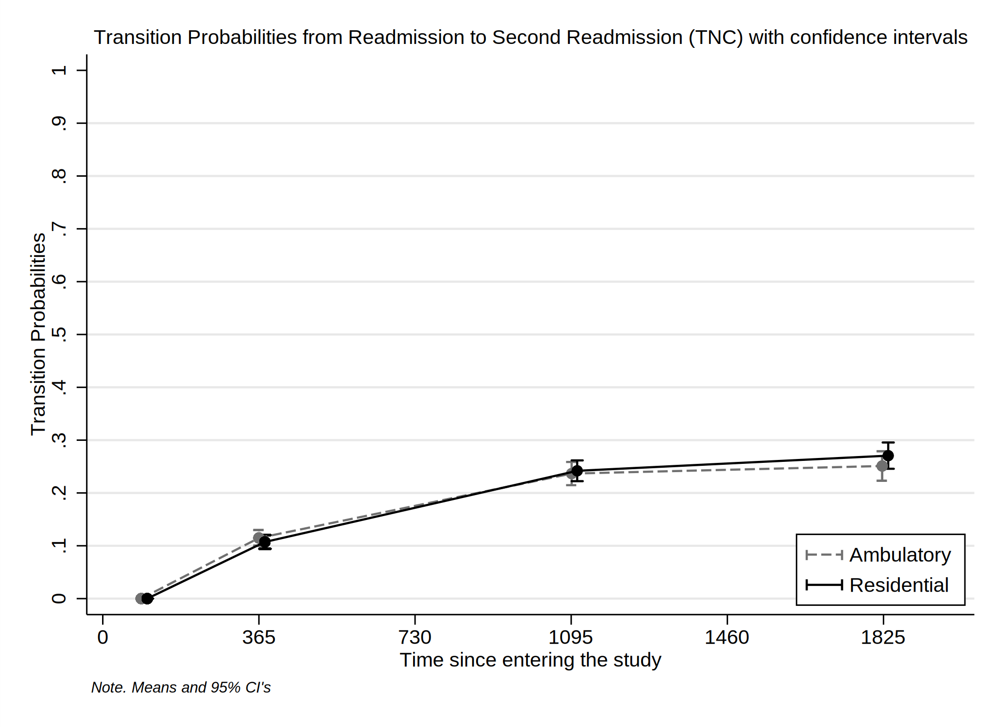
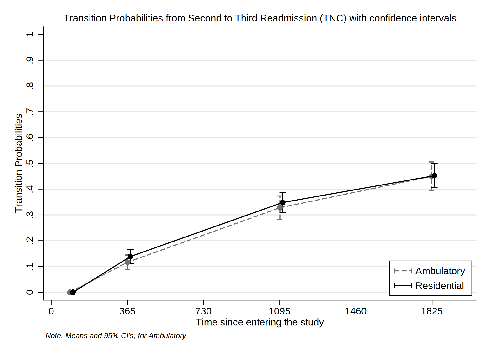

Date created: 15:49:59 10 Oct 2022.
Install commands that are unavailable or out of date.
. *<< dd_do : noout > >
. clear all
. *https://onlinelibrary.wiley.com/doi/epdf/10.1002/sim.8894
. *https://pclambert.net/pdf/Stata_Nordic2019_Lambert.pdf
. *https://slidetodoc.com/automated-reports-using-stata-chuck-huber-ph-d/
. *~Mi unidad\Alvacast\SISTRAT 2019 (github)\_supp_mstates\stata\12874_2020_1192_MOESM1_ESM.docx
. *https://opr.princeton.edu/workshops/Downloads/2015May_StataGraphicsKoffman.pdf
. *http://www.bruunisejs.dk/StataHacks/My%20commands/matprint/matprint_demo/
. *https://pure.au.dk/portal/files/140882936/ScientificWorkInStataGoneEasy.pdf
. *https://www.stata.com/meeting/nordic-and-baltic18/slides/nordic-and-baltic18_Bruun.pdf
. *https://github.com/dvorakt/TIER_exercises/blob/master/dyndoc_debt_growth/debt%20and%20growth%20stata%20dyndoc.do
.
. cap noi which predictms
c:\ado\plus\p\predictms.ado
*! version 4.4.0 22dec2021 MJC
. if _rc==111 {
. cap noi ssc install multistate
. }
. cap noi which merlin
c:\ado\plus\m\merlin.ado
*! version 2.1.5 18mar2022 MJC
. if _rc==111 {
. cap noi ssc install merlin
. }
. cap noi which sumat
c:\ado\plus\s\sumat.ado
*! Part of package matrixtools v. 0.28
*! Support: Niels Henrik Bruun, niels.henrik.bruun@gmail.com
*! 2021-01-03 toxl added
. if _rc==111 {
. cap noi scc install matrixtools
. }
. cap noi which estwrite
c:\ado\plus\e\estwrite.ado
*! version 1.2.4 04sep2009
*! version 1.0.1 15may2007 (renamed from -eststo- to -estwrite-; -append- added)
*! version 1.0.0 29apr2005 Ben Jann (ETH Zurich)
. if _rc==111 {
. cap noi ssc install estwrite
. }
. cap noi which winsor2
c:\ado\plus\w\winsor2.ado
*! Inspirit of -winsor-(NJ Cox) and -winsorizeJ-(J Caskey)
*! Lian Yujun, arlionn@163.com, 2013-12-25
*! 1.1 2014.12.16
. if _rc==111 {
. cap noi ssc install winsor2
. }
.
We need to obtain the file and the work folder.
. mata : st_numscalar("OK", direxists("/volumes/sdrive/data//"))
. if scalar(OK) == 1 {
. cap noi cd "/volumes/sdrive/data//"
. global pathdata "/volumes/sdrive/data//"
. di "Location= ${pathdata}; Date: `c(current_date)', considering an OS `c(os)' for the user: `c(username)'"
. }
. else display "This file does not exist"
This file does not exist
.
. mata : st_numscalar("OK", direxists("E:\Mi unidad\Alvacast\SISTRAT 2019 (github)\_mult_state_ags\"))
. if scalar(OK) == 1 {
. cap noi cd "E:\Mi unidad\Alvacast\SISTRAT 2019 (github)\_mult_state_ags"
E:\Mi unidad\Alvacast\SISTRAT 2019 (github)\_mult_state_ags
. global pathdata "E:\Mi unidad\Alvacast\SISTRAT 2019 (github)\_mult_state_ags"
. global pathdata2 "E:/Mi unidad/Alvacast/SISTRAT 2019 (github)/_mult_state_ags/"
. di "Location= ${pathdata}; Date: `c(current_date)', considering an OS `c(os)' for the user: `c(username)'"
Location= E:\Mi unidad\Alvacast\SISTRAT 2019 (github)\_mult_state_ags; Date: 10 Oct 2022, considering an OS Windows for the user: andre
. }
. else display "This file does not exist"
.
. mata : st_numscalar("OK", direxists("C:\Users\CISS Fondecyt\Mi unidad\Alvacast\SISTRAT 2019 (github)\_mult_state_ags\"))
. if scalar(OK) == 1 {
. cap noi cd "C:\Users\CISS Fondecyt\Mi unidad\Alvacast\SISTRAT 2019 (github)"
. global pathdata "C:\Users\CISS Fondecyt\Mi unidad\Alvacast\SISTRAT 2019 (github)\_mult_state_ags"
. global pathdata2 "C:/Users/CISS Fondecyt/Mi unidad/Alvacast/SISTRAT 2019 (github)/_mult_state_ags/"
. di "Location= ${pathdata}; Date: `c(current_date)', considering an OS `c(os)' for the user: `c(username)'"
. }
. else display "This file does not exist"
This file does not exist
.
. mata : st_numscalar("OK", direxists("C:\Users\andre\Desktop\_mult_state_ags\"))
. if scalar(OK) == 1 {
. cap noi cd "C:\Users\andre\Desktop\_mult_state_ags"
. global pathdata "C:\Users\andre\Desktop\_mult_state_ags"
. global pathdata2 "C:/Users/andre/Desktop/_mult_state_ags/"
. di "Location= ${pathdata}; Date: `c(current_date)', considering an OS `c(os)' for the user: `c(username)'"
. }
. else display "This file does not exist"
This file does not exist
.
. mata : st_numscalar("OK", direxists("C:\Users\CISS Fondecyt\OneDrive\Documentos\"))
. if scalar(OK) == 1 {
. cap noi cd "C:\Users\CISS Fondecyt\Mi unidad\Alvacast\SISTRAT 2019 (github)\_mult_state_ags"
. global pathdata "C:\Users\CISS Fondecyt\Mi unidad\Alvacast\SISTRAT 2019 (github)\_mult_state_ags"
. global pathdata2 "C:/Users/CISS Fondecyt/Mi unidad/Alvacast/SISTRAT 2019 (github)/_mult_state_ags/"
. di "Location= ${pathdata}; Date: `c(current_date)', considering an OS `c(os)' for the user: `c(username)'"
. }
. else display "This file does not exist"
This file does not exist
.
Path data= E:\Mi unidad\Alvacast\SISTRAT 2019 (github)_mult_state_ags;
Timestamp: 10 Oct 2022, considering that is a Windows OS for the username: andre
First we open the files and drop the variables that would mistakenly amplify the sample, and define labels.
The file is located and named as: E:/Mi unidad/Alvacast/SISTRAT 2019 (github)/_mult_state_ags/five_st_msprep_apr22.dta
. //2022-10-09
. *a) open
. //use "${pathdata2}five_st_msprep_apr22.dta", clear
. use "${pathdata2}nine_st_msprep_oct22.dta", clear
. *label
. cap noi label variable id "Patient ID"
. cap noi label variable group_match "Matching group at baseline"
. cap noi label variable tipo_de_plan_res_1 "Baseline Setting (Residential)"
. cap noi label variable TD_status "Baseline treatment completion (TC)"
. cap noi label variable DWCA_status "Baseline treatment non-completion (TNC)"
. cap noi label variable Readmission_status "Readmission (TC)"
. cap noi label variable Readmissionb_status "Readmission (TNC)"
. cap noi label variable Readmission2_status "Readmission (2nd treatment) (TC)"
. cap noi label variable Readmission2b_status "Readmission (2nd treatment) (TNC)"
. cap noi label variable Readmission3_status "Readmission (3rd treatment) (TC)"
. cap noi label variable Readmission3b_status "Readmission (3rd treatment) (TNC)"
. cap noi label variable TD_time "Time to Baseline treatment completion (TC)"
. cap noi label variable DWCA_time "Time to Baseline treatment non-completion (TNC)"
. cap noi label variable Readmission_time "Time to Readmission (TC)"
. cap noi label variable Readmissionb_time "Time to Readmission (TNC)"
. cap noi label variable Readmission2_time "Time to Readmission (2nd treatment) (TC)"
. cap noi label variable Readmission2b_time "Time to Readmission (2nd treatment) (TNC)"
. cap noi label variable Readmission3_time "Time to Readmission (3rd treatment) (TC)"
. cap noi label variable Readmission3b_time "Time to Readmission (3rd treatment) (TNC)"
. cap noi label variable cens_time "Censorship from administrative ecnsorship (2019-11-13) - first admission"
.
. /*
> //2022-09-28 drop treatments without completion or not completion
> *drop if DWCA_1 ==0 & TD_1 ==0
> cap noi rename TD_1 TD_status
> cap noi rename DWCA_1 DWCA_status
> //2022-09-28 generate time-to completion/noncompletion
> gen TD_time = dias_treat_imp_sin_na_1
> replace TD_time=cens_time if TD_status==0
> gen DWCA_time = dias_treat_imp_sin_na_1
> replace DWCA_time=cens_time if DWCA_status==0
>
> //2022-09-28
> gen Readmissionb_time = Readmission_time
> gen Readmission2b_time = Readmission2_time
> gen Readmission3b_time = Readmission3_time
> gen Readmission4b_time = Readmission4_time
> gen Readmissionb_status = Readmission_status
> gen Readmission2b_status = Readmission2_status
> gen Readmission3b_status = Readmission3_status
> gen Readmission4b_status = Readmission4_status
>
> *DWCA
> replace Readmissionb_status = 0 if TD_status==1
> replace Readmission2b_status = 0 if TD_status==1
> replace Readmission3b_status = 0 if TD_status==1
> replace Readmission4b_status = 0 if TD_status==1
>
> *TD
> replace Readmission_status = 0 if DWCA_status==1
> replace Readmission2_status = 0 if DWCA_status==1
> replace Readmission3_status = 0 if DWCA_status==1
> replace Readmission4_status = 0 if DWCA_status==1
>
> *if readmission occurred, we substract the time in each treatment trajectory
> replace Readmission_time=Readmission_time-TD_time if Readmission_status==1 & TD_status==1
> replace Readmissionb_time=Readmissionb_time-DWCA_time if Readmission_statusb==1 & DWCA_status==1
>
> *if it is censored because readmission did not happen
> replace Readmission_time=cens_time if Readmission_status==0
> replace Readmissionb_time=cens_time if Readmissionb_status==0
>
> order id tipo_de_plan_res_1 cens_time TD_status TD_time DWCA_status DWCA_time Readmission_status Readmission_time Readmissionb_status Readmissionb_time Readmission2_status Readmission2_time Readmission2b_status Readmission2b_t
> ime Readmission3_status Readmission3_time Readmission3b_status Readmission3b_time
>
> *do it again just in case
> replace Readmission_time=cens_time if Readmission_status==0
> replace Readmissionb_time=cens_time if Readmissionb_status==0
> replace Readmission2_time=cens_time if Readmission2_status==0
> replace Readmission2b_time=cens_time if Readmission2b_status==0
> replace Readmission3_time=cens_time if Readmission3_status==0
> replace Readmission3b_time=cens_time if Readmission3b_status==0
> replace Readmission4_time=cens_time if Readmission4_status==0
> replace Readmission4b_time=cens_time if Readmission4b_status==0
> */
.
. order id tipo_de_plan_res_1 cens_time TD_status TD_time DWCA_status DWCA_time Readmission_status Readmission_time Readmissionb_status Readmissionb_time Readmission2_status Readmission2_time Readmission2b_status Readmission2b_t
> ime Readmission3_status Readmission3_time Readmission3b_status Readmission3b_time
.
. *I'm not sure if this is the problem. It seems that is not
. *drop if DWCA_status==0 & TD_status==0
Then we define the transition matrix:
. matrix mat_nine_states = ( ///
> .,1,2,.,.,.,.,.,. \ ///
> .,.,.,3,.,.,.,.,. \ ///
> .,.,.,.,4,.,.,.,. \ ///
> .,.,.,.,.,5,.,.,. \ ///
> .,.,.,.,.,.,6,.,. \ ///
> .,.,.,.,.,.,.,7,. \ ///
> .,.,.,.,.,.,.,.,8 \ ///
> .,.,.,.,.,.,.,.,. \ ///
> .,.,.,.,.,.,.,.,. ///
> )
. *a = completion
. *b = non-completion <<
.
. matrix colnames mat_nine_states = start TD_status DWCA_status Readmission_status Readmissionb_status Readmission2_status Readmission2b_status Readmission3_status Readmission3b_status
. matrix rownames mat_nine_states = start TD_status DWCA_status Readmission_status Readmissionb_status Readmission2_status Readmission2b_status Readmission3_status Readmission3b_status
. matrix coleq mat_nine_states = to to to to to to to to to
. matrix roweq mat_nine_states = from from from from from from from from from
.
| to | > | |||||||||
|---|---|---|---|---|---|---|---|---|---|---|
| start | TD_status | DWCA_status | Readmission_status | Readmissionb_status | Readmission2_status | Readmission2b_status | Rea > dmission3_status | Readmission3b_status | ||
| from | start | 1 | 2 | > | ||||||
| TD_status | 3 | > | ||||||||
| DWCA_status | 4 | > | ||||||||
| Readmission_status | 5 | > | ||||||||
| Readmissionb_status | 6 | > | ||||||||
| Readmission2_status | > 7 | |||||||||
| Readmission2b_status | > | 8 | ||||||||
| Readmission3_status | > | |||||||||
| Readmission3b_status | > |
and transform the database in a long format according to the specifications and the transition matrix.
Finally, the database adopt the following structure:
Set the database as a renewal time.
. *stset _stop, enter(_start) failure(_status=1) //* scale(365.25) id(id)
.
. *file:///G:/Mi%20unidad/Alvacast/SISTRAT%202019%20(github)/_supp_mstates/stata/crowther2017%20(1).pdf
. stset _time, failure(_status==1)
failure event: _status == 1
obs. time interval: (0, _time]
exit on or before: failure
------------------------------------------------------------------------------
70,657 total observations
415 observations end on or before enter()
------------------------------------------------------------------------------
70,242 observations remaining, representing
26,327 failures in single-record/single-failure data
54182017 total analysis time at risk and under observation
at risk from t = 0
earliest observed entry t = 0
last observed exit t = 4,179
.
.
. forvalues i = 1/8 {
2. stphplot if _trans==`i', by(tipo_de_plan_res_1) ///
> scheme(sj) graphregion(color(white)) ///
> legend(pos(1) ring(0) col(1) symysize(zero) keygap(1) symxsize(large) order( 1 2) lab(1 "Ambulatory") lab(2 "Residential") size(small)) ///
> note("{it:Note. Means and 95% CI's}",size(vsmall)) ///
> title("Loglog Survival versus logtime by Treatment Setting (Transition =`i')", size(small)) name(stphplot_res_`i', replace) ///
> saving(stphplot_res_`i'_22_corr3.gph, replace)
3. }
failure _d: _status == 1
analysis time _t: _time
(file stphplot_res_1_22_corr3.gph saved)
failure _d: _status == 1
analysis time _t: _time
(file stphplot_res_2_22_corr3.gph saved)
failure _d: _status == 1
analysis time _t: _time
(file stphplot_res_3_22_corr3.gph saved)
failure _d: _status == 1
analysis time _t: _time
(file stphplot_res_4_22_corr3.gph saved)
failure _d: _status == 1
analysis time _t: _time
(file stphplot_res_5_22_corr3.gph saved)
failure _d: _status == 1
analysis time _t: _time
(file stphplot_res_6_22_corr3.gph saved)
failure _d: _status == 1
analysis time _t: _time
(file stphplot_res_7_22_corr3.gph saved)
failure _d: _status == 1
analysis time _t: _time
(file stphplot_res_8_22_corr3.gph saved)
. graph combine "${pathdata}\stphplot_res_1_22_corr3.gph" "${pathdata}\stphplot_res_2_22_corr3.gph" "${pathdata}\stphplot_res_3_22_corr3.gph" "${pathdata}\stphplot_res_4_22_corr3.gph" ///
> "${pathdata}\stphplot_res_5_22_corr3.gph" "${pathdata}\stphplot_res_6_22_corr3.gph" "${pathdata}\stphplot_res_7_22_corr3.gph" "${pathdata}\stphplot_res_8_22_corr3.gph", ///
> colfirst ycommon xcommon iscale(*.7) imargin(tiny) graphregion(color(gs16)) ///
> title("Combination of −ln{−ln(survival)} vs. ln(analysis time)" "Renewal time", size(medium)) cols(4) /// *subtitle("{it:}", size(small)) ///
> note("{it: Note: Ordered by columns, from up to down, left to right}", size(tiny)) ///
> name(tr_ph_ln_srv_t_res_s_corr3, replace)

=============================================================================
=============================================================================
Generated an Aalen-Johanssen estimator to obtain the transition probabilities of the data from the time 0 (from admission). For this, we separated the transition probabilities according to the setting at baseline.
. *http://fmwww.bc.edu/repec/bocode/m/msaj.ado
. msaj, transmatrix(mat_nine_states) by(tipo_de_plan_res_1) ci
. rename (P_AJ_*) (ajprob*)
To generate figures, we select the valid transitions


Calculate transition probabilities from a determined states in times 90, 365 (1 year), 1095 (3 years) & 1826 (5 years).
variable trp_ajprob* not found
variable _t2 not found
(35,783 real changes made)
(file msaj_12_jun_22_corr3.gph saved)

(file msaj_13_jun_22_corr3.gph saved)
(file msaj_24_jun_22_corr3.gph saved)
(file msaj_35_jun_22_corr3.gph saved)
(file msaj_46_jun_22_corr3.gph saved)

(file msaj_57_jun_22_corr3.gph saved)

(file msaj_68_jun_22_corr3.gph saved)
(file msaj_79_jun_22_corr3.gph saved)

Transition Probabilities from Admission to Treatment completion with confidence intervals
. foreach var of varlist trp_ajprob_30_1826_12 trp_ajprob_30_1826_12_lci trp_ajprob_30_1826_12_uci {
2. scalar variable = "`var'"
3. qui summarize `var' if inrange(_t, 90, 91) & tipo_de_plan_res_1==0
4. scalar e3m_`var' = round(round(r(mean),.001)*100,.1)
5. qui summarize `var' if inrange(_t, 365, 366) & tipo_de_plan_res_1==0
6. scalar e1y_`var' = round(round(r(mean),.001)*100,.1)
7. qui summarize `var' if inrange(_t, 1095, 1096) & tipo_de_plan_res_1==0
8. scalar e3y_`var' = round(round(r(mean),.001)*100,.1)
9. qui summarize `var' if inrange(_t, 1812, 1827) & tipo_de_plan_res_1==0
10. scalar e5y_`var' = round(round(r(mean),.001)*100,.1)
11. cap noi matrix e_a_`var' = (`=scalar(e3m_`var')'\ `=scalar(e1y_`var')'\ `=scalar(scalar(e3y_`var'))'\ `=scalar(scalar(e5y_`var'))')
12. matrix colnames e_a_`var' = `var'
13. matrix rownames e_a_`var' = 3_mths 1_yr 3_yrs 5_yrs
14. qui summarize `var' if inrange(_t, 90, 91) & tipo_de_plan_res_1==1
15. scalar e3m_`var' = round(round(r(mean),.001)*100,.1)
16. qui summarize `var' if inrange(_t, 365, 366) & tipo_de_plan_res_1==1
17. scalar e1y_`var' = round(round(r(mean),.001)*100,.1)
18. qui summarize `var' if inrange(_t, 1095, 1096) & tipo_de_plan_res_1==1
19. scalar e3y_`var' = round(round(r(mean),.001)*100,.1)
20. qui summarize `var' if inrange(_t, 1812, 1827) & tipo_de_plan_res_1==1
21. scalar e5y_`var' = round(round(r(mean),.001)*100,.1)
22. cap noi matrix e_b_`var' = (`=scalar(e3m_`var')'\ `=scalar(e1y_`var')'\ `=scalar(scalar(e3y_`var'))'\ `=scalar(scalar(e5y_`var'))')
23. matrix colnames e_b_`var' = `var'
24. matrix rownames e_b_`var' = 3_mths 1_yr 3_yrs 5_yrs
25. }
.
. matrix est_msaj12 = (e_a_trp_ajprob_30_1826_12, e_a_trp_ajprob_30_1826_12_lci, e_a_trp_ajprob_30_1826_12_uci, e_b_trp_ajprob_30_1826_12, e_b_trp_ajprob_30_1826_12_lci, e_b_trp_ajprob_30_1826_12_uci)
. matrix colnames est_msaj12 = Est_Amb LCI UCI Est_Res LCI UCI
.
. esttab matrix(est_msaj12) using "${pathdata2}pr_msaj12_corr3.html", replace
(output written to E:/Mi unidad/Alvacast/SISTRAT 2019 (github)/_mult_state_ags/pr_msaj12_corr3.html)
The transition probabilities are presented here:
| est_msaj12 | ||||||
| Est_Amb | LCI | UCI | Est_Res | LCI | UCI | |
| 3_mths | 0 | 0 | 0 | 0 | 0 | 0 |
| 1_yr | 12.8 | 12 | 13.5 | 24.4 | 23.5 | 25.4 |
| 3_yrs | 23.6 | 22.6 | 24.5 | 34.2 | 33.1 | 35.3 |
| 5_yrs | 22 | 21 | 22.9 | 31.3 | 30.2 | 32.4 |
Transition Probabilities from Admission to Treatment Non-completion
. foreach var of varlist trp_ajprob_30_1826_13 trp_ajprob_30_1826_13_lci trp_ajprob_30_1826_13_uci {
2. scalar variable = "`var'"
3. qui summarize `var' if inrange(_t, 90, 91) & tipo_de_plan_res_1==0
4. scalar e3m_`var' = round(round(r(mean),.001)*100,.1)
5. qui summarize `var' if inrange(_t, 365, 366) & tipo_de_plan_res_1==0
6. scalar e1y_`var' = round(round(r(mean),.001)*100,.1)
7. qui summarize `var' if inrange(_t, 1095, 1096) & tipo_de_plan_res_1==0
8. scalar e3y_`var' = round(round(r(mean),.001)*100,.1)
9. qui summarize `var' if inrange(_t, 1812, 1827) & tipo_de_plan_res_1==0
10. scalar e5y_`var' = round(round(r(mean),.001)*100,.1)
11. cap noi matrix e_a_`var' = (`=scalar(e3m_`var')'\ `=scalar(e1y_`var')'\ `=scalar(scalar(e3y_`var'))'\ `=scalar(scalar(e5y_`var'))')
12. matrix colnames e_a_`var' = `var'
13. matrix rownames e_a_`var' = 3_mths 1_yr 3_yrs 5_yrs
14. qui summarize `var' if inrange(_t, 90, 91) & tipo_de_plan_res_1==1
15. scalar e3m_`var' = round(round(r(mean),.001)*100,.1)
16. qui summarize `var' if inrange(_t, 365, 366) & tipo_de_plan_res_1==1
17. scalar e1y_`var' = round(round(r(mean),.001)*100,.1)
18. qui summarize `var' if inrange(_t, 1095, 1096) & tipo_de_plan_res_1==1
19. scalar e3y_`var' = round(round(r(mean),.001)*100,.1)
20. qui summarize `var' if inrange(_t, 1812, 1827) & tipo_de_plan_res_1==1
21. scalar e5y_`var' = round(round(r(mean),.001)*100,.1)
22. cap noi matrix e_b_`var' = (`=scalar(e3m_`var')'\ `=scalar(e1y_`var')'\ `=scalar(scalar(e3y_`var'))'\ `=scalar(scalar(e5y_`var'))')
23. matrix colnames e_b_`var' = `var'
24. matrix rownames e_b_`var' = 3_mths 1_yr 3_yrs 5_yrs
25. }
.
. matrix est_msaj13 = (e_a_trp_ajprob_30_1826_13, e_a_trp_ajprob_30_1826_13_lci, e_a_trp_ajprob_30_1826_13_uci, e_b_trp_ajprob_30_1826_13, e_b_trp_ajprob_30_1826_13_lci, e_b_trp_ajprob_30_1826_13_uci)
. matrix colnames est_msaj13 = Est_Amb LCI UCI Est_Res LCI UCI
.
. esttab matrix(est_msaj13) using "${pathdata2}pr_msaj13_corr3.html", replace
(output written to E:/Mi unidad/Alvacast/SISTRAT 2019 (github)/_mult_state_ags/pr_msaj13_corr3.html)
The transition probabilities are presented here:
| est_msaj13 | ||||||
| Est_Amb | LCI | UCI | Est_Res | LCI | UCI | |
| 3_mths | .2 | .1 | .3 | .1 | .1 | .2 |
| 1_yr | 46.8 | 45.8 | 47.9 | 31.8 | 30.8 | 32.8 |
| 3_yrs | 48.5 | 47.5 | 49.6 | 31.8 | 30.8 | 32.8 |
| 5_yrs | 45.5 | 44.4 | 46.6 | 29.4 | 28.5 | 30.4 |
Transition Probabilities from Treatment Completion to Readmission
. foreach var of varlist trp_ajprob_30_1826_24 trp_ajprob_30_1826_24_lci trp_ajprob_30_1826_24_uci {
2. scalar variable = "`var'"
3. qui summarize `var' if inrange(_t, 90, 91) & tipo_de_plan_res_1==0
4. scalar e3m_`var' = round(round(r(mean),.001)*100,.1)
5. qui summarize `var' if inrange(_t, 365, 366) & tipo_de_plan_res_1==0
6. scalar e1y_`var' = round(round(r(mean),.001)*100,.1)
7. qui summarize `var' if inrange(_t, 1095, 1096) & tipo_de_plan_res_1==0
8. scalar e3y_`var' = round(round(r(mean),.001)*100,.1)
9. qui summarize `var' if inrange(_t, 1812, 1827) & tipo_de_plan_res_1==0
10. scalar e5y_`var' = round(round(r(mean),.001)*100,.1)
11. cap noi matrix e_a_`var' = (`=scalar(e3m_`var')'\ `=scalar(e1y_`var')'\ `=scalar(scalar(e3y_`var'))'\ `=scalar(scalar(e5y_`var'))')
12. matrix colnames e_a_`var' = `var'
13. matrix rownames e_a_`var' = 3_mths 1_yr 3_yrs 5_yrs
14. qui summarize `var' if inrange(_t, 90, 91) & tipo_de_plan_res_1==1
15. scalar e3m_`var' = round(round(r(mean),.001)*100,.1)
16. qui summarize `var' if inrange(_t, 365, 366) & tipo_de_plan_res_1==1
17. scalar e1y_`var' = round(round(r(mean),.001)*100,.1)
18. qui summarize `var' if inrange(_t, 1095, 1096) & tipo_de_plan_res_1==1
19. scalar e3y_`var' = round(round(r(mean),.001)*100,.1)
20. qui summarize `var' if inrange(_t, 1812, 1827) & tipo_de_plan_res_1==1
21. scalar e5y_`var' = round(round(r(mean),.001)*100,.1)
22. cap noi matrix e_b_`var' = (`=scalar(e3m_`var')'\ `=scalar(e1y_`var')'\ `=scalar(scalar(e3y_`var'))'\ `=scalar(scalar(e5y_`var'))')
23. matrix colnames e_b_`var' = `var'
24. matrix rownames e_b_`var' = 3_mths 1_yr 3_yrs 5_yrs
25. }
.
. matrix est_msaj24 = (e_a_trp_ajprob_30_1826_24, e_a_trp_ajprob_30_1826_24_lci, e_a_trp_ajprob_30_1826_24_uci, e_b_trp_ajprob_30_1826_24, e_b_trp_ajprob_30_1826_24_lci, e_b_trp_ajprob_30_1826_24_uci)
. matrix colnames est_msaj24 = Est_Amb LCI UCI Est_Res LCI UCI
.
. esttab matrix(est_msaj24) using "${pathdata2}pr_msaj24_corr3.html", replace
(output written to E:/Mi unidad/Alvacast/SISTRAT 2019 (github)/_mult_state_ags/pr_msaj24_corr3.html)
The transition probabilities are presented here:
| est_msaj24 | ||||||
| Est_Amb | LCI | UCI | Est_Res | LCI | UCI | |
| 3_mths | 0 | 0 | 0 | 0 | 0 | 0 |
| 1_yr | 6.8 | 5.6 | 7.9 | 10.2 | 9.1 | 11.3 |
| 3_yrs | 14.4 | 12.7 | 16.2 | 20 | 18.5 | 21.5 |
| 5_yrs | 16.3 | 14.2 | 18.4 | 20.8 | 19.2 | 22.5 |
Transition Probabilities from Treatment Non-completion to Readmission
. foreach var of varlist trp_ajprob_30_1826_35 trp_ajprob_30_1826_35_lci trp_ajprob_30_1826_35_uci {
2. scalar variable = "`var'"
3. qui summarize `var' if inrange(_t, 90, 91) & tipo_de_plan_res_1==0
4. scalar e3m_`var' = round(round(r(mean),.001)*100,.1)
5. qui summarize `var' if inrange(_t, 365, 366) & tipo_de_plan_res_1==0
6. scalar e1y_`var' = round(round(r(mean),.001)*100,.1)
7. qui summarize `var' if inrange(_t, 1095, 1096) & tipo_de_plan_res_1==0
8. scalar e3y_`var' = round(round(r(mean),.001)*100,.1)
9. qui summarize `var' if inrange(_t, 1812, 1827) & tipo_de_plan_res_1==0
10. scalar e5y_`var' = round(round(r(mean),.001)*100,.1)
11. cap noi matrix e_a_`var' = (`=scalar(e3m_`var')'\ `=scalar(e1y_`var')'\ `=scalar(scalar(e3y_`var'))'\ `=scalar(scalar(e5y_`var'))')
12. matrix colnames e_a_`var' = `var'
13. matrix rownames e_a_`var' = 3_mths 1_yr 3_yrs 5_yrs
14. qui summarize `var' if inrange(_t, 90, 91) & tipo_de_plan_res_1==1
15. scalar e3m_`var' = round(round(r(mean),.001)*100,.1)
16. qui summarize `var' if inrange(_t, 365, 366) & tipo_de_plan_res_1==1
17. scalar e1y_`var' = round(round(r(mean),.001)*100,.1)
18. qui summarize `var' if inrange(_t, 1095, 1096) & tipo_de_plan_res_1==1
19. scalar e3y_`var' = round(round(r(mean),.001)*100,.1)
20. qui summarize `var' if inrange(_t, 1812, 1827) & tipo_de_plan_res_1==1
21. scalar e5y_`var' = round(round(r(mean),.001)*100,.1)
22. cap noi matrix e_b_`var' = (`=scalar(e3m_`var')'\ `=scalar(e1y_`var')'\ `=scalar(scalar(e3y_`var'))'\ `=scalar(scalar(e5y_`var'))')
23. matrix colnames e_b_`var' = `var'
24. matrix rownames e_b_`var' = 3_mths 1_yr 3_yrs 5_yrs
25. }
.
. matrix est_msaj35 = (e_a_trp_ajprob_30_1826_35, e_a_trp_ajprob_30_1826_35_lci, e_a_trp_ajprob_30_1826_35_uci, e_b_trp_ajprob_30_1826_35, e_b_trp_ajprob_30_1826_35_lci, e_b_trp_ajprob_30_1826_35_uci)
. matrix colnames est_msaj35 = Est_Amb LCI UCI Est_Res LCI UCI
.
. esttab matrix(est_msaj35) using "${pathdata2}pr_msaj35_corr3.html", replace
(output written to E:/Mi unidad/Alvacast/SISTRAT 2019 (github)/_mult_state_ags/pr_msaj35_corr3.html)
The transition probabilities are presented here:
| est_msaj35 | ||||||
| Est_Amb | LCI | UCI | Est_Res | LCI | UCI | |
| 3_mths | 0 | 0 | .1 | 0 | 0 | .1 |
| 1_yr | 8.8 | 8.2 | 9.5 | 12.3 | 11.4 | 13.2 |
| 3_yrs | 16.2 | 15.3 | 17.1 | 20.7 | 19.6 | 21.8 |
| 5_yrs | 17.5 | 16.4 | 18.6 | 21.9 | 20.7 | 23.1 |
Transition Probabilities from Readmission to Second Readmission (TC)
. foreach var of varlist trp_ajprob_30_1826_46 trp_ajprob_30_1826_46_lci trp_ajprob_30_1826_46_uci {
2. scalar variable = "`var'"
3. qui summarize `var' if inrange(_t, 90, 91) & tipo_de_plan_res_1==0
4. scalar e3m_`var' = round(round(r(mean),.001)*100,.1)
5. qui summarize `var' if inrange(_t, 365, 366) & tipo_de_plan_res_1==0
6. scalar e1y_`var' = round(round(r(mean),.001)*100,.1)
7. qui summarize `var' if inrange(_t, 1095, 1096) & tipo_de_plan_res_1==0
8. scalar e3y_`var' = round(round(r(mean),.001)*100,.1)
9. qui summarize `var' if inrange(_t, 1812, 1827) & tipo_de_plan_res_1==0
10. scalar e5y_`var' = round(round(r(mean),.001)*100,.1)
11. cap noi matrix e_a_`var' = (`=scalar(e3m_`var')'\ `=scalar(e1y_`var')'\ `=scalar(scalar(e3y_`var'))'\ `=scalar(scalar(e5y_`var'))')
12. matrix colnames e_a_`var' = `var'
13. matrix rownames e_a_`var' = 3_mths 1_yr 3_yrs 5_yrs
14. qui summarize `var' if inrange(_t, 90, 91) & tipo_de_plan_res_1==1
15. scalar e3m_`var' = round(round(r(mean),.001)*100,.1)
16. qui summarize `var' if inrange(_t, 365, 366) & tipo_de_plan_res_1==1
17. scalar e1y_`var' = round(round(r(mean),.001)*100,.1)
18. qui summarize `var' if inrange(_t, 1095, 1096) & tipo_de_plan_res_1==1
19. scalar e3y_`var' = round(round(r(mean),.001)*100,.1)
20. qui summarize `var' if inrange(_t, 1812, 1827) & tipo_de_plan_res_1==1
21. scalar e5y_`var' = round(round(r(mean),.001)*100,.1)
22. cap noi matrix e_b_`var' = (`=scalar(e3m_`var')'\ `=scalar(e1y_`var')'\ `=scalar(scalar(e3y_`var'))'\ `=scalar(scalar(e5y_`var'))')
23. matrix colnames e_b_`var' = `var'
24. matrix rownames e_b_`var' = 3_mths 1_yr 3_yrs 5_yrs
25. }
.
. matrix est_msaj46 = (e_a_trp_ajprob_30_1826_46, e_a_trp_ajprob_30_1826_46_lci, e_a_trp_ajprob_30_1826_46_uci, e_b_trp_ajprob_30_1826_46, e_b_trp_ajprob_30_1826_46_lci, e_b_trp_ajprob_30_1826_46_uci)
. matrix colnames est_msaj46 = Est_Amb LCI UCI Est_Res LCI UCI
.
. esttab matrix(est_msaj46) using "${pathdata2}pr_msaj46_corr3.html", replace
(output written to E:/Mi unidad/Alvacast/SISTRAT 2019 (github)/_mult_state_ags/pr_msaj46_corr3.html)
The transition probabilities are presented here:
| est_msaj46 | ||||||
| Est_Amb | LCI | UCI | Est_Res | LCI | UCI | |
| 3_mths | 0 | 0 | 0 | 0 | 0 | 0 |
| 1_yr | .6 | 0 | 1.4 | .6 | .1 | 1.1 |
| 3_yrs | 11.5 | 7.7 | 15.2 | 14.2 | 11.9 | 16.6 |
| 5_yrs | 27.4 | 21 | 33.8 | 29.2 | 25.4 | 32.9 |
Transition Probabilities from Readmission to Second Readmission (TNC)
. foreach var of varlist trp_ajprob_30_1826_57 trp_ajprob_30_1826_57_lci trp_ajprob_30_1826_57_uci {
2. scalar variable = "`var'"
3. qui summarize `var' if inrange(_t, 90, 91) & tipo_de_plan_res_1==0
4. scalar e3m_`var' = round(round(r(mean),.001)*100,.1)
5. qui summarize `var' if inrange(_t, 365, 366) & tipo_de_plan_res_1==0
6. scalar e1y_`var' = round(round(r(mean),.001)*100,.1)
7. qui summarize `var' if inrange(_t, 1095, 1096) & tipo_de_plan_res_1==0
8. scalar e3y_`var' = round(round(r(mean),.001)*100,.1)
9. qui summarize `var' if inrange(_t, 1812, 1827) & tipo_de_plan_res_1==0
10. scalar e5y_`var' = round(round(r(mean),.001)*100,.1)
11. cap noi matrix e_a_`var' = (`=scalar(e3m_`var')'\ `=scalar(e1y_`var')'\ `=scalar(scalar(e3y_`var'))'\ `=scalar(scalar(e5y_`var'))')
12. matrix colnames e_a_`var' = `var'
13. matrix rownames e_a_`var' = 3_mths 1_yr 3_yrs 5_yrs
14. qui summarize `var' if inrange(_t, 90, 91) & tipo_de_plan_res_1==1
15. scalar e3m_`var' = round(round(r(mean),.001)*100,.1)
16. qui summarize `var' if inrange(_t, 365, 366) & tipo_de_plan_res_1==1
17. scalar e1y_`var' = round(round(r(mean),.001)*100,.1)
18. qui summarize `var' if inrange(_t, 1095, 1096) & tipo_de_plan_res_1==1
19. scalar e3y_`var' = round(round(r(mean),.001)*100,.1)
20. qui summarize `var' if inrange(_t, 1812, 1827) & tipo_de_plan_res_1==1
21. scalar e5y_`var' = round(round(r(mean),.001)*100,.1)
22. cap noi matrix e_b_`var' = (`=scalar(e3m_`var')'\ `=scalar(e1y_`var')'\ `=scalar(scalar(e3y_`var'))'\ `=scalar(scalar(e5y_`var'))')
23. matrix colnames e_b_`var' = `var'
24. matrix rownames e_b_`var' = 3_mths 1_yr 3_yrs 5_yrs
25. }
.
. matrix est_msaj57 = (e_a_trp_ajprob_30_1826_57, e_a_trp_ajprob_30_1826_57_lci, e_a_trp_ajprob_30_1826_57_uci, e_b_trp_ajprob_30_1826_57, e_b_trp_ajprob_30_1826_57_lci, e_b_trp_ajprob_30_1826_57_uci)
. matrix colnames est_msaj57 = Est_Amb LCI UCI Est_Res LCI UCI
.
. esttab matrix(est_msaj57) using "${pathdata2}pr_msaj57_corr3.html", replace
(output written to E:/Mi unidad/Alvacast/SISTRAT 2019 (github)/_mult_state_ags/pr_msaj57_corr3.html)
The transition probabilities are presented here:
| est_msaj57 | ||||||
| Est_Amb | LCI | UCI | Est_Res | LCI | UCI | |
| 3_mths | 0 | 0 | 0 | 0 | 0 | 0 |
| 1_yr | 1.6 | 1 | 2.2 | 3.2 | 2.4 | 3.9 |
| 3_yrs | 18.2 | 16.2 | 20.1 | 19.6 | 17.8 | 21.4 |
| 5_yrs | 26.3 | 23.4 | 29.2 | 25.1 | 22.6 | 27.5 |
Transition Probabilities from Second to Third Readmission (TC)
. foreach var of varlist trp_ajprob_30_1826_68 trp_ajprob_30_1826_68_lci trp_ajprob_30_1826_68_uci {
2. scalar variable = "`var'"
3. qui summarize `var' if inrange(_t, 90, 91) & tipo_de_plan_res_1==0
4. scalar e3m_`var' = round(round(r(mean),.001)*100,.1)
5. qui summarize `var' if inrange(_t, 365, 366) & tipo_de_plan_res_1==0
6. scalar e1y_`var' = round(round(r(mean),.001)*100,.1)
7. qui summarize `var' if inrange(_t, 1095, 1096) & tipo_de_plan_res_1==0
8. scalar e3y_`var' = round(round(r(mean),.001)*100,.1)
9. qui summarize `var' if inrange(_t, 1812, 1827) & tipo_de_plan_res_1==0
10. scalar e5y_`var' = round(round(r(mean),.001)*100,.1)
11. cap noi matrix e_a_`var' = (`=scalar(e3m_`var')'\ `=scalar(e1y_`var')'\ `=scalar(scalar(e3y_`var'))'\ `=scalar(scalar(e5y_`var'))')
12. matrix colnames e_a_`var' = `var'
13. matrix rownames e_a_`var' = 3_mths 1_yr 3_yrs 5_yrs
14. qui summarize `var' if inrange(_t, 90, 91) & tipo_de_plan_res_1==1
15. scalar e3m_`var' = round(round(r(mean),.001)*100,.1)
16. qui summarize `var' if inrange(_t, 365, 366) & tipo_de_plan_res_1==1
17. scalar e1y_`var' = round(round(r(mean),.001)*100,.1)
18. qui summarize `var' if inrange(_t, 1095, 1096) & tipo_de_plan_res_1==1
19. scalar e3y_`var' = round(round(r(mean),.001)*100,.1)
20. qui summarize `var' if inrange(_t, 1812, 1827) & tipo_de_plan_res_1==1
21. scalar e5y_`var' = round(round(r(mean),.001)*100,.1)
22. cap noi matrix e_b_`var' = (`=scalar(e3m_`var')'\ `=scalar(e1y_`var')'\ `=scalar(scalar(e3y_`var'))'\ `=scalar(scalar(e5y_`var'))')
23. matrix colnames e_b_`var' = `var'
24. matrix rownames e_b_`var' = 3_mths 1_yr 3_yrs 5_yrs
25. }
.
. matrix est_msaj68 = (e_a_trp_ajprob_30_1826_68, e_a_trp_ajprob_30_1826_68_lci, e_a_trp_ajprob_30_1826_68_uci, e_b_trp_ajprob_30_1826_68, e_b_trp_ajprob_30_1826_68_lci, e_b_trp_ajprob_30_1826_68_uci)
. matrix colnames est_msaj68 = Est_Amb LCI UCI Est_Res LCI UCI
.
. esttab matrix(est_msaj68) using "${pathdata2}pr_msaj68_corr3.html", replace
(output written to E:/Mi unidad/Alvacast/SISTRAT 2019 (github)/_mult_state_ags/pr_msaj68_corr3.html)
The transition probabilities are presented here:
| est_msaj68 | ||||||
| Est_Amb | LCI | UCI | Est_Res | LCI | UCI | |
| 3_mths | 0 | 0 | 0 | 0 | 0 | 0 |
| 1_yr | 0 | 0 | 0 | 0 | 0 | 0 |
| 3_yrs | 6.1 | 0 | 12.9 | 10 | 5.4 | 14.5 |
| 5_yrs | 21.4 | 8.8 | 34.1 | 28.2 | 20.8 | 35.6 |
Transition Probabilities from Second to Third Readmission (TNC)
. foreach var of varlist trp_ajprob_30_1826_79 trp_ajprob_30_1826_79_lci trp_ajprob_30_1826_79_uci {
2. scalar variable = "`var'"
3. qui summarize `var' if inrange(_t, 90, 91) & tipo_de_plan_res_1==0
4. scalar e3m_`var' = round(round(r(mean),.001)*100,.1)
5. qui summarize `var' if inrange(_t, 365, 366) & tipo_de_plan_res_1==0
6. scalar e1y_`var' = round(round(r(mean),.001)*100,.1)
7. qui summarize `var' if inrange(_t, 1095, 1096) & tipo_de_plan_res_1==0
8. scalar e3y_`var' = round(round(r(mean),.001)*100,.1)
9. qui summarize `var' if inrange(_t, 1812, 1827) & tipo_de_plan_res_1==0
10. scalar e5y_`var' = round(round(r(mean),.001)*100,.1)
11. cap noi matrix e_a_`var' = (`=scalar(e3m_`var')'\ `=scalar(e1y_`var')'\ `=scalar(scalar(e3y_`var'))'\ `=scalar(scalar(e5y_`var'))')
12. matrix colnames e_a_`var' = `var'
13. matrix rownames e_a_`var' = 3_mths 1_yr 3_yrs 5_yrs
14. qui summarize `var' if inrange(_t, 90, 91) & tipo_de_plan_res_1==1
15. scalar e3m_`var' = round(round(r(mean),.001)*100,.1)
16. qui summarize `var' if inrange(_t, 365, 366) & tipo_de_plan_res_1==1
17. scalar e1y_`var' = round(round(r(mean),.001)*100,.1)
18. qui summarize `var' if inrange(_t, 1095, 1096) & tipo_de_plan_res_1==1
19. scalar e3y_`var' = round(round(r(mean),.001)*100,.1)
20. qui summarize `var' if inrange(_t, 1812, 1827) & tipo_de_plan_res_1==1
21. scalar e5y_`var' = round(round(r(mean),.001)*100,.1)
22. cap noi matrix e_b_`var' = (`=scalar(e3m_`var')'\ `=scalar(e1y_`var')'\ `=scalar(scalar(e3y_`var'))'\ `=scalar(scalar(e5y_`var'))')
23. matrix colnames e_b_`var' = `var'
24. matrix rownames e_b_`var' = 3_mths 1_yr 3_yrs 5_yrs
25. }
.
. matrix est_msaj79 = (e_a_trp_ajprob_30_1826_79, e_a_trp_ajprob_30_1826_79_lci, e_a_trp_ajprob_30_1826_79_uci, e_b_trp_ajprob_30_1826_79, e_b_trp_ajprob_30_1826_79_lci, e_b_trp_ajprob_30_1826_79_uci)
. matrix colnames est_msaj79 = Est_Amb LCI UCI Est_Res LCI UCI
.
. esttab matrix(est_msaj79) using "${pathdata2}pr_msaj79_corr3.html", replace
(output written to E:/Mi unidad/Alvacast/SISTRAT 2019 (github)/_mult_state_ags/pr_msaj79_corr3.html)
The transition probabilities are presented here:
| est_msaj79 | ||||||
| Est_Amb | LCI | UCI | Est_Res | LCI | UCI | |
| 3_mths | 0 | 0 | 0 | 0 | 0 | 0 |
| 1_yr | .8 | 0 | 1.6 | .6 | 0 | 1.2 |
| 3_yrs | 13.8 | 10 | 17.6 | 18 | 14.5 | 21.4 |
| 5_yrs | 38.8 | 32.6 | 44.9 | 44.1 | 39 | 49.3 |
=============================================================================
=============================================================================
We generated a list of parametric and intercept-only survival models with different distributions (Exponential, Weibull, Gompertz, Log-logistic, Log-normal & Generalized gamma. Aditionally, we defined a series of Royston-Parmar models with a function of restricted cubic splines, in which the knots (#df -1) are defined in each percentile of the distribution. We saved the estimates in the file called `parmodels_m_jun_22_corr3’.
. forvalues i = 1/8 {
2. // Exponential
. di in yellow "{bf: ***********}"
3. di in yellow "{bf: Transition `i': family Exp (intercept-only)}"
4. di in yellow "{bf: ***********}"
5. set seed 2125
6. qui cap noi merlin (_time if _trans == `i', family(exponential, fail(_status)))
7. estimates store m`i'_exp
8. // Weibull
. di in yellow "{bf: ***********}"
9. di in yellow "{bf: Transition `i': family Wei (intercept-only)}"
10. di in yellow "{bf: ***********}"
11. set seed 2125
12. qui cap noi merlin (_time if _trans == `i', family(weibull, fail(_status)))
13. estimates store m`i'_weib
14. // Gompertz
. di in yellow "{bf: ***********}"
15. di in yellow "{bf: Transition `i': family Gomp (intercept-only)}"
16. di in yellow "{bf: ***********}"
17. set seed 2125
18. qui cap noi merlin (_time if _trans == `i', family(gompertz, fail(_status)))
19. estimates store m`i'_gom
20. // Log logistic
. di in yellow "{bf: ***********}"
21. di in yellow "{bf: Transition `i': family Logl (intercept-only)}"
22. di in yellow "{bf: ***********}"
23. set seed 2125
24. qui cap noi merlin (_time if _trans == `i', family(loglogistic, fail(_status)))
25. estimates store m`i'_logl
26. // Log normal
. di in yellow "{bf: ***********}"
27. di in yellow "{bf: Transition `i': family Logn (intercept-only)}"
28. di in yellow "{bf: ***********}"
29. set seed 2125
30. qui cap noi merlin (_time if _trans == `i', family(lognormal, fail(_status)))
31. estimates store m`i'_logn
32. // Generalised gamma
. di in yellow "{bf: ***********}"
33. di in yellow "{bf: Transition `i': family Ggam (intercept-only)}"
34. di in yellow "{bf: ***********}"
35. set seed 2125
36. qui cap noi merlin (_time if _trans == `i', family(ggamma, fail(_status)))
37. estimates store m`i'_ggam
38. // Royston Parmar models
. forvalues j=2/10 {
39. set seed 2125
40. di in yellow "{bf: ***********}"
41. di in yellow "{bf: Transition `i': family RP`j' (intercept-only)}"
42. di in yellow "{bf: ***********}"
43. qui cap noi merlin (_time if _trans == `i', family(rp, df(`j') fail(_status)))
44. estimates store m`i'_rp`j'
45. }
46. }
***********
Transition 1: family Exp (intercept-only)
***********
Fitting full model:
Iteration 0: log likelihood = -9649100
Iteration 1: log likelihood = -48908.456
Iteration 2: log likelihood = -45573.157
Iteration 3: log likelihood = -45544.28
Iteration 4: log likelihood = -45544.211
Iteration 5: log likelihood = -45544.211
Fixed effects regression model Number of obs = 22,452
Log likelihood = -45544.211
------------------------------------------------------------------------------
| Coef. Std. Err. z P>|z| [95% Conf. Interval]
-------------+----------------------------------------------------------------
_time: |
_cons | -7.495469 .0136577 -548.81 0.000 -7.522238 -7.468701
------------------------------------------------------------------------------
***********
Transition 1: family Wei (intercept-only)
***********
Fitting full model:
Iteration 0: log likelihood = -9649100
Iteration 1: log likelihood = -48908.308 (not concave)
Iteration 2: log likelihood = -45986.267
Iteration 3: log likelihood = -45570.881
Iteration 4: log likelihood = -45494.764
Iteration 5: log likelihood = -45494.01
Iteration 6: log likelihood = -45494.009
Fixed effects regression model Number of obs = 22,452
Log likelihood = -45494.009
------------------------------------------------------------------------------
| Coef. Std. Err. z P>|z| [95% Conf. Interval]
-------------+----------------------------------------------------------------
_time: |
_cons | -6.913266 .0581607 -118.86 0.000 -7.027259 -6.799273
log(gamma) | -.0896833 .0091935 -9.76 0.000 -.1077023 -.0716644
------------------------------------------------------------------------------
***********
Transition 1: family Gomp (intercept-only)
***********
Fitting full model:
Iteration 0: log likelihood = -3.30e+182
Iteration 1: log likelihood = -2609448.7 (not concave)
Iteration 2: log likelihood = -2557259.7
Iteration 3: log likelihood = -2557259.7
Fixed effects regression model Number of obs = 22,452
Log likelihood = -2557259.7
------------------------------------------------------------------------------
| Coef. Std. Err. z P>|z| [95% Conf. Interval]
-------------+----------------------------------------------------------------
_time: |
_cons | -516.8587 . . . . .
gamma | .116335 . . . . .
------------------------------------------------------------------------------
***********
Transition 1: family Logl (intercept-only)
***********
Fitting full model:
Iteration 0: log likelihood = -147821.73 (not concave)
Iteration 1: log likelihood = -53525.464 (not concave)
Iteration 2: log likelihood = -45479.883
Iteration 3: log likelihood = -44755.757
Iteration 4: log likelihood = -44650.277
Iteration 5: log likelihood = -44649.939
Iteration 6: log likelihood = -44649.939
Fixed effects regression model Number of obs = 22,452
Log likelihood = -44649.939
------------------------------------------------------------------------------
| Coef. Std. Err. z P>|z| [95% Conf. Interval]
-------------+----------------------------------------------------------------
_time: |
_cons | 6.853856 .0163697 418.69 0.000 6.821772 6.88594
dap:1 | -.2520301 .0102533 -24.58 0.000 -.2721261 -.231934
------------------------------------------------------------------------------
***********
Transition 1: family Logn (intercept-only)
***********
Fitting full model:
initial values not feasible
-> Starting values failed - trying zero vector
initial values not feasible
***********
Transition 1: family Ggam (intercept-only)
***********
Fitting full model:
Iteration 0: log likelihood = -196877.07 (not concave)
Iteration 1: log likelihood = -48995.575
Iteration 2: log likelihood = -46853.711 (backed up)
Iteration 3: log likelihood = -44889.673
Iteration 4: log likelihood = -44864.479
Iteration 5: log likelihood = -44861.677 (backed up)
Iteration 6: log likelihood = -44859.021 (backed up)
Iteration 7: log likelihood = -44857.708 (backed up)
Iteration 8: log likelihood = -44857.624 (backed up)
Iteration 9: log likelihood = -44857.582 (backed up)
Iteration 10: log likelihood = -44857.572 (backed up)
Iteration 11: log likelihood = -44857.567 (backed up)
numerical derivatives are approximate
nearby values are missing
Iteration 12: log likelihood = -44857.566 (backed up)
numerical derivatives are approximate
nearby values are missing
Iteration 13: log likelihood = -44857.563 (backed up)
numerical derivatives are approximate
nearby values are missing
Iteration 14: log likelihood = -44857.524 (backed up)
numerical derivatives are approximate
nearby values are missing
Iteration 15: log likelihood = -44856.901 (backed up)
numerical derivatives are approximate
nearby values are missing
Iteration 16: log likelihood = -44855.66 (backed up)
Iteration 17: log likelihood = -44715.485
numerical derivatives are approximate
nearby values are missing
Iteration 18: log likelihood = -44715.485 (backed up)
numerical derivatives are approximate
nearby values are missing
Iteration 19: log likelihood = -44715.484 (not concave)
numerical derivatives are approximate
nearby values are missing
Iteration 20: log likelihood = -44715.484 (not concave)
numerical derivatives are approximate
nearby values are missing
Iteration 21: log likelihood = -44715.484 (not concave)
numerical derivatives are approximate
nearby values are missing
Iteration 22: log likelihood = -44715.484 (not concave)
numerical derivatives are approximate
nearby values are missing
Hessian is not negative semidefinite
***********
Transition 1: family RP2 (intercept-only)
***********
variables created: _rcs1_1 to _rcs1_2
Fitting full model:
Iteration 0: log likelihood = -65924.306
Iteration 1: log likelihood = -44826.844
Iteration 2: log likelihood = -43660.97
Iteration 3: log likelihood = -43485.65
Iteration 4: log likelihood = -43485.306
Iteration 5: log likelihood = -43485.306
Fixed effects regression model Number of obs = 22,452
Log likelihood = -43485.306
------------------------------------------------------------------------------
| Coef. Std. Err. z P>|z| [95% Conf. Interval]
-------------+----------------------------------------------------------------
_time: |
_cons | -3.317707 .0341196 -97.24 0.000 -3.384581 -3.250834
------------------------------------------------------------------------------
Warning: Baseline spline coefficients not shown - use ml display
***********
Transition 1: family RP3 (intercept-only)
***********
variables created: _rcs1_1 to _rcs1_3
Fitting full model:
Iteration 0: log likelihood = -65924.306
Iteration 1: log likelihood = -47112.556
Iteration 2: log likelihood = -44131.464
Iteration 3: log likelihood = -43903.155
Iteration 4: log likelihood = -43709.905
Iteration 5: log likelihood = -43403.954
Iteration 6: log likelihood = -42570.568
Iteration 7: log likelihood = -42018.546
Iteration 8: log likelihood = -41970.293
Iteration 9: log likelihood = -41952.989
Iteration 10: log likelihood = -41951.675
Iteration 11: log likelihood = -41951.666
Iteration 12: log likelihood = -41951.666
Fixed effects regression model Number of obs = 22,452
Log likelihood = -41951.666
------------------------------------------------------------------------------
| Coef. Std. Err. z P>|z| [95% Conf. Interval]
-------------+----------------------------------------------------------------
_time: |
_cons | -2.630232 .0246378 -106.76 0.000 -2.678521 -2.581943
------------------------------------------------------------------------------
Warning: Baseline spline coefficients not shown - use ml display
***********
Transition 1: family RP4 (intercept-only)
***********
variables created: _rcs1_1 to _rcs1_4
Fitting full model:
Iteration 0: log likelihood = -65924.306
Iteration 1: log likelihood = -45264.651
Iteration 2: log likelihood = -44627.595
Iteration 3: log likelihood = -44097.891
Iteration 4: log likelihood = -43909.621
Iteration 5: log likelihood = -43297.539
Iteration 6: log likelihood = -42037.205
Iteration 7: log likelihood = -41948.389
Iteration 8: log likelihood = -41891.647
Iteration 9: log likelihood = -41876.484
Iteration 10: log likelihood = -41875.517
Iteration 11: log likelihood = -41875.515
Fixed effects regression model Number of obs = 22,452
Log likelihood = -41875.515
------------------------------------------------------------------------------
| Coef. Std. Err. z P>|z| [95% Conf. Interval]
-------------+----------------------------------------------------------------
_time: |
_cons | -2.790938 .0292379 -95.46 0.000 -2.848243 -2.733633
------------------------------------------------------------------------------
Warning: Baseline spline coefficients not shown - use ml display
***********
Transition 1: family RP5 (intercept-only)
***********
variables created: _rcs1_1 to _rcs1_5
Fitting full model:
Iteration 0: log likelihood = -65924.306
Iteration 1: log likelihood = -46929.546
Iteration 2: log likelihood = -45230.272
Iteration 3: log likelihood = -44581.884
Iteration 4: log likelihood = -44336.943
Iteration 5: log likelihood = -43540.869
Iteration 6: log likelihood = -41916.045
Iteration 7: log likelihood = -41862.255
Iteration 8: log likelihood = -41861.522
Iteration 9: log likelihood = -41861.381
Iteration 10: log likelihood = -41861.378
Fixed effects regression model Number of obs = 22,452
Log likelihood = -41861.378
------------------------------------------------------------------------------
| Coef. Std. Err. z P>|z| [95% Conf. Interval]
-------------+----------------------------------------------------------------
_time: |
_cons | -2.791697 .0299733 -93.14 0.000 -2.850444 -2.732951
------------------------------------------------------------------------------
Warning: Baseline spline coefficients not shown - use ml display
***********
Transition 1: family RP6 (intercept-only)
***********
variables created: _rcs1_1 to _rcs1_6
Fitting full model:
Iteration 0: log likelihood = -65924.306
Iteration 1: log likelihood = -46936.342
Iteration 2: log likelihood = -45235.236
Iteration 3: log likelihood = -44586.804
Iteration 4: log likelihood = -44340.789
Iteration 5: log likelihood = -43537.568
Iteration 6: log likelihood = -41892.264
Iteration 7: log likelihood = -41832.617
Iteration 8: log likelihood = -41831.171
Iteration 9: log likelihood = -41830.013
Iteration 10: log likelihood = -41828.93
Iteration 11: log likelihood = -41827.976
Iteration 12: log likelihood = -41827.222
Iteration 13: log likelihood = -41826.854
Iteration 14: log likelihood = -41826.791
Iteration 15: log likelihood = -41826.789
Fixed effects regression model Number of obs = 22,452
Log likelihood = -41826.789
------------------------------------------------------------------------------
| Coef. Std. Err. z P>|z| [95% Conf. Interval]
-------------+----------------------------------------------------------------
_time: |
_cons | -2.817198 .0310946 -90.60 0.000 -2.878142 -2.756254
------------------------------------------------------------------------------
Warning: Baseline spline coefficients not shown - use ml display
***********
Transition 1: family RP7 (intercept-only)
***********
variables created: _rcs1_1 to _rcs1_7
Fitting full model:
Iteration 0: log likelihood = -65924.306
Iteration 1: log likelihood = -46912.472
Iteration 2: log likelihood = -45210.328
Iteration 3: log likelihood = -44561.215
Iteration 4: log likelihood = -44311.332
Iteration 5: log likelihood = -43875.834
Iteration 6: log likelihood = -42674.097
Iteration 7: log likelihood = -41817.529
Iteration 8: log likelihood = -41798.988
Iteration 9: log likelihood = -41798.867
Iteration 10: log likelihood = -41798.867
Fixed effects regression model Number of obs = 22,452
Log likelihood = -41798.867
------------------------------------------------------------------------------
| Coef. Std. Err. z P>|z| [95% Conf. Interval]
-------------+----------------------------------------------------------------
_time: |
_cons | -2.785524 .0309765 -89.92 0.000 -2.846237 -2.724811
------------------------------------------------------------------------------
Warning: Baseline spline coefficients not shown - use ml display
***********
Transition 1: family RP8 (intercept-only)
***********
variables created: _rcs1_1 to _rcs1_8
Fitting full model:
Iteration 0: log likelihood = -65924.306
Iteration 1: log likelihood = -46899.438
Iteration 2: log likelihood = -45194.487
Iteration 3: log likelihood = -44545.909
Iteration 4: log likelihood = -44070.026
Iteration 5: log likelihood = -42755.972
Iteration 6: log likelihood = -41807.645
Iteration 7: log likelihood = -41786.05
Iteration 8: log likelihood = -41785.935
Iteration 9: log likelihood = -41785.935
Fixed effects regression model Number of obs = 22,452
Log likelihood = -41785.935
------------------------------------------------------------------------------
| Coef. Std. Err. z P>|z| [95% Conf. Interval]
-------------+----------------------------------------------------------------
_time: |
_cons | -2.769 .0307989 -89.91 0.000 -2.829365 -2.708636
------------------------------------------------------------------------------
Warning: Baseline spline coefficients not shown - use ml display
***********
Transition 1: family RP9 (intercept-only)
***********
variables created: _rcs1_1 to _rcs1_9
Fitting full model:
Iteration 0: log likelihood = -65924.306
Iteration 1: log likelihood = -45193.795
Iteration 2: log likelihood = -44551.107
Iteration 3: log likelihood = -44282.131
Iteration 4: log likelihood = -44058.267
Iteration 5: log likelihood = -43347.594
Iteration 6: log likelihood = -41914.017
Iteration 7: log likelihood = -41816.938
Iteration 8: log likelihood = -41781.322
Iteration 9: log likelihood = -41774.666
Iteration 10: log likelihood = -41774.451
Iteration 11: log likelihood = -41774.451
Fixed effects regression model Number of obs = 22,452
Log likelihood = -41774.451
------------------------------------------------------------------------------
| Coef. Std. Err. z P>|z| [95% Conf. Interval]
-------------+----------------------------------------------------------------
_time: |
_cons | -2.760317 .0307381 -89.80 0.000 -2.820563 -2.700072
------------------------------------------------------------------------------
Warning: Baseline spline coefficients not shown - use ml display
***********
Transition 1: family RP10 (intercept-only)
***********
variables created: _rcs1_1 to _rcs1_10
Fitting full model:
Iteration 0: log likelihood = -65924.306
Iteration 1: log likelihood = -45156.903
Iteration 2: log likelihood = -44513.572
Iteration 3: log likelihood = -44244.578
Iteration 4: log likelihood = -44021.243
Iteration 5: log likelihood = -43310.988
Iteration 6: log likelihood = -41884.441
Iteration 7: log likelihood = -41795.449
Iteration 8: log likelihood = -41776.039
Iteration 9: log likelihood = -41774.21
Iteration 10: log likelihood = -41774.207
Fixed effects regression model Number of obs = 22,452
Log likelihood = -41774.207
------------------------------------------------------------------------------
| Coef. Std. Err. z P>|z| [95% Conf. Interval]
-------------+----------------------------------------------------------------
_time: |
_cons | -2.755991 .0307076 -89.75 0.000 -2.816177 -2.695805
------------------------------------------------------------------------------
Warning: Baseline spline coefficients not shown - use ml display
***********
Transition 2: family Exp (intercept-only)
***********
Fitting full model:
Iteration 0: log likelihood = -9649100
Iteration 1: log likelihood = -117187.09
Iteration 2: log likelihood = -99460.019
Iteration 3: log likelihood = -99375.321
Iteration 4: log likelihood = -99374.997
Iteration 5: log likelihood = -99374.997
Fixed effects regression model Number of obs = 22,452
Log likelihood = -99374.997
------------------------------------------------------------------------------
| Coef. Std. Err. z P>|z| [95% Conf. Interval]
-------------+----------------------------------------------------------------
_time: |
_cons | -6.604453 .0087477 -754.99 0.000 -6.621599 -6.587308
------------------------------------------------------------------------------
***********
Transition 2: family Wei (intercept-only)
***********
Fitting full model:
Iteration 0: log likelihood = -9649100
Iteration 1: log likelihood = -117156.14 (not concave)
Iteration 2: log likelihood = -109115.18
Iteration 3: log likelihood = -99459.809
Iteration 4: log likelihood = -96717.787
Iteration 5: log likelihood = -95777.6
Iteration 6: log likelihood = -95728.01
Iteration 7: log likelihood = -95727.317
Iteration 8: log likelihood = -95727.317
Fixed effects regression model Number of obs = 22,452
Log likelihood = -95727.317
------------------------------------------------------------------------------
| Coef. Std. Err. z P>|z| [95% Conf. Interval]
-------------+----------------------------------------------------------------
_time: |
_cons | -3.989944 .0274684 -145.26 0.000 -4.043781 -3.936106
log(gamma) | -.5091614 .0069421 -73.34 0.000 -.5227677 -.4955551
------------------------------------------------------------------------------
***********
Transition 2: family Gomp (intercept-only)
***********
Fitting full model:
Iteration 0: log likelihood = -3.30e+182
Iteration 1: log likelihood = -6617121
Iteration 2: log likelihood = -5506020.4 (not concave)
Iteration 3: log likelihood = -5500238.3 (not concave)
Iteration 4: log likelihood = -5442249.9 (not concave)
Iteration 5: log likelihood = -2131837.9
Iteration 6: log likelihood = -1105675.7 (not concave)
Iteration 7: log likelihood = -1019075.2
Iteration 8: log likelihood = -1014293.9
Iteration 9: log likelihood = -1004973.1
Iteration 10: log likelihood = -325320.45
Iteration 11: log likelihood = -139983.03
Iteration 12: log likelihood = -96227.524
Iteration 13: log likelihood = -92158.696
Iteration 14: log likelihood = -92089.28
Iteration 15: log likelihood = -92089
Iteration 16: log likelihood = -92089
Fixed effects regression model Number of obs = 22,452
Log likelihood = -92089
------------------------------------------------------------------------------
| Coef. Std. Err. z P>|z| [95% Conf. Interval]
-------------+----------------------------------------------------------------
_time: |
_cons | -5.513039 .01166 -472.82 0.000 -5.535892 -5.490186
gamma | -.0035483 .0000512 -69.25 0.000 -.0036487 -.0034479
------------------------------------------------------------------------------
***********
Transition 2: family Logl (intercept-only)
***********
Fitting full model:
Iteration 0: log likelihood = -177691.03 (not concave)
Iteration 1: log likelihood = -94420.165
Iteration 2: log likelihood = -94029.365
Iteration 3: log likelihood = -94026.277
Iteration 4: log likelihood = -94026.276
Fixed effects regression model Number of obs = 22,452
Log likelihood = -94026.276
------------------------------------------------------------------------------
| Coef. Std. Err. z P>|z| [95% Conf. Interval]
-------------+----------------------------------------------------------------
_time: |
_cons | 5.741002 .0140011 410.04 0.000 5.71356 5.768443
dap:1 | .10105 .0074657 13.54 0.000 .0864176 .1156824
------------------------------------------------------------------------------
***********
Transition 2: family Logn (intercept-only)
***********
Fitting full model:
initial values not feasible
-> Starting values failed - trying zero vector
initial values not feasible
***********
Transition 2: family Ggam (intercept-only)
***********
Fitting full model:
Iteration 0: log likelihood = -223304.92 (not concave)
Iteration 1: log likelihood = -98616.14
Iteration 2: log likelihood = -95231.546
Iteration 3: log likelihood = -93863.666
Iteration 4: log likelihood = -93691.89
Iteration 5: log likelihood = -93690.766
Iteration 6: log likelihood = -93690.766
Fixed effects regression model Number of obs = 22,452
Log likelihood = -93690.766
------------------------------------------------------------------------------
| Coef. Std. Err. z P>|z| [95% Conf. Interval]
-------------+----------------------------------------------------------------
_time: |
_cons | 5.39642 .0238876 225.91 0.000 5.349601 5.443238
log(sigma) | .7167561 .0067474 106.23 0.000 .7035314 .7299808
kappa | -.5963222 .0236665 -25.20 0.000 -.6427078 -.5499367
------------------------------------------------------------------------------
***********
Transition 2: family RP2 (intercept-only)
***********
variables created: _rcs1_1 to _rcs1_2
Fitting full model:
Iteration 0: log likelihood = -105700.67
Iteration 1: log likelihood = -92741.963
Iteration 2: log likelihood = -92576.399
Iteration 3: log likelihood = -92573.63
Iteration 4: log likelihood = -92573.628
Fixed effects regression model Number of obs = 22,452
Log likelihood = -92573.628
------------------------------------------------------------------------------
| Coef. Std. Err. z P>|z| [95% Conf. Interval]
-------------+----------------------------------------------------------------
_time: |
_cons | -.929022 .0099165 -93.68 0.000 -.948458 -.909586
------------------------------------------------------------------------------
Warning: Baseline spline coefficients not shown - use ml display
***********
Transition 2: family RP3 (intercept-only)
***********
variables created: _rcs1_1 to _rcs1_3
Fitting full model:
Iteration 0: log likelihood = -105700.67
Iteration 1: log likelihood = -91721.134
Iteration 2: log likelihood = -91677.685
Iteration 3: log likelihood = -91667.763
Iteration 4: log likelihood = -91667.698
Iteration 5: log likelihood = -91667.697
Fixed effects regression model Number of obs = 22,452
Log likelihood = -91667.697
------------------------------------------------------------------------------
| Coef. Std. Err. z P>|z| [95% Conf. Interval]
-------------+----------------------------------------------------------------
_time: |
_cons | -.8981961 .0098457 -91.23 0.000 -.9174933 -.8788988
------------------------------------------------------------------------------
Warning: Baseline spline coefficients not shown - use ml display
***********
Transition 2: family RP4 (intercept-only)
***********
variables created: _rcs1_1 to _rcs1_4
Fitting full model:
Iteration 0: log likelihood = -105700.67
Iteration 1: log likelihood = -91708.62
Iteration 2: log likelihood = -91668.261
Iteration 3: log likelihood = -91658.11
Iteration 4: log likelihood = -91658.085
Iteration 5: log likelihood = -91658.085
Fixed effects regression model Number of obs = 22,452
Log likelihood = -91658.085
------------------------------------------------------------------------------
| Coef. Std. Err. z P>|z| [95% Conf. Interval]
-------------+----------------------------------------------------------------
_time: |
_cons | -.8974099 .0098461 -91.14 0.000 -.9167079 -.8781119
------------------------------------------------------------------------------
Warning: Baseline spline coefficients not shown - use ml display
***********
Transition 2: family RP5 (intercept-only)
***********
variables created: _rcs1_1 to _rcs1_5
Fitting full model:
Iteration 0: log likelihood = -105700.67
Iteration 1: log likelihood = -91712.459
Iteration 2: log likelihood = -91664.353
Iteration 3: log likelihood = -91654.178
Iteration 4: log likelihood = -91654.165
Iteration 5: log likelihood = -91654.165
Fixed effects regression model Number of obs = 22,452
Log likelihood = -91654.165
------------------------------------------------------------------------------
| Coef. Std. Err. z P>|z| [95% Conf. Interval]
-------------+----------------------------------------------------------------
_time: |
_cons | -.8971335 .0098453 -91.12 0.000 -.91643 -.877837
------------------------------------------------------------------------------
Warning: Baseline spline coefficients not shown - use ml display
***********
Transition 2: family RP6 (intercept-only)
***********
variables created: _rcs1_1 to _rcs1_6
Fitting full model:
Iteration 0: log likelihood = -105700.67
Iteration 1: log likelihood = -91725.552
Iteration 2: log likelihood = -91661.802
Iteration 3: log likelihood = -91650.421
Iteration 4: log likelihood = -91650.369
Iteration 5: log likelihood = -91650.368
Fixed effects regression model Number of obs = 22,452
Log likelihood = -91650.368
------------------------------------------------------------------------------
| Coef. Std. Err. z P>|z| [95% Conf. Interval]
-------------+----------------------------------------------------------------
_time: |
_cons | -.8970057 .0098452 -91.11 0.000 -.916302 -.8777094
------------------------------------------------------------------------------
Warning: Baseline spline coefficients not shown - use ml display
***********
Transition 2: family RP7 (intercept-only)
***********
variables created: _rcs1_1 to _rcs1_7
Fitting full model:
Iteration 0: log likelihood = -105700.67
Iteration 1: log likelihood = -91744.068
Iteration 2: log likelihood = -91690.571
Iteration 3: log likelihood = -91654.342
Iteration 4: log likelihood = -91646.767
Iteration 5: log likelihood = -91646.731
Iteration 6: log likelihood = -91646.731
Fixed effects regression model Number of obs = 22,452
Log likelihood = -91646.731
------------------------------------------------------------------------------
| Coef. Std. Err. z P>|z| [95% Conf. Interval]
-------------+----------------------------------------------------------------
_time: |
_cons | -.896893 .009845 -91.10 0.000 -.9161888 -.8775972
------------------------------------------------------------------------------
Warning: Baseline spline coefficients not shown - use ml display
***********
Transition 2: family RP8 (intercept-only)
***********
variables created: _rcs1_1 to _rcs1_8
Fitting full model:
Iteration 0: log likelihood = -105700.67
Iteration 1: log likelihood = -91765.918
Iteration 2: log likelihood = -91697.898
Iteration 3: log likelihood = -91669.855
Iteration 4: log likelihood = -91649.006
Iteration 5: log likelihood = -91643.871
Iteration 6: log likelihood = -91643.864
Iteration 7: log likelihood = -91643.864
Fixed effects regression model Number of obs = 22,452
Log likelihood = -91643.864
------------------------------------------------------------------------------
| Coef. Std. Err. z P>|z| [95% Conf. Interval]
-------------+----------------------------------------------------------------
_time: |
_cons | -.8968427 .009845 -91.10 0.000 -.9161385 -.877547
------------------------------------------------------------------------------
Warning: Baseline spline coefficients not shown - use ml display
***********
Transition 2: family RP9 (intercept-only)
***********
variables created: _rcs1_1 to _rcs1_9
Fitting full model:
Iteration 0: log likelihood = -105700.67
Iteration 1: log likelihood = -91783.357
Iteration 2: log likelihood = -91703.645
Iteration 3: log likelihood = -91670.857
Iteration 4: log likelihood = -91647.198
Iteration 5: log likelihood = -91640.824
Iteration 6: log likelihood = -91640.687
Iteration 7: log likelihood = -91640.684
Iteration 8: log likelihood = -91640.684
Fixed effects regression model Number of obs = 22,452
Log likelihood = -91640.684
------------------------------------------------------------------------------
| Coef. Std. Err. z P>|z| [95% Conf. Interval]
-------------+----------------------------------------------------------------
_time: |
_cons | -.8968149 .0098451 -91.09 0.000 -.9161108 -.8775189
------------------------------------------------------------------------------
Warning: Baseline spline coefficients not shown - use ml display
***********
Transition 2: family RP10 (intercept-only)
***********
variables created: _rcs1_1 to _rcs1_10
Fitting full model:
Iteration 0: log likelihood = -105700.67
Iteration 1: log likelihood = -91797.48
Iteration 2: log likelihood = -91707.02
Iteration 3: log likelihood = -91669.982
Iteration 4: log likelihood = -91653.419
Iteration 5: log likelihood = -91639.946
Iteration 6: log likelihood = -91635.942
Iteration 7: log likelihood = -91635.94
Fixed effects regression model Number of obs = 22,452
Log likelihood = -91635.94
------------------------------------------------------------------------------
| Coef. Std. Err. z P>|z| [95% Conf. Interval]
-------------+----------------------------------------------------------------
_time: |
_cons | -.8967941 .0098452 -91.09 0.000 -.9160904 -.8774977
------------------------------------------------------------------------------
Warning: Baseline spline coefficients not shown - use ml display
***********
Transition 3: family Exp (intercept-only)
***********
Fitting full model:
Iteration 0: log likelihood = -7321323
Iteration 1: log likelihood = -14486.296
Iteration 2: log likelihood = -14389.906
Iteration 3: log likelihood = -14383.919
Iteration 4: log likelihood = -14383.908
Iteration 5: log likelihood = -14383.908
Fixed effects regression model Number of obs = 5,361
Log likelihood = -14383.908
------------------------------------------------------------------------------
| Coef. Std. Err. z P>|z| [95% Conf. Interval]
-------------+----------------------------------------------------------------
_time: |
_cons | -8.481812 .0256748 -330.36 0.000 -8.532133 -8.43149
------------------------------------------------------------------------------
***********
Transition 3: family Wei (intercept-only)
***********
Fitting full model:
Iteration 0: log likelihood = -7321323
Iteration 1: log likelihood = -14485.889 (not concave)
Iteration 2: log likelihood = -14395.426
Iteration 3: log likelihood = -14113.503
Iteration 4: log likelihood = -13950.613
Iteration 5: log likelihood = -13945.871
Iteration 6: log likelihood = -13945.556
Iteration 7: log likelihood = -13945.556
Fixed effects regression model Number of obs = 5,361
Log likelihood = -13945.556
------------------------------------------------------------------------------
| Coef. Std. Err. z P>|z| [95% Conf. Interval]
-------------+----------------------------------------------------------------
_time: |
_cons | -5.089247 .0963509 -52.82 0.000 -5.278092 -4.900403
log(gamma) | -.6089395 .0233615 -26.07 0.000 -.6547272 -.5631518
------------------------------------------------------------------------------
***********
Transition 3: family Gomp (intercept-only)
***********
Fitting full model:
Iteration 0: log likelihood = -7.12e+162
Iteration 1: log likelihood = -694280.77
Iteration 2: log likelihood = -694280.77
Fixed effects regression model Number of obs = 5,361
Log likelihood = -694280.77
------------------------------------------------------------------------------
| Coef. Std. Err. z P>|z| [95% Conf. Interval]
-------------+----------------------------------------------------------------
_time: |
_cons | -518.8245 . . . . .
gamma | .1016034 . . . . .
------------------------------------------------------------------------------
***********
Transition 3: family Logl (intercept-only)
***********
Fitting full model:
Iteration 0: log likelihood = -43999.569 (not concave)
Iteration 1: log likelihood = -17991.69 (not concave)
Iteration 2: log likelihood = -14454.114
Iteration 3: log likelihood = -13937.975
Iteration 4: log likelihood = -13937.327
Iteration 5: log likelihood = -13937.326
Fixed effects regression model Number of obs = 5,361
Log likelihood = -13937.326
------------------------------------------------------------------------------
| Coef. Std. Err. z P>|z| [95% Conf. Interval]
-------------+----------------------------------------------------------------
_time: |
_cons | 8.855775 .0655332 135.13 0.000 8.727333 8.984218
dap:1 | .5117787 .0229043 22.34 0.000 .466887 .5566703
------------------------------------------------------------------------------
***********
Transition 3: family Logn (intercept-only)
***********
Fitting full model:
Iteration 0: log likelihood = -144692.33 (not concave)
Iteration 1: log likelihood = -18979.157 (not concave)
Iteration 2: log likelihood = -15243.053 (not concave)
Iteration 3: log likelihood = -14634.913
Iteration 4: log likelihood = -14168.695
Iteration 5: log likelihood = -13988.399
Iteration 6: log likelihood = -13942.026
Iteration 7: log likelihood = -13941.944
Iteration 8: log likelihood = -13941.944
Fixed effects regression model Number of obs = 5,361
Log likelihood = -13941.944
------------------------------------------------------------------------------
| Coef. Std. Err. z P>|z| [95% Conf. Interval]
-------------+----------------------------------------------------------------
_time: |
_cons | 9.150735 .0782978 116.87 0.000 8.997274 9.304196
dap:1 | 1.165007 .0204797 56.89 0.000 1.124868 1.205147
------------------------------------------------------------------------------
***********
Transition 3: family Ggam (intercept-only)
***********
Fitting full model:
Iteration 0: log likelihood = -75573.129 (not concave)
Iteration 1: log likelihood = -14349.728
Iteration 2: log likelihood = -13989.874
Iteration 3: log likelihood = -13957.192 (not concave)
Iteration 4: log likelihood = -13954.482 (not concave)
Iteration 5: log likelihood = -13954.147 (not concave)
Iteration 6: log likelihood = -13953.483 (not concave)
Iteration 7: log likelihood = -13952.958 (not concave)
Iteration 8: log likelihood = -13952.458 (not concave)
Iteration 9: log likelihood = -13952.005 (not concave)
Iteration 10: log likelihood = -13951.441 (not concave)
Iteration 11: log likelihood = -13950.603 (not concave)
Iteration 12: log likelihood = -13950.007 (not concave)
Iteration 13: log likelihood = -13949.37 (not concave)
Iteration 14: log likelihood = -13944.604
Iteration 15: log likelihood = -13939.243
Iteration 16: log likelihood = -13935.732
Iteration 17: log likelihood = -13935.647
Iteration 18: log likelihood = -13935.647
Fixed effects regression model Number of obs = 5,361
Log likelihood = -13935.647
------------------------------------------------------------------------------
| Coef. Std. Err. z P>|z| [95% Conf. Interval]
-------------+----------------------------------------------------------------
_time: |
_cons | 9.289762 .0778848 119.28 0.000 9.137111 9.442413
log(sigma) | .9595529 .0671166 14.30 0.000 .8280069 1.091099
kappa | .424843 .116253 3.65 0.000 .1969913 .6526947
------------------------------------------------------------------------------
***********
Transition 3: family RP2 (intercept-only)
***********
variables created: _rcs1_1 to _rcs1_2
Fitting full model:
Iteration 0: log likelihood = -17433.94
Iteration 1: log likelihood = -13950.188
Iteration 2: log likelihood = -13938.69
Iteration 3: log likelihood = -13938.651
Iteration 4: log likelihood = -13938.651
Fixed effects regression model Number of obs = 5,361
Log likelihood = -13938.651
------------------------------------------------------------------------------
| Coef. Std. Err. z P>|z| [95% Conf. Interval]
-------------+----------------------------------------------------------------
_time: |
_cons | -1.477222 .027002 -54.71 0.000 -1.530145 -1.424299
------------------------------------------------------------------------------
Warning: Baseline spline coefficients not shown - use ml display
***********
Transition 3: family RP3 (intercept-only)
***********
variables created: _rcs1_1 to _rcs1_3
Fitting full model:
Iteration 0: log likelihood = -17433.94
Iteration 1: log likelihood = -13946.18
Iteration 2: log likelihood = -13934.556
Iteration 3: log likelihood = -13934.515
Iteration 4: log likelihood = -13934.515
Fixed effects regression model Number of obs = 5,361
Log likelihood = -13934.515
------------------------------------------------------------------------------
| Coef. Std. Err. z P>|z| [95% Conf. Interval]
-------------+----------------------------------------------------------------
_time: |
_cons | -1.477707 .0270033 -54.72 0.000 -1.530632 -1.424781
------------------------------------------------------------------------------
Warning: Baseline spline coefficients not shown - use ml display
***********
Transition 3: family RP4 (intercept-only)
***********
variables created: _rcs1_1 to _rcs1_4
Fitting full model:
Iteration 0: log likelihood = -17433.94
Iteration 1: log likelihood = -13945.782
Iteration 2: log likelihood = -13932.756
Iteration 3: log likelihood = -13932.719
Iteration 4: log likelihood = -13932.719
Fixed effects regression model Number of obs = 5,361
Log likelihood = -13932.719
------------------------------------------------------------------------------
| Coef. Std. Err. z P>|z| [95% Conf. Interval]
-------------+----------------------------------------------------------------
_time: |
_cons | -1.477706 .0270046 -54.72 0.000 -1.530634 -1.424778
------------------------------------------------------------------------------
Warning: Baseline spline coefficients not shown - use ml display
***********
Transition 3: family RP5 (intercept-only)
***********
variables created: _rcs1_1 to _rcs1_5
Fitting full model:
Iteration 0: log likelihood = -17433.94
Iteration 1: log likelihood = -13951.442
Iteration 2: log likelihood = -13930.879
Iteration 3: log likelihood = -13930.643
Iteration 4: log likelihood = -13930.643
Fixed effects regression model Number of obs = 5,361
Log likelihood = -13930.643
------------------------------------------------------------------------------
| Coef. Std. Err. z P>|z| [95% Conf. Interval]
-------------+----------------------------------------------------------------
_time: |
_cons | -1.47776 .0270066 -54.72 0.000 -1.530692 -1.424828
------------------------------------------------------------------------------
Warning: Baseline spline coefficients not shown - use ml display
***********
Transition 3: family RP6 (intercept-only)
***********
variables created: _rcs1_1 to _rcs1_6
Fitting full model:
Iteration 0: log likelihood = -17433.94
Iteration 1: log likelihood = -13967.26
Iteration 2: log likelihood = -13928.014
Iteration 3: log likelihood = -13926.039
Iteration 4: log likelihood = -13926.03
Iteration 5: log likelihood = -13926.03
Fixed effects regression model Number of obs = 5,361
Log likelihood = -13926.03
------------------------------------------------------------------------------
| Coef. Std. Err. z P>|z| [95% Conf. Interval]
-------------+----------------------------------------------------------------
_time: |
_cons | -1.47788 .0270084 -54.72 0.000 -1.530816 -1.424945
------------------------------------------------------------------------------
Warning: Baseline spline coefficients not shown - use ml display
***********
Transition 3: family RP7 (intercept-only)
***********
variables created: _rcs1_1 to _rcs1_7
Fitting full model:
Iteration 0: log likelihood = -17433.94
Iteration 1: log likelihood = -14008.56
Iteration 2: log likelihood = -13935.878
Iteration 3: log likelihood = -13921.957
Iteration 4: log likelihood = -13921.561
Iteration 5: log likelihood = -13921.561
Fixed effects regression model Number of obs = 5,361
Log likelihood = -13921.561
------------------------------------------------------------------------------
| Coef. Std. Err. z P>|z| [95% Conf. Interval]
-------------+----------------------------------------------------------------
_time: |
_cons | -1.477966 .0270091 -54.72 0.000 -1.530903 -1.425029
------------------------------------------------------------------------------
Warning: Baseline spline coefficients not shown - use ml display
***********
Transition 3: family RP8 (intercept-only)
***********
variables created: _rcs1_1 to _rcs1_8
Fitting full model:
Iteration 0: log likelihood = -17433.94
Iteration 1: log likelihood = -14066.819
Iteration 2: log likelihood = -13981.196
Iteration 3: log likelihood = -13931.082
Iteration 4: log likelihood = -13919.284
Iteration 5: log likelihood = -13919.204
Iteration 6: log likelihood = -13919.204
Fixed effects regression model Number of obs = 5,361
Log likelihood = -13919.204
------------------------------------------------------------------------------
| Coef. Std. Err. z P>|z| [95% Conf. Interval]
-------------+----------------------------------------------------------------
_time: |
_cons | -1.478027 .0270094 -54.72 0.000 -1.530964 -1.425089
------------------------------------------------------------------------------
Warning: Baseline spline coefficients not shown - use ml display
***********
Transition 3: family RP9 (intercept-only)
***********
variables created: _rcs1_1 to _rcs1_9
Fitting full model:
Iteration 0: log likelihood = -17433.94
Iteration 1: log likelihood = -14169.048
Iteration 2: log likelihood = -13920.474
Iteration 3: log likelihood = -13916.163
Iteration 4: log likelihood = -13916.12
Iteration 5: log likelihood = -13916.12
Fixed effects regression model Number of obs = 5,361
Log likelihood = -13916.12
------------------------------------------------------------------------------
| Coef. Std. Err. z P>|z| [95% Conf. Interval]
-------------+----------------------------------------------------------------
_time: |
_cons | -1.478074 .0270095 -54.72 0.000 -1.531011 -1.425136
------------------------------------------------------------------------------
Warning: Baseline spline coefficients not shown - use ml display
***********
Transition 3: family RP10 (intercept-only)
***********
variables created: _rcs1_1 to _rcs1_10
Fitting full model:
Iteration 0: log likelihood = -17433.94
Iteration 1: log likelihood = -14172.049
Iteration 2: log likelihood = -13919.917
Iteration 3: log likelihood = -13913.538
Iteration 4: log likelihood = -13913.431
Iteration 5: log likelihood = -13913.43
Fixed effects regression model Number of obs = 5,361
Log likelihood = -13913.43
------------------------------------------------------------------------------
| Coef. Std. Err. z P>|z| [95% Conf. Interval]
-------------+----------------------------------------------------------------
_time: |
_cons | -1.478093 .0270097 -54.72 0.000 -1.531031 -1.425155
------------------------------------------------------------------------------
Warning: Baseline spline coefficients not shown - use ml display
***********
Transition 4: family Exp (intercept-only)
***********
Fitting full model:
Iteration 0: log likelihood = -18287878
Iteration 1: log likelihood = -38507.1
Iteration 2: log likelihood = -38172.179
Iteration 3: log likelihood = -38140.391
Iteration 4: log likelihood = -38140.286
Iteration 5: log likelihood = -38140.286
Fixed effects regression model Number of obs = 13,068
Log likelihood = -38140.286
------------------------------------------------------------------------------
| Coef. Std. Err. z P>|z| [95% Conf. Interval]
-------------+----------------------------------------------------------------
_time: |
_cons | -8.41503 .0157115 -535.60 0.000 -8.445824 -8.384236
------------------------------------------------------------------------------
***********
Transition 4: family Wei (intercept-only)
***********
Fitting full model:
Iteration 0: log likelihood = -18287878
Iteration 1: log likelihood = -38505.624 (not concave)
Iteration 2: log likelihood = -38192.506
Iteration 3: log likelihood = -37539.619
Iteration 4: log likelihood = -36792.399
Iteration 5: log likelihood = -36708.548
Iteration 6: log likelihood = -36698.293
Iteration 7: log likelihood = -36698.255
Iteration 8: log likelihood = -36698.255
Fixed effects regression model Number of obs = 13,068
Log likelihood = -36698.255
------------------------------------------------------------------------------
| Coef. Std. Err. z P>|z| [95% Conf. Interval]
-------------+----------------------------------------------------------------
_time: |
_cons | -4.765026 .0559674 -85.14 0.000 -4.87472 -4.655332
log(gamma) | -.6726354 .0143922 -46.74 0.000 -.7008436 -.6444271
------------------------------------------------------------------------------
***********
Transition 4: family Gomp (intercept-only)
***********
Fitting full model:
Iteration 0: log likelihood = -8.12e+160
Iteration 1: log likelihood = -1886110.7
Iteration 2: log likelihood = -1886110.7
Fixed effects regression model Number of obs = 13,068
Log likelihood = -1886110.7
------------------------------------------------------------------------------
| Coef. Std. Err. z P>|z| [95% Conf. Interval]
-------------+----------------------------------------------------------------
_time: |
_cons | -521.2757 . . . . .
gamma | .1022881 . . . . .
------------------------------------------------------------------------------
***********
Transition 4: family Logl (intercept-only)
***********
Fitting full model:
Iteration 0: log likelihood = -108828.59 (not concave)
Iteration 1: log likelihood = -45738.29 (not concave)
Iteration 2: log likelihood = -37706.416
Iteration 3: log likelihood = -36730.286
Iteration 4: log likelihood = -36654.109
Iteration 5: log likelihood = -36652.548
Iteration 6: log likelihood = -36652.548
Fixed effects regression model Number of obs = 13,068
Log likelihood = -36652.548
------------------------------------------------------------------------------
| Coef. Std. Err. z P>|z| [95% Conf. Interval]
-------------+----------------------------------------------------------------
_time: |
_cons | 8.76355 .0412825 212.28 0.000 8.682637 8.844462
dap:1 | .5645942 .0140285 40.25 0.000 .5370988 .5920895
------------------------------------------------------------------------------
***********
Transition 4: family Logn (intercept-only)
***********
Fitting full model:
Iteration 0: log likelihood = -355044.92 (not concave)
Iteration 1: log likelihood = -71446.544 (not concave)
Iteration 2: log likelihood = -40220.976
Iteration 3: log likelihood = -36651.082
Iteration 4: log likelihood = -36613.55
Iteration 5: log likelihood = -36613.043
Iteration 6: log likelihood = -36613.042
Fixed effects regression model Number of obs = 13,068
Log likelihood = -36613.042
------------------------------------------------------------------------------
| Coef. Std. Err. z P>|z| [95% Conf. Interval]
-------------+----------------------------------------------------------------
_time: |
_cons | 8.993608 .0481089 186.94 0.000 8.899317 9.0879
dap:1 | 1.186494 .0126194 94.02 0.000 1.161761 1.211228
------------------------------------------------------------------------------
***********
Transition 4: family Ggam (intercept-only)
***********
Fitting full model:
Iteration 0: log likelihood = -186802.92 (not concave)
Iteration 1: log likelihood = -37417.303
Iteration 2: log likelihood = -36630.695
Iteration 3: log likelihood = -36617.483
Iteration 4: log likelihood = -36615.614
Iteration 5: log likelihood = -36615.313
Iteration 6: log likelihood = -36615.179
Iteration 7: log likelihood = -36615.163 (backed up)
Iteration 8: log likelihood = -36615.155 (backed up)
Iteration 9: log likelihood = -36615.151 (backed up)
numerical derivatives are approximate
nearby values are missing
Iteration 10: log likelihood = -36615.149 (backed up)
numerical derivatives are approximate
nearby values are missing
Iteration 11: log likelihood = -36615.149 (backed up)
numerical derivatives are approximate
nearby values are missing
Iteration 12: log likelihood = -36615.149 (not concave)
numerical derivatives are approximate
nearby values are missing
Iteration 13: log likelihood = -36615.148
numerical derivatives are approximate
nearby values are missing
Iteration 14: log likelihood = -36615.146 (backed up)
numerical derivatives are approximate
nearby values are missing
Iteration 15: log likelihood = -36615.14 (backed up)
numerical derivatives are approximate
nearby values are missing
Iteration 16: log likelihood = -36615.139 (not concave)
numerical derivatives are approximate
nearby values are missing
Iteration 17: log likelihood = -36615.139 (not concave)
could not calculate numerical derivatives -- discontinuous region with missing values encountered
could not calculate numerical derivatives -- discontinuous region with missing values encountered
***********
Transition 4: family RP2 (intercept-only)
***********
variables created: _rcs1_1 to _rcs1_2
Fitting full model:
Iteration 0: log likelihood = -44692.251
Iteration 1: log likelihood = -36656.919
Iteration 2: log likelihood = -36622.519
Iteration 3: log likelihood = -36622.469
Iteration 4: log likelihood = -36622.469
Fixed effects regression model Number of obs = 13,068
Log likelihood = -36622.469
------------------------------------------------------------------------------
| Coef. Std. Err. z P>|z| [95% Conf. Interval]
-------------+----------------------------------------------------------------
_time: |
_cons | -1.374157 .0164241 -83.67 0.000 -1.406348 -1.341966
------------------------------------------------------------------------------
Warning: Baseline spline coefficients not shown - use ml display
***********
Transition 4: family RP3 (intercept-only)
***********
variables created: _rcs1_1 to _rcs1_3
Fitting full model:
Iteration 0: log likelihood = -44692.251
Iteration 1: log likelihood = -36642.669
Iteration 2: log likelihood = -36608.06
Iteration 3: log likelihood = -36607.943
Iteration 4: log likelihood = -36607.943
Fixed effects regression model Number of obs = 13,068
Log likelihood = -36607.943
------------------------------------------------------------------------------
| Coef. Std. Err. z P>|z| [95% Conf. Interval]
-------------+----------------------------------------------------------------
_time: |
_cons | -1.374125 .0164242 -83.66 0.000 -1.406316 -1.341934
------------------------------------------------------------------------------
Warning: Baseline spline coefficients not shown - use ml display
***********
Transition 4: family RP4 (intercept-only)
***********
variables created: _rcs1_1 to _rcs1_4
Fitting full model:
Iteration 0: log likelihood = -44692.251
Iteration 1: log likelihood = -36641.096
Iteration 2: log likelihood = -36607.22
Iteration 3: log likelihood = -36607.11
Iteration 4: log likelihood = -36607.11
Fixed effects regression model Number of obs = 13,068
Log likelihood = -36607.11
------------------------------------------------------------------------------
| Coef. Std. Err. z P>|z| [95% Conf. Interval]
-------------+----------------------------------------------------------------
_time: |
_cons | -1.373976 .0164235 -83.66 0.000 -1.406165 -1.341786
------------------------------------------------------------------------------
Warning: Baseline spline coefficients not shown - use ml display
***********
Transition 4: family RP5 (intercept-only)
***********
variables created: _rcs1_1 to _rcs1_5
Fitting full model:
Iteration 0: log likelihood = -44692.251
Iteration 1: log likelihood = -36660.321
Iteration 2: log likelihood = -36602.543
Iteration 3: log likelihood = -36601.987
Iteration 4: log likelihood = -36601.986
Fixed effects regression model Number of obs = 13,068
Log likelihood = -36601.986
------------------------------------------------------------------------------
| Coef. Std. Err. z P>|z| [95% Conf. Interval]
-------------+----------------------------------------------------------------
_time: |
_cons | -1.373946 .0164237 -83.66 0.000 -1.406136 -1.341757
------------------------------------------------------------------------------
Warning: Baseline spline coefficients not shown - use ml display
***********
Transition 4: family RP6 (intercept-only)
***********
variables created: _rcs1_1 to _rcs1_6
Fitting full model:
Iteration 0: log likelihood = -44692.251
Iteration 1: log likelihood = -36659.991
Iteration 2: log likelihood = -36592.626
Iteration 3: log likelihood = -36591.943
Iteration 4: log likelihood = -36591.943
Fixed effects regression model Number of obs = 13,068
Log likelihood = -36591.943
------------------------------------------------------------------------------
| Coef. Std. Err. z P>|z| [95% Conf. Interval]
-------------+----------------------------------------------------------------
_time: |
_cons | -1.374012 .016424 -83.66 0.000 -1.406202 -1.341821
------------------------------------------------------------------------------
Warning: Baseline spline coefficients not shown - use ml display
***********
Transition 4: family RP7 (intercept-only)
***********
variables created: _rcs1_1 to _rcs1_7
Fitting full model:
Iteration 0: log likelihood = -44692.251
Iteration 1: log likelihood = -36668.254
Iteration 2: log likelihood = -36588.757
Iteration 3: log likelihood = -36587.225
Iteration 4: log likelihood = -36587.225
Fixed effects regression model Number of obs = 13,068
Log likelihood = -36587.225
------------------------------------------------------------------------------
| Coef. Std. Err. z P>|z| [95% Conf. Interval]
-------------+----------------------------------------------------------------
_time: |
_cons | -1.374106 .0164244 -83.66 0.000 -1.406297 -1.341915
------------------------------------------------------------------------------
Warning: Baseline spline coefficients not shown - use ml display
***********
Transition 4: family RP8 (intercept-only)
***********
variables created: _rcs1_1 to _rcs1_8
Fitting full model:
Iteration 0: log likelihood = -44692.251
Iteration 1: log likelihood = -36674.034
Iteration 2: log likelihood = -36587.243
Iteration 3: log likelihood = -36585.613
Iteration 4: log likelihood = -36585.612
Fixed effects regression model Number of obs = 13,068
Log likelihood = -36585.612
------------------------------------------------------------------------------
| Coef. Std. Err. z P>|z| [95% Conf. Interval]
-------------+----------------------------------------------------------------
_time: |
_cons | -1.374147 .0164245 -83.66 0.000 -1.406338 -1.341955
------------------------------------------------------------------------------
Warning: Baseline spline coefficients not shown - use ml display
***********
Transition 4: family RP9 (intercept-only)
***********
variables created: _rcs1_1 to _rcs1_9
Fitting full model:
Iteration 0: log likelihood = -44692.251
Iteration 1: log likelihood = -36678.224
Iteration 2: log likelihood = -36586.768
Iteration 3: log likelihood = -36584.985
Iteration 4: log likelihood = -36584.984
Fixed effects regression model Number of obs = 13,068
Log likelihood = -36584.984
------------------------------------------------------------------------------
| Coef. Std. Err. z P>|z| [95% Conf. Interval]
-------------+----------------------------------------------------------------
_time: |
_cons | -1.374155 .0164245 -83.66 0.000 -1.406346 -1.341964
------------------------------------------------------------------------------
Warning: Baseline spline coefficients not shown - use ml display
***********
Transition 4: family RP10 (intercept-only)
***********
variables created: _rcs1_1 to _rcs1_10
Fitting full model:
Iteration 0: log likelihood = -44692.251
Iteration 1: log likelihood = -36677.677
Iteration 2: log likelihood = -36585.994
Iteration 3: log likelihood = -36584.001
Iteration 4: log likelihood = -36584
Fixed effects regression model Number of obs = 13,068
Log likelihood = -36584
------------------------------------------------------------------------------
| Coef. Std. Err. z P>|z| [95% Conf. Interval]
-------------+----------------------------------------------------------------
_time: |
_cons | -1.37416 .0164245 -83.67 0.000 -1.406352 -1.341969
------------------------------------------------------------------------------
Warning: Baseline spline coefficients not shown - use ml display
***********
Transition 5: family Exp (intercept-only)
***********
Fitting full model:
Iteration 0: log likelihood = -2010802
Iteration 1: log likelihood = -4247.9923
Iteration 2: log likelihood = -4210.575
Iteration 3: log likelihood = -4206.9456
Iteration 4: log likelihood = -4206.9341
Iteration 5: log likelihood = -4206.9341
Fixed effects regression model Number of obs = 1,517
Log likelihood = -4206.9341
------------------------------------------------------------------------------
| Coef. Std. Err. z P>|z| [95% Conf. Interval]
-------------+----------------------------------------------------------------
_time: |
_cons | -8.411486 .0472984 -177.84 0.000 -8.504189 -8.318782
------------------------------------------------------------------------------
***********
Transition 5: family Wei (intercept-only)
***********
Fitting full model:
Iteration 0: log likelihood = -2010802
Iteration 1: log likelihood = -4247.9257 (not concave)
Iteration 2: log likelihood = -4193.1612
Iteration 3: log likelihood = -4135.2032
Iteration 4: log likelihood = -4087.9106
Iteration 5: log likelihood = -4059.4247
Iteration 6: log likelihood = -4058.484
Iteration 7: log likelihood = -4058.4828
Iteration 8: log likelihood = -4058.4828
Fixed effects regression model Number of obs = 1,517
Log likelihood = -4058.4828
------------------------------------------------------------------------------
| Coef. Std. Err. z P>|z| [95% Conf. Interval]
-------------+----------------------------------------------------------------
_time: |
_cons | -16.6112 .5816736 -28.56 0.000 -17.75126 -15.47114
log(gamma) | .7363876 .0363299 20.27 0.000 .6651823 .8075928
------------------------------------------------------------------------------
***********
Transition 5: family Gomp (intercept-only)
***********
Fitting full model:
Iteration 0: log likelihood = -7.21e+165
Iteration 1: log likelihood = -167122.41
Iteration 2: log likelihood = -167122.41
Fixed effects regression model Number of obs = 1,517
Log likelihood = -167122.41
------------------------------------------------------------------------------
| Coef. Std. Err. z P>|z| [95% Conf. Interval]
-------------+----------------------------------------------------------------
_time: |
_cons | -525.7473 . . . . .
gamma | .1034 . . . . .
------------------------------------------------------------------------------
***********
Transition 5: family Logl (intercept-only)
***********
Fitting full model:
Iteration 0: log likelihood = -13675.213 (not concave)
Iteration 1: log likelihood = -5302.96
Iteration 2: log likelihood = -4707.6003 (not concave)
Iteration 3: log likelihood = -4524.5273 (not concave)
Iteration 4: log likelihood = -4211.5335
Iteration 5: log likelihood = -4064.0806
Iteration 6: log likelihood = -4054.7968
Iteration 7: log likelihood = -4054.7411
Iteration 8: log likelihood = -4054.7411
Fixed effects regression model Number of obs = 1,517
Log likelihood = -4054.7411
------------------------------------------------------------------------------
| Coef. Std. Err. z P>|z| [95% Conf. Interval]
-------------+----------------------------------------------------------------
_time: |
_cons | 7.764672 .0275297 282.05 0.000 7.710715 7.818629
dap:1 | -.9057573 .0371788 -24.36 0.000 -.9786263 -.8328882
------------------------------------------------------------------------------
***********
Transition 5: family Logn (intercept-only)
***********
Fitting full model:
Iteration 0: log likelihood = -43388.197
Iteration 1: log likelihood = -5245.6571 (not concave)
Iteration 2: log likelihood = -4215.9176
Iteration 3: log likelihood = -4090.4151
Iteration 4: log likelihood = -4054.8845
Iteration 5: log likelihood = -4050.8077
Iteration 6: log likelihood = -4050.7985
Iteration 7: log likelihood = -4050.7985
Fixed effects regression model Number of obs = 1,517
Log likelihood = -4050.7985
------------------------------------------------------------------------------
| Coef. Std. Err. z P>|z| [95% Conf. Interval]
-------------+----------------------------------------------------------------
_time: |
_cons | 7.778996 .0305531 254.61 0.000 7.719113 7.838879
dap:1 | -.3193815 .0339579 -9.41 0.000 -.3859377 -.2528253
------------------------------------------------------------------------------
***********
Transition 5: family Ggam (intercept-only)
***********
Fitting full model:
Iteration 0: log likelihood = -22612.683 (not concave)
Iteration 1: log likelihood = -4791.0482
Iteration 2: log likelihood = -4326.8001 (not concave)
Iteration 3: log likelihood = -4173.5354
Iteration 4: log likelihood = -4110.1093
Iteration 5: log likelihood = -4088.5438 (not concave)
Iteration 6: log likelihood = -4068.7311 (not concave)
Iteration 7: log likelihood = -4066.8031 (not concave)
Iteration 8: log likelihood = -4065.9713 (not concave)
Iteration 9: log likelihood = -4065.1356 (not concave)
Iteration 10: log likelihood = -4063.4177 (not concave)
Iteration 11: log likelihood = -4061.9479 (not concave)
Iteration 12: log likelihood = -4060.3364 (not concave)
Iteration 13: log likelihood = -4057.4258
Iteration 14: log likelihood = -4055.6201
Iteration 15: log likelihood = -4049.8971
Iteration 16: log likelihood = -4049.8049
Iteration 17: log likelihood = -4049.8047
Fixed effects regression model Number of obs = 1,517
Log likelihood = -4049.8047
------------------------------------------------------------------------------
| Coef. Std. Err. z P>|z| [95% Conf. Interval]
-------------+----------------------------------------------------------------
_time: |
_cons | 7.827807 .0438756 178.41 0.000 7.741813 7.913802
log(sigma) | -.4020764 .0711979 -5.65 0.000 -.5416218 -.262531
kappa | .2453621 .1709807 1.44 0.151 -.0897539 .5804781
------------------------------------------------------------------------------
***********
Transition 5: family RP2 (intercept-only)
***********
variables created: _rcs1_1 to _rcs1_2
Fitting full model:
Iteration 0: log likelihood = -5176.7984
Iteration 1: log likelihood = -4078.7856
Iteration 2: log likelihood = -4049.8962
Iteration 3: log likelihood = -4049.2889
Iteration 4: log likelihood = -4049.2878
Iteration 5: log likelihood = -4049.2878
Fixed effects regression model Number of obs = 1,517
Log likelihood = -4049.2878
------------------------------------------------------------------------------
| Coef. Std. Err. z P>|z| [95% Conf. Interval]
-------------+----------------------------------------------------------------
_time: |
_cons | -2.414678 .0964261 -25.04 0.000 -2.603669 -2.225686
------------------------------------------------------------------------------
Warning: Baseline spline coefficients not shown - use ml display
***********
Transition 5: family RP3 (intercept-only)
***********
variables created: _rcs1_1 to _rcs1_3
Fitting full model:
Iteration 0: log likelihood = -5176.7984
Iteration 1: log likelihood = -4078.94
Iteration 2: log likelihood = -4048.776
Iteration 3: log likelihood = -4047.1283
Iteration 4: log likelihood = -4047.121
Iteration 5: log likelihood = -4047.121
Fixed effects regression model Number of obs = 1,517
Log likelihood = -4047.121
------------------------------------------------------------------------------
| Coef. Std. Err. z P>|z| [95% Conf. Interval]
-------------+----------------------------------------------------------------
_time: |
_cons | -2.520831 .1145756 -22.00 0.000 -2.745396 -2.296267
------------------------------------------------------------------------------
Warning: Baseline spline coefficients not shown - use ml display
***********
Transition 5: family RP4 (intercept-only)
***********
variables created: _rcs1_1 to _rcs1_4
Fitting full model:
Iteration 0: log likelihood = -5176.7984
Iteration 1: log likelihood = -4077.5945
Iteration 2: log likelihood = -4048.5309
Iteration 3: log likelihood = -4046.7848
Iteration 4: log likelihood = -4046.7705
Iteration 5: log likelihood = -4046.7705
Fixed effects regression model Number of obs = 1,517
Log likelihood = -4046.7705
------------------------------------------------------------------------------
| Coef. Std. Err. z P>|z| [95% Conf. Interval]
-------------+----------------------------------------------------------------
_time: |
_cons | -2.508125 .1215271 -20.64 0.000 -2.746314 -2.269936
------------------------------------------------------------------------------
Warning: Baseline spline coefficients not shown - use ml display
***********
Transition 5: family RP5 (intercept-only)
***********
variables created: _rcs1_1 to _rcs1_5
Fitting full model:
Iteration 0: log likelihood = -5176.7984
Iteration 1: log likelihood = -4077.008
Iteration 2: log likelihood = -4048.0369
Iteration 3: log likelihood = -4046.0628
Iteration 4: log likelihood = -4046.0305
Iteration 5: log likelihood = -4046.0305
Fixed effects regression model Number of obs = 1,517
Log likelihood = -4046.0305
------------------------------------------------------------------------------
| Coef. Std. Err. z P>|z| [95% Conf. Interval]
-------------+----------------------------------------------------------------
_time: |
_cons | -2.53102 .1301147 -19.45 0.000 -2.78604 -2.276
------------------------------------------------------------------------------
Warning: Baseline spline coefficients not shown - use ml display
***********
Transition 5: family RP6 (intercept-only)
***********
variables created: _rcs1_1 to _rcs1_6
Fitting full model:
Iteration 0: log likelihood = -5176.7984
Iteration 1: log likelihood = -4075.6852
Iteration 2: log likelihood = -4046.8479
Iteration 3: log likelihood = -4044.881
Iteration 4: log likelihood = -4044.8463
Iteration 5: log likelihood = -4044.8463
Fixed effects regression model Number of obs = 1,517
Log likelihood = -4044.8463
------------------------------------------------------------------------------
| Coef. Std. Err. z P>|z| [95% Conf. Interval]
-------------+----------------------------------------------------------------
_time: |
_cons | -2.524732 .1335457 -18.91 0.000 -2.786476 -2.262987
------------------------------------------------------------------------------
Warning: Baseline spline coefficients not shown - use ml display
***********
Transition 5: family RP7 (intercept-only)
***********
variables created: _rcs1_1 to _rcs1_7
Fitting full model:
Iteration 0: log likelihood = -5176.7984
Iteration 1: log likelihood = -4074.036
Iteration 2: log likelihood = -4044.9484
Iteration 3: log likelihood = -4042.7766
Iteration 4: log likelihood = -4042.7404
Iteration 5: log likelihood = -4042.7404
Fixed effects regression model Number of obs = 1,517
Log likelihood = -4042.7404
------------------------------------------------------------------------------
| Coef. Std. Err. z P>|z| [95% Conf. Interval]
-------------+----------------------------------------------------------------
_time: |
_cons | -2.5493 .1416894 -17.99 0.000 -2.827006 -2.271594
------------------------------------------------------------------------------
Warning: Baseline spline coefficients not shown - use ml display
***********
Transition 5: family RP8 (intercept-only)
***********
variables created: _rcs1_1 to _rcs1_8
Fitting full model:
Iteration 0: log likelihood = -5176.7984
Iteration 1: log likelihood = -4073.8291
Iteration 2: log likelihood = -4044.8454
Iteration 3: log likelihood = -4042.6365
Iteration 4: log likelihood = -4042.5952
Iteration 5: log likelihood = -4042.5952
Fixed effects regression model Number of obs = 1,517
Log likelihood = -4042.5952
------------------------------------------------------------------------------
| Coef. Std. Err. z P>|z| [95% Conf. Interval]
-------------+----------------------------------------------------------------
_time: |
_cons | -2.552659 .1452324 -17.58 0.000 -2.837309 -2.268009
------------------------------------------------------------------------------
Warning: Baseline spline coefficients not shown - use ml display
***********
Transition 5: family RP9 (intercept-only)
***********
variables created: _rcs1_1 to _rcs1_9
Fitting full model:
Iteration 0: log likelihood = -5176.7984
Iteration 1: log likelihood = -4073.3078
Iteration 2: log likelihood = -4044.4029
Iteration 3: log likelihood = -4042.2429
Iteration 4: log likelihood = -4042.1961
Iteration 5: log likelihood = -4042.1961
Fixed effects regression model Number of obs = 1,517
Log likelihood = -4042.1961
------------------------------------------------------------------------------
| Coef. Std. Err. z P>|z| [95% Conf. Interval]
-------------+----------------------------------------------------------------
_time: |
_cons | -2.546154 .1471753 -17.30 0.000 -2.834613 -2.257696
------------------------------------------------------------------------------
Warning: Baseline spline coefficients not shown - use ml display
***********
Transition 5: family RP10 (intercept-only)
***********
variables created: _rcs1_1 to _rcs1_10
Fitting full model:
Iteration 0: log likelihood = -5176.7984
Iteration 1: log likelihood = -4073.2486
Iteration 2: log likelihood = -4044.447
Iteration 3: log likelihood = -4042.3457
Iteration 4: log likelihood = -4042.2923
Iteration 5: log likelihood = -4042.2923
Fixed effects regression model Number of obs = 1,517
Log likelihood = -4042.2923
------------------------------------------------------------------------------
| Coef. Std. Err. z P>|z| [95% Conf. Interval]
-------------+----------------------------------------------------------------
_time: |
_cons | -2.53839 .1487385 -17.07 0.000 -2.829912 -2.246868
------------------------------------------------------------------------------
Warning: Baseline spline coefficients not shown - use ml display
***********
Transition 6: family Exp (intercept-only)
***********
Fitting full model:
Iteration 0: log likelihood = -5459592
Iteration 1: log likelihood = -12379.694
Iteration 2: log likelihood = -12241.633
Iteration 3: log likelihood = -12220.669
Iteration 4: log likelihood = -12220.648
Iteration 5: log likelihood = -12220.648
Fixed effects regression model Number of obs = 4,051
Log likelihood = -12220.648
------------------------------------------------------------------------------
| Coef. Std. Err. z P>|z| [95% Conf. Interval]
-------------+----------------------------------------------------------------
_time: |
_cons | -8.335866 .0276395 -301.59 0.000 -8.390038 -8.281693
------------------------------------------------------------------------------
***********
Transition 6: family Wei (intercept-only)
***********
Fitting full model:
Iteration 0: log likelihood = -5459592
Iteration 1: log likelihood = -12379.608 (not concave)
Iteration 2: log likelihood = -12207.161 (not concave)
Iteration 3: log likelihood = -12189.636
Iteration 4: log likelihood = -12122.877
Iteration 5: log likelihood = -12071.453
Iteration 6: log likelihood = -12069.437
Iteration 7: log likelihood = -12069.416
Iteration 8: log likelihood = -12069.416
Fixed effects regression model Number of obs = 4,051
Log likelihood = -12069.416
------------------------------------------------------------------------------
| Coef. Std. Err. z P>|z| [95% Conf. Interval]
-------------+----------------------------------------------------------------
_time: |
_cons | -12.34297 .2611616 -47.26 0.000 -12.85483 -11.8311
log(gamma) | .4289465 .0224077 19.14 0.000 .3850282 .4728648
------------------------------------------------------------------------------
***********
Transition 6: family Gomp (intercept-only)
***********
Fitting full model:
Iteration 0: log likelihood = -2.84e+158
Iteration 1: log likelihood = -519420.46
Iteration 2: log likelihood = -464650.38 (not concave)
Iteration 3: log likelihood = -446064.37
Iteration 4: log likelihood = -446064.37
Fixed effects regression model Number of obs = 4,051
Log likelihood = -446064.37
------------------------------------------------------------------------------
| Coef. Std. Err. z P>|z| [95% Conf. Interval]
-------------+----------------------------------------------------------------
_time: |
_cons | -498.5631 . . . . .
gamma | .1309801 . . . . .
------------------------------------------------------------------------------
***********
Transition 6: family Logl (intercept-only)
***********
Fitting full model:
Iteration 0: log likelihood = -37152.658 (not concave)
Iteration 1: log likelihood = -15088.019 (not concave)
Iteration 2: log likelihood = -12498.453 (not concave)
Iteration 3: log likelihood = -12061.902
Iteration 4: log likelihood = -12052.354
Iteration 5: log likelihood = -12052.308
Iteration 6: log likelihood = -12052.308
Fixed effects regression model Number of obs = 4,051
Log likelihood = -12052.308
------------------------------------------------------------------------------
| Coef. Std. Err. z P>|z| [95% Conf. Interval]
-------------+----------------------------------------------------------------
_time: |
_cons | 7.796008 .0221639 351.74 0.000 7.752567 7.839448
dap:1 | -.5837635 .0225089 -25.93 0.000 -.6278802 -.5396467
------------------------------------------------------------------------------
***********
Transition 6: family Logn (intercept-only)
***********
Fitting full model:
Iteration 0: log likelihood = -117115.58 (not concave)
Iteration 1: log likelihood = -17932.581 (not concave)
Iteration 2: log likelihood = -15633.276 (not concave)
Iteration 3: log likelihood = -15104.137 (not concave)
Iteration 4: log likelihood = -13528.392
Iteration 5: log likelihood = -12259.055
Iteration 6: log likelihood = -12050.964
Iteration 7: log likelihood = -12035.657
Iteration 8: log likelihood = -12035.647
Iteration 9: log likelihood = -12035.647
Fixed effects regression model Number of obs = 4,051
Log likelihood = -12035.647
------------------------------------------------------------------------------
| Coef. Std. Err. z P>|z| [95% Conf. Interval]
-------------+----------------------------------------------------------------
_time: |
_cons | 7.826603 .0247957 315.64 0.000 7.778004 7.875202
dap:1 | .0015373 .020591 0.07 0.940 -.0388203 .041895
------------------------------------------------------------------------------
***********
Transition 6: family Ggam (intercept-only)
***********
Fitting full model:
Iteration 0: log likelihood = -61336.294 (not concave)
Iteration 1: log likelihood = -13599.451
Iteration 2: log likelihood = -12674.988 (not concave)
Iteration 3: log likelihood = -12148.952
Iteration 4: log likelihood = -12051.399
Iteration 5: log likelihood = -12042.935
Iteration 6: log likelihood = -12037.883
numerical derivatives are approximate
nearby values are missing
Iteration 7: log likelihood = -12036.861
numerical derivatives are approximate
nearby values are missing
Iteration 8: log likelihood = -12036.86 (backed up)
numerical derivatives are approximate
nearby values are missing
Iteration 9: log likelihood = -12036.86 (backed up)
numerical derivatives are approximate
nearby values are missing
Iteration 10: log likelihood = -12036.86 (backed up)
numerical derivatives are approximate
nearby values are missing
Iteration 11: log likelihood = -12036.86 (backed up)
numerical derivatives are approximate
nearby values are missing
Iteration 12: log likelihood = -12036.86 (backed up)
could not calculate numerical derivatives -- discontinuous region with missing values encountered
could not calculate numerical derivatives -- discontinuous region with missing values encountered
***********
Transition 6: family RP2 (intercept-only)
***********
variables created: _rcs1_1 to _rcs1_2
Fitting full model:
Iteration 0: log likelihood = -14670.2
Iteration 1: log likelihood = -12038.409
Iteration 2: log likelihood = -12031.441
Iteration 3: log likelihood = -12031.429
Iteration 4: log likelihood = -12031.429
Fixed effects regression model Number of obs = 4,051
Log likelihood = -12031.429
------------------------------------------------------------------------------
| Coef. Std. Err. z P>|z| [95% Conf. Interval]
-------------+----------------------------------------------------------------
_time: |
_cons | -1.774992 .037624 -47.18 0.000 -1.848734 -1.70125
------------------------------------------------------------------------------
Warning: Baseline spline coefficients not shown - use ml display
***********
Transition 6: family RP3 (intercept-only)
***********
variables created: _rcs1_1 to _rcs1_3
Fitting full model:
Iteration 0: log likelihood = -14670.2
Iteration 1: log likelihood = -12038.222
Iteration 2: log likelihood = -12028.959
Iteration 3: log likelihood = -12028.905
Iteration 4: log likelihood = -12028.905
Fixed effects regression model Number of obs = 4,051
Log likelihood = -12028.905
------------------------------------------------------------------------------
| Coef. Std. Err. z P>|z| [95% Conf. Interval]
-------------+----------------------------------------------------------------
_time: |
_cons | -1.797869 .0393941 -45.64 0.000 -1.87508 -1.720658
------------------------------------------------------------------------------
Warning: Baseline spline coefficients not shown - use ml display
***********
Transition 6: family RP4 (intercept-only)
***********
variables created: _rcs1_1 to _rcs1_4
Fitting full model:
Iteration 0: log likelihood = -14670.2
Iteration 1: log likelihood = -12032.203
Iteration 2: log likelihood = -12023.435
Iteration 3: log likelihood = -12023.385
Iteration 4: log likelihood = -12023.385
Fixed effects regression model Number of obs = 4,051
Log likelihood = -12023.385
------------------------------------------------------------------------------
| Coef. Std. Err. z P>|z| [95% Conf. Interval]
-------------+----------------------------------------------------------------
_time: |
_cons | -1.781746 .0393771 -45.25 0.000 -1.858924 -1.704568
------------------------------------------------------------------------------
Warning: Baseline spline coefficients not shown - use ml display
***********
Transition 6: family RP5 (intercept-only)
***********
variables created: _rcs1_1 to _rcs1_5
Fitting full model:
Iteration 0: log likelihood = -14670.2
Iteration 1: log likelihood = -12031.076
Iteration 2: log likelihood = -12021.049
Iteration 3: log likelihood = -12020.997
Iteration 4: log likelihood = -12020.997
Fixed effects regression model Number of obs = 4,051
Log likelihood = -12020.997
------------------------------------------------------------------------------
| Coef. Std. Err. z P>|z| [95% Conf. Interval]
-------------+----------------------------------------------------------------
_time: |
_cons | -1.784319 .0397688 -44.87 0.000 -1.862264 -1.706373
------------------------------------------------------------------------------
Warning: Baseline spline coefficients not shown - use ml display
***********
Transition 6: family RP6 (intercept-only)
***********
variables created: _rcs1_1 to _rcs1_6
Fitting full model:
Iteration 0: log likelihood = -14670.2
Iteration 1: log likelihood = -12030.554
Iteration 2: log likelihood = -12019.691
Iteration 3: log likelihood = -12019.633
Iteration 4: log likelihood = -12019.633
Fixed effects regression model Number of obs = 4,051
Log likelihood = -12019.633
------------------------------------------------------------------------------
| Coef. Std. Err. z P>|z| [95% Conf. Interval]
-------------+----------------------------------------------------------------
_time: |
_cons | -1.78165 .0398701 -44.69 0.000 -1.859794 -1.703506
------------------------------------------------------------------------------
Warning: Baseline spline coefficients not shown - use ml display
***********
Transition 6: family RP7 (intercept-only)
***********
variables created: _rcs1_1 to _rcs1_7
Fitting full model:
Iteration 0: log likelihood = -14670.2
Iteration 1: log likelihood = -12029.543
Iteration 2: log likelihood = -12018.884
Iteration 3: log likelihood = -12018.824
Iteration 4: log likelihood = -12018.824
Fixed effects regression model Number of obs = 4,051
Log likelihood = -12018.824
------------------------------------------------------------------------------
| Coef. Std. Err. z P>|z| [95% Conf. Interval]
-------------+----------------------------------------------------------------
_time: |
_cons | -1.782064 .0400456 -44.50 0.000 -1.860552 -1.703576
------------------------------------------------------------------------------
Warning: Baseline spline coefficients not shown - use ml display
***********
Transition 6: family RP8 (intercept-only)
***********
variables created: _rcs1_1 to _rcs1_8
Fitting full model:
Iteration 0: log likelihood = -14670.2
Iteration 1: log likelihood = -12028.606
Iteration 2: log likelihood = -12017.972
Iteration 3: log likelihood = -12017.912
Iteration 4: log likelihood = -12017.912
Fixed effects regression model Number of obs = 4,051
Log likelihood = -12017.912
------------------------------------------------------------------------------
| Coef. Std. Err. z P>|z| [95% Conf. Interval]
-------------+----------------------------------------------------------------
_time: |
_cons | -1.782993 .0402239 -44.33 0.000 -1.861831 -1.704156
------------------------------------------------------------------------------
Warning: Baseline spline coefficients not shown - use ml display
***********
Transition 6: family RP9 (intercept-only)
***********
variables created: _rcs1_1 to _rcs1_9
Fitting full model:
Iteration 0: log likelihood = -14670.2
Iteration 1: log likelihood = -12027.997
Iteration 2: log likelihood = -12017.473
Iteration 3: log likelihood = -12017.41
Iteration 4: log likelihood = -12017.41
Fixed effects regression model Number of obs = 4,051
Log likelihood = -12017.41
------------------------------------------------------------------------------
| Coef. Std. Err. z P>|z| [95% Conf. Interval]
-------------+----------------------------------------------------------------
_time: |
_cons | -1.783359 .0403708 -44.17 0.000 -1.862485 -1.704234
------------------------------------------------------------------------------
Warning: Baseline spline coefficients not shown - use ml display
***********
Transition 6: family RP10 (intercept-only)
***********
variables created: _rcs1_1 to _rcs1_10
Fitting full model:
Iteration 0: log likelihood = -14670.2
Iteration 1: log likelihood = -12026.359
Iteration 2: log likelihood = -12016.264
Iteration 3: log likelihood = -12016.202
Iteration 4: log likelihood = -12016.202
Fixed effects regression model Number of obs = 4,051
Log likelihood = -12016.202
------------------------------------------------------------------------------
| Coef. Std. Err. z P>|z| [95% Conf. Interval]
-------------+----------------------------------------------------------------
_time: |
_cons | -1.782694 .0404342 -44.09 0.000 -1.861944 -1.703445
------------------------------------------------------------------------------
Warning: Baseline spline coefficients not shown - use ml display
***********
Transition 7: family Exp (intercept-only)
***********
Fitting full model:
Iteration 0: log likelihood = -335916
Iteration 1: log likelihood = -1173.8318
Iteration 2: log likelihood = -1168.0863
Iteration 3: log likelihood = -1127.8195
Iteration 4: log likelihood = -1127.8145
Iteration 5: log likelihood = -1127.8145
Fixed effects regression model Number of obs = 447
Log likelihood = -1127.8145
------------------------------------------------------------------------------
| Coef. Std. Err. z P>|z| [95% Conf. Interval]
-------------+----------------------------------------------------------------
_time: |
_cons | -7.880429 .0887357 -88.81 0.000 -8.054348 -7.706511
------------------------------------------------------------------------------
***********
Transition 7: family Wei (intercept-only)
***********
Fitting full model:
initial values not feasible
-> Starting values failed - trying zero vector
initial values not feasible
***********
Transition 7: family Gomp (intercept-only)
***********
Fitting full model:
Iteration 0: log likelihood = -7.25e+150
Iteration 1: log likelihood = -40948.633
Iteration 2: log likelihood = -40948.633
Fixed effects regression model Number of obs = 447
Log likelihood = -40948.633
------------------------------------------------------------------------------
| Coef. Std. Err. z P>|z| [95% Conf. Interval]
-------------+----------------------------------------------------------------
_time: |
_cons | -521.2053 . . . . .
gamma | .1024282 . . . . .
------------------------------------------------------------------------------
***********
Transition 7: family Logl (intercept-only)
***********
Fitting full model:
initial values not feasible
-> Starting values failed - trying zero vector
initial values not feasible
***********
Transition 7: family Logn (intercept-only)
***********
Fitting full model:
initial values not feasible
-> Starting values failed - trying zero vector
initial values not feasible
***********
Transition 7: family Ggam (intercept-only)
***********
Fitting full model:
initial values not feasible
-> Starting values failed - trying zero vector
initial values not feasible
***********
Transition 7: family RP2 (intercept-only)
***********
variables created: _rcs1_1 to _rcs1_2
Fitting full model:
initial values not feasible
-> Starting values failed - trying zero vector
initial values not feasible
***********
Transition 7: family RP3 (intercept-only)
***********
variables created: _rcs1_1 to _rcs1_3
Fitting full model:
initial values not feasible
-> Starting values failed - trying zero vector
initial values not feasible
***********
Transition 7: family RP4 (intercept-only)
***********
variables created: _rcs1_1 to _rcs1_4
Fitting full model:
initial values not feasible
-> Starting values failed - trying zero vector
initial values not feasible
***********
Transition 7: family RP5 (intercept-only)
***********
variables created: _rcs1_1 to _rcs1_5
Fitting full model:
initial values not feasible
-> Starting values failed - trying zero vector
initial values not feasible
***********
Transition 7: family RP6 (intercept-only)
***********
variables created: _rcs1_1 to _rcs1_6
Fitting full model:
initial values not feasible
-> Starting values failed - trying zero vector
initial values not feasible
***********
Transition 7: family RP7 (intercept-only)
***********
variables created: _rcs1_1 to _rcs1_7
Fitting full model:
initial values not feasible
-> Starting values failed - trying zero vector
initial values not feasible
***********
Transition 7: family RP8 (intercept-only)
***********
variables created: _rcs1_1 to _rcs1_8
Fitting full model:
initial values not feasible
-> Starting values failed - trying zero vector
initial values not feasible
***********
Transition 7: family RP9 (intercept-only)
***********
variables created: _rcs1_1 to _rcs1_9
Fitting full model:
initial values not feasible
-> Starting values failed - trying zero vector
initial values not feasible
***********
Transition 7: family RP10 (intercept-only)
***********
variables created: _rcs1_1 to _rcs1_10
Fitting full model:
initial values not feasible
-> Starting values failed - trying zero vector
initial values not feasible
***********
Transition 8: family Exp (intercept-only)
***********
Fitting full model:
Iteration 0: log likelihood = -1177272
Iteration 1: log likelihood = -4130.8061
Iteration 2: log likelihood = -4112.7138
Iteration 3: log likelihood = -3967.668
Iteration 4: log likelihood = -3967.6399
Iteration 5: log likelihood = -3967.6399
Fixed effects regression model Number of obs = 1,309
Log likelihood = -3967.6399
------------------------------------------------------------------------------
| Coef. Std. Err. z P>|z| [95% Conf. Interval]
-------------+----------------------------------------------------------------
_time: |
_cons | -7.876152 .0472984 -166.52 0.000 -7.968855 -7.783449
------------------------------------------------------------------------------
***********
Transition 8: family Wei (intercept-only)
***********
Fitting full model:
initial values not feasible
-> Starting values failed - trying zero vector
initial values not feasible
***********
Transition 8: family Gomp (intercept-only)
***********
Fitting full model:
Iteration 0: log likelihood = -1.48e+162
Iteration 1: log likelihood = -158931.45
Iteration 2: log likelihood = -158931.45
Fixed effects regression model Number of obs = 1,309
Log likelihood = -158931.45
------------------------------------------------------------------------------
| Coef. Std. Err. z P>|z| [95% Conf. Interval]
-------------+----------------------------------------------------------------
_time: |
_cons | -522.8693 . . . . .
gamma | .1027008 . . . . .
------------------------------------------------------------------------------
***********
Transition 8: family Logl (intercept-only)
***********
Fitting full model:
initial values not feasible
-> Starting values failed - trying zero vector
initial values not feasible
***********
Transition 8: family Logn (intercept-only)
***********
Fitting full model:
initial values not feasible
-> Starting values failed - trying zero vector
initial values not feasible
***********
Transition 8: family Ggam (intercept-only)
***********
Fitting full model:
initial values not feasible
-> Starting values failed - trying zero vector
initial values not feasible
***********
Transition 8: family RP2 (intercept-only)
***********
variables created: _rcs1_1 to _rcs1_2
Fitting full model:
initial values not feasible
-> Starting values failed - trying zero vector
initial values not feasible
***********
Transition 8: family RP3 (intercept-only)
***********
variables created: _rcs1_1 to _rcs1_3
Fitting full model:
initial values not feasible
-> Starting values failed - trying zero vector
initial values not feasible
***********
Transition 8: family RP4 (intercept-only)
***********
variables created: _rcs1_1 to _rcs1_4
Fitting full model:
initial values not feasible
-> Starting values failed - trying zero vector
initial values not feasible
***********
Transition 8: family RP5 (intercept-only)
***********
variables created: _rcs1_1 to _rcs1_5
Fitting full model:
initial values not feasible
-> Starting values failed - trying zero vector
initial values not feasible
***********
Transition 8: family RP6 (intercept-only)
***********
variables created: _rcs1_1 to _rcs1_6
Fitting full model:
initial values not feasible
-> Starting values failed - trying zero vector
initial values not feasible
***********
Transition 8: family RP7 (intercept-only)
***********
variables created: _rcs1_1 to _rcs1_7
Fitting full model:
initial values not feasible
-> Starting values failed - trying zero vector
initial values not feasible
***********
Transition 8: family RP8 (intercept-only)
***********
variables created: _rcs1_1 to _rcs1_8
Fitting full model:
initial values not feasible
-> Starting values failed - trying zero vector
initial values not feasible
***********
Transition 8: family RP9 (intercept-only)
***********
variables created: _rcs1_1 to _rcs1_9
Fitting full model:
initial values not feasible
-> Starting values failed - trying zero vector
initial values not feasible
***********
Transition 8: family RP10 (intercept-only)
***********
variables created: _rcs1_1 to _rcs1_10
Fitting full model:
initial values not feasible
-> Starting values failed - trying zero vector
initial values not feasible
.
. estwrite _all using "${pathdata2}parmodels_m_jun_22_corr3.sters", replace
(saving m1_exp)
(saving m1_weib)
(saving m1_gom)
(saving m1_logl)
(saving m1_logn)
(saving m1_ggam)
(saving m1_rp2)
(saving m1_rp3)
(saving m1_rp4)
(saving m1_rp5)
(saving m1_rp6)
(saving m1_rp7)
(saving m1_rp8)
(saving m1_rp9)
(saving m1_rp10)
(saving m2_exp)
(saving m2_weib)
(saving m2_gom)
(saving m2_logl)
(saving m2_logn)
(saving m2_ggam)
(saving m2_rp2)
(saving m2_rp3)
(saving m2_rp4)
(saving m2_rp5)
(saving m2_rp6)
(saving m2_rp7)
(saving m2_rp8)
(saving m2_rp9)
(saving m2_rp10)
(saving m3_exp)
(saving m3_weib)
(saving m3_gom)
(saving m3_logl)
(saving m3_logn)
(saving m3_ggam)
(saving m3_rp2)
(saving m3_rp3)
(saving m3_rp4)
(saving m3_rp5)
(saving m3_rp6)
(saving m3_rp7)
(saving m3_rp8)
(saving m3_rp9)
(saving m3_rp10)
(saving m4_exp)
(saving m4_weib)
(saving m4_gom)
(saving m4_logl)
(saving m4_logn)
(saving m4_ggam)
(saving m4_rp2)
(saving m4_rp3)
(saving m4_rp4)
(saving m4_rp5)
(saving m4_rp6)
(saving m4_rp7)
(saving m4_rp8)
(saving m4_rp9)
(saving m4_rp10)
(saving m5_exp)
(saving m5_weib)
(saving m5_gom)
(saving m5_logl)
(saving m5_logn)
(saving m5_ggam)
(saving m5_rp2)
(saving m5_rp3)
(saving m5_rp4)
(saving m5_rp5)
(saving m5_rp6)
(saving m5_rp7)
(saving m5_rp8)
(saving m5_rp9)
(saving m5_rp10)
(saving m6_exp)
(saving m6_weib)
(saving m6_gom)
(saving m6_logl)
(saving m6_logn)
(saving m6_ggam)
(saving m6_rp2)
(saving m6_rp3)
(saving m6_rp4)
(saving m6_rp5)
(saving m6_rp6)
(saving m6_rp7)
(saving m6_rp8)
(saving m6_rp9)
(saving m6_rp10)
(saving m7_exp)
(saving m7_weib)
(saving m7_gom)
(saving m7_logl)
(saving m7_logn)
(saving m7_ggam)
(saving m7_rp2)
(saving m7_rp3)
(saving m7_rp4)
(saving m7_rp5)
(saving m7_rp6)
(saving m7_rp7)
(saving m7_rp8)
(saving m7_rp9)
(saving m7_rp10)
(saving m8_exp)
(saving m8_weib)
(saving m8_gom)
(saving m8_logl)
(saving m8_logn)
(saving m8_ggam)
(saving m8_rp2)
(saving m8_rp3)
(saving m8_rp4)
(saving m8_rp5)
(saving m8_rp6)
(saving m8_rp7)
(saving m8_rp8)
(saving m8_rp9)
(saving m8_rp10)
(file E:/Mi unidad/Alvacast/SISTRAT 2019 (github)/_mult_state_ags/parmodels_m_jun_22_corr3.sters saved)
. *file:///G:/Mi%20unidad/Alvacast/SISTRAT%202019%20(github)/_supp_mstates/stata/1806.01615.pdf
. *rcs - restricted cubic splines on log hazard scale
. *rp - Royston-Parmar model (restricted cubic spline on log cumulative hazard scale)
. forvalues i = 1/8 {
2. qui count if _trans == `i' & _d == 1
3. // we count the amount of cases with the event in the strata
. //we call the estimates stored, and the results...
. estimates stat m`i'_*, n(`r(N)')
4. //we store in a matrix de survival
. matrix stats_`i'_intonly=r(S)
5. }
Akaike's information criterion and Bayesian information criterion
-----------------------------------------------------------------------------
Model | N ll(null) ll(model) df AIC BIC
-------------+---------------------------------------------------------------
m1_exp | 5,361 . -45544.21 1 91090.42 91097.01
m1_weib | 5,361 . -45494.01 2 90992.02 91005.19
m1_gom | 5,361 . -2557260 0 5114519 5114519
m1_logl | 5,361 . -44649.94 2 89303.88 89317.05
m1_logn | 5,361 . -44649.94 2 89303.88 89317.05
m1_ggam | 5,361 . -44649.94 2 89303.88 89317.05
m1_rp2 | 5,361 . -43485.31 3 86976.61 86996.37
m1_rp3 | 5,361 . -41951.67 4 83911.33 83937.68
m1_rp4 | 5,361 . -41875.51 5 83761.03 83793.96
m1_rp5 | 5,361 . -41861.38 6 83734.76 83774.28
m1_rp6 | 5,361 . -41826.79 7 83667.58 83713.69
m1_rp7 | 5,361 . -41798.87 8 83613.73 83666.43
m1_rp8 | 5,361 . -41785.93 9 83589.87 83649.15
m1_rp9 | 5,361 . -41774.45 10 83568.9 83634.77
m1_rp10 | 5,361 . -41774.21 11 83570.41 83642.87
-----------------------------------------------------------------------------
Akaike's information criterion and Bayesian information criterion
-----------------------------------------------------------------------------
Model | N ll(null) ll(model) df AIC BIC
-------------+---------------------------------------------------------------
m2_exp | 13,068 . -99375 1 198752 198759.5
m2_weib | 13,068 . -95727.32 2 191458.6 191473.6
m2_gom | 13,068 . -92089 2 184182 184197
m2_logl | 13,068 . -94026.28 2 188056.6 188071.5
m2_logn | 13,068 . -94026.28 2 188056.6 188071.5
m2_ggam | 13,068 . -93690.77 3 187387.5 187410
m2_rp2 | 13,068 . -92573.63 3 185153.3 185175.7
m2_rp3 | 13,068 . -91667.7 4 183343.4 183373.3
m2_rp4 | 13,068 . -91658.09 5 183326.2 183363.6
m2_rp5 | 13,068 . -91654.16 6 183320.3 183365.2
m2_rp6 | 13,068 . -91650.37 7 183314.7 183367.1
m2_rp7 | 13,068 . -91646.73 8 183309.5 183369.3
m2_rp8 | 13,068 . -91643.86 9 183305.7 183373
m2_rp9 | 13,068 . -91640.68 10 183301.4 183376.1
m2_rp10 | 13,068 . -91635.94 11 183293.9 183376.1
-----------------------------------------------------------------------------
Akaike's information criterion and Bayesian information criterion
-----------------------------------------------------------------------------
Model | N ll(null) ll(model) df AIC BIC
-------------+---------------------------------------------------------------
m3_exp | 1,517 . -14383.91 1 28769.82 28775.14
m3_weib | 1,517 . -13945.56 2 27895.11 27905.76
m3_gom | 1,517 . -694280.8 0 1388562 1388562
m3_logl | 1,517 . -13937.33 2 27878.65 27889.3
m3_logn | 1,517 . -13941.94 2 27887.89 27898.54
m3_ggam | 1,517 . -13935.65 3 27877.29 27893.27
m3_rp2 | 1,517 . -13938.65 3 27883.3 27899.28
m3_rp3 | 1,517 . -13934.52 4 27877.03 27898.33
m3_rp4 | 1,517 . -13932.72 5 27875.44 27902.06
m3_rp5 | 1,517 . -13930.64 6 27873.29 27905.23
m3_rp6 | 1,517 . -13926.03 7 27866.06 27903.33
m3_rp7 | 1,517 . -13921.56 8 27859.12 27901.72
m3_rp8 | 1,517 . -13919.2 9 27856.41 27904.33
m3_rp9 | 1,517 . -13916.12 10 27852.24 27905.48
m3_rp10 | 1,517 . -13913.43 11 27848.86 27907.43
-----------------------------------------------------------------------------
Akaike's information criterion and Bayesian information criterion
-----------------------------------------------------------------------------
Model | N ll(null) ll(model) df AIC BIC
-------------+---------------------------------------------------------------
m4_exp | 4,051 . -38140.29 1 76282.57 76288.88
m4_weib | 4,051 . -36698.25 2 73400.51 73413.12
m4_gom | 4,051 . -1886111 0 3772221 3772221
m4_logl | 4,051 . -36652.55 2 73309.1 73321.71
m4_logn | 4,051 . -36613.04 2 73230.08 73242.7
m4_ggam | 4,051 . -36613.04 2 73230.08 73242.7
m4_rp2 | 4,051 . -36622.47 3 73250.94 73269.86
m4_rp3 | 4,051 . -36607.94 4 73223.89 73249.11
m4_rp4 | 4,051 . -36607.11 5 73224.22 73255.75
m4_rp5 | 4,051 . -36601.99 6 73215.97 73253.81
m4_rp6 | 4,051 . -36591.94 7 73197.89 73242.03
m4_rp7 | 4,051 . -36587.22 8 73190.45 73240.9
m4_rp8 | 4,051 . -36585.61 9 73189.22 73245.99
m4_rp9 | 4,051 . -36584.98 10 73189.97 73253.04
m4_rp10 | 4,051 . -36584 11 73190 73259.37
-----------------------------------------------------------------------------
Akaike's information criterion and Bayesian information criterion
-----------------------------------------------------------------------------
Model | N ll(null) ll(model) df AIC BIC
-------------+---------------------------------------------------------------
m5_exp | 447 . -4206.934 1 8415.868 8419.971
m5_weib | 447 . -4058.483 2 8120.966 8129.171
m5_gom | 447 . -167122.4 0 334244.8 334244.8
m5_logl | 447 . -4054.741 2 8113.482 8121.687
m5_logn | 447 . -4050.799 2 8105.597 8113.802
m5_ggam | 447 . -4049.805 3 8105.609 8117.917
m5_rp2 | 447 . -4049.288 3 8104.576 8116.883
m5_rp3 | 447 . -4047.121 4 8102.242 8118.652
m5_rp4 | 447 . -4046.77 5 8103.541 8124.054
m5_rp5 | 447 . -4046.03 6 8104.061 8128.676
m5_rp6 | 447 . -4044.846 7 8103.693 8132.41
m5_rp7 | 447 . -4042.74 8 8101.481 8134.301
m5_rp8 | 447 . -4042.595 9 8103.19 8140.113
m5_rp9 | 447 . -4042.196 10 8104.392 8145.418
m5_rp10 | 447 . -4042.292 11 8106.585 8151.713
-----------------------------------------------------------------------------
Akaike's information criterion and Bayesian information criterion
-----------------------------------------------------------------------------
Model | N ll(null) ll(model) df AIC BIC
-------------+---------------------------------------------------------------
m6_exp | 1,309 . -12220.65 1 24443.3 24448.47
m6_weib | 1,309 . -12069.42 2 24142.83 24153.19
m6_gom | 1,309 . -446064.4 0 892128.7 892128.7
m6_logl | 1,309 . -12052.31 2 24108.62 24118.97
m6_logn | 1,309 . -12035.65 2 24075.29 24085.65
m6_ggam | 1,309 . -12035.65 2 24075.29 24085.65
m6_rp2 | 1,309 . -12031.43 3 24068.86 24084.39
m6_rp3 | 1,309 . -12028.9 4 24065.81 24086.52
m6_rp4 | 1,309 . -12023.39 5 24056.77 24082.66
m6_rp5 | 1,309 . -12021 6 24053.99 24085.06
m6_rp6 | 1,309 . -12019.63 7 24053.27 24089.5
m6_rp7 | 1,309 . -12018.82 8 24053.65 24095.06
m6_rp8 | 1,309 . -12017.91 9 24053.82 24100.42
m6_rp9 | 1,309 . -12017.41 10 24054.82 24106.59
m6_rp10 | 1,309 . -12016.2 11 24054.4 24111.35
-----------------------------------------------------------------------------
Akaike's information criterion and Bayesian information criterion
-----------------------------------------------------------------------------
Model | N ll(null) ll(model) df AIC BIC
-------------+---------------------------------------------------------------
m7_exp | 127 . -1127.815 1 2257.629 2260.473
m7_weib | 127 . -1127.815 1 2257.629 2260.473
m7_gom | 127 . -40948.63 0 81897.27 81897.27
m7_logl | 127 . -40948.63 0 81897.27 81897.27
m7_logn | 127 . -40948.63 0 81897.27 81897.27
m7_ggam | 127 . -40948.63 0 81897.27 81897.27
m7_rp2 | 127 . -40948.63 0 81897.27 81897.27
m7_rp3 | 127 . -40948.63 0 81897.27 81897.27
m7_rp4 | 127 . -40948.63 0 81897.27 81897.27
m7_rp5 | 127 . -40948.63 0 81897.27 81897.27
m7_rp6 | 127 . -40948.63 0 81897.27 81897.27
m7_rp7 | 127 . -40948.63 0 81897.27 81897.27
m7_rp8 | 127 . -40948.63 0 81897.27 81897.27
m7_rp9 | 127 . -40948.63 0 81897.27 81897.27
m7_rp10 | 127 . -40948.63 0 81897.27 81897.27
-----------------------------------------------------------------------------
Akaike's information criterion and Bayesian information criterion
-----------------------------------------------------------------------------
Model | N ll(null) ll(model) df AIC BIC
-------------+---------------------------------------------------------------
m8_exp | 447 . -3967.64 1 7937.28 7941.382
m8_weib | 447 . -3967.64 1 7937.28 7941.382
m8_gom | 447 . -158931.5 0 317862.9 317862.9
m8_logl | 447 . -158931.5 0 317862.9 317862.9
m8_logn | 447 . -158931.5 0 317862.9 317862.9
m8_ggam | 447 . -158931.5 0 317862.9 317862.9
m8_rp2 | 447 . -158931.5 0 317862.9 317862.9
m8_rp3 | 447 . -158931.5 0 317862.9 317862.9
m8_rp4 | 447 . -158931.5 0 317862.9 317862.9
m8_rp5 | 447 . -158931.5 0 317862.9 317862.9
m8_rp6 | 447 . -158931.5 0 317862.9 317862.9
m8_rp7 | 447 . -158931.5 0 317862.9 317862.9
m8_rp8 | 447 . -158931.5 0 317862.9 317862.9
m8_rp9 | 447 . -158931.5 0 317862.9 317862.9
m8_rp10 | 447 . -158931.5 0 317862.9 317862.9
-----------------------------------------------------------------------------
.
. estimates clear
.
. ** to order AICs
. *https://www.statalist.org/forums/forum/general-stata-discussion/general/1665263-sorting-matrix-including-rownames
. mata :
------------------------------------------------- mata (type end to exit) ----------------------------------------------------------------------------------------------------------------------------------------------------------
:
: void st_sort_matrix(
> string scalar matname,
> real rowvector columns
> )
> {
> string matrix rownames
> real colvector sort_order
>
> rownames = st_matrixrowstripe(matname)
> sort_order = order(st_matrix(matname), columns)
> st_replacematrix(matname, st_matrix(matname)[sort_order,])
> st_matrixrowstripe(matname, rownames[sort_order,])
> }
:
: end
------------------------------------------------------------------------------------------------------------------------------------------------------------------------------------------------------------------------------------
.
. mata : st_sort_matrix("stats_1_intonly", 5)
. mata : st_sort_matrix("stats_2_intonly", 5)
. mata : st_sort_matrix("stats_3_intonly", 5)
. mata : st_sort_matrix("stats_4_intonly", 5)
. mata : st_sort_matrix("stats_5_intonly", 5)
. mata : st_sort_matrix("stats_6_intonly", 5)
. mata : st_sort_matrix("stats_7_intonly", 5)
. mata : st_sort_matrix("stats_8_intonly", 5)
.
. matrix comb_intonly = (stats_1_intonly \ stats_2_intonly \ stats_3_intonly \ stats_4_intonly \ stats_5_intonly \ stats_6_intonly \ stats_7_intonly \ stats_8_intonly)
. esttab matrix(comb_intonly) using "${pathdata2}testreg_aic_jun_22_corr3.csv", replace
(output written to E:/Mi unidad/Alvacast/SISTRAT 2019 (github)/_mult_state_ags/testreg_aic_jun_22_corr3.csv)
. esttab matrix(comb_intonly) using "${pathdata2}testreg_aic_jun_22_corr3.html", replace
(output written to E:/Mi unidad/Alvacast/SISTRAT 2019 (github)/_mult_state_ags/testreg_aic_jun_22_corr3.html)
.
| comb_intonly | ||||||
| N | ll0 | ll | df | AIC | BIC | |
| m1_rp9 | 5361 | . | -41774.45 | 10 | 83568.9 | 83634.77 |
| m1_rp10 | 5361 | . | -41774.21 | 11 | 83570.41 | 83642.87 |
| m1_rp8 | 5361 | . | -41785.93 | 9 | 83589.87 | 83649.15 |
| m1_rp7 | 5361 | . | -41798.87 | 8 | 83613.73 | 83666.43 |
| m1_rp6 | 5361 | . | -41826.79 | 7 | 83667.58 | 83713.69 |
| m1_rp5 | 5361 | . | -41861.38 | 6 | 83734.76 | 83774.28 |
| m1_rp4 | 5361 | . | -41875.51 | 5 | 83761.03 | 83793.96 |
| m1_rp3 | 5361 | . | -41951.67 | 4 | 83911.33 | 83937.68 |
| m1_rp2 | 5361 | . | -43485.31 | 3 | 86976.61 | 86996.37 |
| m1_logl | 5361 | . | -44649.94 | 2 | 89303.88 | 89317.05 |
| m1_logn | 5361 | . | -44649.94 | 2 | 89303.88 | 89317.05 |
| m1_ggam | 5361 | . | -44649.94 | 2 | 89303.88 | 89317.05 |
| m1_weib | 5361 | . | -45494.01 | 2 | 90992.02 | 91005.19 |
| m1_exp | 5361 | . | -45544.21 | 1 | 91090.42 | 91097.01 |
| m1_gom | 5361 | . | -2557260 | 0 | 5114519 | 5114519 |
| m2_rp10 | 13068 | . | -91635.94 | 11 | 183293.9 | 183376.1 |
| m2_rp9 | 13068 | . | -91640.68 | 10 | 183301.4 | 183376.1 |
| m2_rp8 | 13068 | . | -91643.86 | 9 | 183305.7 | 183373 |
| m2_rp7 | 13068 | . | -91646.73 | 8 | 183309.5 | 183369.3 |
| m2_rp6 | 13068 | . | -91650.37 | 7 | 183314.7 | 183367.1 |
| m2_rp5 | 13068 | . | -91654.16 | 6 | 183320.3 | 183365.2 |
| m2_rp4 | 13068 | . | -91658.09 | 5 | 183326.2 | 183363.6 |
| m2_rp3 | 13068 | . | -91667.7 | 4 | 183343.4 | 183373.3 |
| m2_gom | 13068 | . | -92089 | 2 | 184182 | 184197 |
| m2_rp2 | 13068 | . | -92573.63 | 3 | 185153.3 | 185175.7 |
| m2_ggam | 13068 | . | -93690.77 | 3 | 187387.5 | 187410 |
| m2_logn | 13068 | . | -94026.28 | 2 | 188056.6 | 188071.5 |
| m2_logl | 13068 | . | -94026.28 | 2 | 188056.6 | 188071.5 |
| m2_weib | 13068 | . | -95727.32 | 2 | 191458.6 | 191473.6 |
| m2_exp | 13068 | . | -99375 | 1 | 198752 | 198759.5 |
| m3_rp10 | 1517 | . | -13913.43 | 11 | 27848.86 | 27907.43 |
| m3_rp9 | 1517 | . | -13916.12 | 10 | 27852.24 | 27905.48 |
| m3_rp8 | 1517 | . | -13919.2 | 9 | 27856.41 | 27904.33 |
| m3_rp7 | 1517 | . | -13921.56 | 8 | 27859.12 | 27901.72 |
| m3_rp6 | 1517 | . | -13926.03 | 7 | 27866.06 | 27903.33 |
| m3_rp5 | 1517 | . | -13930.64 | 6 | 27873.29 | 27905.23 |
| m3_rp4 | 1517 | . | -13932.72 | 5 | 27875.44 | 27902.06 |
| m3_rp3 | 1517 | . | -13934.52 | 4 | 27877.03 | 27898.33 |
| m3_ggam | 1517 | . | -13935.65 | 3 | 27877.29 | 27893.27 |
| m3_logl | 1517 | . | -13937.33 | 2 | 27878.65 | 27889.3 |
| m3_rp2 | 1517 | . | -13938.65 | 3 | 27883.3 | 27899.28 |
| m3_logn | 1517 | . | -13941.94 | 2 | 27887.89 | 27898.54 |
| m3_weib | 1517 | . | -13945.56 | 2 | 27895.11 | 27905.76 |
| m3_exp | 1517 | . | -14383.91 | 1 | 28769.82 | 28775.14 |
| m3_gom | 1517 | . | -694280.8 | 0 | 1388562 | 1388562 |
| m4_rp8 | 4051 | . | -36585.61 | 9 | 73189.22 | 73245.99 |
| m4_rp9 | 4051 | . | -36584.98 | 10 | 73189.97 | 73253.04 |
| m4_rp10 | 4051 | . | -36584 | 11 | 73190 | 73259.37 |
| m4_rp7 | 4051 | . | -36587.22 | 8 | 73190.45 | 73240.9 |
| m4_rp6 | 4051 | . | -36591.94 | 7 | 73197.89 | 73242.03 |
| m4_rp5 | 4051 | . | -36601.99 | 6 | 73215.97 | 73253.81 |
| m4_rp3 | 4051 | . | -36607.94 | 4 | 73223.89 | 73249.11 |
| m4_rp4 | 4051 | . | -36607.11 | 5 | 73224.22 | 73255.75 |
| m4_ggam | 4051 | . | -36613.04 | 2 | 73230.08 | 73242.7 |
| m4_logn | 4051 | . | -36613.04 | 2 | 73230.08 | 73242.7 |
| m4_rp2 | 4051 | . | -36622.47 | 3 | 73250.94 | 73269.86 |
| m4_logl | 4051 | . | -36652.55 | 2 | 73309.1 | 73321.71 |
| m4_weib | 4051 | . | -36698.25 | 2 | 73400.51 | 73413.12 |
| m4_exp | 4051 | . | -38140.29 | 1 | 76282.57 | 76288.88 |
| m4_gom | 4051 | . | -1886111 | 0 | 3772221 | 3772221 |
| m5_rp7 | 447 | . | -4042.74 | 8 | 8101.481 | 8134.301 |
| m5_rp3 | 447 | . | -4047.121 | 4 | 8102.242 | 8118.652 |
| m5_rp8 | 447 | . | -4042.595 | 9 | 8103.19 | 8140.113 |
| m5_rp4 | 447 | . | -4046.77 | 5 | 8103.541 | 8124.054 |
| m5_rp6 | 447 | . | -4044.846 | 7 | 8103.693 | 8132.41 |
| m5_rp5 | 447 | . | -4046.03 | 6 | 8104.061 | 8128.676 |
| m5_rp9 | 447 | . | -4042.196 | 10 | 8104.392 | 8145.418 |
| m5_rp2 | 447 | . | -4049.288 | 3 | 8104.576 | 8116.883 |
| m5_logn | 447 | . | -4050.799 | 2 | 8105.597 | 8113.802 |
| m5_ggam | 447 | . | -4049.805 | 3 | 8105.609 | 8117.917 |
| m5_rp10 | 447 | . | -4042.292 | 11 | 8106.585 | 8151.713 |
| m5_logl | 447 | . | -4054.741 | 2 | 8113.482 | 8121.687 |
| m5_weib | 447 | . | -4058.483 | 2 | 8120.966 | 8129.171 |
| m5_exp | 447 | . | -4206.934 | 1 | 8415.868 | 8419.971 |
| m5_gom | 447 | . | -167122.4 | 0 | 334244.8 | 334244.8 |
| m6_rp6 | 1309 | . | -12019.63 | 7 | 24053.27 | 24089.5 |
| m6_rp7 | 1309 | . | -12018.82 | 8 | 24053.65 | 24095.06 |
| m6_rp8 | 1309 | . | -12017.91 | 9 | 24053.82 | 24100.42 |
| m6_rp5 | 1309 | . | -12021 | 6 | 24053.99 | 24085.06 |
| m6_rp10 | 1309 | . | -12016.2 | 11 | 24054.4 | 24111.35 |
| m6_rp9 | 1309 | . | -12017.41 | 10 | 24054.82 | 24106.59 |
| m6_rp4 | 1309 | . | -12023.39 | 5 | 24056.77 | 24082.66 |
| m6_rp3 | 1309 | . | -12028.9 | 4 | 24065.81 | 24086.52 |
| m6_rp2 | 1309 | . | -12031.43 | 3 | 24068.86 | 24084.39 |
| m6_ggam | 1309 | . | -12035.65 | 2 | 24075.29 | 24085.65 |
| m6_logn | 1309 | . | -12035.65 | 2 | 24075.29 | 24085.65 |
| m6_logl | 1309 | . | -12052.31 | 2 | 24108.62 | 24118.97 |
| m6_weib | 1309 | . | -12069.42 | 2 | 24142.83 | 24153.19 |
| m6_exp | 1309 | . | -12220.65 | 1 | 24443.3 | 24448.47 |
| m6_gom | 1309 | . | -446064.4 | 0 | 892128.7 | 892128.7 |
| m7_weib | 127 | . | -1127.815 | 1 | 2257.629 | 2260.473 |
| m7_exp | 127 | . | -1127.815 | 1 | 2257.629 | 2260.473 |
| m7_rp9 | 127 | . | -40948.63 | 0 | 81897.27 | 81897.27 |
| m7_logn | 127 | . | -40948.63 | 0 | 81897.27 | 81897.27 |
| m7_rp8 | 127 | . | -40948.63 | 0 | 81897.27 | 81897.27 |
| m7_rp7 | 127 | . | -40948.63 | 0 | 81897.27 | 81897.27 |
| m7_ggam | 127 | . | -40948.63 | 0 | 81897.27 | 81897.27 |
| m7_logl | 127 | . | -40948.63 | 0 | 81897.27 | 81897.27 |
| m7_rp3 | 127 | . | -40948.63 | 0 | 81897.27 | 81897.27 |
| m7_rp2 | 127 | . | -40948.63 | 0 | 81897.27 | 81897.27 |
| m7_rp5 | 127 | . | -40948.63 | 0 | 81897.27 | 81897.27 |
| m7_rp4 | 127 | . | -40948.63 | 0 | 81897.27 | 81897.27 |
| m7_rp10 | 127 | . | -40948.63 | 0 | 81897.27 | 81897.27 |
| m7_rp6 | 127 | . | -40948.63 | 0 | 81897.27 | 81897.27 |
| m7_gom | 127 | . | -40948.63 | 0 | 81897.27 | 81897.27 |
| m8_weib | 447 | . | -3967.64 | 1 | 7937.28 | 7941.382 |
| m8_exp | 447 | . | -3967.64 | 1 | 7937.28 | 7941.382 |
| m8_rp5 | 447 | . | -158931.5 | 0 | 317862.9 | 317862.9 |
| m8_rp3 | 447 | . | -158931.5 | 0 | 317862.9 | 317862.9 |
| m8_rp7 | 447 | . | -158931.5 | 0 | 317862.9 | 317862.9 |
| m8_rp2 | 447 | . | -158931.5 | 0 | 317862.9 | 317862.9 |
| m8_gom | 447 | . | -158931.5 | 0 | 317862.9 | 317862.9 |
| m8_rp10 | 447 | . | -158931.5 | 0 | 317862.9 | 317862.9 |
| m8_rp4 | 447 | . | -158931.5 | 0 | 317862.9 | 317862.9 |
| m8_rp9 | 447 | . | -158931.5 | 0 | 317862.9 | 317862.9 |
| m8_rp8 | 447 | . | -158931.5 | 0 | 317862.9 | 317862.9 |
| m8_logl | 447 | . | -158931.5 | 0 | 317862.9 | 317862.9 |
| m8_rp6 | 447 | . | -158931.5 | 0 | 317862.9 | 317862.9 |
| m8_logn | 447 | . | -158931.5 | 0 | 317862.9 | 317862.9 |
| m8_ggam | 447 | . | -158931.5 | 0 | 317862.9 | 317862.9 |
In case of the more flexible parametric models (non-standard), we selected the models that showed the best trade-off between lower complexity and better fit, and this is why we also considered the BIC. If a model with less parameters had greater or equal AIC (or differences lower than 2) but also had better BIC (<=2), we favoured the model with less parameters.
Posteriorly, we compared models by adding the setting at baseline, with the outcome of previous treatments (lagged treatment completion, in 0/1 format) as users pass through each transition. Equally, we added the time of arrival as a covariate to each transition (excluding the first). We saved the estimates in `parmodels_m2_jun_22_corr3’.
. set graphics off
.
. global sim 1e5 //5e1 1e5
. global boots 1e3 //5e1 2e3
.
. set graphics on
. foreach num of numlist 1/8 {
2. gen td_`num'=TD_`num'
3. replace td_`num'=0 if _from>`num'|_from<`num'
4. }
TD_1 not found
r(111);
. * similares a los TD.1 en stata que son transition specific covariates.
. local stname `" "tipo_de_plan_res_1 " "tipo_de_plan_res_1 " "tipo_de_plan_res_1 _start" "tipo_de_plan_res_1 _start" "tipo_de_plan_res_1 _start" "tipo_de_plan_res_1 _start" "tipo_de_plan_res_1 _start" "tipo_de_plan_res_1 _start
> " "'
. forvalues i = 1/8 {
2. gettoken covs stname : stname
3. // Cox w/tvc
. forvalues j=1/7 {
4. di in yellow "{bf: ***********}"
5. di in yellow "{bf: Transition `i': family Cox tvc `j'}"
6. di in yellow "{bf: ***********}"
7. set seed 2125
8. qui cap noi stmerlin `covs' if _trans==`i', dist(exponential) tvc(tipo_de_plan_res_1) dftvc(`j')
9. estimates store m2_`i'_cox`j'
10. }
11. // Exponential
. di in yellow "{bf: ***********}"
12. di in yellow "{bf: Transition `i': family Exp}"
13. di in yellow "{bf: ***********}"
14. set seed 2125
15. qui cap noi stmerlin `covs' if _trans==`i', dist(exponential)
16. estimates store m2_`i'_exp
17.
. // Weibull
. di in yellow "{bf: ***********}"
18. di in yellow "{bf: Transition `i': family Wei}"
19. di in yellow "{bf: ***********}"
20. set seed 2125
21. qui cap noi stmerlin `covs' if _trans==`i', dist(weibull)
22. //qui cap noi merlin (_time `covs' if _trans == `i', family(weibull, fail(_status)))
. estimates store m2_`i'_weib
23.
. // Gompertz
. di in yellow "{bf: ***********}"
24. di in yellow "{bf: Transition `i': family Gomp}"
25. di in yellow "{bf: ***********}"
26. set seed 2125
27. qui cap noi stmerlin `covs' if _trans==`i', dist(gompertz)
28. //qui cap noi merlin (_time `covs' if _trans == `i', family(gompertz, fail(_status)))
. estimates store m2_`i'_gom
29.
. // Log logistic
. di in yellow "{bf: ***********}"
30. di in yellow "{bf: Transition `i': family Logl}"
31. di in yellow "{bf: ***********}"
32. set seed 2125
33. qui cap noi stmerlin `covs' if _trans==`i', dist(loglogistic)
34. //qui cap noi merlin (_time `covs' if _trans == `i', family(loglogistic, fail(_status)))
. estimates store m2_`i'_logl
35.
. // Log normal
. di in yellow "{bf: ***********}"
36. di in yellow "{bf: Transition `i': family Logn}"
37. di in yellow "{bf: ***********}"
38. set seed 2125
39. qui cap noi stmerlin `covs' if _trans==`i', dist(lognormal)
40. //qui cap noi merlin (_time `covs' if _trans == `i', family(lognormal, fail(_status)))
. estimates store m2_`i'_logn
41.
. // Generalised gamma
. di in yellow "{bf: ***********}"
42. di in yellow "{bf: Transition `i': family Ggam}"
43. di in yellow "{bf: ***********}"
44. set seed 2125
45. qui cap noi stmerlin `covs' if _trans==`i', dist(ggamma)
46. //qui cap noi merlin (_time `covs' if _trans == `i', family(ggamma, fail(_status)))
. estimates store m2_`i'_ggam
47.
. // Royston Parmar models
. forvalues j=1/10 {
48. di in yellow "{bf: ***********}"
49. di in yellow "{bf: Transition `i': family RP`j'}"
50. di in yellow "{bf: ***********}"
51. set seed 2125
52. qui cap noi stmerlin `covs' if _trans == `i', dist(rp) df(`j')
53. //qui cap noi merlin (_time `covs' if _trans == `i', family(rp, df(`j') fail(_status)))
. estimates store m2_`i'_rp`j'
54. *estimates save "${pathdata2}parmodels.ster", append
. }
55. }
***********
Transition 1: family Cox tvc 1
***********
variables created for model 1, component 2: _cmp_1_2_1 to _cmp_1_2_1
Fitting full model:
Iteration 0: log likelihood = -9649100
Iteration 1: log likelihood = -48906.115
Iteration 2: log likelihood = -46209.852
Iteration 3: log likelihood = -45364.997
Iteration 4: log likelihood = -45334.874
Iteration 5: log likelihood = -45334.686
Iteration 6: log likelihood = -45334.686
Survival model Number of obs = 22,452
Log likelihood = -45334.686
------------------------------------------------------------------------------
| Coef. Std. Err. z P>|z| [95% Conf. Interval]
-------------+----------------------------------------------------------------
_t: |
tipo_de_pl~1 | .4744009 .0282873 16.77 0.000 .4189588 .5298429
tipo_de_pl~) | -.2134596 .0140489 -15.19 0.000 -.2409949 -.1859243
_cons | -7.72162 .0221295 -348.93 0.000 -7.764993 -7.678247
------------------------------------------------------------------------------
***********
Transition 1: family Cox tvc 2
***********
variables created for model 1, component 2: _cmp_1_2_1 to _cmp_1_2_2
Fitting full model:
Iteration 0: log likelihood = -9649100
Iteration 1: log likelihood = -48899.409
Iteration 2: log likelihood = -47089.453
Iteration 3: log likelihood = -44498.829
Iteration 4: log likelihood = -44450.624
Iteration 5: log likelihood = -44450.164
Iteration 6: log likelihood = -44450.164
Survival model Number of obs = 22,452
Log likelihood = -44450.164
------------------------------------------------------------------------------
| Coef. Std. Err. z P>|z| [95% Conf. Interval]
-------------+----------------------------------------------------------------
_t: |
tipo_de_pl~1 | .3484468 .0319571 10.90 0.000 .285812 .4110816
tipo_de_pl~1 | .2957613 .0345964 8.55 0.000 .2279535 .3635691
tipo_de_pl~2 | 1.288737 .041493 31.06 0.000 1.207412 1.370061
_cons | -7.72162 .0221295 -348.93 0.000 -7.764993 -7.678247
------------------------------------------------------------------------------
***********
Transition 1: family Cox tvc 3
***********
variables created for model 1, component 2: _cmp_1_2_1 to _cmp_1_2_3
Fitting full model:
Iteration 0: log likelihood = -9649100
Iteration 1: log likelihood = -48892.279
Iteration 2: log likelihood = -44155.568
Iteration 3: log likelihood = -43349.395
Iteration 4: log likelihood = -43085.47
Iteration 5: log likelihood = -43061.557
Iteration 6: log likelihood = -43061.234
Iteration 7: log likelihood = -43061.233
Survival model Number of obs = 22,452
Log likelihood = -43061.233
------------------------------------------------------------------------------
| Coef. Std. Err. z P>|z| [95% Conf. Interval]
-------------+----------------------------------------------------------------
_t: |
tipo_de_pl~1 | -.4190359 .0469157 -8.93 0.000 -.510989 -.3270828
tipo_de_pl~1 | -1.427711 .0586442 -24.35 0.000 -1.542652 -1.312771
tipo_de_pl~2 | 1.913592 .0597215 32.04 0.000 1.79654 2.030644
tipo_de_pl~3 | 1.940939 .0494024 39.29 0.000 1.844112 2.037766
_cons | -7.72162 .0221295 -348.93 0.000 -7.764993 -7.678247
------------------------------------------------------------------------------
***********
Transition 1: family Cox tvc 4
***********
variables created for model 1, component 2: _cmp_1_2_1 to _cmp_1_2_4
Fitting full model:
Iteration 0: log likelihood = -9649100
Iteration 1: log likelihood = -48879.932
Iteration 2: log likelihood = -45066.15
Iteration 3: log likelihood = -44659.651
Iteration 4: log likelihood = -43046.613
Iteration 5: log likelihood = -43022.308
Iteration 6: log likelihood = -43021.406
Iteration 7: log likelihood = -43021.406
Survival model Number of obs = 22,452
Log likelihood = -43021.406
------------------------------------------------------------------------------
| Coef. Std. Err. z P>|z| [95% Conf. Interval]
-------------+----------------------------------------------------------------
_t: |
tipo_de_pl~1 | -.2324659 .048834 -4.76 0.000 -.3281789 -.136753
tipo_de_pl~1 | -.9301529 .0765159 -12.16 0.000 -1.080121 -.7801845
tipo_de_pl~2 | 1.468996 .0710913 20.66 0.000 1.32966 1.608333
tipo_de_pl~3 | 1.642548 .0584894 28.08 0.000 1.527911 1.757185
tipo_de_pl~4 | -.0584881 .0258816 -2.26 0.024 -.1092152 -.0077611
_cons | -7.72162 .0221295 -348.93 0.000 -7.764993 -7.678247
------------------------------------------------------------------------------
***********
Transition 1: family Cox tvc 5
***********
variables created for model 1, component 2: _cmp_1_2_1 to _cmp_1_2_5
Fitting full model:
Iteration 0: log likelihood = -9649100
Iteration 1: log likelihood = -48878.197
Iteration 2: log likelihood = -45059.925
Iteration 3: log likelihood = -43456.319
Iteration 4: log likelihood = -43056.953
Iteration 5: log likelihood = -43014.617
Iteration 6: log likelihood = -43013.1
Iteration 7: log likelihood = -43013.097
Survival model Number of obs = 22,452
Log likelihood = -43013.097
------------------------------------------------------------------------------
| Coef. Std. Err. z P>|z| [95% Conf. Interval]
-------------+----------------------------------------------------------------
_t: |
tipo_de_pl~1 | -.2659245 .0565623 -4.70 0.000 -.3767845 -.1550644
tipo_de_pl~1 | -.9538321 .0896337 -10.64 0.000 -1.129511 -.7781532
tipo_de_pl~2 | 1.507334 .0878223 17.16 0.000 1.335205 1.679463
tipo_de_pl~3 | 1.706296 .0734029 23.25 0.000 1.562429 1.850163
tipo_de_pl~4 | .0465885 .032209 1.45 0.148 -.01654 .1097171
tipo_de_pl~5 | .0103227 .0207498 0.50 0.619 -.0303461 .0509915
_cons | -7.72162 .0221295 -348.93 0.000 -7.764993 -7.678247
------------------------------------------------------------------------------
***********
Transition 1: family Cox tvc 6
***********
variables created for model 1, component 2: _cmp_1_2_1 to _cmp_1_2_6
Fitting full model:
Iteration 0: log likelihood = -9649100
Iteration 1: log likelihood = -48878.153
Iteration 2: log likelihood = -45018.69
Iteration 3: log likelihood = -43452.899
Iteration 4: log likelihood = -43044.242
Iteration 5: log likelihood = -42986.889
Iteration 6: log likelihood = -42982.917
Iteration 7: log likelihood = -42982.888
Iteration 8: log likelihood = -42982.888
Survival model Number of obs = 22,452
Log likelihood = -42982.888
------------------------------------------------------------------------------
| Coef. Std. Err. z P>|z| [95% Conf. Interval]
-------------+----------------------------------------------------------------
_t: |
tipo_de_pl~1 | -.1806356 .0540059 -3.34 0.001 -.2864852 -.074786
tipo_de_pl~1 | -.7117693 .086165 -8.26 0.000 -.8806495 -.542889
tipo_de_pl~2 | 1.31644 .0817581 16.10 0.000 1.156197 1.476683
tipo_de_pl~3 | 1.561623 .0693112 22.53 0.000 1.425776 1.697471
tipo_de_pl~4 | -.0011762 .0345602 -0.03 0.973 -.0689129 .0665605
tipo_de_pl~5 | -.0003586 .0220822 -0.02 0.987 -.043639 .0429218
tipo_de_pl~6 | -.1024024 .0170409 -6.01 0.000 -.1358019 -.0690029
_cons | -7.72162 .0221295 -348.93 0.000 -7.764993 -7.678247
------------------------------------------------------------------------------
***********
Transition 1: family Cox tvc 7
***********
variables created for model 1, component 2: _cmp_1_2_1 to _cmp_1_2_7
Fitting full model:
Iteration 0: log likelihood = -9649100
Iteration 1: log likelihood = -48878.093
Iteration 2: log likelihood = -45523.473
Iteration 3: log likelihood = -43552.331
Iteration 4: log likelihood = -43052.125
Iteration 5: log likelihood = -42983.541
Iteration 6: log likelihood = -42978.358
Iteration 7: log likelihood = -42978.349
Iteration 8: log likelihood = -42978.349
Survival model Number of obs = 22,452
Log likelihood = -42978.349
------------------------------------------------------------------------------
| Coef. Std. Err. z P>|z| [95% Conf. Interval]
-------------+----------------------------------------------------------------
_t: |
tipo_de_pl~1 | -.2424263 .0605876 -4.00 0.000 -.3611758 -.1236769
tipo_de_pl~1 | -.7984861 .1001208 -7.98 0.000 -.9947192 -.602253
tipo_de_pl~2 | 1.420276 .0959799 14.80 0.000 1.232158 1.608393
tipo_de_pl~3 | 1.672598 .0815175 20.52 0.000 1.512826 1.832369
tipo_de_pl~4 | .092434 .0406089 2.28 0.023 .012842 .1720261
tipo_de_pl~5 | .064158 .0266791 2.40 0.016 .0118679 .1164481
tipo_de_pl~6 | -.0809986 .0196587 -4.12 0.000 -.1195289 -.0424683
tipo_de_pl~7 | -.0014287 .0174569 -0.08 0.935 -.0356436 .0327861
_cons | -7.72162 .0221295 -348.93 0.000 -7.764993 -7.678247
------------------------------------------------------------------------------
***********
Transition 1: family Exp
***********
Fitting full model:
Iteration 0: log likelihood = -9649100
Iteration 1: log likelihood = -48907.467
Iteration 2: log likelihood = -45609.553
Iteration 3: log likelihood = -45442.845
Iteration 4: log likelihood = -45442.598
Iteration 5: log likelihood = -45442.598
Survival model Number of obs = 22,452
Log likelihood = -45442.598
------------------------------------------------------------------------------
| Coef. Std. Err. z P>|z| [95% Conf. Interval]
-------------+----------------------------------------------------------------
_t: |
tipo_de_pl~1 | .3959051 .0281249 14.08 0.000 .3407812 .4510289
_cons | -7.72162 .0221295 -348.93 0.000 -7.764993 -7.678247
------------------------------------------------------------------------------
***********
Transition 1: family Wei
***********
Fitting full model:
Iteration 0: log likelihood = -9649100
Iteration 1: log likelihood = -48907.3 (not concave)
Iteration 2: log likelihood = -45918.657
Iteration 3: log likelihood = -45545.721
Iteration 4: log likelihood = -45403.636
Iteration 5: log likelihood = -45386.021
Iteration 6: log likelihood = -45385.96
Iteration 7: log likelihood = -45385.96
Survival model Number of obs = 22,452
Log likelihood = -45385.96
------------------------------------------------------------------------------
| Coef. Std. Err. z P>|z| [95% Conf. Interval]
-------------+----------------------------------------------------------------
_t: |
tipo_de_pl~1 | .4085083 .02815 14.51 0.000 .3533352 .4636814
_cons | -7.110116 .0600039 -118.49 0.000 -7.227721 -6.992511
log(gamma) | -.0955362 .0092347 -10.35 0.000 -.1136359 -.0774366
------------------------------------------------------------------------------
***********
Transition 1: family Gomp
***********
Fitting full model:
Iteration 0: log likelihood = -3.30e+182
Iteration 1: log likelihood = -2565898.4 (not concave)
Iteration 2: log likelihood = -2167818.6 (not concave)
Iteration 3: log likelihood = -2159953.5 (not concave)
Iteration 4: log likelihood = -2142069.6 (not concave)
Iteration 5: log likelihood = -2134364.7 (not concave)
Iteration 6: log likelihood = -2119735.6 (not concave)
Iteration 7: log likelihood = -2111400.5 (not concave)
Iteration 8: log likelihood = -2092389.6 (not concave)
Iteration 9: log likelihood = -2084388 (not concave)
Iteration 10: log likelihood = -2070196.3 (not concave)
Iteration 11: log likelihood = -2061068.8 (not concave)
Iteration 12: log likelihood = -1997183.7 (not concave)
Iteration 13: log likelihood = -1945311.9 (not concave)
Iteration 14: log likelihood = -1911086.5 (not concave)
Iteration 15: log likelihood = -1903173 (not concave)
Iteration 16: log likelihood = -1888912.8 (not concave)
Iteration 17: log likelihood = -1879687 (not concave)
Iteration 18: log likelihood = -1792974 (not concave)
Iteration 19: log likelihood = -1762618.8 (not concave)
Iteration 20: log likelihood = -1747606.4 (not concave)
Iteration 21: log likelihood = -1739374.1 (not concave)
Iteration 22: log likelihood = -1722078.1 (not concave)
Iteration 23: log likelihood = -1713221.3 (not concave)
Iteration 24: log likelihood = -1697343.4 (not concave)
Iteration 25: log likelihood = -1686450.4 (not concave)
Iteration 26: log likelihood = -703428.49 (not concave)
Iteration 27: log likelihood = -478358.86 (not concave)
Iteration 28: log likelihood = -443654.85 (not concave)
Iteration 29: log likelihood = -397533.49 (not concave)
Iteration 30: log likelihood = -385711.23 (not concave)
Iteration 31: log likelihood = -362647.99 (not concave)
Iteration 32: log likelihood = -347155.94 (not concave)
Iteration 33: log likelihood = -342335.2 (not concave)
Iteration 34: log likelihood = -339855.47 (not concave)
Iteration 35: log likelihood = -337697.57 (not concave)
Iteration 36: log likelihood = -336380.1 (not concave)
Iteration 37: log likelihood = -335046.34 (not concave)
Iteration 38: log likelihood = -333870.1 (not concave)
Iteration 39: log likelihood = -332564.17 (not concave)
Iteration 40: log likelihood = -330874.37 (not concave)
Iteration 41: log likelihood = -328854.61 (not concave)
Iteration 42: log likelihood = -325809.06 (not concave)
Iteration 43: log likelihood = -322791.44 (not concave)
Iteration 44: log likelihood = -321527.2 (not concave)
Iteration 45: log likelihood = -320414.63 (not concave)
Iteration 46: log likelihood = -318552.6 (not concave)
Iteration 47: log likelihood = -316989.69 (not concave)
Iteration 48: log likelihood = -179746.3 (not concave)
Iteration 49: log likelihood = -158245.13 (not concave)
Iteration 50: log likelihood = -155761.54 (not concave)
Iteration 51: log likelihood = -152260.78 (not concave)
Iteration 52: log likelihood = -150326.54 (not concave)
Iteration 53: log likelihood = -119581.89 (not concave)
Iteration 54: log likelihood = -104723.71 (not concave)
Iteration 55: log likelihood = -102378.09 (not concave)
Iteration 56: log likelihood = -101296.34 (not concave)
Iteration 57: log likelihood = -99865.228 (not concave)
Iteration 58: log likelihood = -98652.632 (not concave)
Iteration 59: log likelihood = -94953.127 (not concave)
Iteration 60: log likelihood = -91305.336 (not concave)
Iteration 61: log likelihood = -90211.244 (not concave)
Iteration 62: log likelihood = -88810.104 (not concave)
Iteration 63: log likelihood = -87334.114 (not concave)
Iteration 64: log likelihood = -86151.295 (not concave)
Iteration 65: log likelihood = -84863.007 (not concave)
Iteration 66: log likelihood = -82690.368
Iteration 67: log likelihood = -53708.784 (backed up)
Iteration 68: log likelihood = -46590.922
Iteration 69: log likelihood = -44576.655
Iteration 70: log likelihood = -44408.74
Iteration 71: log likelihood = -44408.111
Iteration 72: log likelihood = -44408.111
Survival model Number of obs = 22,452
Log likelihood = -44408.111
------------------------------------------------------------------------------
| Coef. Std. Err. z P>|z| [95% Conf. Interval]
-------------+----------------------------------------------------------------
_t: |
tipo_de_pl~1 | .4479222 .0281424 15.92 0.000 .392764 .5030804
_cons | -7.18444 .024242 -296.36 0.000 -7.231954 -7.136927
gamma | -.001099 .0000307 -35.81 0.000 -.0011591 -.0010388
------------------------------------------------------------------------------
***********
Transition 1: family Logl
***********
Fitting full model:
Iteration 0: log likelihood = -147821.73 (not concave)
Iteration 1: log likelihood = -60904.834 (not concave)
Iteration 2: log likelihood = -44531.366
Iteration 3: log likelihood = -44494.279
Iteration 4: log likelihood = -44493.906
Iteration 5: log likelihood = -44493.906
Survival model Number of obs = 22,452
Log likelihood = -44493.906
------------------------------------------------------------------------------
| Coef. Std. Err. z P>|z| [95% Conf. Interval]
-------------+----------------------------------------------------------------
_t: |
tipo_de_pl~1 | -.4854866 .0278744 -17.42 0.000 -.5401194 -.4308537
_cons | 7.118392 .0237991 299.10 0.000 7.071747 7.165037
dap:1 | -.2577346 .0102877 -25.05 0.000 -.2778982 -.2375711
------------------------------------------------------------------------------
***********
Transition 1: family Logn
***********
Fitting full model:
initial values not feasible
-> Starting values failed - trying zero vector
initial values not feasible
***********
Transition 1: family Ggam
***********
Fitting full model:
Iteration 0: log likelihood = -196877.07 (not concave)
Iteration 1: log likelihood = -53399.874 (not concave)
Iteration 2: log likelihood = -48947.443 (not concave)
Iteration 3: log likelihood = -47327.357
Iteration 4: log likelihood = -45365.789
Iteration 5: log likelihood = -44642.407
Iteration 6: log likelihood = -44562.215
Iteration 7: log likelihood = -44547.629
Iteration 8: log likelihood = -44542.926
Iteration 9: log likelihood = -44541.043
Iteration 10: log likelihood = -44540.196
Iteration 11: log likelihood = -44540.095 (backed up)
numerical derivatives are approximate
nearby values are missing
Iteration 12: log likelihood = -44540.082 (backed up)
numerical derivatives are approximate
nearby values are missing
Iteration 13: log likelihood = -44540.081 (backed up)
numerical derivatives are approximate
nearby values are missing
Iteration 14: log likelihood = -44540.081 (not concave)
numerical derivatives are approximate
nearby values are missing
Iteration 15: log likelihood = -44540.081
numerical derivatives are approximate
nearby values are missing
Iteration 16: log likelihood = -44540.069 (not concave)
numerical derivatives are approximate
nearby values are missing
could not calculate numerical derivatives -- discontinuous region with missing values encountered
could not calculate numerical derivatives -- discontinuous region with missing values encountered
***********
Transition 1: family RP1
***********
variables created: _rcs1_1 to _rcs1_1
Fitting full model:
Iteration 0: log likelihood = -65924.306
Iteration 1: log likelihood = -45801.125
Iteration 2: log likelihood = -45390.06
Iteration 3: log likelihood = -45385.962
Iteration 4: log likelihood = -45385.96
Survival model Number of obs = 22,452
Log likelihood = -45385.96
------------------------------------------------------------------------------
| Coef. Std. Err. z P>|z| [95% Conf. Interval]
-------------+----------------------------------------------------------------
_t: |
tipo_de_pl~1 | .4085084 .02815 14.51 0.000 .3533354 .4636815
_cons | -2.368 .0251652 -94.10 0.000 -2.417323 -2.318677
------------------------------------------------------------------------------
Warning: Baseline spline coefficients not shown - use ml display
***********
Transition 1: family RP2
***********
Obtaining initial values
variables created: _rcs1_1 to _rcs1_2
Fitting full model:
Iteration 0: log likelihood = -46670.392
Iteration 1: log likelihood = -43989.867
Iteration 2: log likelihood = -43406.529
Iteration 3: log likelihood = -43365.623
Iteration 4: log likelihood = -43365.584
Iteration 5: log likelihood = -43365.584
Survival model Number of obs = 22,452
Log likelihood = -43365.584
------------------------------------------------------------------------------
| Coef. Std. Err. z P>|z| [95% Conf. Interval]
-------------+----------------------------------------------------------------
_t: |
tipo_de_pl~1 | .429521 .0281323 15.27 0.000 .3743827 .4846593
_cons | -3.558199 .0381676 -93.23 0.000 -3.633007 -3.483392
------------------------------------------------------------------------------
Warning: Baseline spline coefficients not shown - use ml display
***********
Transition 1: family RP3
***********
Obtaining initial values
variables created: _rcs1_1 to _rcs1_3
Fitting full model:
Iteration 0: log likelihood = -46670.392
Iteration 1: log likelihood = -44213.97
Iteration 2: log likelihood = -43330.785
Iteration 3: log likelihood = -42993.178
Iteration 4: log likelihood = -42725.058
Iteration 5: log likelihood = -41842.673
Iteration 6: log likelihood = -41832.091
Iteration 7: log likelihood = -41832.063
Iteration 8: log likelihood = -41832.063
Survival model Number of obs = 22,452
Log likelihood = -41832.063
------------------------------------------------------------------------------
| Coef. Std. Err. z P>|z| [95% Conf. Interval]
-------------+----------------------------------------------------------------
_t: |
tipo_de_pl~1 | .4292385 .0281281 15.26 0.000 .3741085 .4843685
_cons | -2.869086 .0300203 -95.57 0.000 -2.927925 -2.810247
------------------------------------------------------------------------------
Warning: Baseline spline coefficients not shown - use ml display
***********
Transition 1: family RP4
***********
Obtaining initial values
variables created: _rcs1_1 to _rcs1_4
Fitting full model:
Iteration 0: log likelihood = -46670.392
Iteration 1: log likelihood = -44120.552
Iteration 2: log likelihood = -43226.166
Iteration 3: log likelihood = -43076.226
Iteration 4: log likelihood = -42964.191
Iteration 5: log likelihood = -42770.425
Iteration 6: log likelihood = -42223.436
Iteration 7: log likelihood = -41767.278
Iteration 8: log likelihood = -41757.79
Iteration 9: log likelihood = -41757.756
Iteration 10: log likelihood = -41757.756
Survival model Number of obs = 22,452
Log likelihood = -41757.756
------------------------------------------------------------------------------
| Coef. Std. Err. z P>|z| [95% Conf. Interval]
-------------+----------------------------------------------------------------
_t: |
tipo_de_pl~1 | .4259511 .0281282 15.14 0.000 .3708209 .4810812
_cons | -3.026708 .0338644 -89.38 0.000 -3.093081 -2.960335
------------------------------------------------------------------------------
Warning: Baseline spline coefficients not shown - use ml display
***********
Transition 1: family RP5
***********
Obtaining initial values
variables created: _rcs1_1 to _rcs1_5
Fitting full model:
Iteration 0: log likelihood = -46670.392
Iteration 1: log likelihood = -44047.389
Iteration 2: log likelihood = -43575.821
Iteration 3: log likelihood = -43379.387
Iteration 4: log likelihood = -43214.161
Iteration 5: log likelihood = -43093.802
Iteration 6: log likelihood = -42699.816
Iteration 7: log likelihood = -41767.307
Iteration 8: log likelihood = -41744.135
Iteration 9: log likelihood = -41743.461
Iteration 10: log likelihood = -41743.412
Iteration 11: log likelihood = -41743.412
Survival model Number of obs = 22,452
Log likelihood = -41743.412
------------------------------------------------------------------------------
| Coef. Std. Err. z P>|z| [95% Conf. Interval]
-------------+----------------------------------------------------------------
_t: |
tipo_de_pl~1 | .4263236 .0281283 15.16 0.000 .3711931 .4814542
_cons | -3.027322 .0344821 -87.79 0.000 -3.094906 -2.959739
------------------------------------------------------------------------------
Warning: Baseline spline coefficients not shown - use ml display
***********
Transition 1: family RP6
***********
Obtaining initial values
variables created: _rcs1_1 to _rcs1_6
Fitting full model:
Iteration 0: log likelihood = -46670.392
Iteration 1: log likelihood = -44026.767
Iteration 2: log likelihood = -43559.722
Iteration 3: log likelihood = -43372.065
Iteration 4: log likelihood = -43227.546
Iteration 5: log likelihood = -42791.05
Iteration 6: log likelihood = -41730.343
Iteration 7: log likelihood = -41708.92
Iteration 8: log likelihood = -41708.054
Iteration 9: log likelihood = -41708.053
Survival model Number of obs = 22,452
Log likelihood = -41708.053
------------------------------------------------------------------------------
| Coef. Std. Err. z P>|z| [95% Conf. Interval]
-------------+----------------------------------------------------------------
_t: |
tipo_de_pl~1 | .4277049 .0281286 15.21 0.000 .3725738 .4828359
_cons | -3.053723 .0354678 -86.10 0.000 -3.123239 -2.984207
------------------------------------------------------------------------------
Warning: Baseline spline coefficients not shown - use ml display
***********
Transition 1: family RP7
***********
Obtaining initial values
variables created: _rcs1_1 to _rcs1_7
Fitting full model:
Iteration 0: log likelihood = -46670.392
Iteration 1: log likelihood = -44008.448
Iteration 2: log likelihood = -43546.317
Iteration 3: log likelihood = -43373.518
Iteration 4: log likelihood = -43117.068
Iteration 5: log likelihood = -42376.551
Iteration 6: log likelihood = -41696.544
Iteration 7: log likelihood = -41679.29
Iteration 8: log likelihood = -41679.267
Iteration 9: log likelihood = -41679.267
Survival model Number of obs = 22,452
Log likelihood = -41679.267
------------------------------------------------------------------------------
| Coef. Std. Err. z P>|z| [95% Conf. Interval]
-------------+----------------------------------------------------------------
_t: |
tipo_de_pl~1 | .4292563 .0281294 15.26 0.000 .3741237 .4843889
_cons | -3.022973 .0353624 -85.49 0.000 -3.092282 -2.953664
------------------------------------------------------------------------------
Warning: Baseline spline coefficients not shown - use ml display
***********
Transition 1: family RP8
***********
Obtaining initial values
variables created: _rcs1_1 to _rcs1_8
Fitting full model:
Iteration 0: log likelihood = -46670.392
Iteration 1: log likelihood = -43995.69
Iteration 2: log likelihood = -43535.894
Iteration 3: log likelihood = -43382.166
Iteration 4: log likelihood = -42895.707
Iteration 5: log likelihood = -41696.444
Iteration 6: log likelihood = -41666.846
Iteration 7: log likelihood = -41666.481
Iteration 8: log likelihood = -41666.48
Survival model Number of obs = 22,452
Log likelihood = -41666.48
------------------------------------------------------------------------------
| Coef. Std. Err. z P>|z| [95% Conf. Interval]
-------------+----------------------------------------------------------------
_t: |
tipo_de_pl~1 | .4290073 .02813 15.25 0.000 .3738735 .4841412
_cons | -3.006562 .0352136 -85.38 0.000 -3.075579 -2.937545
------------------------------------------------------------------------------
Warning: Baseline spline coefficients not shown - use ml display
***********
Transition 1: family RP9
***********
Obtaining initial values
variables created: _rcs1_1 to _rcs1_9
Fitting full model:
Iteration 0: log likelihood = -46670.392
Iteration 1: log likelihood = -43983.258
Iteration 2: log likelihood = -43746.765
Iteration 3: log likelihood = -43543.074
Iteration 4: log likelihood = -43391.106
Iteration 5: log likelihood = -42897.924
Iteration 6: log likelihood = -41694.331
Iteration 7: log likelihood = -41655.395
Iteration 8: log likelihood = -41654.943
Iteration 9: log likelihood = -41654.942
Survival model Number of obs = 22,452
Log likelihood = -41654.942
------------------------------------------------------------------------------
| Coef. Std. Err. z P>|z| [95% Conf. Interval]
-------------+----------------------------------------------------------------
_t: |
tipo_de_pl~1 | .4291071 .0281302 15.25 0.000 .3739729 .4842413
_cons | -2.998093 .0351645 -85.26 0.000 -3.067014 -2.929172
------------------------------------------------------------------------------
Warning: Baseline spline coefficients not shown - use ml display
***********
Transition 1: family RP10
***********
Obtaining initial values
variables created: _rcs1_1 to _rcs1_10
Fitting full model:
Iteration 0: log likelihood = -46670.392
Iteration 1: log likelihood = -43974.981
Iteration 2: log likelihood = -43740.228
Iteration 3: log likelihood = -43544.495
Iteration 4: log likelihood = -43260.424
Iteration 5: log likelihood = -42439.587
Iteration 6: log likelihood = -41682.608
Iteration 7: log likelihood = -41654.681
Iteration 8: log likelihood = -41654.612
Iteration 9: log likelihood = -41654.612
Survival model Number of obs = 22,452
Log likelihood = -41654.612
------------------------------------------------------------------------------
| Coef. Std. Err. z P>|z| [95% Conf. Interval]
-------------+----------------------------------------------------------------
_t: |
tipo_de_pl~1 | .4292627 .0281304 15.26 0.000 .374128 .4843973
_cons | -2.993966 .0351412 -85.20 0.000 -3.062842 -2.925091
------------------------------------------------------------------------------
Warning: Baseline spline coefficients not shown - use ml display
***********
Transition 2: family Cox tvc 1
***********
variables created for model 1, component 2: _cmp_1_2_1 to _cmp_1_2_1
Fitting full model:
Iteration 0: log likelihood = -9649100
Iteration 1: log likelihood = -117120.67
Iteration 2: log likelihood = -101303.66
Iteration 3: log likelihood = -96920.316
Iteration 4: log likelihood = -96817.118
Iteration 5: log likelihood = -96816.014
Iteration 6: log likelihood = -96816.014
Survival model Number of obs = 22,452
Log likelihood = -96816.014
------------------------------------------------------------------------------
| Coef. Std. Err. z P>|z| [95% Conf. Interval]
-------------+----------------------------------------------------------------
_t: |
tipo_de_pl~1 | -.2945767 .0183751 -16.03 0.000 -.3305914 -.2585621
tipo_de_pl~) | -.6534369 .0084608 -77.23 0.000 -.6700198 -.636854
_cons | -6.460775 .011781 -548.41 0.000 -6.483865 -6.437684
------------------------------------------------------------------------------
***********
Transition 2: family Cox tvc 2
***********
variables created for model 1, component 2: _cmp_1_2_1 to _cmp_1_2_2
Fitting full model:
Iteration 0: log likelihood = -9649100
Iteration 1: log likelihood = -117119.95
Iteration 2: log likelihood = -100678.17
Iteration 3: log likelihood = -95957.409
Iteration 4: log likelihood = -95740.155
Iteration 5: log likelihood = -95732.051
Iteration 6: log likelihood = -95732.03
Iteration 7: log likelihood = -95732.03
Survival model Number of obs = 22,452
Log likelihood = -95732.03
------------------------------------------------------------------------------
| Coef. Std. Err. z P>|z| [95% Conf. Interval]
-------------+----------------------------------------------------------------
_t: |
tipo_de_pl~1 | -.3789846 .0206052 -18.39 0.000 -.41937 -.3385991
tipo_de_pl~1 | -1.075214 .0169724 -63.35 0.000 -1.10848 -1.041949
tipo_de_pl~2 | .5930834 .0162699 36.45 0.000 .561195 .6249717
_cons | -6.460775 .011781 -548.41 0.000 -6.483865 -6.437684
------------------------------------------------------------------------------
***********
Transition 2: family Cox tvc 3
***********
variables created for model 1, component 2: _cmp_1_2_1 to _cmp_1_2_3
Fitting full model:
Iteration 0: log likelihood = -9649100
Iteration 1: log likelihood = -117118.36
Iteration 2: log likelihood = -100619.05
Iteration 3: log likelihood = -95556.954
Iteration 4: log likelihood = -95402.945
Iteration 5: log likelihood = -95393.946
Iteration 6: log likelihood = -95393.92
Iteration 7: log likelihood = -95393.92
Survival model Number of obs = 22,452
Log likelihood = -95393.92
------------------------------------------------------------------------------
| Coef. Std. Err. z P>|z| [95% Conf. Interval]
-------------+----------------------------------------------------------------
_t: |
tipo_de_pl~1 | -.5553325 .0261904 -21.20 0.000 -.6066647 -.5040004
tipo_de_pl~1 | -1.527391 .0331166 -46.12 0.000 -1.592299 -1.462484
tipo_de_pl~2 | .9725176 .0270267 35.98 0.000 .9195461 1.025489
tipo_de_pl~3 | .4972878 .0197965 25.12 0.000 .4584873 .5360882
_cons | -6.460775 .011781 -548.41 0.000 -6.483865 -6.437684
------------------------------------------------------------------------------
***********
Transition 2: family Cox tvc 4
***********
variables created for model 1, component 2: _cmp_1_2_1 to _cmp_1_2_4
Fitting full model:
Iteration 0: log likelihood = -9649100
Iteration 1: log likelihood = -117114.35
Iteration 2: log likelihood = -100336.96
Iteration 3: log likelihood = -95630.008
Iteration 4: log likelihood = -95409.283
Iteration 5: log likelihood = -95387.673
Iteration 6: log likelihood = -95387.374
Iteration 7: log likelihood = -95387.374
Survival model Number of obs = 22,452
Log likelihood = -95387.374
------------------------------------------------------------------------------
| Coef. Std. Err. z P>|z| [95% Conf. Interval]
-------------+----------------------------------------------------------------
_t: |
tipo_de_pl~1 | -.5904077 .0293564 -20.11 0.000 -.6479452 -.5328702
tipo_de_pl~1 | -1.596858 .0411878 -38.77 0.000 -1.677584 -1.516131
tipo_de_pl~2 | 1.023373 .0343164 29.82 0.000 .9561142 1.090632
tipo_de_pl~3 | .5741703 .027847 20.62 0.000 .5195912 .6287495
tipo_de_pl~4 | .1283788 .0183475 7.00 0.000 .0924183 .1643392
_cons | -6.460775 .011781 -548.41 0.000 -6.483865 -6.437684
------------------------------------------------------------------------------
***********
Transition 2: family Cox tvc 5
***********
variables created for model 1, component 2: _cmp_1_2_1 to _cmp_1_2_5
Fitting full model:
Iteration 0: log likelihood = -9649100
Iteration 1: log likelihood = -117114.19
Iteration 2: log likelihood = -100284.37
Iteration 3: log likelihood = -95627.859
Iteration 4: log likelihood = -95409.529
Iteration 5: log likelihood = -95381.068
Iteration 6: log likelihood = -95380.442
Iteration 7: log likelihood = -95380.442
Survival model Number of obs = 22,452
Log likelihood = -95380.442
------------------------------------------------------------------------------
| Coef. Std. Err. z P>|z| [95% Conf. Interval]
-------------+----------------------------------------------------------------
_t: |
tipo_de_pl~1 | -.6267693 .032322 -19.39 0.000 -.6901192 -.5634194
tipo_de_pl~1 | -1.673913 .0488055 -34.30 0.000 -1.76957 -1.578256
tipo_de_pl~2 | 1.08237 .0407429 26.57 0.000 1.002515 1.162224
tipo_de_pl~3 | .6335656 .0323334 19.59 0.000 .5701933 .6969378
tipo_de_pl~4 | .2171903 .0228749 9.49 0.000 .1723563 .2620243
tipo_de_pl~5 | .0933555 .0178139 5.24 0.000 .0584408 .1282701
_cons | -6.460775 .011781 -548.41 0.000 -6.483865 -6.437684
------------------------------------------------------------------------------
***********
Transition 2: family Cox tvc 6
***********
variables created for model 1, component 2: _cmp_1_2_1 to _cmp_1_2_6
Fitting full model:
Iteration 0: log likelihood = -9649100
Iteration 1: log likelihood = -117114.16
Iteration 2: log likelihood = -100275.66
Iteration 3: log likelihood = -95627.732
Iteration 4: log likelihood = -95409.141
Iteration 5: log likelihood = -95374.186
Iteration 6: log likelihood = -95373.172
Iteration 7: log likelihood = -95373.17
Survival model Number of obs = 22,452
Log likelihood = -95373.17
------------------------------------------------------------------------------
| Coef. Std. Err. z P>|z| [95% Conf. Interval]
-------------+----------------------------------------------------------------
_t: |
tipo_de_pl~1 | -.6631322 .0353374 -18.77 0.000 -.7323922 -.5938722
tipo_de_pl~1 | -1.746168 .0557203 -31.34 0.000 -1.855378 -1.636959
tipo_de_pl~2 | 1.137817 .0464411 24.50 0.000 1.046794 1.22884
tipo_de_pl~3 | .6899921 .0368406 18.73 0.000 .6177859 .7621982
tipo_de_pl~4 | .2810069 .0255209 11.01 0.000 .2309868 .331027
tipo_de_pl~5 | .1370206 .0203625 6.73 0.000 .0971108 .1769304
tipo_de_pl~6 | .1003524 .0179837 5.58 0.000 .0651051 .1355998
_cons | -6.460775 .011781 -548.41 0.000 -6.483865 -6.437684
------------------------------------------------------------------------------
***********
Transition 2: family Cox tvc 7
***********
variables created for model 1, component 2: _cmp_1_2_1 to _cmp_1_2_7
Fitting full model:
Iteration 0: log likelihood = -9649100
Iteration 1: log likelihood = -117114.01
Iteration 2: log likelihood = -100256.33
Iteration 3: log likelihood = -95619.218
Iteration 4: log likelihood = -95409.731
Iteration 5: log likelihood = -95372.125
Iteration 6: log likelihood = -95370.587
Iteration 7: log likelihood = -95370.579
Survival model Number of obs = 22,452
Log likelihood = -95370.579
------------------------------------------------------------------------------
| Coef. Std. Err. z P>|z| [95% Conf. Interval]
-------------+----------------------------------------------------------------
_t: |
tipo_de_pl~1 | -.68136 .0376779 -18.08 0.000 -.7552074 -.6075126
tipo_de_pl~1 | -1.78208 .0611153 -29.16 0.000 -1.901864 -1.662296
tipo_de_pl~2 | 1.158489 .050638 22.88 0.000 1.05924 1.257737
tipo_de_pl~3 | .716602 .0399756 17.93 0.000 .6382512 .7949528
tipo_de_pl~4 | .3245102 .0282934 11.47 0.000 .2690562 .3799643
tipo_de_pl~5 | .1561833 .0218188 7.16 0.000 .1134192 .1989475
tipo_de_pl~6 | .1306319 .0194885 6.70 0.000 .0924352 .1688286
tipo_de_pl~7 | .0755526 .0184988 4.08 0.000 .0392955 .1118096
_cons | -6.460775 .011781 -548.41 0.000 -6.483865 -6.437684
------------------------------------------------------------------------------
***********
Transition 2: family Exp
***********
Fitting full model:
Iteration 0: log likelihood = -9649100
Iteration 1: log likelihood = -117183.66
Iteration 2: log likelihood = -99514.262
Iteration 3: log likelihood = -99240.045
Iteration 4: log likelihood = -99232.521
Iteration 5: log likelihood = -99232.517
Survival model Number of obs = 22,452
Log likelihood = -99232.517
------------------------------------------------------------------------------
| Coef. Std. Err. z P>|z| [95% Conf. Interval]
-------------+----------------------------------------------------------------
_t: |
tipo_de_pl~1 | -.2959418 .0175884 -16.83 0.000 -.3304145 -.2614691
_cons | -6.460775 .011781 -548.41 0.000 -6.483865 -6.437684
------------------------------------------------------------------------------
***********
Transition 2: family Wei
***********
Fitting full model:
Iteration 0: log likelihood = -9649100
Iteration 1: log likelihood = -117153.18 (not concave)
Iteration 2: log likelihood = -104728.23
Iteration 3: log likelihood = -99355.97
Iteration 4: log likelihood = -96035.366
Iteration 5: log likelihood = -95640.135
Iteration 6: log likelihood = -95634.507
Iteration 7: log likelihood = -95634.499
Survival model Number of obs = 22,452
Log likelihood = -95634.499
------------------------------------------------------------------------------
| Coef. Std. Err. z P>|z| [95% Conf. Interval]
-------------+----------------------------------------------------------------
_t: |
tipo_de_pl~1 | -.2390767 .0175982 -13.59 0.000 -.2735685 -.2045849
_cons | -3.887423 .0283972 -136.89 0.000 -3.943081 -3.831766
log(gamma) | -.5060069 .0069427 -72.88 0.000 -.5196143 -.4923995
------------------------------------------------------------------------------
***********
Transition 2: family Gomp
***********
Fitting full model:
Iteration 0: log likelihood = -3.30e+182
Iteration 1: log likelihood = -6505631.1 (not concave)
Iteration 2: log likelihood = -5985180.6 (not concave)
Iteration 3: log likelihood = -5236128 (not concave)
Iteration 4: log likelihood = -3286117.3 (not concave)
Iteration 5: log likelihood = -2234559.7 (not concave)
Iteration 6: log likelihood = -2055795 (not concave)
Iteration 7: log likelihood = -1003227.9 (not concave)
Iteration 8: log likelihood = -425976.53 (not concave)
Iteration 9: log likelihood = -385332.27 (not concave)
Iteration 10: log likelihood = -373709.47 (not concave)
Iteration 11: log likelihood = -363159.48 (not concave)
Iteration 12: log likelihood = -348754.36 (not concave)
Iteration 13: log likelihood = -340068 (not concave)
Iteration 14: log likelihood = -220068.42
Iteration 15: log likelihood = -155223.62 (backed up)
Iteration 16: log likelihood = -125266.84 (backed up)
Iteration 17: log likelihood = -117229.75
Iteration 18: log likelihood = -92623.582
Iteration 19: log likelihood = -92022.607
Iteration 20: log likelihood = -92020.776
Iteration 21: log likelihood = -92020.775
Survival model Number of obs = 22,452
Log likelihood = -92020.775
------------------------------------------------------------------------------
| Coef. Std. Err. z P>|z| [95% Conf. Interval]
-------------+----------------------------------------------------------------
_t: |
tipo_de_pl~1 | -.2049689 .0175933 -11.65 0.000 -.2394512 -.1704866
_cons | -5.417985 .0139749 -387.69 0.000 -5.445376 -5.390595
gamma | -.0035341 .0000512 -69.03 0.000 -.0036345 -.0034338
------------------------------------------------------------------------------
***********
Transition 2: family Logl
***********
Fitting full model:
Iteration 0: log likelihood = -177691.03 (not concave)
Iteration 1: log likelihood = -100667.31
Iteration 2: log likelihood = -98142.784
Iteration 3: log likelihood = -94047.657
Iteration 4: log likelihood = -93992.49
Iteration 5: log likelihood = -93992.231
Iteration 6: log likelihood = -93992.231
Survival model Number of obs = 22,452
Log likelihood = -93992.231
------------------------------------------------------------------------------
| Coef. Std. Err. z P>|z| [95% Conf. Interval]
-------------+----------------------------------------------------------------
_t: |
tipo_de_pl~1 | .2230736 .027064 8.24 0.000 .1700292 .276118
_cons | 5.638338 .0185037 304.71 0.000 5.602072 5.674605
dap:1 | .0998125 .0074706 13.36 0.000 .0851705 .1144545
------------------------------------------------------------------------------
***********
Transition 2: family Logn
***********
Fitting full model:
initial values not feasible
-> Starting values failed - trying zero vector
initial values not feasible
***********
Transition 2: family Ggam
***********
Fitting full model:
Iteration 0: log likelihood = -223304.92 (not concave)
Iteration 1: log likelihood = -100056.41 (not concave)
Iteration 2: log likelihood = -96256.324
Iteration 3: log likelihood = -94663.907
Iteration 4: log likelihood = -93806.501
Iteration 5: log likelihood = -93681.423
Iteration 6: log likelihood = -93680.233
Iteration 7: log likelihood = -93680.233
Survival model Number of obs = 22,452
Log likelihood = -93680.233
------------------------------------------------------------------------------
| Coef. Std. Err. z P>|z| [95% Conf. Interval]
-------------+----------------------------------------------------------------
_t: |
tipo_de_pl~1 | -.14058 .0306141 -4.59 0.000 -.2005825 -.0805775
_cons | 5.42739 .0248136 218.73 0.000 5.378756 5.476024
log(sigma) | .7166051 .0066772 107.32 0.000 .703518 .7296922
kappa | -.6419479 .0257234 -24.96 0.000 -.6923648 -.591531
------------------------------------------------------------------------------
***********
Transition 2: family RP1
***********
variables created: _rcs1_1 to _rcs1_1
Fitting full model:
Iteration 0: log likelihood = -105700.67
Iteration 1: log likelihood = -95816.213
Iteration 2: log likelihood = -95634.723
Iteration 3: log likelihood = -95634.499
Iteration 4: log likelihood = -95634.499
Survival model Number of obs = 22,452
Log likelihood = -95634.499
------------------------------------------------------------------------------
| Coef. Std. Err. z P>|z| [95% Conf. Interval]
-------------+----------------------------------------------------------------
_t: |
tipo_de_pl~1 | -.2390767 .0175982 -13.59 0.000 -.2735685 -.2045849
_cons | -.7417987 .0124413 -59.62 0.000 -.7661831 -.7174143
------------------------------------------------------------------------------
Warning: Baseline spline coefficients not shown - use ml display
***********
Transition 2: family RP2
***********
Obtaining initial values
variables created: _rcs1_1 to _rcs1_2
Fitting full model:
Iteration 0: log likelihood = -96861.231
Iteration 1: log likelihood = -93569.586
Iteration 2: log likelihood = -92519.202
Iteration 3: log likelihood = -92507.054
Iteration 4: log likelihood = -92507.048
Survival model Number of obs = 22,452
Log likelihood = -92507.048
------------------------------------------------------------------------------
| Coef. Std. Err. z P>|z| [95% Conf. Interval]
-------------+----------------------------------------------------------------
_t: |
tipo_de_pl~1 | -.2025414 .0175979 -11.51 0.000 -.2370327 -.1680501
_cons | -.8339721 .0126246 -66.06 0.000 -.8587159 -.8092284
------------------------------------------------------------------------------
Warning: Baseline spline coefficients not shown - use ml display
***********
Transition 2: family RP3
***********
Obtaining initial values
variables created: _rcs1_1 to _rcs1_3
Fitting full model:
Iteration 0: log likelihood = -96861.231
Iteration 1: log likelihood = -92411.573
Iteration 2: log likelihood = -91798.607
Iteration 3: log likelihood = -91650.198
Iteration 4: log likelihood = -91596.962
Iteration 5: log likelihood = -91596.084
Iteration 6: log likelihood = -91596.052
Iteration 7: log likelihood = -91596.052
Survival model Number of obs = 22,452
Log likelihood = -91596.052
------------------------------------------------------------------------------
| Coef. Std. Err. z P>|z| [95% Conf. Interval]
-------------+----------------------------------------------------------------
_t: |
tipo_de_pl~1 | -.2100477 .0175943 -11.94 0.000 -.244532 -.1755634
_cons | -.7994226 .0125681 -63.61 0.000 -.8240555 -.7747896
------------------------------------------------------------------------------
Warning: Baseline spline coefficients not shown - use ml display
***********
Transition 2: family RP4
***********
Obtaining initial values
variables created: _rcs1_1 to _rcs1_4
Fitting full model:
Iteration 0: log likelihood = -96861.231
Iteration 1: log likelihood = -92241.936
Iteration 2: log likelihood = -91761.931
Iteration 3: log likelihood = -91594.46
Iteration 4: log likelihood = -91588.819
Iteration 5: log likelihood = -91587.507
Iteration 6: log likelihood = -91586.416
Iteration 7: log likelihood = -91586.217
Iteration 8: log likelihood = -91586.214
Survival model Number of obs = 22,452
Log likelihood = -91586.214
------------------------------------------------------------------------------
| Coef. Std. Err. z P>|z| [95% Conf. Interval]
-------------+----------------------------------------------------------------
_t: |
tipo_de_pl~1 | -.2103894 .0175953 -11.96 0.000 -.2448755 -.1759033
_cons | -.7984423 .01257 -63.52 0.000 -.8230791 -.7738056
------------------------------------------------------------------------------
Warning: Baseline spline coefficients not shown - use ml display
***********
Transition 2: family RP5
***********
Obtaining initial values
variables created: _rcs1_1 to _rcs1_5
Fitting full model:
Iteration 0: log likelihood = -96861.231
Iteration 1: log likelihood = -92177.412
Iteration 2: log likelihood = -91927.048
Iteration 3: log likelihood = -91688.849
Iteration 4: log likelihood = -91582.613
Iteration 5: log likelihood = -91582.362
Iteration 6: log likelihood = -91582.362
Survival model Number of obs = 22,452
Log likelihood = -91582.362
------------------------------------------------------------------------------
| Coef. Std. Err. z P>|z| [95% Conf. Interval]
-------------+----------------------------------------------------------------
_t: |
tipo_de_pl~1 | -.2102903 .0175953 -11.95 0.000 -.2447766 -.1758041
_cons | -.7982192 .0125692 -63.51 0.000 -.8228545 -.7735839
------------------------------------------------------------------------------
Warning: Baseline spline coefficients not shown - use ml display
***********
Transition 2: family RP6
***********
Obtaining initial values
variables created: _rcs1_1 to _rcs1_6
Fitting full model:
Iteration 0: log likelihood = -96861.231
Iteration 1: log likelihood = -92143.033
Iteration 2: log likelihood = -91913.318
Iteration 3: log likelihood = -91687.422
Iteration 4: log likelihood = -91579.156
Iteration 5: log likelihood = -91578.681
Iteration 6: log likelihood = -91578.65
Iteration 7: log likelihood = -91578.65
Survival model Number of obs = 22,452
Log likelihood = -91578.65
------------------------------------------------------------------------------
| Coef. Std. Err. z P>|z| [95% Conf. Interval]
-------------+----------------------------------------------------------------
_t: |
tipo_de_pl~1 | -.2101666 .0175954 -11.94 0.000 -.2446529 -.1756803
_cons | -.7981518 .0125692 -63.50 0.000 -.8227871 -.7735166
------------------------------------------------------------------------------
Warning: Baseline spline coefficients not shown - use ml display
***********
Transition 2: family RP7
***********
Obtaining initial values
variables created: _rcs1_1 to _rcs1_7
Fitting full model:
Iteration 0: log likelihood = -96861.231
Iteration 1: log likelihood = -92116.804
Iteration 2: log likelihood = -91904.127
Iteration 3: log likelihood = -91685.86
Iteration 4: log likelihood = -91576.475
Iteration 5: log likelihood = -91575.585
Iteration 6: log likelihood = -91575.168
Iteration 7: log likelihood = -91575.116
Iteration 8: log likelihood = -91575.115
Survival model Number of obs = 22,452
Log likelihood = -91575.115
------------------------------------------------------------------------------
| Coef. Std. Err. z P>|z| [95% Conf. Interval]
-------------+----------------------------------------------------------------
_t: |
tipo_de_pl~1 | -.2100171 .0175954 -11.94 0.000 -.2445035 -.1755306
_cons | -.7981131 .0125691 -63.50 0.000 -.8227481 -.7734782
------------------------------------------------------------------------------
Warning: Baseline spline coefficients not shown - use ml display
***********
Transition 2: family RP8
***********
Obtaining initial values
variables created: _rcs1_1 to _rcs1_8
Fitting full model:
Iteration 0: log likelihood = -96861.231
Iteration 1: log likelihood = -92101.313
Iteration 2: log likelihood = -91899.7
Iteration 3: log likelihood = -91682.271
Iteration 4: log likelihood = -91572.693
Iteration 5: log likelihood = -91572.325
Iteration 6: log likelihood = -91572.324
Survival model Number of obs = 22,452
Log likelihood = -91572.324
------------------------------------------------------------------------------
| Coef. Std. Err. z P>|z| [95% Conf. Interval]
-------------+----------------------------------------------------------------
_t: |
tipo_de_pl~1 | -.209907 .0175955 -11.93 0.000 -.2443935 -.1754205
_cons | -.7981161 .0125692 -63.50 0.000 -.8227512 -.7734809
------------------------------------------------------------------------------
Warning: Baseline spline coefficients not shown - use ml display
***********
Transition 2: family RP9
***********
Obtaining initial values
variables created: _rcs1_1 to _rcs1_9
Fitting full model:
Iteration 0: log likelihood = -96861.231
Iteration 1: log likelihood = -92090.776
Iteration 2: log likelihood = -91896.634
Iteration 3: log likelihood = -91679.449
Iteration 4: log likelihood = -91569.57
Iteration 5: log likelihood = -91569.204
Iteration 6: log likelihood = -91569.204
Survival model Number of obs = 22,452
Log likelihood = -91569.204
------------------------------------------------------------------------------
| Coef. Std. Err. z P>|z| [95% Conf. Interval]
-------------+----------------------------------------------------------------
_t: |
tipo_de_pl~1 | -.2098182 .0175955 -11.92 0.000 -.2443048 -.1753317
_cons | -.7981308 .0125694 -63.50 0.000 -.8227663 -.7734953
------------------------------------------------------------------------------
Warning: Baseline spline coefficients not shown - use ml display
***********
Transition 2: family RP10
***********
Obtaining initial values
variables created: _rcs1_1 to _rcs1_10
Fitting full model:
Iteration 0: log likelihood = -96861.231
Iteration 1: log likelihood = -93884.303
Iteration 2: log likelihood = -92597.532
Iteration 3: log likelihood = -92056.967
Iteration 4: log likelihood = -91842.081
Iteration 5: log likelihood = -91645.421
Iteration 6: log likelihood = -91565.218
Iteration 7: log likelihood = -91564.541
Iteration 8: log likelihood = -91564.537
Iteration 9: log likelihood = -91564.537
Survival model Number of obs = 22,452
Log likelihood = -91564.537
------------------------------------------------------------------------------
| Coef. Std. Err. z P>|z| [95% Conf. Interval]
-------------+----------------------------------------------------------------
_t: |
tipo_de_pl~1 | -.2097075 .0175955 -11.92 0.000 -.2441941 -.1752209
_cons | -.7981634 .0125696 -63.50 0.000 -.8227993 -.7735274
------------------------------------------------------------------------------
Warning: Baseline spline coefficients not shown - use ml display
***********
Transition 3: family Cox tvc 1
***********
variables created for model 1, component 3: _cmp_1_3_1 to _cmp_1_3_1
Fitting full model:
Iteration 0: log likelihood = -7321323
Iteration 1: log likelihood = -14483.427
Iteration 2: log likelihood = -14297.606
Iteration 3: log likelihood = -13922.737
Iteration 4: log likelihood = -13913.734
Iteration 5: log likelihood = -13913.675
Iteration 6: log likelihood = -13913.675
Survival model Number of obs = 5,361
Log likelihood = -13913.675
------------------------------------------------------------------------------
| Coef. Std. Err. z P>|z| [95% Conf. Interval]
-------------+----------------------------------------------------------------
_t: |
tipo_de_pl~1 | .1569492 .0628586 2.50 0.013 .0337486 .2801498
_start | .0001286 .0001449 0.89 0.375 -.0001555 .0004126
tipo_de_pl~) | -.7812774 .0224836 -34.75 0.000 -.8253444 -.7372103
_cons | -8.843406 .0768209 -115.12 0.000 -8.993973 -8.69284
------------------------------------------------------------------------------
***********
Transition 3: family Cox tvc 2
***********
variables created for model 1, component 3: _cmp_1_3_1 to _cmp_1_3_2
Fitting full model:
Iteration 0: log likelihood = -7321323
Iteration 1: log likelihood = -14482.198
Iteration 2: log likelihood = -14103.232
Iteration 3: log likelihood = -13982.909
Iteration 4: log likelihood = -13913.518
Iteration 5: log likelihood = -13913.1
Iteration 6: log likelihood = -13913.1
Survival model Number of obs = 5,361
Log likelihood = -13913.1
------------------------------------------------------------------------------
| Coef. Std. Err. z P>|z| [95% Conf. Interval]
-------------+----------------------------------------------------------------
_t: |
tipo_de_pl~1 | .1376966 .0655944 2.10 0.036 .0091338 .2662593
_start | .000126 .000145 0.87 0.385 -.0001581 .0004101
tipo_de_pl~1 | -.8018187 .0297889 -26.92 0.000 -.8602038 -.7434336
tipo_de_pl~2 | .026392 .0247788 1.07 0.287 -.0221737 .0749576
_cons | -8.842364 .0768208 -115.10 0.000 -8.99293 -8.691798
------------------------------------------------------------------------------
***********
Transition 3: family Cox tvc 3
***********
variables created for model 1, component 3: _cmp_1_3_1 to _cmp_1_3_3
Fitting full model:
Iteration 0: log likelihood = -7321323
Iteration 1: log likelihood = -14481.771
Iteration 2: log likelihood = -14106.369
Iteration 3: log likelihood = -13964.6
Iteration 4: log likelihood = -13905.335
Iteration 5: log likelihood = -13904.928
Iteration 6: log likelihood = -13904.928
Survival model Number of obs = 5,361
Log likelihood = -13904.928
------------------------------------------------------------------------------
| Coef. Std. Err. z P>|z| [95% Conf. Interval]
-------------+----------------------------------------------------------------
_t: |
tipo_de_pl~1 | .0612399 .0697755 0.88 0.380 -.0755176 .1979974
_start | .000118 .0001449 0.81 0.415 -.0001659 .0004019
tipo_de_pl~1 | -.8851311 .0383063 -23.11 0.000 -.9602101 -.8100521
tipo_de_pl~2 | .1179196 .0342958 3.44 0.001 .0507011 .1851382
tipo_de_pl~3 | .1259196 .0309848 4.06 0.000 .0651905 .1866487
_cons | -8.839109 .076755 -115.16 0.000 -8.989546 -8.688672
------------------------------------------------------------------------------
***********
Transition 3: family Cox tvc 4
***********
variables created for model 1, component 3: _cmp_1_3_1 to _cmp_1_3_4
Fitting full model:
Iteration 0: log likelihood = -7321323
Iteration 1: log likelihood = -14481.561
Iteration 2: log likelihood = -14168.961
Iteration 3: log likelihood = -13983.123
Iteration 4: log likelihood = -13907.499
Iteration 5: log likelihood = -13904.837
Iteration 6: log likelihood = -13904.811
Iteration 7: log likelihood = -13904.811
Survival model Number of obs = 5,361
Log likelihood = -13904.811
------------------------------------------------------------------------------
| Coef. Std. Err. z P>|z| [95% Conf. Interval]
-------------+----------------------------------------------------------------
_t: |
tipo_de_pl~1 | .0535124 .0719615 0.74 0.457 -.0875296 .1945543
_start | .0001181 .0001449 0.82 0.415 -.0001658 .000402
tipo_de_pl~1 | -.8929539 .0419205 -21.30 0.000 -.9751164 -.8107913
tipo_de_pl~2 | .1210193 .0366467 3.30 0.001 .049193 .1928456
tipo_de_pl~3 | .135167 .0372068 3.63 0.000 .0622431 .2080909
tipo_de_pl~4 | .0430436 .0344559 1.25 0.212 -.0244887 .1105759
_cons | -8.839151 .0767526 -115.16 0.000 -8.989583 -8.688718
------------------------------------------------------------------------------
***********
Transition 3: family Cox tvc 5
***********
variables created for model 1, component 3: _cmp_1_3_1 to _cmp_1_3_5
Fitting full model:
Iteration 0: log likelihood = -7321323
Iteration 1: log likelihood = -14481.454
Iteration 2: log likelihood = -14347.736
Iteration 3: log likelihood = -14091.509
Iteration 4: log likelihood = -13927.675
Iteration 5: log likelihood = -13906.236
Iteration 6: log likelihood = -13904.775
Iteration 7: log likelihood = -13904.77
Iteration 8: log likelihood = -13904.77
Survival model Number of obs = 5,361
Log likelihood = -13904.77
------------------------------------------------------------------------------
| Coef. Std. Err. z P>|z| [95% Conf. Interval]
-------------+----------------------------------------------------------------
_t: |
tipo_de_pl~1 | .0467389 .0735191 0.64 0.525 -.0973558 .1908337
_start | .0001183 .0001448 0.82 0.414 -.0001656 .0004022
tipo_de_pl~1 | -.8998706 .0447968 -20.09 0.000 -.9876708 -.8120704
tipo_de_pl~2 | .1232622 .0390692 3.15 0.002 .0466879 .1998365
tipo_de_pl~3 | .1372139 .0369127 3.72 0.000 .0648664 .2095614
tipo_de_pl~4 | .0708027 .0381127 1.86 0.063 -.0038968 .1455022
tipo_de_pl~5 | .0257211 .0370934 0.69 0.488 -.0469807 .0984229
_cons | -8.839221 .0767507 -115.17 0.000 -8.989649 -8.688792
------------------------------------------------------------------------------
***********
Transition 3: family Cox tvc 6
***********
variables created for model 1, component 3: _cmp_1_3_1 to _cmp_1_3_6
Fitting full model:
Iteration 0: log likelihood = -7321323
Iteration 1: log likelihood = -14481.421
Iteration 2: log likelihood = -14245.252
Iteration 3: log likelihood = -13933.773
Iteration 4: log likelihood = -13904.334
Iteration 5: log likelihood = -13903.787
Iteration 6: log likelihood = -13903.787
Survival model Number of obs = 5,361
Log likelihood = -13903.787
------------------------------------------------------------------------------
| Coef. Std. Err. z P>|z| [95% Conf. Interval]
-------------+----------------------------------------------------------------
_t: |
tipo_de_pl~1 | .0335683 .0750935 0.45 0.655 -.1136122 .1807488
_start | .0001195 .0001448 0.83 0.409 -.0001643 .0004034
tipo_de_pl~1 | -.9130971 .0473168 -19.30 0.000 -1.005836 -.8203578
tipo_de_pl~2 | .1312803 .0408174 3.22 0.001 .0512796 .211281
tipo_de_pl~3 | .1468449 .0376633 3.90 0.000 .0730262 .2206636
tipo_de_pl~4 | .0933099 .0374874 2.49 0.013 .019836 .1667838
tipo_de_pl~5 | .0384517 .0387704 0.99 0.321 -.0375369 .1144403
tipo_de_pl~6 | .053776 .0391759 1.37 0.170 -.0230073 .1305594
_cons | -8.839727 .0767546 -115.17 0.000 -8.990164 -8.689291
------------------------------------------------------------------------------
***********
Transition 3: family Cox tvc 7
***********
variables created for model 1, component 3: _cmp_1_3_1 to _cmp_1_3_7
Fitting full model:
Iteration 0: log likelihood = -7321323
Iteration 1: log likelihood = -14481.407
Iteration 2: log likelihood = -14245.543
Iteration 3: log likelihood = -13936.102
Iteration 4: log likelihood = -13903.269
Iteration 5: log likelihood = -13902.669
Iteration 6: log likelihood = -13902.668
Survival model Number of obs = 5,361
Log likelihood = -13902.668
------------------------------------------------------------------------------
| Coef. Std. Err. z P>|z| [95% Conf. Interval]
-------------+----------------------------------------------------------------
_t: |
tipo_de_pl~1 | .0335749 .076038 0.44 0.659 -.115457 .1826067
_start | .0001201 .0001448 0.83 0.407 -.0001638 .000404
tipo_de_pl~1 | -.9135779 .0488195 -18.71 0.000 -1.009262 -.8178935
tipo_de_pl~2 | .1266867 .0415744 3.05 0.002 .0452023 .2081712
tipo_de_pl~3 | .1438899 .0372391 3.86 0.000 .0709026 .2168772
tipo_de_pl~4 | .1045478 .0376891 2.77 0.006 .0306784 .1784172
tipo_de_pl~5 | .0294527 .0375578 0.78 0.433 -.0441592 .1030646
tipo_de_pl~6 | .0638932 .0397176 1.61 0.108 -.0139519 .1417384
tipo_de_pl~7 | .0239771 .0404254 0.59 0.553 -.0552553 .1032095
_cons | -8.839945 .0767588 -115.17 0.000 -8.990389 -8.6895
------------------------------------------------------------------------------
***********
Transition 3: family Exp
***********
Fitting full model:
Iteration 0: log likelihood = -7321323
Iteration 1: log likelihood = -14486.174
Iteration 2: log likelihood = -14367.643
Iteration 3: log likelihood = -14349.311
Iteration 4: log likelihood = -14349.295
Iteration 5: log likelihood = -14349.295
Survival model Number of obs = 5,361
Log likelihood = -14349.295
------------------------------------------------------------------------------
| Coef. Std. Err. z P>|z| [95% Conf. Interval]
-------------+----------------------------------------------------------------
_t: |
tipo_de_pl~1 | .4806491 .0595946 8.07 0.000 .3638458 .5974525
_start | .0002551 .000145 1.76 0.079 -.0000292 .0005394
_cons | -8.895187 .0774261 -114.89 0.000 -9.046939 -8.743435
------------------------------------------------------------------------------
***********
Transition 3: family Wei
***********
Fitting full model:
Iteration 0: log likelihood = -7321323
Iteration 1: log likelihood = -14485.761 (not concave)
Iteration 2: log likelihood = -14338.821
Iteration 3: log likelihood = -14134.583
Iteration 4: log likelihood = -13925.81
Iteration 5: log likelihood = -13906.879
Iteration 6: log likelihood = -13905.143
Iteration 7: log likelihood = -13905.142
Survival model Number of obs = 5,361
Log likelihood = -13905.142
------------------------------------------------------------------------------
| Coef. Std. Err. z P>|z| [95% Conf. Interval]
-------------+----------------------------------------------------------------
_t: |
tipo_de_pl~1 | .5136286 .0592518 8.67 0.000 .3974973 .6297599
_start | .0001889 .0001448 1.30 0.192 -.0000949 .0004727
_cons | -5.485782 .1201581 -45.65 0.000 -5.721287 -5.250276
log(gamma) | -.6126443 .0233513 -26.24 0.000 -.6584119 -.5668766
------------------------------------------------------------------------------
***********
Transition 3: family Gomp
***********
Fitting full model:
Iteration 0: log likelihood = -7.12e+162
Iteration 1: log likelihood = -686719.47 (not concave)
Iteration 2: log likelihood = -576844.36 (not concave)
Iteration 3: log likelihood = -530696.81
Iteration 4: log likelihood = -289781.48 (backed up)
Iteration 5: log likelihood = -100726.61 (backed up)
Iteration 6: log likelihood = -17972.741 (backed up)
Iteration 7: log likelihood = -14174.727
Iteration 8: log likelihood = -14045.44
Iteration 9: log likelihood = -14017.139
Iteration 10: log likelihood = -14017.131
Iteration 11: log likelihood = -14017.131
Survival model Number of obs = 5,361
Log likelihood = -14017.131
------------------------------------------------------------------------------
| Coef. Std. Err. z P>|z| [95% Conf. Interval]
-------------+----------------------------------------------------------------
_t: |
tipo_de_pl~1 | .5259806 .0592572 8.88 0.000 .4098386 .6421226
_start | .0001649 .0001448 1.14 0.255 -.0001189 .0004487
_cons | -8.06604 .0812887 -99.23 0.000 -8.225363 -7.906717
gamma | -.001018 .0000457 -22.28 0.000 -.0011076 -.0009285
------------------------------------------------------------------------------
***********
Transition 3: family Logl
***********
Fitting full model:
Iteration 0: log likelihood = -43999.569 (not concave)
Iteration 1: log likelihood = -18575.116 (not concave)
Iteration 2: log likelihood = -14936.32 (not concave)
Iteration 3: log likelihood = -14332.537
Iteration 4: log likelihood = -14040.911
Iteration 5: log likelihood = -13897.922
Iteration 6: log likelihood = -13891.899
Iteration 7: log likelihood = -13891.867
Iteration 8: log likelihood = -13891.867
Survival model Number of obs = 5,361
Log likelihood = -13891.867
------------------------------------------------------------------------------
| Coef. Std. Err. z P>|z| [95% Conf. Interval]
-------------+----------------------------------------------------------------
_t: |
tipo_de_pl~1 | -1.046574 .1149384 -9.11 0.000 -1.271849 -.8212984
_start | -.0003065 .0002842 -1.08 0.281 -.0008636 .0002506
_cons | 9.649573 .1571304 61.41 0.000 9.341603 9.957543
dap:1 | .5095593 .0228443 22.31 0.000 .4647853 .5543334
------------------------------------------------------------------------------
***********
Transition 3: family Logn
***********
Fitting full model:
Iteration 0: log likelihood = -144692.33 (not concave)
Iteration 1: log likelihood = -139067.03 (not concave)
Iteration 2: log likelihood = -31887.025 (not concave)
Iteration 3: log likelihood = -30430.663 (not concave)
Iteration 4: log likelihood = -17374.486 (not concave)
Iteration 5: log likelihood = -14761.979 (not concave)
Iteration 6: log likelihood = -14246.345
Iteration 7: log likelihood = -13961.426
Iteration 8: log likelihood = -13887.941
Iteration 9: log likelihood = -13886.394
Iteration 10: log likelihood = -13886.392
Iteration 11: log likelihood = -13886.392
Survival model Number of obs = 5,361
Log likelihood = -13886.392
------------------------------------------------------------------------------
| Coef. Std. Err. z P>|z| [95% Conf. Interval]
-------------+----------------------------------------------------------------
_t: |
tipo_de_pl~1 | -1.252977 .1221368 -10.26 0.000 -1.49236 -1.013593
_start | -.0002687 .0003044 -0.88 0.377 -.0008653 .0003278
_cons | 10.04244 .1684188 59.63 0.000 9.712342 10.37253
dap:1 | 1.151746 .0204244 56.39 0.000 1.111715 1.191777
------------------------------------------------------------------------------
***********
Transition 3: family Ggam
***********
Fitting full model:
Iteration 0: log likelihood = -75573.129 (not concave)
Iteration 1: log likelihood = -15233.141 (not concave)
Iteration 2: log likelihood = -14594.923 (not concave)
Iteration 3: log likelihood = -14250.168 (not concave)
Iteration 4: log likelihood = -14100.741 (not concave)
Iteration 5: log likelihood = -14026.245
Iteration 6: log likelihood = -13982.176 (not concave)
Iteration 7: log likelihood = -13916.36 (not concave)
Iteration 8: log likelihood = -13908.021
Iteration 9: log likelihood = -13894.328 (backed up)
Iteration 10: log likelihood = -13885.197
Iteration 11: log likelihood = -13885.049
Iteration 12: log likelihood = -13885.049
Survival model Number of obs = 5,361
Log likelihood = -13885.049
------------------------------------------------------------------------------
| Coef. Std. Err. z P>|z| [95% Conf. Interval]
-------------+----------------------------------------------------------------
_t: |
tipo_de_pl~1 | -1.18954 .1262956 -9.42 0.000 -1.437075 -.9420052
_start | -.0002912 .0002985 -0.98 0.329 -.0008762 .0002938
_cons | 10.09818 .1684622 59.94 0.000 9.767999 10.42836
log(sigma) | 1.064777 .0592847 17.96 0.000 .948581 1.180973
kappa | .2019027 .120278 1.68 0.093 -.0338379 .4376433
------------------------------------------------------------------------------
***********
Transition 3: family RP1
***********
variables created: _rcs1_1 to _rcs1_1
Fitting full model:
Iteration 0: log likelihood = -17433.94
Iteration 1: log likelihood = -13933.835
Iteration 2: log likelihood = -13905.181
Iteration 3: log likelihood = -13905.142
Iteration 4: log likelihood = -13905.142
Survival model Number of obs = 5,361
Log likelihood = -13905.142
------------------------------------------------------------------------------
| Coef. Std. Err. z P>|z| [95% Conf. Interval]
-------------+----------------------------------------------------------------
_t: |
tipo_de_pl~1 | .5136286 .0592518 8.67 0.000 .3974972 .62976
_start | .0001889 .0001448 1.30 0.192 -.0000949 .0004727
_cons | -1.88823 .0770174 -24.52 0.000 -2.039181 -1.737279
------------------------------------------------------------------------------
Warning: Baseline spline coefficients not shown - use ml display
***********
Transition 3: family RP2
***********
Obtaining initial values
variables created: _rcs1_1 to _rcs1_2
Fitting full model:
Iteration 0: log likelihood = -13987.112
Iteration 1: log likelihood = -13900.746
Iteration 2: log likelihood = -13897.464
Iteration 3: log likelihood = -13897.458
Iteration 4: log likelihood = -13897.458
Survival model Number of obs = 5,361
Log likelihood = -13897.458
------------------------------------------------------------------------------
| Coef. Std. Err. z P>|z| [95% Conf. Interval]
-------------+----------------------------------------------------------------
_t: |
tipo_de_pl~1 | .5180813 .059235 8.75 0.000 .4019829 .6341796
_start | .0001824 .0001448 1.26 0.208 -.0001014 .0004663
_cons | -1.887673 .0769385 -24.53 0.000 -2.03847 -1.736877
------------------------------------------------------------------------------
Warning: Baseline spline coefficients not shown - use ml display
***********
Transition 3: family RP3
***********
Obtaining initial values
variables created: _rcs1_1 to _rcs1_3
Fitting full model:
Iteration 0: log likelihood = -13987.112
Iteration 1: log likelihood = -13898.208
Iteration 2: log likelihood = -13892.899
Iteration 3: log likelihood = -13892.886
Iteration 4: log likelihood = -13892.886
Survival model Number of obs = 5,361
Log likelihood = -13892.886
------------------------------------------------------------------------------
| Coef. Std. Err. z P>|z| [95% Conf. Interval]
-------------+----------------------------------------------------------------
_t: |
tipo_de_pl~1 | .5204664 .0592293 8.79 0.000 .4043792 .6365537
_start | .0001765 .0001448 1.22 0.223 -.0001074 .0004604
_cons | -1.887721 .0769145 -24.54 0.000 -2.038471 -1.736972
------------------------------------------------------------------------------
Warning: Baseline spline coefficients not shown - use ml display
***********
Transition 3: family RP4
***********
Obtaining initial values
variables created: _rcs1_1 to _rcs1_4
Fitting full model:
Iteration 0: log likelihood = -13987.112
Iteration 1: log likelihood = -13898.317
Iteration 2: log likelihood = -13891.067
Iteration 3: log likelihood = -13891.039
Iteration 4: log likelihood = -13891.039
Survival model Number of obs = 5,361
Log likelihood = -13891.039
------------------------------------------------------------------------------
| Coef. Std. Err. z P>|z| [95% Conf. Interval]
-------------+----------------------------------------------------------------
_t: |
tipo_de_pl~1 | .5206826 .0592309 8.79 0.000 .4045921 .6367731
_start | .000174 .0001448 1.20 0.230 -.0001098 .0004578
_cons | -1.88703 .0769153 -24.53 0.000 -2.037781 -1.736278
------------------------------------------------------------------------------
Warning: Baseline spline coefficients not shown - use ml display
***********
Transition 3: family RP5
***********
Obtaining initial values
variables created: _rcs1_1 to _rcs1_5
Fitting full model:
Iteration 0: log likelihood = -13987.112
Iteration 1: log likelihood = -13896.71
Iteration 2: log likelihood = -13889.026
Iteration 3: log likelihood = -13888.981
Iteration 4: log likelihood = -13888.981
Survival model Number of obs = 5,361
Log likelihood = -13888.981
------------------------------------------------------------------------------
| Coef. Std. Err. z P>|z| [95% Conf. Interval]
-------------+----------------------------------------------------------------
_t: |
tipo_de_pl~1 | .5205786 .059232 8.79 0.000 .4044861 .6366712
_start | .000174 .0001448 1.20 0.229 -.0001098 .0004579
_cons | -1.887031 .0769189 -24.53 0.000 -2.03779 -1.736273
------------------------------------------------------------------------------
Warning: Baseline spline coefficients not shown - use ml display
***********
Transition 3: family RP6
***********
Obtaining initial values
variables created: _rcs1_1 to _rcs1_6
Fitting full model:
Iteration 0: log likelihood = -13987.112
Iteration 1: log likelihood = -13893.905
Iteration 2: log likelihood = -13884.478
Iteration 3: log likelihood = -13884.353
Iteration 4: log likelihood = -13884.353
Survival model Number of obs = 5,361
Log likelihood = -13884.353
------------------------------------------------------------------------------
| Coef. Std. Err. z P>|z| [95% Conf. Interval]
-------------+----------------------------------------------------------------
_t: |
tipo_de_pl~1 | .520663 .0592313 8.79 0.000 .4045718 .6367542
_start | .0001741 .0001448 1.20 0.229 -.0001097 .0004579
_cons | -1.887243 .076915 -24.54 0.000 -2.037994 -1.736492
------------------------------------------------------------------------------
Warning: Baseline spline coefficients not shown - use ml display
***********
Transition 3: family RP7
***********
Obtaining initial values
variables created: _rcs1_1 to _rcs1_7
Fitting full model:
Iteration 0: log likelihood = -13987.112
Iteration 1: log likelihood = -13890.951
Iteration 2: log likelihood = -13880.06
Iteration 3: log likelihood = -13879.89
Iteration 4: log likelihood = -13879.89
Survival model Number of obs = 5,361
Log likelihood = -13879.89
------------------------------------------------------------------------------
| Coef. Std. Err. z P>|z| [95% Conf. Interval]
-------------+----------------------------------------------------------------
_t: |
tipo_de_pl~1 | .520611 .0592305 8.79 0.000 .4045213 .6367007
_start | .0001738 .0001448 1.20 0.230 -.00011 .0004576
_cons | -1.887188 .0769121 -24.54 0.000 -2.037933 -1.736443
------------------------------------------------------------------------------
Warning: Baseline spline coefficients not shown - use ml display
***********
Transition 3: family RP8
***********
Obtaining initial values
variables created: _rcs1_1 to _rcs1_8
Fitting full model:
Iteration 0: log likelihood = -13987.112
Iteration 1: log likelihood = -13890.882
Iteration 2: log likelihood = -13877.847
Iteration 3: log likelihood = -13877.52
Iteration 4: log likelihood = -13877.52
Survival model Number of obs = 5,361
Log likelihood = -13877.52
------------------------------------------------------------------------------
| Coef. Std. Err. z P>|z| [95% Conf. Interval]
-------------+----------------------------------------------------------------
_t: |
tipo_de_pl~1 | .520691 .0592301 8.79 0.000 .4046021 .6367798
_start | .0001739 .0001448 1.20 0.230 -.0001099 .0004576
_cons | -1.887331 .0769094 -24.54 0.000 -2.038071 -1.736591
------------------------------------------------------------------------------
Warning: Baseline spline coefficients not shown - use ml display
***********
Transition 3: family RP9
***********
Obtaining initial values
variables created: _rcs1_1 to _rcs1_9
Fitting full model:
Iteration 0: log likelihood = -13987.112
Iteration 1: log likelihood = -13891.208
Iteration 2: log likelihood = -13874.94
Iteration 3: log likelihood = -13874.428
Iteration 4: log likelihood = -13874.427
Survival model Number of obs = 5,361
Log likelihood = -13874.427
------------------------------------------------------------------------------
| Coef. Std. Err. z P>|z| [95% Conf. Interval]
-------------+----------------------------------------------------------------
_t: |
tipo_de_pl~1 | .5207552 .0592292 8.79 0.000 .4046681 .6368424
_start | .0001742 .0001448 1.20 0.229 -.0001095 .000458
_cons | -1.887548 .0769043 -24.54 0.000 -2.038278 -1.736819
------------------------------------------------------------------------------
Warning: Baseline spline coefficients not shown - use ml display
***********
Transition 3: family RP10
***********
Obtaining initial values
variables created: _rcs1_1 to _rcs1_10
Fitting full model:
Iteration 0: log likelihood = -13987.112
Iteration 1: log likelihood = -13892.204
Iteration 2: log likelihood = -13872.775
Iteration 3: log likelihood = -13871.749
Iteration 4: log likelihood = -13871.743
Iteration 5: log likelihood = -13871.743
Survival model Number of obs = 5,361
Log likelihood = -13871.743
------------------------------------------------------------------------------
| Coef. Std. Err. z P>|z| [95% Conf. Interval]
-------------+----------------------------------------------------------------
_t: |
tipo_de_pl~1 | .5207404 .0592285 8.79 0.000 .4046547 .636826
_start | .0001747 .0001447 1.21 0.227 -.000109 .0004584
_cons | -1.887716 .0768984 -24.55 0.000 -2.038434 -1.736998
------------------------------------------------------------------------------
Warning: Baseline spline coefficients not shown - use ml display
***********
Transition 4: family Cox tvc 1
***********
variables created for model 1, component 3: _cmp_1_3_1 to _cmp_1_3_1
Fitting full model:
Iteration 0: log likelihood = -18287878
Iteration 1: log likelihood = -38498.117
Iteration 2: log likelihood = -36982.876
Iteration 3: log likelihood = -36914.912
Iteration 4: log likelihood = -36913.15
Iteration 5: log likelihood = -36913.149
Survival model Number of obs = 13,068
Log likelihood = -36913.149
------------------------------------------------------------------------------
| Coef. Std. Err. z P>|z| [95% Conf. Interval]
-------------+----------------------------------------------------------------
_t: |
tipo_de_pl~1 | .0506385 .0354111 1.43 0.153 -.0187659 .120043
_start | .0004582 .000109 4.20 0.000 .0002445 .0006719
tipo_de_pl~) | -.8763526 .0154403 -56.76 0.000 -.906615 -.8460901
_cons | -8.697898 .0298506 -291.38 0.000 -8.756404 -8.639392
------------------------------------------------------------------------------
***********
Transition 4: family Cox tvc 2
***********
variables created for model 1, component 3: _cmp_1_3_1 to _cmp_1_3_2
Fitting full model:
Iteration 0: log likelihood = -18287878
Iteration 1: log likelihood = -38494.956
Iteration 2: log likelihood = -37414.342
Iteration 3: log likelihood = -37083.045
Iteration 4: log likelihood = -36891.728
Iteration 5: log likelihood = -36890.079
Iteration 6: log likelihood = -36890.079
Survival model Number of obs = 13,068
Log likelihood = -36890.079
------------------------------------------------------------------------------
| Coef. Std. Err. z P>|z| [95% Conf. Interval]
-------------+----------------------------------------------------------------
_t: |
tipo_de_pl~1 | -.0560984 .0399025 -1.41 0.160 -.1343058 .022109
_start | .0004592 .0001089 4.21 0.000 .0002456 .0006727
tipo_de_pl~1 | -.9794287 .0225063 -43.52 0.000 -1.02354 -.9353173
tipo_de_pl~2 | .1171531 .0178346 6.57 0.000 .082198 .1521082
_cons | -8.698056 .0298426 -291.46 0.000 -8.756547 -8.639566
------------------------------------------------------------------------------
***********
Transition 4: family Cox tvc 3
***********
variables created for model 1, component 3: _cmp_1_3_1 to _cmp_1_3_3
Fitting full model:
Iteration 0: log likelihood = -18287878
Iteration 1: log likelihood = -38494.493
Iteration 2: log likelihood = -37534.061
Iteration 3: log likelihood = -37042.99
Iteration 4: log likelihood = -36889.275
Iteration 5: log likelihood = -36885.308
Iteration 6: log likelihood = -36885.303
Iteration 7: log likelihood = -36885.303
Survival model Number of obs = 13,068
Log likelihood = -36885.303
------------------------------------------------------------------------------
| Coef. Std. Err. z P>|z| [95% Conf. Interval]
-------------+----------------------------------------------------------------
_t: |
tipo_de_pl~1 | -.1095299 .0443881 -2.47 0.014 -.1965291 -.0225308
_start | .0004589 .0001089 4.21 0.000 .0002454 .0006723
tipo_de_pl~1 | -1.032635 .0291338 -35.44 0.000 -1.089736 -.9755337
tipo_de_pl~2 | .169071 .0247493 6.83 0.000 .1205632 .2175789
tipo_de_pl~3 | .0753208 .0218961 3.44 0.001 .0324053 .1182363
_cons | -8.698009 .0298377 -291.51 0.000 -8.75649 -8.639529
------------------------------------------------------------------------------
***********
Transition 4: family Cox tvc 4
***********
variables created for model 1, component 3: _cmp_1_3_1 to _cmp_1_3_4
Fitting full model:
Iteration 0: log likelihood = -18287878
Iteration 1: log likelihood = -38494.23
Iteration 2: log likelihood = -37861.146
Iteration 3: log likelihood = -37353.276
Iteration 4: log likelihood = -36927.57
Iteration 5: log likelihood = -36886.737
Iteration 6: log likelihood = -36885.365
Iteration 7: log likelihood = -36885.36
Iteration 8: log likelihood = -36885.36
Survival model Number of obs = 13,068
Log likelihood = -36885.36
------------------------------------------------------------------------------
| Coef. Std. Err. z P>|z| [95% Conf. Interval]
-------------+----------------------------------------------------------------
_t: |
tipo_de_pl~1 | -.1002085 .0460006 -2.18 0.029 -.190368 -.0100491
_start | .0004589 .0001089 4.21 0.000 .0002455 .0006724
tipo_de_pl~1 | -1.023775 .0315234 -32.48 0.000 -1.08556 -.9619904
tipo_de_pl~2 | .1584045 .0266624 5.94 0.000 .1061471 .2106619
tipo_de_pl~3 | .068444 .0264055 2.59 0.010 .0166902 .1201977
tipo_de_pl~4 | .001584 .024067 0.07 0.948 -.0455865 .0487545
_cons | -8.698019 .0298384 -291.50 0.000 -8.756502 -8.639537
------------------------------------------------------------------------------
***********
Transition 4: family Cox tvc 5
***********
variables created for model 1, component 3: _cmp_1_3_1 to _cmp_1_3_5
Fitting full model:
Iteration 0: log likelihood = -18287878
Iteration 1: log likelihood = -38494.199
Iteration 2: log likelihood = -38155.905
Iteration 3: log likelihood = -37628.761
Iteration 4: log likelihood = -36960.269
Iteration 5: log likelihood = -36891.973
Iteration 6: log likelihood = -36883.599
Iteration 7: log likelihood = -36883.516
Iteration 8: log likelihood = -36883.516
Survival model Number of obs = 13,068
Log likelihood = -36883.516
------------------------------------------------------------------------------
| Coef. Std. Err. z P>|z| [95% Conf. Interval]
-------------+----------------------------------------------------------------
_t: |
tipo_de_pl~1 | -.0864469 .0463739 -1.86 0.062 -.177338 .0044442
_start | .000459 .0001089 4.21 0.000 .0002456 .0006725
tipo_de_pl~1 | -1.007617 .0325086 -31.00 0.000 -1.071333 -.9439014
tipo_de_pl~2 | .1397086 .027592 5.06 0.000 .0856291 .193788
tipo_de_pl~3 | .0567716 .026058 2.18 0.029 .0056989 .1078444
tipo_de_pl~4 | -.0003479 .026776 -0.01 0.990 -.0528278 .052132
tipo_de_pl~5 | -.0467752 .0253364 -1.85 0.065 -.0964337 .0028833
_cons | -8.698034 .0298395 -291.49 0.000 -8.756519 -8.63955
------------------------------------------------------------------------------
***********
Transition 4: family Cox tvc 6
***********
variables created for model 1, component 3: _cmp_1_3_1 to _cmp_1_3_6
Fitting full model:
Iteration 0: log likelihood = -18287878
Iteration 1: log likelihood = -38494.203
Iteration 2: log likelihood = -38193.776
Iteration 3: log likelihood = -37716.303
Iteration 4: log likelihood = -36967.435
Iteration 5: log likelihood = -36892.789
Iteration 6: log likelihood = -36880.822
Iteration 7: log likelihood = -36880.707
Iteration 8: log likelihood = -36880.707
Survival model Number of obs = 13,068
Log likelihood = -36880.707
------------------------------------------------------------------------------
| Coef. Std. Err. z P>|z| [95% Conf. Interval]
-------------+----------------------------------------------------------------
_t: |
tipo_de_pl~1 | -.09387 .0472394 -1.99 0.047 -.1864575 -.0012824
_start | .0004595 .0001089 4.22 0.000 .000246 .0006729
tipo_de_pl~1 | -1.014812 .0337892 -30.03 0.000 -1.081037 -.9485861
tipo_de_pl~2 | .1450762 .0284931 5.09 0.000 .0892307 .2009217
tipo_de_pl~3 | .067962 .0263361 2.58 0.010 .0163441 .1195799
tipo_de_pl~4 | .028831 .0263735 1.09 0.274 -.0228602 .0805221
tipo_de_pl~5 | -.0420688 .0271197 -1.55 0.121 -.0952224 .0110847
tipo_de_pl~6 | .009374 .0267109 0.35 0.726 -.0429783 .0617264
_cons | -8.698107 .0298395 -291.50 0.000 -8.756592 -8.639623
------------------------------------------------------------------------------
***********
Transition 4: family Cox tvc 7
***********
variables created for model 1, component 3: _cmp_1_3_1 to _cmp_1_3_7
Fitting full model:
Iteration 0: log likelihood = -18287878
Iteration 1: log likelihood = -38494.203
Iteration 2: log likelihood = -38121.864
Iteration 3: log likelihood = -37723.199
Iteration 4: log likelihood = -36963.005
Iteration 5: log likelihood = -36891.83
Iteration 6: log likelihood = -36879.247
Iteration 7: log likelihood = -36879.105
Iteration 8: log likelihood = -36879.105
Survival model Number of obs = 13,068
Log likelihood = -36879.105
------------------------------------------------------------------------------
| Coef. Std. Err. z P>|z| [95% Conf. Interval]
-------------+----------------------------------------------------------------
_t: |
tipo_de_pl~1 | -.0898343 .0475356 -1.89 0.059 -.1830024 .0033338
_start | .0004594 .0001089 4.22 0.000 .0002459 .0006729
tipo_de_pl~1 | -1.010228 .0343502 -29.41 0.000 -1.077553 -.9429025
tipo_de_pl~2 | .139469 .0286924 4.86 0.000 .083233 .195705
tipo_de_pl~3 | .0647642 .0260109 2.49 0.013 .0137837 .1157446
tipo_de_pl~4 | .0375193 .0261736 1.43 0.152 -.01378 .0888187
tipo_de_pl~5 | -.0448403 .0259613 -1.73 0.084 -.0957236 .0060429
tipo_de_pl~6 | -.0072001 .0274446 -0.26 0.793 -.0609905 .0465903
tipo_de_pl~7 | -.0116655 .0284671 -0.41 0.682 -.0674599 .0441289
_cons | -8.698095 .0298396 -291.50 0.000 -8.75658 -8.639611
------------------------------------------------------------------------------
***********
Transition 4: family Exp
***********
Fitting full model:
Iteration 0: log likelihood = -18287878
Iteration 1: log likelihood = -38506.708
Iteration 2: log likelihood = -38151.207
Iteration 3: log likelihood = -38041.871
Iteration 4: log likelihood = -38041.751
Iteration 5: log likelihood = -38041.751
Survival model Number of obs = 13,068
Log likelihood = -38041.751
------------------------------------------------------------------------------
| Coef. Std. Err. z P>|z| [95% Conf. Interval]
-------------+----------------------------------------------------------------
_t: |
tipo_de_pl~1 | .4342313 .031697 13.70 0.000 .3721064 .4963563
_start | .0004797 .0001097 4.37 0.000 .0002646 .0006947
_cons | -8.701583 .0299604 -290.44 0.000 -8.760304 -8.642862
------------------------------------------------------------------------------
***********
Transition 4: family Wei
***********
Fitting full model:
Iteration 0: log likelihood = -18287878
Iteration 1: log likelihood = -38505.222 (not concave)
Iteration 2: log likelihood = -38018.545
Iteration 3: log likelihood = -37158.872
Iteration 4: log likelihood = -36623.622
Iteration 5: log likelihood = -36595.248
Iteration 6: log likelihood = -36595.013
Iteration 7: log likelihood = -36595.013
Survival model Number of obs = 13,068
Log likelihood = -36595.013
------------------------------------------------------------------------------
| Coef. Std. Err. z P>|z| [95% Conf. Interval]
-------------+----------------------------------------------------------------
_t: |
tipo_de_pl~1 | .4446126 .0316824 14.03 0.000 .3825163 .506709
_start | .0004744 .0001086 4.37 0.000 .0002615 .0006874
_cons | -5.056058 .0613788 -82.37 0.000 -5.176358 -4.935757
log(gamma) | -.6724153 .014359 -46.83 0.000 -.7005583 -.6442722
------------------------------------------------------------------------------
***********
Transition 4: family Gomp
***********
Fitting full model:
Iteration 0: log likelihood = -8.12e+160
Iteration 1: log likelihood = -1857125.3 (not concave)
Iteration 2: log likelihood = -1708555.3 (not concave)
Iteration 3: log likelihood = -1489863 (not concave)
Iteration 4: log likelihood = -1455753.4 (not concave)
Iteration 5: log likelihood = -1436441.2 (not concave)
Iteration 6: log likelihood = -1065783.2 (not concave)
Iteration 7: log likelihood = -1050765.4 (not concave)
Iteration 8: log likelihood = -1046367.3 (not concave)
Iteration 9: log likelihood = -1037434 (not concave)
Iteration 10: log likelihood = -1032661.9 (not concave)
Iteration 11: log likelihood = -1023799.9 (not concave)
Iteration 12: log likelihood = -1018183.3 (not concave)
Iteration 13: log likelihood = -996538.08 (not concave)
Iteration 14: log likelihood = -983002.3 (not concave)
Iteration 15: log likelihood = -558242.01 (not concave)
Iteration 16: log likelihood = -473523.72 (not concave)
Iteration 17: log likelihood = -189604.76 (not concave)
Iteration 18: log likelihood = -82070.139 (not concave)
Iteration 19: log likelihood = -72138.744
Iteration 20: log likelihood = -39729.246 (backed up)
Iteration 21: log likelihood = -39124.097
Iteration 22: log likelihood = -36921.056
Iteration 23: log likelihood = -36848.474
Iteration 24: log likelihood = -36847.527
Iteration 25: log likelihood = -36847.526
Survival model Number of obs = 13,068
Log likelihood = -36847.526
------------------------------------------------------------------------------
| Coef. Std. Err. z P>|z| [95% Conf. Interval]
-------------+----------------------------------------------------------------
_t: |
tipo_de_pl~1 | .4612647 .0316827 14.56 0.000 .3991678 .5233616
_start | .0004813 .0001082 4.45 0.000 .0002693 .0006934
_cons | -7.744926 .0339996 -227.79 0.000 -7.811564 -7.678288
gamma | -.0012432 .0000305 -40.81 0.000 -.0013029 -.0011835
------------------------------------------------------------------------------
***********
Transition 4: family Logl
***********
Fitting full model:
Iteration 0: log likelihood = -108828.59 (not concave)
Iteration 1: log likelihood = -49963.229 (not concave)
Iteration 2: log likelihood = -38363.343 (not concave)
Iteration 3: log likelihood = -37331.002
Iteration 4: log likelihood = -36718.795
Iteration 5: log likelihood = -36535.49
Iteration 6: log likelihood = -36532.678
Iteration 7: log likelihood = -36532.677
Survival model Number of obs = 13,068
Log likelihood = -36532.677
------------------------------------------------------------------------------
| Coef. Std. Err. z P>|z| [95% Conf. Interval]
-------------+----------------------------------------------------------------
_t: |
tipo_de_pl~1 | -1.002371 .0670407 -14.95 0.000 -1.133768 -.8709733
_start | -.0010541 .0002319 -4.55 0.000 -.0015087 -.0005996
_cons | 9.389474 .0688866 136.30 0.000 9.254459 9.524489
dap:1 | .5572038 .0139722 39.88 0.000 .5298188 .5845888
------------------------------------------------------------------------------
***********
Transition 4: family Logn
***********
Fitting full model:
Iteration 0: log likelihood = -355044.92 (not concave)
Iteration 1: log likelihood = -203477.69 (not concave)
Iteration 2: log likelihood = -199630.15 (not concave)
Iteration 3: log likelihood = -199623.01 (not concave)
Iteration 4: log likelihood = -199619.58 (not concave)
Iteration 5: log likelihood = -199619.02 (not concave)
Iteration 6: log likelihood = -199617.49 (not concave)
Iteration 7: log likelihood = -199614.4 (not concave)
Iteration 8: log likelihood = -171796.95 (not concave)
Iteration 9: log likelihood = -158006.47 (not concave)
Iteration 10: log likelihood = -157940.96 (not concave)
Iteration 11: log likelihood = -157874.21 (not concave)
Iteration 12: log likelihood = -154339.2 (not concave)
Iteration 13: log likelihood = -151848.26
Iteration 14: log likelihood = -151808.22 (not concave)
Iteration 15: log likelihood = -140335.37 (not concave)
Iteration 16: log likelihood = -135200.82 (not concave)
Iteration 17: log likelihood = -135042.74 (not concave)
Iteration 18: log likelihood = -134823.27 (not concave)
Iteration 19: log likelihood = -134670.69 (not concave)
Iteration 20: log likelihood = -134668.18 (not concave)
Iteration 21: log likelihood = -134662.57 (not concave)
Iteration 22: log likelihood = -134656.89 (not concave)
Iteration 23: log likelihood = -134602.49 (not concave)
Iteration 24: log likelihood = -134589.34 (not concave)
Iteration 25: log likelihood = -134541.07 (not concave)
Iteration 26: log likelihood = -134516.22 (not concave)
Iteration 27: log likelihood = -134444.99 (not concave)
Iteration 28: log likelihood = -134383.82 (not concave)
Iteration 29: log likelihood = -134353.11 (not concave)
Iteration 30: log likelihood = -134345.02 (not concave)
Iteration 31: log likelihood = -134333.95 (not concave)
Iteration 32: log likelihood = -46384.456 (not concave)
Iteration 33: log likelihood = -40922.07 (not concave)
Iteration 34: log likelihood = -39177.146
Iteration 35: log likelihood = -36682.959
Iteration 36: log likelihood = -36676.405
Iteration 37: log likelihood = -36479.102
Iteration 38: log likelihood = -36476.213
Iteration 39: log likelihood = -36476.21
Survival model Number of obs = 13,068
Log likelihood = -36476.21
------------------------------------------------------------------------------
| Coef. Std. Err. z P>|z| [95% Conf. Interval]
-------------+----------------------------------------------------------------
_t: |
tipo_de_pl~1 | -1.148473 .0709532 -16.19 0.000 -1.287538 -1.009407
_start | -.0010597 .0002493 -4.25 0.000 -.0015484 -.0005709
_cons | 9.673424 .0750543 128.89 0.000 9.526321 9.820528
dap:1 | 1.170763 .0125854 93.03 0.000 1.146096 1.19543
------------------------------------------------------------------------------
***********
Transition 4: family Ggam
***********
Fitting full model:
Iteration 0: log likelihood = -186802.92 (not concave)
Iteration 1: log likelihood = -39843.298 (not concave)
Iteration 2: log likelihood = -37685.421
Iteration 3: log likelihood = -36800.463 (not concave)
Iteration 4: log likelihood = -36697.34 (not concave)
Iteration 5: log likelihood = -36673.11 (not concave)
Iteration 6: log likelihood = -36661.497 (not concave)
Iteration 7: log likelihood = -36658.495 (not concave)
Iteration 8: log likelihood = -36656.046 (not concave)
Iteration 9: log likelihood = -36653.569 (not concave)
Iteration 10: log likelihood = -36642.49 (not concave)
Iteration 11: log likelihood = -36611.453 (not concave)
Iteration 12: log likelihood = -36603.824 (not concave)
Iteration 13: log likelihood = -36595.265 (not concave)
Iteration 14: log likelihood = -36581.349 (not concave)
Iteration 15: log likelihood = -36562.565
Iteration 16: log likelihood = -36492.831
Iteration 17: log likelihood = -36473.949
Iteration 18: log likelihood = -36473.648
Iteration 19: log likelihood = -36473.647
Survival model Number of obs = 13,068
Log likelihood = -36473.647
------------------------------------------------------------------------------
| Coef. Std. Err. z P>|z| [95% Conf. Interval]
-------------+----------------------------------------------------------------
_t: |
tipo_de_pl~1 | -1.189127 .0741227 -16.04 0.000 -1.334405 -1.04385
_start | -.0010604 .0002547 -4.16 0.000 -.0015596 -.0005612
_cons | 9.574758 .0900761 106.30 0.000 9.398212 9.751304
log(sigma) | 1.229551 .0275749 44.59 0.000 1.175505 1.283597
kappa | -.1731093 .0777875 -2.23 0.026 -.3255699 -.0206487
------------------------------------------------------------------------------
***********
Transition 4: family RP1
***********
variables created: _rcs1_1 to _rcs1_1
Fitting full model:
Iteration 0: log likelihood = -44692.251
Iteration 1: log likelihood = -36674.574
Iteration 2: log likelihood = -36595.231
Iteration 3: log likelihood = -36595.013
Iteration 4: log likelihood = -36595.013
Survival model Number of obs = 13,068
Log likelihood = -36595.013
------------------------------------------------------------------------------
| Coef. Std. Err. z P>|z| [95% Conf. Interval]
-------------+----------------------------------------------------------------
_t: |
tipo_de_pl~1 | .4446126 .0316824 14.03 0.000 .3825163 .506709
_start | .0004744 .0001086 4.37 0.000 .0002615 .0006874
_cons | -1.663482 .0302082 -55.07 0.000 -1.722689 -1.604275
------------------------------------------------------------------------------
Warning: Baseline spline coefficients not shown - use ml display
***********
Transition 4: family RP2
***********
Obtaining initial values
variables created: _rcs1_1 to _rcs1_2
Fitting full model:
Iteration 0: log likelihood = -36878.161
Iteration 1: log likelihood = -36542.17
Iteration 2: log likelihood = -36517.033
Iteration 3: log likelihood = -36516.994
Iteration 4: log likelihood = -36516.994
Survival model Number of obs = 13,068
Log likelihood = -36516.994
------------------------------------------------------------------------------
| Coef. Std. Err. z P>|z| [95% Conf. Interval]
-------------+----------------------------------------------------------------
_t: |
tipo_de_pl~1 | .4495563 .0316832 14.19 0.000 .3874583 .5116543
_start | .0004758 .0001084 4.39 0.000 .0002632 .0006883
_cons | -1.666869 .0301689 -55.25 0.000 -1.725999 -1.607739
------------------------------------------------------------------------------
Warning: Baseline spline coefficients not shown - use ml display
***********
Transition 4: family RP3
***********
Obtaining initial values
variables created: _rcs1_1 to _rcs1_3
Fitting full model:
Iteration 0: log likelihood = -36878.161
Iteration 1: log likelihood = -36552.865
Iteration 2: log likelihood = -36502.263
Iteration 3: log likelihood = -36501.541
Iteration 4: log likelihood = -36501.54
Survival model Number of obs = 13,068
Log likelihood = -36501.54
------------------------------------------------------------------------------
| Coef. Std. Err. z P>|z| [95% Conf. Interval]
-------------+----------------------------------------------------------------
_t: |
tipo_de_pl~1 | .4516076 .0316848 14.25 0.000 .3895066 .5137086
_start | .0004766 .0001084 4.40 0.000 .0002642 .000689
_cons | -1.667899 .0301632 -55.30 0.000 -1.727018 -1.60878
------------------------------------------------------------------------------
Warning: Baseline spline coefficients not shown - use ml display
***********
Transition 4: family RP4
***********
Obtaining initial values
variables created: _rcs1_1 to _rcs1_4
Fitting full model:
Iteration 0: log likelihood = -36878.161
Iteration 1: log likelihood = -36563.055
Iteration 2: log likelihood = -36501.746
Iteration 3: log likelihood = -36500.618
Iteration 4: log likelihood = -36500.618
Survival model Number of obs = 13,068
Log likelihood = -36500.618
------------------------------------------------------------------------------
| Coef. Std. Err. z P>|z| [95% Conf. Interval]
-------------+----------------------------------------------------------------
_t: |
tipo_de_pl~1 | .4518333 .0316849 14.26 0.000 .3897321 .5139345
_start | .0004761 .0001084 4.39 0.000 .0002637 .0006885
_cons | -1.667783 .0301613 -55.30 0.000 -1.726898 -1.608667
------------------------------------------------------------------------------
Warning: Baseline spline coefficients not shown - use ml display
***********
Transition 4: family RP5
***********
Obtaining initial values
variables created: _rcs1_1 to _rcs1_5
Fitting full model:
Iteration 0: log likelihood = -36878.161
Iteration 1: log likelihood = -36556.589
Iteration 2: log likelihood = -36496.849
Iteration 3: log likelihood = -36495.579
Iteration 4: log likelihood = -36495.579
Survival model Number of obs = 13,068
Log likelihood = -36495.579
------------------------------------------------------------------------------
| Coef. Std. Err. z P>|z| [95% Conf. Interval]
-------------+----------------------------------------------------------------
_t: |
tipo_de_pl~1 | .4516337 .0316852 14.25 0.000 .3895318 .5137356
_start | .0004764 .0001084 4.40 0.000 .000264 .0006888
_cons | -1.667711 .0301623 -55.29 0.000 -1.726828 -1.608594
------------------------------------------------------------------------------
Warning: Baseline spline coefficients not shown - use ml display
***********
Transition 4: family RP6
***********
Obtaining initial values
variables created: _rcs1_1 to _rcs1_6
Fitting full model:
Iteration 0: log likelihood = -36878.161
Iteration 1: log likelihood = -36549.596
Iteration 2: log likelihood = -36487.231
Iteration 3: log likelihood = -36485.549
Iteration 4: log likelihood = -36485.548
Survival model Number of obs = 13,068
Log likelihood = -36485.548
------------------------------------------------------------------------------
| Coef. Std. Err. z P>|z| [95% Conf. Interval]
-------------+----------------------------------------------------------------
_t: |
tipo_de_pl~1 | .4515955 .031685 14.25 0.000 .3894939 .513697
_start | .0004764 .0001084 4.40 0.000 .000264 .0006887
_cons | -1.667769 .0301614 -55.29 0.000 -1.726884 -1.608653
------------------------------------------------------------------------------
Warning: Baseline spline coefficients not shown - use ml display
***********
Transition 4: family RP7
***********
Obtaining initial values
variables created: _rcs1_1 to _rcs1_7
Fitting full model:
Iteration 0: log likelihood = -36878.161
Iteration 1: log likelihood = -36544.345
Iteration 2: log likelihood = -36482.512
Iteration 3: log likelihood = -36480.858
Iteration 4: log likelihood = -36480.857
Survival model Number of obs = 13,068
Log likelihood = -36480.857
------------------------------------------------------------------------------
| Coef. Std. Err. z P>|z| [95% Conf. Interval]
-------------+----------------------------------------------------------------
_t: |
tipo_de_pl~1 | .4515336 .0316851 14.25 0.000 .3894319 .5136352
_start | .0004764 .0001084 4.40 0.000 .000264 .0006888
_cons | -1.667842 .0301616 -55.30 0.000 -1.726958 -1.608727
------------------------------------------------------------------------------
Warning: Baseline spline coefficients not shown - use ml display
***********
Transition 4: family RP8
***********
Obtaining initial values
variables created: _rcs1_1 to _rcs1_8
Fitting full model:
Iteration 0: log likelihood = -36878.161
Iteration 1: log likelihood = -36542.357
Iteration 2: log likelihood = -36480.745
Iteration 3: log likelihood = -36479.255
Iteration 4: log likelihood = -36479.255
Survival model Number of obs = 13,068
Log likelihood = -36479.255
------------------------------------------------------------------------------
| Coef. Std. Err. z P>|z| [95% Conf. Interval]
-------------+----------------------------------------------------------------
_t: |
tipo_de_pl~1 | .4515123 .0316851 14.25 0.000 .3894105 .513614
_start | .0004764 .0001084 4.40 0.000 .000264 .0006887
_cons | -1.66787 .0301617 -55.30 0.000 -1.726986 -1.608754
------------------------------------------------------------------------------
Warning: Baseline spline coefficients not shown - use ml display
***********
Transition 4: family RP9
***********
Obtaining initial values
variables created: _rcs1_1 to _rcs1_9
Fitting full model:
Iteration 0: log likelihood = -36878.161
Iteration 1: log likelihood = -36542.154
Iteration 2: log likelihood = -36479.955
Iteration 3: log likelihood = -36478.633
Iteration 4: log likelihood = -36478.632
Survival model Number of obs = 13,068
Log likelihood = -36478.632
------------------------------------------------------------------------------
| Coef. Std. Err. z P>|z| [95% Conf. Interval]
-------------+----------------------------------------------------------------
_t: |
tipo_de_pl~1 | .4515061 .0316852 14.25 0.000 .3894043 .513608
_start | .0004763 .0001084 4.40 0.000 .0002639 .0006886
_cons | -1.667859 .0301618 -55.30 0.000 -1.726975 -1.608743
------------------------------------------------------------------------------
Warning: Baseline spline coefficients not shown - use ml display
***********
Transition 4: family RP10
***********
Obtaining initial values
variables created: _rcs1_1 to _rcs1_10
Fitting full model:
Iteration 0: log likelihood = -36878.161
Iteration 1: log likelihood = -36541.845
Iteration 2: log likelihood = -36478.927
Iteration 3: log likelihood = -36477.652
Iteration 4: log likelihood = -36477.652
Survival model Number of obs = 13,068
Log likelihood = -36477.652
------------------------------------------------------------------------------
| Coef. Std. Err. z P>|z| [95% Conf. Interval]
-------------+----------------------------------------------------------------
_t: |
tipo_de_pl~1 | .4515018 .0316852 14.25 0.000 .3894 .5136036
_start | .0004762 .0001084 4.39 0.000 .0002638 .0006886
_cons | -1.667854 .0301619 -55.30 0.000 -1.72697 -1.608738
------------------------------------------------------------------------------
Warning: Baseline spline coefficients not shown - use ml display
***********
Transition 5: family Cox tvc 1
***********
variables created for model 1, component 3: _cmp_1_3_1 to _cmp_1_3_1
Fitting full model:
Iteration 0: log likelihood = -2010802
Iteration 1: log likelihood = -4247.6874
Iteration 2: log likelihood = -4160.45
Iteration 3: log likelihood = -4099.0627
Iteration 4: log likelihood = -4098.8182
Iteration 5: log likelihood = -4098.8181
Survival model Number of obs = 1,517
Log likelihood = -4098.8181
------------------------------------------------------------------------------
| Coef. Std. Err. z P>|z| [95% Conf. Interval]
-------------+----------------------------------------------------------------
_t: |
tipo_de_pl~1 | .1534184 .1143863 1.34 0.180 -.0707746 .3776113
_start | -.0001923 .0000827 -2.33 0.020 -.0003545 -.0000302
tipo_de_pl~) | .9051276 .0746776 12.12 0.000 .7587622 1.051493
_cons | -8.321869 .1245507 -66.82 0.000 -8.565984 -8.077754
------------------------------------------------------------------------------
***********
Transition 5: family Cox tvc 2
***********
variables created for model 1, component 3: _cmp_1_3_1 to _cmp_1_3_2
Fitting full model:
Iteration 0: log likelihood = -2010802
Iteration 1: log likelihood = -4247.621
Iteration 2: log likelihood = -4123.8616
Iteration 3: log likelihood = -4097.6247
Iteration 4: log likelihood = -4092.4455
Iteration 5: log likelihood = -4092.3799
Iteration 6: log likelihood = -4092.3798
Survival model Number of obs = 1,517
Log likelihood = -4092.3798
------------------------------------------------------------------------------
| Coef. Std. Err. z P>|z| [95% Conf. Interval]
-------------+----------------------------------------------------------------
_t: |
tipo_de_pl~1 | .0456902 .1221976 0.37 0.708 -.1938127 .2851932
_start | -.0002001 .000084 -2.38 0.017 -.0003648 -.0000354
tipo_de_pl~1 | 1.129236 .1175296 9.61 0.000 .8988826 1.35959
tipo_de_pl~2 | .3068888 .0926728 3.31 0.001 .1252534 .4885242
_cons | -8.314663 .1251599 -66.43 0.000 -8.559972 -8.069354
------------------------------------------------------------------------------
***********
Transition 5: family Cox tvc 3
***********
variables created for model 1, component 3: _cmp_1_3_1 to _cmp_1_3_3
Fitting full model:
Iteration 0: log likelihood = -2010802
Iteration 1: log likelihood = -4247.6204
Iteration 2: log likelihood = -4123.2073
Iteration 3: log likelihood = -4097.9828
Iteration 4: log likelihood = -4089.0818
Iteration 5: log likelihood = -4088.3929
Iteration 6: log likelihood = -4088.39
Iteration 7: log likelihood = -4088.39
Survival model Number of obs = 1,517
Log likelihood = -4088.39
------------------------------------------------------------------------------
| Coef. Std. Err. z P>|z| [95% Conf. Interval]
-------------+----------------------------------------------------------------
_t: |
tipo_de_pl~1 | -.0275268 .1307337 -0.21 0.833 -.2837602 .2287065
_start | -.0001962 .0000833 -2.35 0.019 -.0003595 -.0000329
tipo_de_pl~1 | 1.373042 .1701506 8.07 0.000 1.039553 1.706531
tipo_de_pl~2 | .4668566 .1217575 3.83 0.000 .2282162 .705497
tipo_de_pl~3 | -.1818881 .0693997 -2.62 0.009 -.317909 -.0458672
_cons | -8.318285 .12483 -66.64 0.000 -8.562947 -8.073622
------------------------------------------------------------------------------
***********
Transition 5: family Cox tvc 4
***********
variables created for model 1, component 3: _cmp_1_3_1 to _cmp_1_3_4
Fitting full model:
Iteration 0: log likelihood = -2010802
Iteration 1: log likelihood = -4247.584
Iteration 2: log likelihood = -4120.9531
Iteration 3: log likelihood = -4096.2515
Iteration 4: log likelihood = -4088.5317
Iteration 5: log likelihood = -4087.6197
Iteration 6: log likelihood = -4087.6133
Iteration 7: log likelihood = -4087.6133
Survival model Number of obs = 1,517
Log likelihood = -4087.6133
------------------------------------------------------------------------------
| Coef. Std. Err. z P>|z| [95% Conf. Interval]
-------------+----------------------------------------------------------------
_t: |
tipo_de_pl~1 | -.0072161 .13197 -0.05 0.956 -.2658726 .2514404
_start | -.0001966 .0000832 -2.36 0.018 -.0003598 -.0000334
tipo_de_pl~1 | 1.31857 .1795892 7.34 0.000 .9665812 1.670558
tipo_de_pl~2 | .4200283 .1355632 3.10 0.002 .1543292 .6857273
tipo_de_pl~3 | -.1497396 .0721646 -2.07 0.038 -.2911796 -.0082996
tipo_de_pl~4 | -.0919415 .0572454 -1.61 0.108 -.2041405 .0202574
_cons | -8.317917 .1247767 -66.66 0.000 -8.562475 -8.07336
------------------------------------------------------------------------------
***********
Transition 5: family Cox tvc 5
***********
variables created for model 1, component 3: _cmp_1_3_1 to _cmp_1_3_5
Fitting full model:
Iteration 0: log likelihood = -2010802
Iteration 1: log likelihood = -4247.5698
Iteration 2: log likelihood = -4127.4441
Iteration 3: log likelihood = -4095.1116
Iteration 4: log likelihood = -4086.5943
Iteration 5: log likelihood = -4085.2308
Iteration 6: log likelihood = -4085.201
Iteration 7: log likelihood = -4085.201
Survival model Number of obs = 1,517
Log likelihood = -4085.201
------------------------------------------------------------------------------
| Coef. Std. Err. z P>|z| [95% Conf. Interval]
-------------+----------------------------------------------------------------
_t: |
tipo_de_pl~1 | -.0542665 .1403606 -0.39 0.699 -.3293683 .2208352
_start | -.000198 .0000831 -2.38 0.017 -.000361 -.0000351
tipo_de_pl~1 | 1.445107 .2170499 6.66 0.000 1.019697 1.870517
tipo_de_pl~2 | .5285948 .1660567 3.18 0.001 .2031296 .8540601
tipo_de_pl~3 | -.1913256 .0831751 -2.30 0.021 -.3543458 -.0283053
tipo_de_pl~4 | -.0630135 .0586229 -1.07 0.282 -.1779123 .0518853
tipo_de_pl~5 | -.1353925 .0522344 -2.59 0.010 -.2377701 -.0330149
_cons | -8.316575 .1246943 -66.70 0.000 -8.560971 -8.072179
------------------------------------------------------------------------------
***********
Transition 5: family Cox tvc 6
***********
variables created for model 1, component 3: _cmp_1_3_1 to _cmp_1_3_6
Fitting full model:
Iteration 0: log likelihood = -2010802
Iteration 1: log likelihood = -4247.5476
Iteration 2: log likelihood = -4141.525
Iteration 3: log likelihood = -4095.0446
Iteration 4: log likelihood = -4085.9241
Iteration 5: log likelihood = -4084.3069
Iteration 6: log likelihood = -4084.27
Iteration 7: log likelihood = -4084.2699
Survival model Number of obs = 1,517
Log likelihood = -4084.2699
------------------------------------------------------------------------------
| Coef. Std. Err. z P>|z| [95% Conf. Interval]
-------------+----------------------------------------------------------------
_t: |
tipo_de_pl~1 | -.0379275 .1405323 -0.27 0.787 -.3133658 .2375108
_start | -.0001993 .0000831 -2.40 0.016 -.0003621 -.0000364
tipo_de_pl~1 | 1.402187 .2196115 6.38 0.000 .9717561 1.832617
tipo_de_pl~2 | .4946963 .1709662 2.89 0.004 .1596087 .8297839
tipo_de_pl~3 | -.1618907 .0884528 -1.83 0.067 -.335255 .0114737
tipo_de_pl~4 | -.0675929 .0590956 -1.14 0.253 -.1834182 .0482324
tipo_de_pl~5 | -.0988235 .0518599 -1.91 0.057 -.200467 .0028199
tipo_de_pl~6 | -.1266598 .0514682 -2.46 0.014 -.2275356 -.0257841
_cons | -8.315445 .124649 -66.71 0.000 -8.559753 -8.071138
------------------------------------------------------------------------------
***********
Transition 5: family Cox tvc 7
***********
variables created for model 1, component 3: _cmp_1_3_1 to _cmp_1_3_7
Fitting full model:
Iteration 0: log likelihood = -2010802
Iteration 1: log likelihood = -4247.5384
Iteration 2: log likelihood = -4165.2276
Iteration 3: log likelihood = -4096.9556
Iteration 4: log likelihood = -4085.112
Iteration 5: log likelihood = -4083.8749
Iteration 6: log likelihood = -4083.8554
Iteration 7: log likelihood = -4083.8554
Survival model Number of obs = 1,517
Log likelihood = -4083.8554
------------------------------------------------------------------------------
| Coef. Std. Err. z P>|z| [95% Conf. Interval]
-------------+----------------------------------------------------------------
_t: |
tipo_de_pl~1 | -.0451531 .1437674 -0.31 0.753 -.326932 .2366259
_start | -.0002004 .0000831 -2.41 0.016 -.0003633 -.0000376
tipo_de_pl~1 | 1.422577 .2352567 6.05 0.000 .9614818 1.883671
tipo_de_pl~2 | .5172186 .187031 2.77 0.006 .1506445 .8837926
tipo_de_pl~3 | -.1563706 .0956033 -1.64 0.102 -.3437495 .0310084
tipo_de_pl~4 | -.0635238 .0605772 -1.05 0.294 -.182253 .0552054
tipo_de_pl~5 | -.0786718 .0510113 -1.54 0.123 -.1786522 .0213086
tipo_de_pl~6 | -.1127372 .0488853 -2.31 0.021 -.2085506 -.0169238
tipo_de_pl~7 | -.1069208 .0522817 -2.05 0.041 -.2093911 -.0044505
_cons | -8.314357 .1246278 -66.71 0.000 -8.558623 -8.070091
------------------------------------------------------------------------------
***********
Transition 5: family Exp
***********
Fitting full model:
Iteration 0: log likelihood = -2010802
Iteration 1: log likelihood = -4247.977
Iteration 2: log likelihood = -4208.6669
Iteration 3: log likelihood = -4202.8819
Iteration 4: log likelihood = -4202.8763
Iteration 5: log likelihood = -4202.8763
Survival model Number of obs = 1,517
Log likelihood = -4202.8763
------------------------------------------------------------------------------
| Coef. Std. Err. z P>|z| [95% Conf. Interval]
-------------+----------------------------------------------------------------
_t: |
tipo_de_pl~1 | .0976262 .1124909 0.87 0.385 -.1228519 .3181043
_start | -.0002136 .0000841 -2.54 0.011 -.0003785 -.0000487
_cons | -8.302205 .1249787 -66.43 0.000 -8.547158 -8.057251
------------------------------------------------------------------------------
***********
Transition 5: family Wei
***********
Fitting full model:
Iteration 0: log likelihood = -2010802
Iteration 1: log likelihood = -4247.9113 (not concave)
Iteration 2: log likelihood = -4194.1026
Iteration 3: log likelihood = -4135.7346
Iteration 4: log likelihood = -4090.9882
Iteration 5: log likelihood = -4060.1477
Iteration 6: log likelihood = -4056.5174
Iteration 7: log likelihood = -4056.1151
Iteration 8: log likelihood = -4056.1132
Iteration 9: log likelihood = -4056.1132
Survival model Number of obs = 1,517
Log likelihood = -4056.1132
------------------------------------------------------------------------------
| Coef. Std. Err. z P>|z| [95% Conf. Interval]
-------------+----------------------------------------------------------------
_t: |
tipo_de_pl~1 | .062647 .1123165 0.56 0.577 -.1574893 .2827832
_start | -.0001658 .0000825 -2.01 0.044 -.0003275 -4.08e-06
_cons | -16.46318 .5925805 -27.78 0.000 -17.62461 -15.30174
log(gamma) | .7329432 .0363979 20.14 0.000 .6616046 .8042818
------------------------------------------------------------------------------
***********
Transition 5: family Gomp
***********
Fitting full model:
Iteration 0: log likelihood = -7.21e+165 (not concave)
Iteration 1: log likelihood = -129623.18 (not concave)
Iteration 2: log likelihood = -88143.761
Iteration 3: log likelihood = -54924.765 (backed up)
Iteration 4: log likelihood = -53750.618 (backed up)
Iteration 5: log likelihood = -27749.733 (backed up)
Iteration 6: log likelihood = -10829.002
Iteration 7: log likelihood = -6551.8233
Iteration 8: log likelihood = -4708.7519
Iteration 9: log likelihood = -4110.2251
Iteration 10: log likelihood = -4093.9699
Iteration 11: log likelihood = -4093.5791
Iteration 12: log likelihood = -4093.5788
Survival model Number of obs = 1,517
Log likelihood = -4093.5788
------------------------------------------------------------------------------
| Coef. Std. Err. z P>|z| [95% Conf. Interval]
-------------+----------------------------------------------------------------
_t: |
tipo_de_pl~1 | .0499058 .1123899 0.44 0.657 -.1703743 .2701859
_start | -.0001601 .0000807 -1.98 0.047 -.0003183 -1.84e-06
_cons | -9.32559 .1467187 -63.56 0.000 -9.613153 -9.038027
gamma | .0008583 .0000557 15.40 0.000 .000749 .0009675
------------------------------------------------------------------------------
***********
Transition 5: family Logl
***********
Fitting full model:
Iteration 0: log likelihood = -13675.213 (not concave)
Iteration 1: log likelihood = -5601.8203 (not concave)
Iteration 2: log likelihood = -4617.1201 (not concave)
Iteration 3: log likelihood = -4395.4114 (not concave)
Iteration 4: log likelihood = -4267.2758
Iteration 5: log likelihood = -4062.1422
Iteration 6: log likelihood = -4038.9078
Iteration 7: log likelihood = -4037.93
Iteration 8: log likelihood = -4037.9294
Iteration 9: log likelihood = -4037.9294
Survival model Number of obs = 1,517
Log likelihood = -4037.9294
------------------------------------------------------------------------------
| Coef. Std. Err. z P>|z| [95% Conf. Interval]
-------------+----------------------------------------------------------------
_t: |
tipo_de_pl~1 | -.0373199 .057073 -0.65 0.513 -.1491809 .0745412
_start | .0002451 .0000437 5.60 0.000 .0001594 .0003309
_cons | 7.565445 .0653056 115.85 0.000 7.437448 7.693441
dap:1 | -.9298166 .0372239 -24.98 0.000 -1.002774 -.8568592
------------------------------------------------------------------------------
***********
Transition 5: family Logn
***********
Fitting full model:
Iteration 0: log likelihood = -43388.197 (not concave)
Iteration 1: log likelihood = -5357.1019 (not concave)
Iteration 2: log likelihood = -4738.7151 (not concave)
Iteration 3: log likelihood = -4608.3224 (not concave)
Iteration 4: log likelihood = -4457.287 (not concave)
Iteration 5: log likelihood = -4348.551 (not concave)
Iteration 6: log likelihood = -4231.9485 (not concave)
Iteration 7: log likelihood = -4090.9094
Iteration 8: log likelihood = -4060.8939
Iteration 9: log likelihood = -4026.6609
Iteration 10: log likelihood = -4026.459
Iteration 11: log likelihood = -4026.4589
Survival model Number of obs = 1,517
Log likelihood = -4026.4589
------------------------------------------------------------------------------
| Coef. Std. Err. z P>|z| [95% Conf. Interval]
-------------+----------------------------------------------------------------
_t: |
tipo_de_pl~1 | -.0417035 .058014 -0.72 0.472 -.1554089 .0720019
_start | .0003196 .000047 6.80 0.000 .0002275 .0004118
_cons | 7.531023 .0667301 112.86 0.000 7.400234 7.661811
dap:1 | -.3635714 .0341486 -10.65 0.000 -.4305014 -.2966413
------------------------------------------------------------------------------
***********
Transition 5: family Ggam
***********
Fitting full model:
Iteration 0: log likelihood = -22612.683 (not concave)
Iteration 1: log likelihood = -5010.9633 (not concave)
Iteration 2: log likelihood = -4710.4871 (not concave)
Iteration 3: log likelihood = -4347.6603 (not concave)
Iteration 4: log likelihood = -4218.4969
Iteration 5: log likelihood = -4063.2415
Iteration 6: log likelihood = -4024.5515 (not concave)
Iteration 7: log likelihood = -4022.2759
Iteration 8: log likelihood = -4014.6476
Iteration 9: log likelihood = -4007.6876
Iteration 10: log likelihood = -4007.4537
Iteration 11: log likelihood = -4007.453
Iteration 12: log likelihood = -4007.453
Survival model Number of obs = 1,517
Log likelihood = -4007.453
------------------------------------------------------------------------------
| Coef. Std. Err. z P>|z| [95% Conf. Interval]
-------------+----------------------------------------------------------------
_t: |
tipo_de_pl~1 | -.0507127 .0545629 -0.93 0.353 -.1576539 .0562286
_start | .0006304 .0000526 11.98 0.000 .0005273 .0007335
_cons | 6.901995 .1004079 68.74 0.000 6.705199 7.09879
log(sigma) | -.2755865 .0360052 -7.65 0.000 -.3461553 -.2050176
kappa | -1.413542 .1941952 -7.28 0.000 -1.794158 -1.032927
------------------------------------------------------------------------------
***********
Transition 5: family RP1
***********
variables created: _rcs1_1 to _rcs1_1
Fitting full model:
Iteration 0: log likelihood = -5176.7984
Iteration 1: log likelihood = -4078.9379
Iteration 2: log likelihood = -4056.3178
Iteration 3: log likelihood = -4056.1133
Iteration 4: log likelihood = -4056.1132
Survival model Number of obs = 1,517
Log likelihood = -4056.1132
------------------------------------------------------------------------------
| Coef. Std. Err. z P>|z| [95% Conf. Interval]
-------------+----------------------------------------------------------------
_t: |
tipo_de_pl~1 | .0626469 .1123165 0.56 0.577 -.1574893 .2827831
_start | -.0001658 .0000825 -2.01 0.044 -.0003275 -4.08e-06
_cons | -2.098473 .1355318 -15.48 0.000 -2.364111 -1.832836
------------------------------------------------------------------------------
Warning: Baseline spline coefficients not shown - use ml display
***********
Transition 5: family RP2
***********
Obtaining initial values
variables created: _rcs1_1 to _rcs1_2
Fitting full model:
Iteration 0: log likelihood = -4240.2996
Iteration 1: log likelihood = -4150.1053
Iteration 2: log likelihood = -4049.3876
Iteration 3: log likelihood = -4046.608
Iteration 4: log likelihood = -4046.5948
Iteration 5: log likelihood = -4046.5948
Survival model Number of obs = 1,517
Log likelihood = -4046.5948
------------------------------------------------------------------------------
| Coef. Std. Err. z P>|z| [95% Conf. Interval]
-------------+----------------------------------------------------------------
_t: |
tipo_de_pl~1 | .0708249 .1123584 0.63 0.528 -.1493934 .2910433
_start | -.0001786 .0000841 -2.12 0.034 -.0003434 -.0000138
_cons | -2.315549 .1498518 -15.45 0.000 -2.609254 -2.021845
------------------------------------------------------------------------------
Warning: Baseline spline coefficients not shown - use ml display
***********
Transition 5: family RP3
***********
Obtaining initial values
variables created: _rcs1_1 to _rcs1_3
Fitting full model:
Iteration 0: log likelihood = -4240.2996
Iteration 1: log likelihood = -4150.4612
Iteration 2: log likelihood = -4047.6731
Iteration 3: log likelihood = -4044.5622
Iteration 4: log likelihood = -4044.5471
Iteration 5: log likelihood = -4044.5471
Survival model Number of obs = 1,517
Log likelihood = -4044.5471
------------------------------------------------------------------------------
| Coef. Std. Err. z P>|z| [95% Conf. Interval]
-------------+----------------------------------------------------------------
_t: |
tipo_de_pl~1 | .0671736 .1123745 0.60 0.550 -.1530763 .2874235
_start | -.0001743 .0000836 -2.08 0.037 -.0003382 -.0000104
_cons | -2.420035 .1618483 -14.95 0.000 -2.737252 -2.102818
------------------------------------------------------------------------------
Warning: Baseline spline coefficients not shown - use ml display
***********
Transition 5: family RP4
***********
Obtaining initial values
variables created: _rcs1_1 to _rcs1_4
Fitting full model:
Iteration 0: log likelihood = -4240.2996
Iteration 1: log likelihood = -4150.2198
Iteration 2: log likelihood = -4047.5026
Iteration 3: log likelihood = -4044.2374
Iteration 4: log likelihood = -4044.2192
Iteration 5: log likelihood = -4044.2192
Survival model Number of obs = 1,517
Log likelihood = -4044.2192
------------------------------------------------------------------------------
| Coef. Std. Err. z P>|z| [95% Conf. Interval]
-------------+----------------------------------------------------------------
_t: |
tipo_de_pl~1 | .0651739 .1124112 0.58 0.562 -.1551481 .2854959
_start | -.0001738 .0000835 -2.08 0.037 -.0003375 -.0000101
_cons | -2.407054 .1671639 -14.40 0.000 -2.734689 -2.079419
------------------------------------------------------------------------------
Warning: Baseline spline coefficients not shown - use ml display
***********
Transition 5: family RP5
***********
Obtaining initial values
variables created: _rcs1_1 to _rcs1_5
Fitting full model:
Iteration 0: log likelihood = -4240.2996
Iteration 1: log likelihood = -4149.9473
Iteration 2: log likelihood = -4046.9149
Iteration 3: log likelihood = -4043.5189
Iteration 4: log likelihood = -4043.4967
Iteration 5: log likelihood = -4043.4967
Survival model Number of obs = 1,517
Log likelihood = -4043.4967
------------------------------------------------------------------------------
| Coef. Std. Err. z P>|z| [95% Conf. Interval]
-------------+----------------------------------------------------------------
_t: |
tipo_de_pl~1 | .0621404 .1124511 0.55 0.581 -.1582597 .2825406
_start | -.0001737 .0000834 -2.08 0.037 -.0003373 -.0000102
_cons | -2.427678 .1732811 -14.01 0.000 -2.767302 -2.088053
------------------------------------------------------------------------------
Warning: Baseline spline coefficients not shown - use ml display
***********
Transition 5: family RP6
***********
Obtaining initial values
variables created: _rcs1_1 to _rcs1_6
Fitting full model:
Iteration 0: log likelihood = -4240.2996
Iteration 1: log likelihood = -4149.2988
Iteration 2: log likelihood = -4045.7889
Iteration 3: log likelihood = -4042.351
Iteration 4: log likelihood = -4042.3258
Iteration 5: log likelihood = -4042.3258
Survival model Number of obs = 1,517
Log likelihood = -4042.3258
------------------------------------------------------------------------------
| Coef. Std. Err. z P>|z| [95% Conf. Interval]
-------------+----------------------------------------------------------------
_t: |
tipo_de_pl~1 | .0586551 .1124918 0.52 0.602 -.1618248 .279135
_start | -.0001739 .0000834 -2.09 0.037 -.0003373 -.0000105
_cons | -2.418623 .1758848 -13.75 0.000 -2.763351 -2.073895
------------------------------------------------------------------------------
Warning: Baseline spline coefficients not shown - use ml display
***********
Transition 5: family RP7
***********
Obtaining initial values
variables created: _rcs1_1 to _rcs1_7
Fitting full model:
Iteration 0: log likelihood = -4240.2996
Iteration 1: log likelihood = -4148.3544
Iteration 2: log likelihood = -4043.8082
Iteration 3: log likelihood = -4040.2693
Iteration 4: log likelihood = -4040.2391
Iteration 5: log likelihood = -4040.2391
Survival model Number of obs = 1,517
Log likelihood = -4040.2391
------------------------------------------------------------------------------
| Coef. Std. Err. z P>|z| [95% Conf. Interval]
-------------+----------------------------------------------------------------
_t: |
tipo_de_pl~1 | .0527503 .1125652 0.47 0.639 -.1678735 .2733741
_start | -.0001742 .0000832 -2.09 0.036 -.0003373 -.0000111
_cons | -2.438331 .1820444 -13.39 0.000 -2.795132 -2.081531
------------------------------------------------------------------------------
Warning: Baseline spline coefficients not shown - use ml display
***********
Transition 5: family RP8
***********
Obtaining initial values
variables created: _rcs1_1 to _rcs1_8
Fitting full model:
Iteration 0: log likelihood = -4240.2996
Iteration 1: log likelihood = -4148.2624
Iteration 2: log likelihood = -4043.6657
Iteration 3: log likelihood = -4040.1266
Iteration 4: log likelihood = -4040.0944
Iteration 5: log likelihood = -4040.0944
Survival model Number of obs = 1,517
Log likelihood = -4040.0944
------------------------------------------------------------------------------
| Coef. Std. Err. z P>|z| [95% Conf. Interval]
-------------+----------------------------------------------------------------
_t: |
tipo_de_pl~1 | .0509666 .112606 0.45 0.651 -.169737 .2716703
_start | -.0001744 .0000832 -2.10 0.036 -.0003374 -.0000114
_cons | -2.440049 .184874 -13.20 0.000 -2.802396 -2.077703
------------------------------------------------------------------------------
Warning: Baseline spline coefficients not shown - use ml display
***********
Transition 5: family RP9
***********
Obtaining initial values
variables created: _rcs1_1 to _rcs1_9
Fitting full model:
Iteration 0: log likelihood = -4240.2996
Iteration 1: log likelihood = -4148.1004
Iteration 2: log likelihood = -4043.1756
Iteration 3: log likelihood = -4039.7301
Iteration 4: log likelihood = -4039.6973
Iteration 5: log likelihood = -4039.6973
Survival model Number of obs = 1,517
Log likelihood = -4039.6973
------------------------------------------------------------------------------
| Coef. Std. Err. z P>|z| [95% Conf. Interval]
-------------+----------------------------------------------------------------
_t: |
tipo_de_pl~1 | .0497847 .1126353 0.44 0.658 -.1709764 .2705457
_start | -.0001745 .0000831 -2.10 0.036 -.0003375 -.0000116
_cons | -2.43257 .1864057 -13.05 0.000 -2.797918 -2.067221
------------------------------------------------------------------------------
Warning: Baseline spline coefficients not shown - use ml display
***********
Transition 5: family RP10
***********
Obtaining initial values
variables created: _rcs1_1 to _rcs1_10
Fitting full model:
Iteration 0: log likelihood = -4240.2996
Iteration 1: log likelihood = -4148.1696
Iteration 2: log likelihood = -4043.1712
Iteration 3: log likelihood = -4039.825
Iteration 4: log likelihood = -4039.7927
Iteration 5: log likelihood = -4039.7927
Survival model Number of obs = 1,517
Log likelihood = -4039.7927
------------------------------------------------------------------------------
| Coef. Std. Err. z P>|z| [95% Conf. Interval]
-------------+----------------------------------------------------------------
_t: |
tipo_de_pl~1 | .0487766 .1126636 0.43 0.665 -.17204 .2695931
_start | -.0001747 .0000831 -2.10 0.036 -.0003375 -.0000118
_cons | -2.423959 .1876286 -12.92 0.000 -2.791705 -2.056214
------------------------------------------------------------------------------
Warning: Baseline spline coefficients not shown - use ml display
***********
Transition 6: family Cox tvc 1
***********
variables created for model 1, component 3: _cmp_1_3_1 to _cmp_1_3_1
Fitting full model:
Iteration 0: log likelihood = -5459592
Iteration 1: log likelihood = -12379.429
Iteration 2: log likelihood = -12221.219
Iteration 3: log likelihood = -12148.192
Iteration 4: log likelihood = -12147.781
Iteration 5: log likelihood = -12147.781
Survival model Number of obs = 4,051
Log likelihood = -12147.781
------------------------------------------------------------------------------
| Coef. Std. Err. z P>|z| [95% Conf. Interval]
-------------+----------------------------------------------------------------
_t: |
tipo_de_pl~1 | .1097041 .0563083 1.95 0.051 -.0006582 .2200663
_start | -.0002719 .0000539 -5.04 0.000 -.0003776 -.0001662
tipo_de_pl~) | .3534576 .0361993 9.76 0.000 .2825083 .4244069
_cons | -8.161779 .0545862 -149.52 0.000 -8.268767 -8.054792
------------------------------------------------------------------------------
***********
Transition 6: family Cox tvc 2
***********
variables created for model 1, component 3: _cmp_1_3_1 to _cmp_1_3_2
Fitting full model:
Iteration 0: log likelihood = -5459592
Iteration 1: log likelihood = -12379.425
Iteration 2: log likelihood = -12204.623
Iteration 3: log likelihood = -12125.922
Iteration 4: log likelihood = -12124.218
Iteration 5: log likelihood = -12124.216
Iteration 6: log likelihood = -12124.216
Survival model Number of obs = 4,051
Log likelihood = -12124.216
------------------------------------------------------------------------------
| Coef. Std. Err. z P>|z| [95% Conf. Interval]
-------------+----------------------------------------------------------------
_t: |
tipo_de_pl~1 | .0478208 .0581781 0.82 0.411 -.0662061 .1618478
_start | -.0002847 .0000544 -5.23 0.000 -.0003913 -.000178
tipo_de_pl~1 | .3559331 .0456553 7.80 0.000 .2664504 .4454158
tipo_de_pl~2 | .3162468 .0519376 6.09 0.000 .2144509 .4180426
_cons | -8.153461 .0546593 -149.17 0.000 -8.260592 -8.046331
------------------------------------------------------------------------------
***********
Transition 6: family Cox tvc 3
***********
variables created for model 1, component 3: _cmp_1_3_1 to _cmp_1_3_3
Fitting full model:
Iteration 0: log likelihood = -5459592
Iteration 1: log likelihood = -12379.422
Iteration 2: log likelihood = -12207.877
Iteration 3: log likelihood = -12122.17
Iteration 4: log likelihood = -12118.989
Iteration 5: log likelihood = -12118.939
Iteration 6: log likelihood = -12118.939
Survival model Number of obs = 4,051
Log likelihood = -12118.939
------------------------------------------------------------------------------
| Coef. Std. Err. z P>|z| [95% Conf. Interval]
-------------+----------------------------------------------------------------
_t: |
tipo_de_pl~1 | .0482796 .058337 0.83 0.408 -.0660589 .1626181
_start | -.0002807 .0000543 -5.17 0.000 -.0003871 -.0001743
tipo_de_pl~1 | .4406319 .0558888 7.88 0.000 .3310917 .550172
tipo_de_pl~2 | .3512065 .0581867 6.04 0.000 .2371627 .4652504
tipo_de_pl~3 | -.1417253 .0477056 -2.97 0.003 -.2352266 -.048224
_cons | -8.156035 .0546424 -149.26 0.000 -8.263132 -8.048938
------------------------------------------------------------------------------
***********
Transition 6: family Cox tvc 4
***********
variables created for model 1, component 3: _cmp_1_3_1 to _cmp_1_3_4
Fitting full model:
Iteration 0: log likelihood = -5459592
Iteration 1: log likelihood = -12379.341
Iteration 2: log likelihood = -12245.038
Iteration 3: log likelihood = -12117.086
Iteration 4: log likelihood = -12113.941
Iteration 5: log likelihood = -12113.889
Iteration 6: log likelihood = -12113.889
Survival model Number of obs = 4,051
Log likelihood = -12113.889
------------------------------------------------------------------------------
| Coef. Std. Err. z P>|z| [95% Conf. Interval]
-------------+----------------------------------------------------------------
_t: |
tipo_de_pl~1 | .057523 .05809 0.99 0.322 -.0563313 .1713774
_start | -.0002805 .0000542 -5.17 0.000 -.0003868 -.0001742
tipo_de_pl~1 | .4084326 .0524141 7.79 0.000 .3057029 .5111624
tipo_de_pl~2 | .2862488 .0567347 5.05 0.000 .1750507 .3974468
tipo_de_pl~3 | -.1162307 .0446884 -2.60 0.009 -.2038184 -.028643
tipo_de_pl~4 | -.1591037 .0421351 -3.78 0.000 -.2416869 -.0765205
_cons | -8.15614 .0546288 -149.30 0.000 -8.263211 -8.04907
------------------------------------------------------------------------------
***********
Transition 6: family Cox tvc 5
***********
variables created for model 1, component 3: _cmp_1_3_1 to _cmp_1_3_5
Fitting full model:
Iteration 0: log likelihood = -5459592
Iteration 1: log likelihood = -12379.336
Iteration 2: log likelihood = -12252.998
Iteration 3: log likelihood = -12117.011
Iteration 4: log likelihood = -12112.84
Iteration 5: log likelihood = -12112.761
Iteration 6: log likelihood = -12112.761
Survival model Number of obs = 4,051
Log likelihood = -12112.761
------------------------------------------------------------------------------
| Coef. Std. Err. z P>|z| [95% Conf. Interval]
-------------+----------------------------------------------------------------
_t: |
tipo_de_pl~1 | .0558361 .0582498 0.96 0.338 -.0583314 .1700036
_start | -.0002803 .0000542 -5.17 0.000 -.0003866 -.0001741
tipo_de_pl~1 | .4183066 .0546971 7.65 0.000 .3111023 .525511
tipo_de_pl~2 | .2996959 .0606138 4.94 0.000 .180895 .4184968
tipo_de_pl~3 | -.1085466 .0459632 -2.36 0.018 -.1986328 -.0184604
tipo_de_pl~4 | -.153398 .0408014 -3.76 0.000 -.2333672 -.0734288
tipo_de_pl~5 | -.1136355 .041108 -2.76 0.006 -.1942057 -.0330653
_cons | -8.15629 .0546224 -149.32 0.000 -8.263348 -8.049232
------------------------------------------------------------------------------
***********
Transition 6: family Cox tvc 6
***********
variables created for model 1, component 3: _cmp_1_3_1 to _cmp_1_3_6
Fitting full model:
Iteration 0: log likelihood = -5459592
Iteration 1: log likelihood = -12379.332
Iteration 2: log likelihood = -12258.105
Iteration 3: log likelihood = -12118.251
Iteration 4: log likelihood = -12112.797
Iteration 5: log likelihood = -12112.692
Iteration 6: log likelihood = -12112.692
Survival model Number of obs = 4,051
Log likelihood = -12112.692
------------------------------------------------------------------------------
| Coef. Std. Err. z P>|z| [95% Conf. Interval]
-------------+----------------------------------------------------------------
_t: |
tipo_de_pl~1 | .0568781 .0582893 0.98 0.329 -.0573669 .1711231
_start | -.0002802 .0000542 -5.17 0.000 -.0003865 -.000174
tipo_de_pl~1 | .4173611 .0551212 7.57 0.000 .3093255 .5253968
tipo_de_pl~2 | .2984502 .0621115 4.81 0.000 .176714 .4201865
tipo_de_pl~3 | -.0913 .046674 -1.96 0.050 -.1827793 .0001792
tipo_de_pl~4 | -.1398233 .0398076 -3.51 0.000 -.2178447 -.0618019
tipo_de_pl~5 | -.1246224 .0388517 -3.21 0.001 -.2007702 -.0484745
tipo_de_pl~6 | -.0731728 .0413056 -1.77 0.076 -.1541303 .0077847
_cons | -8.156337 .0546218 -149.32 0.000 -8.263394 -8.04928
------------------------------------------------------------------------------
***********
Transition 6: family Cox tvc 7
***********
variables created for model 1, component 3: _cmp_1_3_1 to _cmp_1_3_7
Fitting full model:
Iteration 0: log likelihood = -5459592
Iteration 1: log likelihood = -12379.33
Iteration 2: log likelihood = -12263.909
Iteration 3: log likelihood = -12118.913
Iteration 4: log likelihood = -12112.502
Iteration 5: log likelihood = -12112.367
Iteration 6: log likelihood = -12112.367
Survival model Number of obs = 4,051
Log likelihood = -12112.367
------------------------------------------------------------------------------
| Coef. Std. Err. z P>|z| [95% Conf. Interval]
-------------+----------------------------------------------------------------
_t: |
tipo_de_pl~1 | .0566426 .0583381 0.97 0.332 -.057698 .1709832
_start | -.0002802 .0000542 -5.17 0.000 -.0003865 -.000174
tipo_de_pl~1 | .4186625 .0558774 7.49 0.000 .3091448 .5281802
tipo_de_pl~2 | .30046 .0637389 4.71 0.000 .175534 .4253861
tipo_de_pl~3 | -.0829154 .0475686 -1.74 0.081 -.1761481 .0103173
tipo_de_pl~4 | -.1269393 .039486 -3.21 0.001 -.2043305 -.0495482
tipo_de_pl~5 | -.1221037 .0374842 -3.26 0.001 -.1955715 -.0486359
tipo_de_pl~6 | -.1022315 .0390644 -2.62 0.009 -.1787964 -.0256666
tipo_de_pl~7 | -.0416075 .0423868 -0.98 0.326 -.1246841 .0414691
_cons | -8.156346 .0546203 -149.33 0.000 -8.263399 -8.049292
------------------------------------------------------------------------------
***********
Transition 6: family Exp
***********
Fitting full model:
Iteration 0: log likelihood = -5459592
Iteration 1: log likelihood = -12379.633
Iteration 2: log likelihood = -12237.339
Iteration 3: log likelihood = -12205.059
Iteration 4: log likelihood = -12205.056
Iteration 5: log likelihood = -12205.056
Survival model Number of obs = 4,051
Log likelihood = -12205.056
------------------------------------------------------------------------------
| Coef. Std. Err. z P>|z| [95% Conf. Interval]
-------------+----------------------------------------------------------------
_t: |
tipo_de_pl~1 | -.010434 .0560898 -0.19 0.852 -.120368 .0995
_start | -.0002881 .000054 -5.33 0.000 -.000394 -.0001822
_cons | -8.15124 .0544679 -149.65 0.000 -8.257995 -8.044485
------------------------------------------------------------------------------
***********
Transition 6: family Wei
***********
Fitting full model:
Iteration 0: log likelihood = -5459592
Iteration 1: log likelihood = -12379.549 (not concave)
Iteration 2: log likelihood = -12208.5 (not concave)
Iteration 3: log likelihood = -12181.108
Iteration 4: log likelihood = -12110.703
Iteration 5: log likelihood = -12063.175
Iteration 6: log likelihood = -12060.097
Iteration 7: log likelihood = -12057.924
Iteration 8: log likelihood = -12057.896
Iteration 9: log likelihood = -12057.896
Survival model Number of obs = 4,051
Log likelihood = -12057.896
------------------------------------------------------------------------------
| Coef. Std. Err. z P>|z| [95% Conf. Interval]
-------------+----------------------------------------------------------------
_t: |
tipo_de_pl~1 | -.0326578 .0561026 -0.58 0.560 -.142617 .0773013
_start | -.0002486 .0000537 -4.63 0.000 -.0003538 -.0001433
_cons | -12.1106 .2654966 -45.61 0.000 -12.63097 -11.59024
log(gamma) | .4236452 .0224726 18.85 0.000 .3795997 .4676907
------------------------------------------------------------------------------
***********
Transition 6: family Gomp
***********
Fitting full model:
Iteration 0: log likelihood = -2.84e+158
Iteration 1: log likelihood = -513654.07 (not concave)
Iteration 2: log likelihood = -431469.42 (not concave)
Iteration 3: log likelihood = -396951.87 (not concave)
Iteration 4: log likelihood = -371547.14 (not concave)
Iteration 5: log likelihood = -362131.35 (not concave)
Iteration 6: log likelihood = -359173.52 (not concave)
Iteration 7: log likelihood = -282818.27 (not concave)
Iteration 8: log likelihood = -262683.95 (not concave)
Iteration 9: log likelihood = -255824.24 (not concave)
Iteration 10: log likelihood = -253711.68 (not concave)
Iteration 11: log likelihood = -251359.97 (not concave)
Iteration 12: log likelihood = -250428 (not concave)
Iteration 13: log likelihood = -249505.6 (not concave)
Iteration 14: log likelihood = -248079.18 (not concave)
Iteration 15: log likelihood = -247007.35 (not concave)
Iteration 16: log likelihood = -235800.91 (not concave)
Iteration 17: log likelihood = -233332.26
Iteration 18: log likelihood = -223813 (backed up)
Iteration 19: log likelihood = -34724.352 (backed up)
Iteration 20: log likelihood = -25298.195
Iteration 21: log likelihood = -19112.145
Iteration 22: log likelihood = -14292.253
Iteration 23: log likelihood = -12238.374
Iteration 24: log likelihood = -12129.862
Iteration 25: log likelihood = -12125.197
Iteration 26: log likelihood = -12125.184
Iteration 27: log likelihood = -12125.184
Survival model Number of obs = 4,051
Log likelihood = -12125.184
------------------------------------------------------------------------------
| Coef. Std. Err. z P>|z| [95% Conf. Interval]
-------------+----------------------------------------------------------------
_t: |
tipo_de_pl~1 | -.0345297 .0561294 -0.62 0.538 -.1445413 .0754819
_start | -.0002469 .0000533 -4.63 0.000 -.0003513 -.0001424
_cons | -8.636751 .0684232 -126.23 0.000 -8.770858 -8.502644
gamma | .000445 .000034 13.09 0.000 .0003784 .0005117
------------------------------------------------------------------------------
***********
Transition 6: family Logl
***********
Fitting full model:
Iteration 0: log likelihood = -37152.658 (not concave)
Iteration 1: log likelihood = -16282.695 (not concave)
Iteration 2: log likelihood = -13378.809 (not concave)
Iteration 3: log likelihood = -12624.47 (not concave)
Iteration 4: log likelihood = -12212.658
Iteration 5: log likelihood = -12007.049
Iteration 6: log likelihood = -12002.058
Iteration 7: log likelihood = -12002.038
Iteration 8: log likelihood = -12002.038
Survival model Number of obs = 4,051
Log likelihood = -12002.038
------------------------------------------------------------------------------
| Coef. Std. Err. z P>|z| [95% Conf. Interval]
-------------+----------------------------------------------------------------
_t: |
tipo_de_pl~1 | .0094748 .0390085 0.24 0.808 -.0669804 .0859301
_start | .0003577 .0000374 9.57 0.000 .0002845 .000431
_cons | 7.546143 .0393907 191.57 0.000 7.468939 7.623347
dap:1 | -.6027898 .02247 -26.83 0.000 -.6468302 -.5587494
------------------------------------------------------------------------------
***********
Transition 6: family Logn
***********
Fitting full model:
Iteration 0: log likelihood = -117115.58 (not concave)
Iteration 1: log likelihood = -16961.041 (not concave)
Iteration 2: log likelihood = -15163.821 (not concave)
Iteration 3: log likelihood = -14102.668 (not concave)
Iteration 4: log likelihood = -13491.71
Iteration 5: log likelihood = -12624.427 (not concave)
Iteration 6: log likelihood = -12356.113 (not concave)
Iteration 7: log likelihood = -12130.957
Iteration 8: log likelihood = -11968.702
Iteration 9: log likelihood = -11961.557
Iteration 10: log likelihood = -11961.518
Iteration 11: log likelihood = -11961.518
Survival model Number of obs = 4,051
Log likelihood = -11961.518
------------------------------------------------------------------------------
| Coef. Std. Err. z P>|z| [95% Conf. Interval]
-------------+----------------------------------------------------------------
_t: |
tipo_de_pl~1 | -.004422 .0395163 -0.11 0.911 -.0818724 .0730285
_start | .000469 .0000397 11.81 0.000 .0003912 .0005469
_cons | 7.524934 .0404856 185.87 0.000 7.445583 7.604284
dap:1 | -.0403906 .0206489 -1.96 0.050 -.0808618 .0000805
------------------------------------------------------------------------------
***********
Transition 6: family Ggam
***********
Fitting full model:
Iteration 0: log likelihood = -61336.294 (not concave)
Iteration 1: log likelihood = -14094.934 (not concave)
Iteration 2: log likelihood = -13367.628 (not concave)
Iteration 3: log likelihood = -12443.29
Iteration 4: log likelihood = -12169.392
Iteration 5: log likelihood = -12026.391 (not concave)
Iteration 6: log likelihood = -11996.387
Iteration 7: log likelihood = -11940.905
Iteration 8: log likelihood = -11911.586
Iteration 9: log likelihood = -11910.515
Iteration 10: log likelihood = -11910.515
Survival model Number of obs = 4,051
Log likelihood = -11910.515
------------------------------------------------------------------------------
| Coef. Std. Err. z P>|z| [95% Conf. Interval]
-------------+----------------------------------------------------------------
_t: |
tipo_de_pl~1 | -.0520907 .0393914 -1.32 0.186 -.1292965 .0251151
_start | .000794 .0000424 18.72 0.000 .0007109 .0008772
_cons | 6.927874 .0639687 108.30 0.000 6.802497 7.05325
log(sigma) | .0932611 .0202307 4.61 0.000 .0536095 .1329126
kappa | -1.222179 .1044671 -11.70 0.000 -1.42693 -1.017427
------------------------------------------------------------------------------
***********
Transition 6: family RP1
***********
variables created: _rcs1_1 to _rcs1_1
Fitting full model:
Iteration 0: log likelihood = -14670.2
Iteration 1: log likelihood = -12066.977
Iteration 2: log likelihood = -12057.907
Iteration 3: log likelihood = -12057.896
Iteration 4: log likelihood = -12057.896
Survival model Number of obs = 4,051
Log likelihood = -12057.896
------------------------------------------------------------------------------
| Coef. Std. Err. z P>|z| [95% Conf. Interval]
-------------+----------------------------------------------------------------
_t: |
tipo_de_pl~1 | -.0326578 .0561026 -0.58 0.560 -.142617 .0773013
_start | -.0002486 .0000537 -4.63 0.000 -.0003538 -.0001433
_cons | -1.508187 .058448 -25.80 0.000 -1.622743 -1.393631
------------------------------------------------------------------------------
Warning: Baseline spline coefficients not shown - use ml display
***********
Transition 6: family RP2
***********
Obtaining initial values
variables created: _rcs1_1 to _rcs1_2
Fitting full model:
Iteration 0: log likelihood = -12247.32
Iteration 1: log likelihood = -12111.399
Iteration 2: log likelihood = -12018.721
Iteration 3: log likelihood = -12018.218
Iteration 4: log likelihood = -12018.218
Survival model Number of obs = 4,051
Log likelihood = -12018.218
------------------------------------------------------------------------------
| Coef. Std. Err. z P>|z| [95% Conf. Interval]
-------------+----------------------------------------------------------------
_t: |
tipo_de_pl~1 | -.0210646 .056117 -0.38 0.707 -.1310519 .0889228
_start | -.0002698 .0000546 -4.94 0.000 -.0003769 -.0001628
_cons | -1.594308 .0604225 -26.39 0.000 -1.712734 -1.475883
------------------------------------------------------------------------------
Warning: Baseline spline coefficients not shown - use ml display
***********
Transition 6: family RP3
***********
Obtaining initial values
variables created: _rcs1_1 to _rcs1_3
Fitting full model:
Iteration 0: log likelihood = -12247.32
Iteration 1: log likelihood = -12111.797
Iteration 2: log likelihood = -12016.487
Iteration 3: log likelihood = -12015.977
Iteration 4: log likelihood = -12015.977
Survival model Number of obs = 4,051
Log likelihood = -12015.977
------------------------------------------------------------------------------
| Coef. Std. Err. z P>|z| [95% Conf. Interval]
-------------+----------------------------------------------------------------
_t: |
tipo_de_pl~1 | -.0226337 .056124 -0.40 0.687 -.1326348 .0873674
_start | -.0002664 .0000545 -4.89 0.000 -.0003732 -.0001596
_cons | -1.617464 .0615576 -26.28 0.000 -1.738115 -1.496813
------------------------------------------------------------------------------
Warning: Baseline spline coefficients not shown - use ml display
***********
Transition 6: family RP4
***********
Obtaining initial values
variables created: _rcs1_1 to _rcs1_4
Fitting full model:
Iteration 0: log likelihood = -12247.32
Iteration 1: log likelihood = -12106.98
Iteration 2: log likelihood = -12011.182
Iteration 3: log likelihood = -12010.587
Iteration 4: log likelihood = -12010.586
Survival model Number of obs = 4,051
Log likelihood = -12010.586
------------------------------------------------------------------------------
| Coef. Std. Err. z P>|z| [95% Conf. Interval]
-------------+----------------------------------------------------------------
_t: |
tipo_de_pl~1 | -.02429 .0561309 -0.43 0.665 -.1343045 .0857245
_start | -.0002647 .0000544 -4.87 0.000 -.0003714 -.0001581
_cons | -1.601512 .0615248 -26.03 0.000 -1.722099 -1.480926
------------------------------------------------------------------------------
Warning: Baseline spline coefficients not shown - use ml display
***********
Transition 6: family RP5
***********
Obtaining initial values
variables created: _rcs1_1 to _rcs1_5
Fitting full model:
Iteration 0: log likelihood = -12247.32
Iteration 1: log likelihood = -12104.646
Iteration 2: log likelihood = -12008.898
Iteration 3: log likelihood = -12008.271
Iteration 4: log likelihood = -12008.271
Survival model Number of obs = 4,051
Log likelihood = -12008.271
------------------------------------------------------------------------------
| Coef. Std. Err. z P>|z| [95% Conf. Interval]
-------------+----------------------------------------------------------------
_t: |
tipo_de_pl~1 | -.0253265 .0561359 -0.45 0.652 -.1353509 .0846979
_start | -.0002638 .0000544 -4.85 0.000 -.0003703 -.0001572
_cons | -1.604037 .061756 -25.97 0.000 -1.725076 -1.482997
------------------------------------------------------------------------------
Warning: Baseline spline coefficients not shown - use ml display
***********
Transition 6: family RP6
***********
Obtaining initial values
variables created: _rcs1_1 to _rcs1_6
Fitting full model:
Iteration 0: log likelihood = -12247.32
Iteration 1: log likelihood = -12103.324
Iteration 2: log likelihood = -12007.579
Iteration 3: log likelihood = -12006.964
Iteration 4: log likelihood = -12006.964
Survival model Number of obs = 4,051
Log likelihood = -12006.964
------------------------------------------------------------------------------
| Coef. Std. Err. z P>|z| [95% Conf. Interval]
-------------+----------------------------------------------------------------
_t: |
tipo_de_pl~1 | -.0258901 .0561397 -0.46 0.645 -.135922 .0841417
_start | -.0002631 .0000543 -4.84 0.000 -.0003696 -.0001566
_cons | -1.601533 .0618135 -25.91 0.000 -1.722685 -1.48038
------------------------------------------------------------------------------
Warning: Baseline spline coefficients not shown - use ml display
***********
Transition 6: family RP7
***********
Obtaining initial values
variables created: _rcs1_1 to _rcs1_7
Fitting full model:
Iteration 0: log likelihood = -12247.32
Iteration 1: log likelihood = -12102.629
Iteration 2: log likelihood = -12006.824
Iteration 3: log likelihood = -12006.196
Iteration 4: log likelihood = -12006.196
Survival model Number of obs = 4,051
Log likelihood = -12006.196
------------------------------------------------------------------------------
| Coef. Std. Err. z P>|z| [95% Conf. Interval]
-------------+----------------------------------------------------------------
_t: |
tipo_de_pl~1 | -.0262912 .0561425 -0.47 0.640 -.1363284 .0837461
_start | -.0002626 .0000543 -4.83 0.000 -.000369 -.0001561
_cons | -1.602025 .0619192 -25.87 0.000 -1.723384 -1.480665
------------------------------------------------------------------------------
Warning: Baseline spline coefficients not shown - use ml display
***********
Transition 6: family RP8
***********
Obtaining initial values
variables created: _rcs1_1 to _rcs1_8
Fitting full model:
Iteration 0: log likelihood = -12247.32
Iteration 1: log likelihood = -12101.884
Iteration 2: log likelihood = -12005.937
Iteration 3: log likelihood = -12005.299
Iteration 4: log likelihood = -12005.298
Survival model Number of obs = 4,051
Log likelihood = -12005.298
------------------------------------------------------------------------------
| Coef. Std. Err. z P>|z| [95% Conf. Interval]
-------------+----------------------------------------------------------------
_t: |
tipo_de_pl~1 | -.0266412 .0561446 -0.47 0.635 -.1366826 .0834002
_start | -.0002624 .0000543 -4.83 0.000 -.0003688 -.000156
_cons | -1.602892 .0620294 -25.84 0.000 -1.724467 -1.481317
------------------------------------------------------------------------------
Warning: Baseline spline coefficients not shown - use ml display
***********
Transition 6: family RP9
***********
Obtaining initial values
variables created: _rcs1_1 to _rcs1_9
Fitting full model:
Iteration 0: log likelihood = -12247.32
Iteration 1: log likelihood = -12101.494
Iteration 2: log likelihood = -12005.459
Iteration 3: log likelihood = -12004.818
Iteration 4: log likelihood = -12004.817
Survival model Number of obs = 4,051
Log likelihood = -12004.817
------------------------------------------------------------------------------
| Coef. Std. Err. z P>|z| [95% Conf. Interval]
-------------+----------------------------------------------------------------
_t: |
tipo_de_pl~1 | -.0269536 .0561466 -0.48 0.631 -.1369989 .0830918
_start | -.0002621 .0000543 -4.83 0.000 -.0003686 -.0001557
_cons | -1.603242 .0621183 -25.81 0.000 -1.724992 -1.481493
------------------------------------------------------------------------------
Warning: Baseline spline coefficients not shown - use ml display
***********
Transition 6: family RP10
***********
Obtaining initial values
variables created: _rcs1_1 to _rcs1_10
Fitting full model:
Iteration 0: log likelihood = -12247.32
Iteration 1: log likelihood = -12100.514
Iteration 2: log likelihood = -12004.267
Iteration 3: log likelihood = -12003.616
Iteration 4: log likelihood = -12003.615
Survival model Number of obs = 4,051
Log likelihood = -12003.615
------------------------------------------------------------------------------
| Coef. Std. Err. z P>|z| [95% Conf. Interval]
-------------+----------------------------------------------------------------
_t: |
tipo_de_pl~1 | -.0275172 .0561495 -0.49 0.624 -.1375682 .0825338
_start | -.000262 .0000543 -4.83 0.000 -.0003684 -.0001556
_cons | -1.602326 .0621515 -25.78 0.000 -1.724141 -1.480511
------------------------------------------------------------------------------
Warning: Baseline spline coefficients not shown - use ml display
***********
Transition 7: family Cox tvc 1
***********
variables created for model 1, component 3: _cmp_1_3_1 to _cmp_1_3_1
Fitting full model:
Iteration 0: log likelihood = -435333
Iteration 1: log likelihood = -1187.6264
Iteration 2: log likelihood = -1108.434
Iteration 3: log likelihood = -1082.6467
Iteration 4: log likelihood = -1078.0059
Iteration 5: log likelihood = -1077.9693
Iteration 6: log likelihood = -1077.9693
Survival model Number of obs = 313
Log likelihood = -1077.9693
------------------------------------------------------------------------------
| Coef. Std. Err. z P>|z| [95% Conf. Interval]
-------------+----------------------------------------------------------------
_t: |
tipo_de_pl~1 | -.6581783 .2582338 -2.55 0.011 -1.164307 -.1520495
_start | -.0002405 .00009 -2.67 0.008 -.0004169 -.000064
tipo_de_pl~) | 2.705984 .2928018 9.24 0.000 2.132104 3.279865
_cons | -7.598498 .2524621 -30.10 0.000 -8.093315 -7.103682
------------------------------------------------------------------------------
***********
Transition 7: family Cox tvc 2
***********
variables created for model 1, component 3: _cmp_1_3_1 to _cmp_1_3_2
Fitting full model:
Iteration 0: log likelihood = -435333
Iteration 1: log likelihood = -1187.235
Iteration 2: log likelihood = -1090.2147
Iteration 3: log likelihood = -1079.6374
Iteration 4: log likelihood = -1075.8943
Iteration 5: log likelihood = -1075.6334
Iteration 6: log likelihood = -1075.6322
Iteration 7: log likelihood = -1075.6322
Survival model Number of obs = 313
Log likelihood = -1075.6322
------------------------------------------------------------------------------
| Coef. Std. Err. z P>|z| [95% Conf. Interval]
-------------+----------------------------------------------------------------
_t: |
tipo_de_pl~1 | -.3006542 .2708562 -1.11 0.267 -.8315226 .2302143
_start | -.0002979 .0000939 -3.17 0.002 -.0004819 -.0001139
tipo_de_pl~1 | 1.956393 .3676135 5.32 0.000 1.235883 2.676902
tipo_de_pl~2 | -.4088796 .1731844 -2.36 0.018 -.7483148 -.0694444
_cons | -7.486243 .2555977 -29.29 0.000 -7.987205 -6.985281
------------------------------------------------------------------------------
***********
Transition 7: family Cox tvc 3
***********
variables created for model 1, component 3: _cmp_1_3_1 to _cmp_1_3_3
Fitting full model:
Iteration 0: log likelihood = -435333
Iteration 1: log likelihood = -1187.0895
Iteration 2: log likelihood = -1117.6435
Iteration 3: log likelihood = -1113.1761
Iteration 4: log likelihood = -1075.5664
Iteration 5: log likelihood = -1073.7121
Iteration 6: log likelihood = -1073.6045
Iteration 7: log likelihood = -1073.604
Iteration 8: log likelihood = -1073.604
Survival model Number of obs = 313
Log likelihood = -1073.604
------------------------------------------------------------------------------
| Coef. Std. Err. z P>|z| [95% Conf. Interval]
-------------+----------------------------------------------------------------
_t: |
tipo_de_pl~1 | -.4859375 .3248353 -1.50 0.135 -1.122603 .1507279
_start | -.0003247 .000097 -3.35 0.001 -.0005148 -.0001346
tipo_de_pl~1 | 2.417022 .5340547 4.53 0.000 1.370294 3.46375
tipo_de_pl~2 | -.1554598 .2425678 -0.64 0.522 -.6308839 .3199643
tipo_de_pl~3 | -.2316419 .1081363 -2.14 0.032 -.4435852 -.0196986
_cons | -7.434472 .2588341 -28.72 0.000 -7.941777 -6.927167
------------------------------------------------------------------------------
***********
Transition 7: family Cox tvc 4
***********
variables created for model 1, component 3: _cmp_1_3_1 to _cmp_1_3_4
Fitting full model:
Iteration 0: log likelihood = -435333
Iteration 1: log likelihood = -1187.0688
Iteration 2: log likelihood = -1119.4639
Iteration 3: log likelihood = -1115.8391
Iteration 4: log likelihood = -1075.6015
Iteration 5: log likelihood = -1073.3665
Iteration 6: log likelihood = -1073.1351
Iteration 7: log likelihood = -1073.1328
Iteration 8: log likelihood = -1073.1328
Survival model Number of obs = 313
Log likelihood = -1073.1328
------------------------------------------------------------------------------
| Coef. Std. Err. z P>|z| [95% Conf. Interval]
-------------+----------------------------------------------------------------
_t: |
tipo_de_pl~1 | -.5971389 .3745974 -1.59 0.111 -1.331336 .1370586
_start | -.0003297 .0000969 -3.40 0.001 -.0005196 -.0001397
tipo_de_pl~1 | 2.684373 .6758281 3.97 0.000 1.359774 4.008972
tipo_de_pl~2 | -.0026687 .3158534 -0.01 0.993 -.6217301 .6163926
tipo_de_pl~3 | -.3015131 .1311678 -2.30 0.022 -.5585973 -.0444288
tipo_de_pl~4 | .0104786 .091049 0.12 0.908 -.167974 .1889313
_cons | -7.42502 .2585008 -28.72 0.000 -7.931673 -6.918368
------------------------------------------------------------------------------
***********
Transition 7: family Cox tvc 5
***********
variables created for model 1, component 3: _cmp_1_3_1 to _cmp_1_3_5
Fitting full model:
Iteration 0: log likelihood = -435333
Iteration 1: log likelihood = -1187.0454
Iteration 2: log likelihood = -1123.1933
Iteration 3: log likelihood = -1122.7343
Iteration 4: log likelihood = -1075.0917
Iteration 5: log likelihood = -1072.1565
Iteration 6: log likelihood = -1071.7687
Iteration 7: log likelihood = -1071.7603
Iteration 8: log likelihood = -1071.7603
Survival model Number of obs = 313
Log likelihood = -1071.7603
------------------------------------------------------------------------------
| Coef. Std. Err. z P>|z| [95% Conf. Interval]
-------------+----------------------------------------------------------------
_t: |
tipo_de_pl~1 | -.8110377 .4553641 -1.78 0.075 -1.703535 .0814596
_start | -.0003241 .0000968 -3.35 0.001 -.0005137 -.0001344
tipo_de_pl~1 | 3.235711 .891307 3.63 0.000 1.488781 4.982641
tipo_de_pl~2 | .2803995 .4125019 0.68 0.497 -.5280893 1.088888
tipo_de_pl~3 | -.4119919 .1534946 -2.68 0.007 -.7128358 -.111148
tipo_de_pl~4 | .0769852 .1008263 0.76 0.445 -.1206308 .2746012
tipo_de_pl~5 | -.1134429 .0851382 -1.33 0.183 -.2803107 .0534248
_cons | -7.435769 .2585465 -28.76 0.000 -7.942511 -6.929027
------------------------------------------------------------------------------
***********
Transition 7: family Cox tvc 6
***********
variables created for model 1, component 3: _cmp_1_3_1 to _cmp_1_3_6
Fitting full model:
Iteration 0: log likelihood = -435333
Iteration 1: log likelihood = -1187.0385
Iteration 2: log likelihood = -1128.4121
Iteration 3: log likelihood = -1123.4984
Iteration 4: log likelihood = -1075.3778
Iteration 5: log likelihood = -1071.9509
Iteration 6: log likelihood = -1071.2814
Iteration 7: log likelihood = -1071.2608
Iteration 8: log likelihood = -1071.2608
Survival model Number of obs = 313
Log likelihood = -1071.2608
------------------------------------------------------------------------------
| Coef. Std. Err. z P>|z| [95% Conf. Interval]
-------------+----------------------------------------------------------------
_t: |
tipo_de_pl~1 | -1.008601 .5427832 -1.86 0.063 -2.072436 .0552349
_start | -.0003249 .000097 -3.35 0.001 -.000515 -.0001349
tipo_de_pl~1 | 3.710783 1.113346 3.33 0.001 1.528664 5.892902
tipo_de_pl~2 | .5370064 .5218708 1.03 0.303 -.4858417 1.559854
tipo_de_pl~3 | -.4943755 .1777062 -2.78 0.005 -.8426733 -.1460777
tipo_de_pl~4 | .0903393 .1075165 0.84 0.401 -.1203893 .3010678
tipo_de_pl~5 | -.1228261 .0892916 -1.38 0.169 -.2978344 .0521823
tipo_de_pl~6 | .003197 .0830354 0.04 0.969 -.1595495 .1659434
_cons | -7.43414 .2587797 -28.73 0.000 -7.941339 -6.926941
------------------------------------------------------------------------------
***********
Transition 7: family Cox tvc 7
***********
variables created for model 1, component 3: _cmp_1_3_1 to _cmp_1_3_7
Fitting full model:
Iteration 0: log likelihood = -435333
Iteration 1: log likelihood = -1187.0311
Iteration 2: log likelihood = -1130.6497
Iteration 3: log likelihood = -1124.6244
Iteration 4: log likelihood = -1075.2959
Iteration 5: log likelihood = -1071.9943
Iteration 6: log likelihood = -1071.3002
Iteration 7: log likelihood = -1071.2726
Iteration 8: log likelihood = -1071.2726
Survival model Number of obs = 313
Log likelihood = -1071.2726
------------------------------------------------------------------------------
| Coef. Std. Err. z P>|z| [95% Conf. Interval]
-------------+----------------------------------------------------------------
_t: |
tipo_de_pl~1 | -1.027129 .5754624 -1.78 0.074 -2.155015 .1007567
_start | -.0003247 .000097 -3.35 0.001 -.0005148 -.0001346
tipo_de_pl~1 | 3.757093 1.203886 3.12 0.002 1.397521 6.116665
tipo_de_pl~2 | .5671705 .5718655 0.99 0.321 -.5536652 1.688006
tipo_de_pl~3 | -.502093 .1917089 -2.62 0.009 -.8778356 -.1263505
tipo_de_pl~4 | .0749109 .1088918 0.69 0.491 -.1385131 .288335
tipo_de_pl~5 | -.0802485 .0941794 -0.85 0.394 -.2648366 .1043397
tipo_de_pl~6 | -.0671239 .0871409 -0.77 0.441 -.2379169 .1036691
tipo_de_pl~7 | .0116163 .0833254 0.14 0.889 -.1516985 .1749311
_cons | -7.434479 .258826 -28.72 0.000 -7.941769 -6.92719
------------------------------------------------------------------------------
***********
Transition 7: family Exp
***********
Fitting full model:
Iteration 0: log likelihood = -435333
Iteration 1: log likelihood = -1187.8257
Iteration 2: log likelihood = -1172.1751
Iteration 3: log likelihood = -1159.7482
Iteration 4: log likelihood = -1159.6135
Iteration 5: log likelihood = -1159.6134
Survival model Number of obs = 313
Log likelihood = -1159.6134
------------------------------------------------------------------------------
| Coef. Std. Err. z P>|z| [95% Conf. Interval]
-------------+----------------------------------------------------------------
_t: |
tipo_de_pl~1 | -.0620858 .2065789 -0.30 0.764 -.4669729 .3428014
_start | .0001334 .0000897 1.49 0.137 -.0000424 .0003091
_cons | -8.376995 .2664494 -31.44 0.000 -8.899226 -7.854763
------------------------------------------------------------------------------
***********
Transition 7: family Wei
***********
Fitting full model:
Iteration 0: log likelihood = -435333
Iteration 1: log likelihood = -1187.7808 (not concave)
Iteration 2: log likelihood = -1154.5057 (not concave)
Iteration 3: log likelihood = -1150.5826
Iteration 4: log likelihood = -1128.0688
Iteration 5: log likelihood = -1100.9872
Iteration 6: log likelihood = -1063.6647
Iteration 7: log likelihood = -1055.6357
Iteration 8: log likelihood = -1046.4697
Iteration 9: log likelihood = -1043.3067
Iteration 10: log likelihood = -1042.6588
Iteration 11: log likelihood = -1042.5423
Iteration 12: log likelihood = -1042.5308
Iteration 13: log likelihood = -1042.5308
Survival model Number of obs = 313
Log likelihood = -1042.5308
------------------------------------------------------------------------------
| Coef. Std. Err. z P>|z| [95% Conf. Interval]
-------------+----------------------------------------------------------------
_t: |
tipo_de_pl~1 | -.0005042 .2067818 -0.00 0.998 -.4057892 .4047808
_start | -.0003283 .0000905 -3.63 0.000 -.0005057 -.000151
_cons | -29.69242 1.991096 -14.91 0.000 -33.5949 -25.78995
log(gamma) | 1.364583 .0672251 20.30 0.000 1.232825 1.496342
------------------------------------------------------------------------------
***********
Transition 7: family Gomp
***********
Fitting full model:
Iteration 0: log likelihood = -7.25e+150
Iteration 1: log likelihood = -40489.125 (not concave)
Iteration 2: log likelihood = -27532.605 (not concave)
Iteration 3: log likelihood = -23205.17 (not concave)
Iteration 4: log likelihood = -23037.356 (not concave)
Iteration 5: log likelihood = -22972.633 (not concave)
Iteration 6: log likelihood = -22648.477 (not concave)
Iteration 7: log likelihood = -22580.801 (not concave)
Iteration 8: log likelihood = -17329.842 (not concave)
Iteration 9: log likelihood = -11784.302 (not concave)
Iteration 10: log likelihood = -10875.923 (not concave)
Iteration 11: log likelihood = -10812.201 (not concave)
Iteration 12: log likelihood = -10669.91 (not concave)
Iteration 13: log likelihood = -10609.113 (not concave)
Iteration 14: log likelihood = -8910.6832 (not concave)
Iteration 15: log likelihood = -7551.9287 (not concave)
Iteration 16: log likelihood = -6900.6521 (not concave)
Iteration 17: log likelihood = -6423.1104 (not concave)
Iteration 18: log likelihood = -5856.5745 (not concave)
Iteration 19: log likelihood = -5433.8427 (not concave)
Iteration 20: log likelihood = -5386.1322 (not concave)
Iteration 21: log likelihood = -5352.9584 (not concave)
Iteration 22: log likelihood = -5314.2402 (not concave)
Iteration 23: log likelihood = -5273.4619 (not concave)
Iteration 24: log likelihood = -5199.0427 (not concave)
Iteration 25: log likelihood = -5167.6429 (not concave)
Iteration 26: log likelihood = -5133.0778 (not concave)
Iteration 27: log likelihood = -5081.1526 (not concave)
Iteration 28: log likelihood = -5024.1568 (not concave)
Iteration 29: log likelihood = -4165.1872 (not concave)
Iteration 30: log likelihood = -3866.5892 (not concave)
Iteration 31: log likelihood = -3696.8377 (not concave)
Iteration 32: log likelihood = -3658.2742 (not concave)
Iteration 33: log likelihood = -3617.7399 (not concave)
Iteration 34: log likelihood = -3485.5184 (not concave)
Iteration 35: log likelihood = -3354.1645 (not concave)
Iteration 36: log likelihood = -3306.5351 (not concave)
Iteration 37: log likelihood = -3261.6277 (not concave)
Iteration 38: log likelihood = -3228.7167 (not concave)
Iteration 39: log likelihood = -3200.097 (not concave)
Iteration 40: log likelihood = -3183.5751 (not concave)
Iteration 41: log likelihood = -3164.3968 (not concave)
Iteration 42: log likelihood = -3146.7859 (not concave)
Iteration 43: log likelihood = -3133.969 (not concave)
Iteration 44: log likelihood = -3120.4928 (not concave)
Iteration 45: log likelihood = -3110.8245 (not concave)
Iteration 46: log likelihood = -3100.643 (not concave)
Iteration 47: log likelihood = -3085.7683 (not concave)
Iteration 48: log likelihood = -3069.6122 (not concave)
Iteration 49: log likelihood = -2998.2039 (not concave)
Iteration 50: log likelihood = -2967.1716 (not concave)
Iteration 51: log likelihood = -2953.8198 (not concave)
Iteration 52: log likelihood = -2941.1939 (not concave)
Iteration 53: log likelihood = -2922.8679 (not concave)
Iteration 54: log likelihood = -2902.7128 (not concave)
Iteration 55: log likelihood = -2880.4877 (not concave)
Iteration 56: log likelihood = -2869.614 (not concave)
Iteration 57: log likelihood = -2205.9017 (not concave)
Iteration 58: log likelihood = -1867.6716 (not concave)
Iteration 59: log likelihood = -1758.2897 (not concave)
Iteration 60: log likelihood = -1745.5239 (not concave)
Iteration 61: log likelihood = -1734.569 (not concave)
Iteration 62: log likelihood = -1723.4502 (not concave)
Iteration 63: log likelihood = -1711.3201 (not concave)
Iteration 64: log likelihood = -1691.2489 (not concave)
Iteration 65: log likelihood = -1680.0556 (not concave)
Iteration 66: log likelihood = -1662.1302 (not concave)
Iteration 67: log likelihood = -1652.1437 (not concave)
Iteration 68: log likelihood = -1636.7641 (not concave)
Iteration 69: log likelihood = -1627.1834
Iteration 70: log likelihood = -1126.1021 (backed up)
Iteration 71: log likelihood = -1051.7067
Iteration 72: log likelihood = -1043.9797
Iteration 73: log likelihood = -1042.7832
Iteration 74: log likelihood = -1042.7826
Iteration 75: log likelihood = -1042.7826
Survival model Number of obs = 313
Log likelihood = -1042.7826
------------------------------------------------------------------------------
| Coef. Std. Err. z P>|z| [95% Conf. Interval]
-------------+----------------------------------------------------------------
_t: |
tipo_de_pl~1 | .0662032 .2079963 0.32 0.750 -.3414621 .4738685
_start | -.0004183 .0000927 -4.51 0.000 -.0006 -.0002366
_cons | -10.0632 .3158651 -31.86 0.000 -10.68229 -9.44412
gamma | .0019177 .0001319 14.54 0.000 .0016593 .0021761
------------------------------------------------------------------------------
***********
Transition 7: family Logl
***********
Fitting full model:
Iteration 0: log likelihood = -3116.2605 (not concave)
Iteration 1: log likelihood = -1395.8076 (not concave)
Iteration 2: log likelihood = -1308.0943 (not concave)
Iteration 3: log likelihood = -1268.4063 (not concave)
Iteration 4: log likelihood = -1230.423 (not concave)
Iteration 5: log likelihood = -1191.7206 (not concave)
Iteration 6: log likelihood = -1161.1784 (not concave)
Iteration 7: log likelihood = -1127.9587 (not concave)
Iteration 8: log likelihood = -1067.8998
Iteration 9: log likelihood = -1054.8853
Iteration 10: log likelihood = -1047.694
Iteration 11: log likelihood = -1047.6267
Iteration 12: log likelihood = -1047.6267
Survival model Number of obs = 313
Log likelihood = -1047.6267
------------------------------------------------------------------------------
| Coef. Std. Err. z P>|z| [95% Conf. Interval]
-------------+----------------------------------------------------------------
_t: |
tipo_de_pl~1 | -.0033686 .0601773 -0.06 0.955 -.1213139 .1145768
_start | .0001478 .0000271 5.46 0.000 .0000947 .0002009
_cons | 7.340477 .0808268 90.82 0.000 7.18206 7.498895
dap:1 | -1.627103 .0721823 -22.54 0.000 -1.768578 -1.485629
------------------------------------------------------------------------------
***********
Transition 7: family Logn
***********
Fitting full model:
Iteration 0: log likelihood = -9225.4048 (not concave)
Iteration 1: log likelihood = -2001.9349 (not concave)
Iteration 2: log likelihood = -1397.1055 (not concave)
Iteration 3: log likelihood = -1294.454 (not concave)
Iteration 4: log likelihood = -1234.7423 (not concave)
Iteration 5: log likelihood = -1185.7016 (not concave)
Iteration 6: log likelihood = -1159.4346 (not concave)
Iteration 7: log likelihood = -1114.2125 (not concave)
Iteration 8: log likelihood = -1075.3461
Iteration 9: log likelihood = -1053.3829
Iteration 10: log likelihood = -1050.9135
Iteration 11: log likelihood = -1050.9005
Iteration 12: log likelihood = -1050.9005
Survival model Number of obs = 313
Log likelihood = -1050.9005
------------------------------------------------------------------------------
| Coef. Std. Err. z P>|z| [95% Conf. Interval]
-------------+----------------------------------------------------------------
_t: |
tipo_de_pl~1 | -.0166245 .0650498 -0.26 0.798 -.1441199 .1108708
_start | .0001684 .0000296 5.69 0.000 .0001104 .0002264
_cons | 7.29886 .0855609 85.31 0.000 7.131163 7.466556
dap:1 | -1.026285 .0634981 -16.16 0.000 -1.150739 -.9018313
------------------------------------------------------------------------------
***********
Transition 7: family Ggam
***********
Fitting full model:
Iteration 0: log likelihood = -4942.4484 (not concave)
Iteration 1: log likelihood = -1383.6042 (not concave)
Iteration 2: log likelihood = -1292.5154 (not concave)
Iteration 3: log likelihood = -1238.6447 (not concave)
Iteration 4: log likelihood = -1208.7174 (not concave)
Iteration 5: log likelihood = -1172.281 (not concave)
Iteration 6: log likelihood = -1150.2602 (not concave)
Iteration 7: log likelihood = -1119.6316 (not concave)
Iteration 8: log likelihood = -1108.9725 (not concave)
Iteration 9: log likelihood = -1096.7125 (not concave)
Iteration 10: log likelihood = -1090.1327
Iteration 11: log likelihood = -1071.8891 (not concave)
Iteration 12: log likelihood = -1062.138
Iteration 13: log likelihood = -1050.2665
Iteration 14: log likelihood = -1044.3522
Iteration 15: log likelihood = -1042.1719
Iteration 16: log likelihood = -1042.0371
Iteration 17: log likelihood = -1042.0365
Iteration 18: log likelihood = -1042.0365
Survival model Number of obs = 313
Log likelihood = -1042.0365
------------------------------------------------------------------------------
| Coef. Std. Err. z P>|z| [95% Conf. Interval]
-------------+----------------------------------------------------------------
_t: |
tipo_de_pl~1 | -.0043423 .0500447 -0.09 0.931 -.1024281 .0937435
_start | .0000736 .0000215 3.41 0.001 .0000313 .0001158
_cons | 7.642382 .0827681 92.33 0.000 7.480159 7.804604
log(sigma) | -1.464168 .1194177 -12.26 0.000 -1.698222 -1.230114
kappa | 1.27023 .2780455 4.57 0.000 .7252704 1.815189
------------------------------------------------------------------------------
***********
Transition 7: family RP1
***********
variables created: _rcs1_1 to _rcs1_1
Fitting full model:
Iteration 0: log likelihood = -1311.0325
Iteration 1: log likelihood = -1076.172
Iteration 2: log likelihood = -1047.6768
Iteration 3: log likelihood = -1042.5332
Iteration 4: log likelihood = -1042.5308
Iteration 5: log likelihood = -1042.5308
Survival model Number of obs = 313
Log likelihood = -1042.5308
------------------------------------------------------------------------------
| Coef. Std. Err. z P>|z| [95% Conf. Interval]
-------------+----------------------------------------------------------------
_t: |
tipo_de_pl~1 | -.0005041 .2067821 -0.00 0.998 -.4057895 .4047813
_start | -.0003283 .0000905 -3.63 0.000 -.0005057 -.000151
_cons | -2.636205 .301815 -8.73 0.000 -3.227751 -2.044658
------------------------------------------------------------------------------
Warning: Baseline spline coefficients not shown - use ml display
***********
Transition 7: family RP2
***********
Obtaining initial values
variables created: _rcs1_1 to _rcs1_2
Fitting full model:
Iteration 0: log likelihood = -1333.6409
Iteration 1: log likelihood = -1179.2025
Iteration 2: log likelihood = -1092.2349
Iteration 3: log likelihood = -1041.3116
Iteration 4: log likelihood = -1040.619
Iteration 5: log likelihood = -1040.6168
Iteration 6: log likelihood = -1040.6168
Survival model Number of obs = 313
Log likelihood = -1040.6168
------------------------------------------------------------------------------
| Coef. Std. Err. z P>|z| [95% Conf. Interval]
-------------+----------------------------------------------------------------
_t: |
tipo_de_pl~1 | .0158575 .2071772 0.08 0.939 -.3902023 .4219173
_start | -.0003713 .0000929 -4.00 0.000 -.0005535 -.0001892
_cons | -2.06755 .3920391 -5.27 0.000 -2.835932 -1.299167
------------------------------------------------------------------------------
Warning: Baseline spline coefficients not shown - use ml display
***********
Transition 7: family RP3
***********
Obtaining initial values
variables created: _rcs1_1 to _rcs1_3
Fitting full model:
Iteration 0: log likelihood = -1333.6409
Iteration 1: log likelihood = -1179.18
Iteration 2: log likelihood = -1092.17
Iteration 3: log likelihood = -1040.1828
Iteration 4: log likelihood = -1039.2633
Iteration 5: log likelihood = -1039.2597
Iteration 6: log likelihood = -1039.2597
Survival model Number of obs = 313
Log likelihood = -1039.2597
------------------------------------------------------------------------------
| Coef. Std. Err. z P>|z| [95% Conf. Interval]
-------------+----------------------------------------------------------------
_t: |
tipo_de_pl~1 | .0400581 .2082854 0.19 0.847 -.3681737 .44829
_start | -.000396 .000095 -4.17 0.000 -.0005821 -.0002099
_cons | -2.266034 .4377577 -5.18 0.000 -3.124024 -1.408045
------------------------------------------------------------------------------
Warning: Baseline spline coefficients not shown - use ml display
***********
Transition 7: family RP4
***********
Obtaining initial values
variables created: _rcs1_1 to _rcs1_4
Fitting full model:
Iteration 0: log likelihood = -1333.6409
Iteration 1: log likelihood = -1179.1342
Iteration 2: log likelihood = -1091.9509
Iteration 3: log likelihood = -1038.4107
Iteration 4: log likelihood = -1037.1529
Iteration 5: log likelihood = -1037.1385
Iteration 6: log likelihood = -1037.1385
Survival model Number of obs = 313
Log likelihood = -1037.1385
------------------------------------------------------------------------------
| Coef. Std. Err. z P>|z| [95% Conf. Interval]
-------------+----------------------------------------------------------------
_t: |
tipo_de_pl~1 | .0180679 .208431 0.09 0.931 -.3904495 .4265852
_start | -.0003986 .0000941 -4.23 0.000 -.0005831 -.0002141
_cons | -2.630422 .5146831 -5.11 0.000 -3.639182 -1.621661
------------------------------------------------------------------------------
Warning: Baseline spline coefficients not shown - use ml display
***********
Transition 7: family RP5
***********
Obtaining initial values
variables created: _rcs1_1 to _rcs1_5
Fitting full model:
Iteration 0: log likelihood = -1333.6409
Iteration 1: log likelihood = -1179.1108
Iteration 2: log likelihood = -1091.8683
Iteration 3: log likelihood = -1037.6793
Iteration 4: log likelihood = -1036.0994
Iteration 5: log likelihood = -1036.0603
Iteration 6: log likelihood = -1036.0602
Survival model Number of obs = 313
Log likelihood = -1036.0602
------------------------------------------------------------------------------
| Coef. Std. Err. z P>|z| [95% Conf. Interval]
-------------+----------------------------------------------------------------
_t: |
tipo_de_pl~1 | .0335876 .2091388 0.16 0.872 -.376317 .4434921
_start | -.0003928 .0000945 -4.16 0.000 -.0005781 -.0002076
_cons | -2.962796 .5934998 -4.99 0.000 -4.126035 -1.799558
------------------------------------------------------------------------------
Warning: Baseline spline coefficients not shown - use ml display
***********
Transition 7: family RP6
***********
Obtaining initial values
variables created: _rcs1_1 to _rcs1_6
Fitting full model:
Iteration 0: log likelihood = -1333.6409
Iteration 1: log likelihood = -1179.0877
Iteration 2: log likelihood = -1091.8933
Iteration 3: log likelihood = -1037.9128
Iteration 4: log likelihood = -1036.2468
Iteration 5: log likelihood = -1036.1935
Iteration 6: log likelihood = -1036.1934
Survival model Number of obs = 313
Log likelihood = -1036.1934
------------------------------------------------------------------------------
| Coef. Std. Err. z P>|z| [95% Conf. Interval]
-------------+----------------------------------------------------------------
_t: |
tipo_de_pl~1 | .0370014 .209777 0.18 0.860 -.374154 .4481568
_start | -.0003922 .0000946 -4.15 0.000 -.0005776 -.0002069
_cons | -3.077812 .6650015 -4.63 0.000 -4.381191 -1.774433
------------------------------------------------------------------------------
Warning: Baseline spline coefficients not shown - use ml display
***********
Transition 7: family RP7
***********
Obtaining initial values
variables created: _rcs1_1 to _rcs1_7
Fitting full model:
Iteration 0: log likelihood = -1333.6409
Iteration 1: log likelihood = -1179.0775
Iteration 2: log likelihood = -1091.8646
Iteration 3: log likelihood = -1037.4779
Iteration 4: log likelihood = -1035.7653
Iteration 5: log likelihood = -1035.708
Iteration 6: log likelihood = -1035.7079
Survival model Number of obs = 313
Log likelihood = -1035.7079
------------------------------------------------------------------------------
| Coef. Std. Err. z P>|z| [95% Conf. Interval]
-------------+----------------------------------------------------------------
_t: |
tipo_de_pl~1 | .0352838 .2101433 0.17 0.867 -.3765894 .4471571
_start | -.0003923 .0000947 -4.14 0.000 -.0005779 -.0002066
_cons | -3.059263 .7047833 -4.34 0.000 -4.440612 -1.677913
------------------------------------------------------------------------------
Warning: Baseline spline coefficients not shown - use ml display
***********
Transition 7: family RP8
***********
Obtaining initial values
variables created: _rcs1_1 to _rcs1_8
Fitting full model:
Iteration 0: log likelihood = -1333.6409
Iteration 1: log likelihood = -1179.0714
Iteration 2: log likelihood = -1091.8354
Iteration 3: log likelihood = -1037.6606
Iteration 4: log likelihood = -1036.1232
Iteration 5: log likelihood = -1036.063
Iteration 6: log likelihood = -1036.0629
Iteration 7: log likelihood = -1036.0629
Survival model Number of obs = 313
Log likelihood = -1036.0629
------------------------------------------------------------------------------
| Coef. Std. Err. z P>|z| [95% Conf. Interval]
-------------+----------------------------------------------------------------
_t: |
tipo_de_pl~1 | .042145 .2105362 0.20 0.841 -.3704983 .4547883
_start | -.0003906 .0000947 -4.13 0.000 -.0005762 -.0002051
_cons | -3.039616 .7481799 -4.06 0.000 -4.506022 -1.573211
------------------------------------------------------------------------------
Warning: Baseline spline coefficients not shown - use ml display
***********
Transition 7: family RP9
***********
Obtaining initial values
variables created: _rcs1_1 to _rcs1_9
Fitting full model:
Iteration 0: log likelihood = -1333.6409
Iteration 1: log likelihood = -1179.0613
Iteration 2: log likelihood = -1091.7888
Iteration 3: log likelihood = -1036.8754
Iteration 4: log likelihood = -1034.8219
Iteration 5: log likelihood = -1034.7397
Iteration 6: log likelihood = -1034.7393
Iteration 7: log likelihood = -1034.7393
Survival model Number of obs = 313
Log likelihood = -1034.7393
------------------------------------------------------------------------------
| Coef. Std. Err. z P>|z| [95% Conf. Interval]
-------------+----------------------------------------------------------------
_t: |
tipo_de_pl~1 | .0427729 .2109008 0.20 0.839 -.3705851 .4561309
_start | -.0003886 .0000947 -4.10 0.000 -.0005742 -.0002029
_cons | -3.123839 .8290684 -3.77 0.000 -4.748783 -1.498894
------------------------------------------------------------------------------
Warning: Baseline spline coefficients not shown - use ml display
***********
Transition 7: family RP10
***********
Obtaining initial values
variables created: _rcs1_1 to _rcs1_10
Fitting full model:
Iteration 0: log likelihood = -1333.6409
Iteration 1: log likelihood = -1179.0549
Iteration 2: log likelihood = -1091.7841
Iteration 3: log likelihood = -1037.2667
Iteration 4: log likelihood = -1035.5469
Iteration 5: log likelihood = -1035.4705
Iteration 6: log likelihood = -1035.4701
Iteration 7: log likelihood = -1035.4701
Survival model Number of obs = 313
Log likelihood = -1035.4701
------------------------------------------------------------------------------
| Coef. Std. Err. z P>|z| [95% Conf. Interval]
-------------+----------------------------------------------------------------
_t: |
tipo_de_pl~1 | .0459217 .2109439 0.22 0.828 -.3675208 .4593642
_start | -.0003884 .0000947 -4.10 0.000 -.0005739 -.0002029
_cons | -3.042908 .8559313 -3.56 0.000 -4.720502 -1.365313
------------------------------------------------------------------------------
Warning: Baseline spline coefficients not shown - use ml display
***********
Transition 8: family Cox tvc 1
***********
variables created for model 1, component 3: _cmp_1_3_1 to _cmp_1_3_1
Fitting full model:
Iteration 0: log likelihood = -1368889
Iteration 1: log likelihood = -4157.3531
Iteration 2: log likelihood = -3933.0683
Iteration 3: log likelihood = -3912.063
Iteration 4: log likelihood = -3911.0377
Iteration 5: log likelihood = -3911.036
Iteration 6: log likelihood = -3911.036
Survival model Number of obs = 1,028
Log likelihood = -3911.036
------------------------------------------------------------------------------
| Coef. Std. Err. z P>|z| [95% Conf. Interval]
-------------+----------------------------------------------------------------
_t: |
tipo_de_pl~1 | .0697668 .1029625 0.68 0.498 -.132036 .2715697
_start | -.0001102 .0000494 -2.23 0.026 -.000207 -.0000134
tipo_de_pl~) | 1.35099 .1056535 12.79 0.000 1.143913 1.558067
_cons | -7.894752 .1072639 -73.60 0.000 -8.104985 -7.684519
------------------------------------------------------------------------------
***********
Transition 8: family Cox tvc 2
***********
variables created for model 1, component 3: _cmp_1_3_1 to _cmp_1_3_2
Fitting full model:
Iteration 0: log likelihood = -1368889
Iteration 1: log likelihood = -4157.0423
Iteration 2: log likelihood = -4070.9085
Iteration 3: log likelihood = -3918.7748
Iteration 4: log likelihood = -3910.9929
Iteration 5: log likelihood = -3910.8115
Iteration 6: log likelihood = -3910.8111
Survival model Number of obs = 1,028
Log likelihood = -3910.8111
------------------------------------------------------------------------------
| Coef. Std. Err. z P>|z| [95% Conf. Interval]
-------------+----------------------------------------------------------------
_t: |
tipo_de_pl~1 | .0398304 .1139844 0.35 0.727 -.1835749 .2632356
_start | -.0001079 .0000496 -2.17 0.030 -.0002051 -.0000106
tipo_de_pl~1 | 1.440186 .1768684 8.14 0.000 1.09353 1.786842
tipo_de_pl~2 | .0779623 .118625 0.66 0.511 -.1545385 .3104631
_cons | -7.898358 .1075951 -73.41 0.000 -8.10924 -7.687475
------------------------------------------------------------------------------
***********
Transition 8: family Cox tvc 3
***********
variables created for model 1, component 3: _cmp_1_3_1 to _cmp_1_3_3
Fitting full model:
Iteration 0: log likelihood = -1368889
Iteration 1: log likelihood = -4156.9998
Iteration 2: log likelihood = -3971.9385
Iteration 3: log likelihood = -3921.2327
Iteration 4: log likelihood = -3909.1761
Iteration 5: log likelihood = -3907.5911
Iteration 6: log likelihood = -3907.5443
Iteration 7: log likelihood = -3907.5442
Survival model Number of obs = 1,028
Log likelihood = -3907.5442
------------------------------------------------------------------------------
| Coef. Std. Err. z P>|z| [95% Conf. Interval]
-------------+----------------------------------------------------------------
_t: |
tipo_de_pl~1 | -.0623592 .1318404 -0.47 0.636 -.3207616 .1960432
_start | -.0001136 .0000497 -2.29 0.022 -.000211 -.0000163
tipo_de_pl~1 | 1.779727 .2635742 6.75 0.000 1.263131 2.296323
tipo_de_pl~2 | .3214866 .1723876 1.86 0.062 -.0163868 .65936
tipo_de_pl~3 | -.190519 .0760388 -2.51 0.012 -.3395524 -.0414856
_cons | -7.889361 .1074839 -73.40 0.000 -8.100026 -7.678696
------------------------------------------------------------------------------
***********
Transition 8: family Cox tvc 4
***********
variables created for model 1, component 3: _cmp_1_3_1 to _cmp_1_3_4
Fitting full model:
Iteration 0: log likelihood = -1368889
Iteration 1: log likelihood = -4156.9824
Iteration 2: log likelihood = -3977.7448
Iteration 3: log likelihood = -3923.5247
Iteration 4: log likelihood = -3909.537
Iteration 5: log likelihood = -3907.3789
Iteration 6: log likelihood = -3907.2775
Iteration 7: log likelihood = -3907.2773
Survival model Number of obs = 1,028
Log likelihood = -3907.2773
------------------------------------------------------------------------------
| Coef. Std. Err. z P>|z| [95% Conf. Interval]
-------------+----------------------------------------------------------------
_t: |
tipo_de_pl~1 | -.0879223 .1434414 -0.61 0.540 -.3690624 .1932177
_start | -.0001135 .0000497 -2.28 0.022 -.0002108 -.0000161
tipo_de_pl~1 | 1.863305 .3165251 5.89 0.000 1.242927 2.483683
tipo_de_pl~2 | .3887217 .2147847 1.81 0.070 -.0322486 .8096921
tipo_de_pl~3 | -.2069362 .0894421 -2.31 0.021 -.3822395 -.0316329
tipo_de_pl~4 | -.015217 .0637715 -0.24 0.811 -.1402068 .1097728
_cons | -7.889632 .1074844 -73.40 0.000 -8.100298 -7.678967
------------------------------------------------------------------------------
***********
Transition 8: family Cox tvc 5
***********
variables created for model 1, component 3: _cmp_1_3_1 to _cmp_1_3_5
Fitting full model:
Iteration 0: log likelihood = -1368889
Iteration 1: log likelihood = -4156.9732
Iteration 2: log likelihood = -3984.3585
Iteration 3: log likelihood = -3924.3273
Iteration 4: log likelihood = -3909.2255
Iteration 5: log likelihood = -3906.497
Iteration 6: log likelihood = -3906.2749
Iteration 7: log likelihood = -3906.2741
Iteration 8: log likelihood = -3906.2741
Survival model Number of obs = 1,028
Log likelihood = -3906.2741
------------------------------------------------------------------------------
| Coef. Std. Err. z P>|z| [95% Conf. Interval]
-------------+----------------------------------------------------------------
_t: |
tipo_de_pl~1 | -.1501826 .1613935 -0.93 0.352 -.466508 .1661429
_start | -.0001149 .0000498 -2.31 0.021 -.0002125 -.0000173
tipo_de_pl~1 | 2.076577 .391845 5.30 0.000 1.308575 2.844579
tipo_de_pl~2 | .5518351 .2698322 2.05 0.041 .0229736 1.080696
tipo_de_pl~3 | -.2652789 .1073325 -2.47 0.013 -.4756467 -.054911
tipo_de_pl~4 | .0048848 .0668367 0.07 0.942 -.1261127 .1358824
tipo_de_pl~5 | -.075827 .0582624 -1.30 0.193 -.1900192 .0383653
_cons | -7.887382 .1075555 -73.33 0.000 -8.098187 -7.676577
------------------------------------------------------------------------------
***********
Transition 8: family Cox tvc 6
***********
variables created for model 1, component 3: _cmp_1_3_1 to _cmp_1_3_6
Fitting full model:
Iteration 0: log likelihood = -1368889
Iteration 1: log likelihood = -4156.9581
Iteration 2: log likelihood = -3997.293
Iteration 3: log likelihood = -3927.1433
Iteration 4: log likelihood = -3909.169
Iteration 5: log likelihood = -3906.2664
Iteration 6: log likelihood = -3905.918
Iteration 7: log likelihood = -3905.9147
Iteration 8: log likelihood = -3905.9147
Survival model Number of obs = 1,028
Log likelihood = -3905.9147
------------------------------------------------------------------------------
| Coef. Std. Err. z P>|z| [95% Conf. Interval]
-------------+----------------------------------------------------------------
_t: |
tipo_de_pl~1 | -.1683304 .172203 -0.98 0.328 -.505842 .1691813
_start | -.0001157 .0000498 -2.32 0.020 -.0002134 -.000018
tipo_de_pl~1 | 2.138567 .4395446 4.87 0.000 1.277075 3.000058
tipo_de_pl~2 | .6035786 .3093474 1.95 0.051 -.0027312 1.209888
tipo_de_pl~3 | -.2771965 .1204399 -2.30 0.021 -.5132543 -.0411387
tipo_de_pl~4 | .0031434 .0691594 0.05 0.964 -.1324064 .1386933
tipo_de_pl~5 | -.0616965 .0595552 -1.04 0.300 -.1784225 .0550296
tipo_de_pl~6 | -.0575642 .0581579 -0.99 0.322 -.1715516 .0564232
_cons | -7.886076 .1076068 -73.29 0.000 -8.096981 -7.67517
------------------------------------------------------------------------------
***********
Transition 8: family Cox tvc 7
***********
variables created for model 1, component 3: _cmp_1_3_1 to _cmp_1_3_7
Fitting full model:
Iteration 0: log likelihood = -1368889
Iteration 1: log likelihood = -4156.9467
Iteration 2: log likelihood = -4014.2651
Iteration 3: log likelihood = -3932.2489
Iteration 4: log likelihood = -3909.3479
Iteration 5: log likelihood = -3905.8214
Iteration 6: log likelihood = -3905.2762
Iteration 7: log likelihood = -3905.2652
Iteration 8: log likelihood = -3905.2652
Survival model Number of obs = 1,028
Log likelihood = -3905.2652
------------------------------------------------------------------------------
| Coef. Std. Err. z P>|z| [95% Conf. Interval]
-------------+----------------------------------------------------------------
_t: |
tipo_de_pl~1 | -.216311 .1915428 -1.13 0.259 -.5917279 .1591059
_start | -.0001173 .0000499 -2.35 0.019 -.0002152 -.0000194
tipo_de_pl~1 | 2.305449 .517544 4.45 0.000 1.291081 3.319816
tipo_de_pl~2 | .7405999 .3715697 1.99 0.046 .0123367 1.468863
tipo_de_pl~3 | -.3180778 .1397883 -2.28 0.023 -.5920579 -.0440978
tipo_de_pl~4 | .0095925 .0733819 0.13 0.896 -.1342335 .1534184
tipo_de_pl~5 | -.0641109 .0598697 -1.07 0.284 -.1814533 .0532316
tipo_de_pl~6 | -.0285075 .0569131 -0.50 0.616 -.140055 .0830401
tipo_de_pl~7 | -.0832213 .0573219 -1.45 0.147 -.19557 .0291275
_cons | -7.883635 .1076675 -73.22 0.000 -8.09466 -7.672611
------------------------------------------------------------------------------
***********
Transition 8: family Exp
***********
Fitting full model:
Iteration 0: log likelihood = -1368889
Iteration 1: log likelihood = -4157.8098
Iteration 2: log likelihood = -4098.8136
Iteration 3: log likelihood = -4034.9136
Iteration 4: log likelihood = -4034.5198
Iteration 5: log likelihood = -4034.5196
Survival model Number of obs = 1,028
Log likelihood = -4034.5196
------------------------------------------------------------------------------
| Coef. Std. Err. z P>|z| [95% Conf. Interval]
-------------+----------------------------------------------------------------
_t: |
tipo_de_pl~1 | .0698435 .0970575 0.72 0.472 -.1203856 .2600727
_start | -.0000333 .000052 -0.64 0.522 -.0001352 .0000686
_cons | -8.017384 .1128473 -71.05 0.000 -8.23856 -7.796207
------------------------------------------------------------------------------
***********
Transition 8: family Wei
***********
Fitting full model:
Iteration 0: log likelihood = -1368889
Iteration 1: log likelihood = -4157.6766 (not concave)
Iteration 2: log likelihood = -4030.2397 (not concave)
Iteration 3: log likelihood = -4005.9032
Iteration 4: log likelihood = -3967.4167
Iteration 5: log likelihood = -3857.3567 (not concave)
Iteration 6: log likelihood = -3853.4511
Iteration 7: log likelihood = -3830.5953
Iteration 8: log likelihood = -3804.9799
Iteration 9: log likelihood = -3799.786
Iteration 10: log likelihood = -3799.7626
Iteration 11: log likelihood = -3799.7624
Survival model Number of obs = 1,028
Log likelihood = -3799.7624
------------------------------------------------------------------------------
| Coef. Std. Err. z P>|z| [95% Conf. Interval]
-------------+----------------------------------------------------------------
_t: |
tipo_de_pl~1 | .0680098 .0973896 0.70 0.485 -.1228703 .2588898
_start | -.0002017 .0000481 -4.19 0.000 -.0002959 -.0001075
_cons | -19.72475 .6969439 -28.30 0.000 -21.09074 -18.35877
log(gamma) | .9503781 .0353402 26.89 0.000 .8811125 1.019644
------------------------------------------------------------------------------
***********
Transition 8: family Gomp
***********
Fitting full model:
Iteration 0: log likelihood = -1.48e+162
Iteration 1: log likelihood = -156430.82 (not concave)
Iteration 2: log likelihood = -131401.89 (not concave)
Iteration 3: log likelihood = -120466.98 (not concave)
Iteration 4: log likelihood = -111596.99 (not concave)
Iteration 5: log likelihood = -90413.157 (not concave)
Iteration 6: log likelihood = -77531.482 (not concave)
Iteration 7: log likelihood = -76701.571 (not concave)
Iteration 8: log likelihood = -76345.033 (not concave)
Iteration 9: log likelihood = -76091.362 (not concave)
Iteration 10: log likelihood = -75556.639 (not concave)
Iteration 11: log likelihood = -75270.163 (not concave)
Iteration 12: log likelihood = -74938.618 (not concave)
Iteration 13: log likelihood = -74664.962 (not concave)
Iteration 14: log likelihood = -73991.786 (not concave)
Iteration 15: log likelihood = -67985.121 (not concave)
Iteration 16: log likelihood = -66990.214 (not concave)
Iteration 17: log likelihood = -65583.039 (not concave)
Iteration 18: log likelihood = -65233.336 (not concave)
Iteration 19: log likelihood = -65017.174 (not concave)
Iteration 20: log likelihood = -64749.819 (not concave)
Iteration 21: log likelihood = -53318.992 (not concave)
Iteration 22: log likelihood = -36297.38
Iteration 23: log likelihood = -28446.019 (backed up)
Iteration 24: log likelihood = -19576.879 (backed up)
Iteration 25: log likelihood = -8066.6433 (backed up)
Iteration 26: log likelihood = -4260.3151
Iteration 27: log likelihood = -3923.9143
Iteration 28: log likelihood = -3820.6921
Iteration 29: log likelihood = -3819.4521
Iteration 30: log likelihood = -3819.4492
Iteration 31: log likelihood = -3819.4492
Survival model Number of obs = 1,028
Log likelihood = -3819.4492
------------------------------------------------------------------------------
| Coef. Std. Err. z P>|z| [95% Conf. Interval]
-------------+----------------------------------------------------------------
_t: |
tipo_de_pl~1 | .0519099 .0975914 0.53 0.595 -.1393657 .2431855
_start | -.0002381 .0000476 -5.01 0.000 -.0003313 -.0001449
_cons | -9.239025 .1324204 -69.77 0.000 -9.498564 -8.979485
gamma | .0012409 .0000577 21.52 0.000 .0011278 .0013539
------------------------------------------------------------------------------
***********
Transition 8: family Logl
***********
Fitting full model:
Iteration 0: log likelihood = -10352.022 (not concave)
Iteration 1: log likelihood = -4864.6268 (not concave)
Iteration 2: log likelihood = -4458.8658 (not concave)
Iteration 3: log likelihood = -4288.1805 (not concave)
Iteration 4: log likelihood = -4110.3264 (not concave)
Iteration 5: log likelihood = -3995.2984
Iteration 6: log likelihood = -3816.395
Iteration 7: log likelihood = -3794.9592
Iteration 8: log likelihood = -3793.7893
Iteration 9: log likelihood = -3793.7875
Iteration 10: log likelihood = -3793.7875
Survival model Number of obs = 1,028
Log likelihood = -3793.7875
------------------------------------------------------------------------------
| Coef. Std. Err. z P>|z| [95% Conf. Interval]
-------------+----------------------------------------------------------------
_t: |
tipo_de_pl~1 | -.0451686 .0405717 -1.11 0.266 -.1246877 .0343505
_start | .0001887 .0000219 8.63 0.000 .0001459 .0002316
_cons | 7.284598 .0483591 150.64 0.000 7.189816 7.37938
dap:1 | -1.233107 .0378472 -32.58 0.000 -1.307286 -1.158928
------------------------------------------------------------------------------
***********
Transition 8: family Logn
***********
Fitting full model:
Iteration 0: log likelihood = -30270.612 (not concave)
Iteration 1: log likelihood = -7245.4374 (not concave)
Iteration 2: log likelihood = -4846.1606 (not concave)
Iteration 3: log likelihood = -4473.3342 (not concave)
Iteration 4: log likelihood = -4306.5382 (not concave)
Iteration 5: log likelihood = -4158.0993 (not concave)
Iteration 6: log likelihood = -4039.9222 (not concave)
Iteration 7: log likelihood = -3946.7225
Iteration 8: log likelihood = -3815.0897
Iteration 9: log likelihood = -3798.0952
Iteration 10: log likelihood = -3797.947
Iteration 11: log likelihood = -3797.9469
Survival model Number of obs = 1,028
Log likelihood = -3797.9469
------------------------------------------------------------------------------
| Coef. Std. Err. z P>|z| [95% Conf. Interval]
-------------+----------------------------------------------------------------
_t: |
tipo_de_pl~1 | -.0393643 .0423275 -0.93 0.352 -.1223248 .0435961
_start | .0002159 .0000238 9.08 0.000 .0001693 .0002625
_cons | 7.246625 .0493256 146.91 0.000 7.149949 7.343301
dap:1 | -.6516506 .0335863 -19.40 0.000 -.7174786 -.5858226
------------------------------------------------------------------------------
***********
Transition 8: family Ggam
***********
Fitting full model:
Iteration 0: log likelihood = -16209.809 (not concave)
Iteration 1: log likelihood = -4787.6431 (not concave)
Iteration 2: log likelihood = -4488.7289 (not concave)
Iteration 3: log likelihood = -4432.0934 (not concave)
Iteration 4: log likelihood = -4409.604 (not concave)
Iteration 5: log likelihood = -4400.6353 (not concave)
Iteration 6: log likelihood = -4397.0528 (not concave)
Iteration 7: log likelihood = -4394.1852 (not concave)
Iteration 8: log likelihood = -4393.0383 (not concave)
Iteration 9: log likelihood = -4392.8089 (not concave)
Iteration 10: log likelihood = -4392.442 (not concave)
Iteration 11: log likelihood = -4392.4414 (not concave)
numerical derivatives are approximate
nearby values are missing
Iteration 12: log likelihood = -4392.4412 (not concave)
numerical derivatives are approximate
nearby values are missing
Iteration 13: log likelihood = -4392.441 (not concave)
numerical derivatives are approximate
nearby values are missing
Iteration 14: log likelihood = -4392.441 (not concave)
numerical derivatives are approximate
nearby values are missing
Iteration 15: log likelihood = -4392.4406 (not concave)
numerical derivatives are approximate
nearby values are missing
Iteration 16: log likelihood = -4392.4399 (not concave)
Iteration 17: log likelihood = -4072.9264 (not concave)
Iteration 18: log likelihood = -4072.8974 (not concave)
Iteration 19: log likelihood = -4072.8743 (not concave)
Iteration 20: log likelihood = -4072.8697 (not concave)
Iteration 21: log likelihood = -4072.8687 (not concave)
Iteration 22: log likelihood = -4072.868 (not concave)
numerical derivatives are approximate
nearby values are missing
Iteration 23: log likelihood = -4072.8668 (not concave)
numerical derivatives are approximate
nearby values are missing
Iteration 24: log likelihood = -4072.8659 (not concave)
numerical derivatives are approximate
nearby values are missing
Iteration 25: log likelihood = -4072.8657 (not concave)
numerical derivatives are approximate
nearby values are missing
Iteration 26: log likelihood = -4072.8605 (not concave)
Iteration 27: log likelihood = -3968.9384 (not concave)
numerical derivatives are approximate
nearby values are missing
Iteration 28: log likelihood = -3968.9371 (backed up)
numerical derivatives are approximate
nearby values are missing
Iteration 29: log likelihood = -3968.9338 (not concave)
numerical derivatives are approximate
nearby values are missing
Iteration 30: log likelihood = -3968.9338 (not concave)
numerical derivatives are approximate
nearby values are missing
Iteration 31: log likelihood = -3968.9335 (not concave)
numerical derivatives are approximate
nearby values are missing
Iteration 32: log likelihood = -3968.9332 (not concave)
numerical derivatives are approximate
nearby values are missing
Iteration 33: log likelihood = -3968.9306 (not concave)
Iteration 34: log likelihood = -3869.018
Iteration 35: log likelihood = -3853.452
Iteration 36: log likelihood = -3807.3159
Iteration 37: log likelihood = -3796.9851
Iteration 38: log likelihood = -3796.3341
Iteration 39: log likelihood = -3796.3223
Iteration 40: log likelihood = -3796.3223
Survival model Number of obs = 1,028
Log likelihood = -3796.3223
------------------------------------------------------------------------------
| Coef. Std. Err. z P>|z| [95% Conf. Interval]
-------------+----------------------------------------------------------------
_t: |
tipo_de_pl~1 | -.0364547 .0410749 -0.89 0.375 -.1169601 .0440507
_start | .0001504 .0000401 3.75 0.000 .0000717 .000229
_cons | 7.41927 .1002648 74.00 0.000 7.222754 7.615785
log(sigma) | -.7500732 .0720045 -10.42 0.000 -.8911995 -.6089469
kappa | .4128722 .2215459 1.86 0.062 -.0213498 .8470942
------------------------------------------------------------------------------
***********
Transition 8: family RP1
***********
variables created: _rcs1_1 to _rcs1_1
Fitting full model:
Iteration 0: log likelihood = -4463.1753
Iteration 1: log likelihood = -3826.8707
Iteration 2: log likelihood = -3800.1221
Iteration 3: log likelihood = -3799.7626
Iteration 4: log likelihood = -3799.7624
Survival model Number of obs = 1,028
Log likelihood = -3799.7624
------------------------------------------------------------------------------
| Coef. Std. Err. z P>|z| [95% Conf. Interval]
-------------+----------------------------------------------------------------
_t: |
tipo_de_pl~1 | .0680099 .0973896 0.70 0.485 -.1228703 .2588901
_start | -.0002017 .0000481 -4.19 0.000 -.0002959 -.0001075
_cons | -1.862263 .1230578 -15.13 0.000 -2.103452 -1.621074
------------------------------------------------------------------------------
Warning: Baseline spline coefficients not shown - use ml display
***********
Transition 8: family RP2
***********
Obtaining initial values
variables created: _rcs1_1 to _rcs1_2
Fitting full model:
Iteration 0: log likelihood = -4396.9362
Iteration 1: log likelihood = -3998.8005
Iteration 2: log likelihood = -3828.1031
Iteration 3: log likelihood = -3800.103
Iteration 4: log likelihood = -3799.7589
Iteration 5: log likelihood = -3799.7588
Survival model Number of obs = 1,028
Log likelihood = -3799.7588
------------------------------------------------------------------------------
| Coef. Std. Err. z P>|z| [95% Conf. Interval]
-------------+----------------------------------------------------------------
_t: |
tipo_de_pl~1 | .0679355 .0973953 0.70 0.485 -.1229558 .2588267
_start | -.0002021 .0000483 -4.18 0.000 -.0002968 -.0001074
_cons | -1.855901 .1435937 -12.92 0.000 -2.137339 -1.574462
------------------------------------------------------------------------------
Warning: Baseline spline coefficients not shown - use ml display
***********
Transition 8: family RP3
***********
Obtaining initial values
variables created: _rcs1_1 to _rcs1_3
Fitting full model:
Iteration 0: log likelihood = -4396.9362
Iteration 1: log likelihood = -3998.5707
Iteration 2: log likelihood = -3825.8019
Iteration 3: log likelihood = -3794.431
Iteration 4: log likelihood = -3793.8595
Iteration 5: log likelihood = -3793.8587
Iteration 6: log likelihood = -3793.8587
Survival model Number of obs = 1,028
Log likelihood = -3793.8587
------------------------------------------------------------------------------
| Coef. Std. Err. z P>|z| [95% Conf. Interval]
-------------+----------------------------------------------------------------
_t: |
tipo_de_pl~1 | .0598172 .0975046 0.61 0.540 -.1312882 .2509226
_start | -.0002158 .0000483 -4.47 0.000 -.0003104 -.0001212
_cons | -2.006004 .1590531 -12.61 0.000 -2.317742 -1.694266
------------------------------------------------------------------------------
Warning: Baseline spline coefficients not shown - use ml display
***********
Transition 8: family RP4
***********
Obtaining initial values
variables created: _rcs1_1 to _rcs1_4
Fitting full model:
Iteration 0: log likelihood = -4396.9362
Iteration 1: log likelihood = -3998.5532
Iteration 2: log likelihood = -3825.6929
Iteration 3: log likelihood = -3794.0459
Iteration 4: log likelihood = -3793.4288
Iteration 5: log likelihood = -3793.4271
Iteration 6: log likelihood = -3793.4271
Survival model Number of obs = 1,028
Log likelihood = -3793.4271
------------------------------------------------------------------------------
| Coef. Std. Err. z P>|z| [95% Conf. Interval]
-------------+----------------------------------------------------------------
_t: |
tipo_de_pl~1 | .0592001 .0975403 0.61 0.544 -.1319753 .2503755
_start | -.0002169 .0000484 -4.49 0.000 -.0003117 -.0001221
_cons | -2.026735 .1707073 -11.87 0.000 -2.361316 -1.692155
------------------------------------------------------------------------------
Warning: Baseline spline coefficients not shown - use ml display
***********
Transition 8: family RP5
***********
Obtaining initial values
variables created: _rcs1_1 to _rcs1_5
Fitting full model:
Iteration 0: log likelihood = -4396.9362
Iteration 1: log likelihood = -3998.5345
Iteration 2: log likelihood = -3825.502
Iteration 3: log likelihood = -3793.1759
Iteration 4: log likelihood = -3792.4597
Iteration 5: log likelihood = -3792.4558
Iteration 6: log likelihood = -3792.4558
Survival model Number of obs = 1,028
Log likelihood = -3792.4558
------------------------------------------------------------------------------
| Coef. Std. Err. z P>|z| [95% Conf. Interval]
-------------+----------------------------------------------------------------
_t: |
tipo_de_pl~1 | .0569864 .097586 0.58 0.559 -.1342787 .2482516
_start | -.0002203 .0000485 -4.54 0.000 -.0003153 -.0001252
_cons | -2.066619 .1817721 -11.37 0.000 -2.422886 -1.710352
------------------------------------------------------------------------------
Warning: Baseline spline coefficients not shown - use ml display
***********
Transition 8: family RP6
***********
Obtaining initial values
variables created: _rcs1_1 to _rcs1_6
Fitting full model:
Iteration 0: log likelihood = -4396.9362
Iteration 1: log likelihood = -3998.52
Iteration 2: log likelihood = -3825.0816
Iteration 3: log likelihood = -3791.7364
Iteration 4: log likelihood = -3791.0226
Iteration 5: log likelihood = -3791.0174
Iteration 6: log likelihood = -3791.0174
Survival model Number of obs = 1,028
Log likelihood = -3791.0174
------------------------------------------------------------------------------
| Coef. Std. Err. z P>|z| [95% Conf. Interval]
-------------+----------------------------------------------------------------
_t: |
tipo_de_pl~1 | .0535596 .0976512 0.55 0.583 -.1378332 .2449523
_start | -.0002241 .0000486 -4.61 0.000 -.0003194 -.0001288
_cons | -2.061687 .1900848 -10.85 0.000 -2.434247 -1.689128
------------------------------------------------------------------------------
Warning: Baseline spline coefficients not shown - use ml display
***********
Transition 8: family RP7
***********
Obtaining initial values
variables created: _rcs1_1 to _rcs1_7
Fitting full model:
Iteration 0: log likelihood = -4396.9362
Iteration 1: log likelihood = -3998.5126
Iteration 2: log likelihood = -3824.841
Iteration 3: log likelihood = -3790.5708
Iteration 4: log likelihood = -3789.7716
Iteration 5: log likelihood = -3789.7635
Iteration 6: log likelihood = -3789.7635
Survival model Number of obs = 1,028
Log likelihood = -3789.7635
------------------------------------------------------------------------------
| Coef. Std. Err. z P>|z| [95% Conf. Interval]
-------------+----------------------------------------------------------------
_t: |
tipo_de_pl~1 | .0503437 .0977082 0.52 0.606 -.1411609 .2418482
_start | -.000227 .0000488 -4.65 0.000 -.0003226 -.0001314
_cons | -2.091364 .2032539 -10.29 0.000 -2.489734 -1.692993
------------------------------------------------------------------------------
Warning: Baseline spline coefficients not shown - use ml display
***********
Transition 8: family RP8
***********
Obtaining initial values
variables created: _rcs1_1 to _rcs1_8
Fitting full model:
Iteration 0: log likelihood = -4396.9362
Iteration 1: log likelihood = -3998.5152
Iteration 2: log likelihood = -3824.8318
Iteration 3: log likelihood = -3790.418
Iteration 4: log likelihood = -3789.6013
Iteration 5: log likelihood = -3789.5922
Iteration 6: log likelihood = -3789.5922
Survival model Number of obs = 1,028
Log likelihood = -3789.5922
------------------------------------------------------------------------------
| Coef. Std. Err. z P>|z| [95% Conf. Interval]
-------------+----------------------------------------------------------------
_t: |
tipo_de_pl~1 | .0491094 .0977335 0.50 0.615 -.1424447 .2406635
_start | -.0002285 .0000489 -4.68 0.000 -.0003243 -.0001328
_cons | -2.086553 .2096009 -9.95 0.000 -2.497363 -1.675743
------------------------------------------------------------------------------
Warning: Baseline spline coefficients not shown - use ml display
***********
Transition 8: family RP9
***********
Obtaining initial values
variables created: _rcs1_1 to _rcs1_9
Fitting full model:
Iteration 0: log likelihood = -4396.9362
Iteration 1: log likelihood = -3998.5168
Iteration 2: log likelihood = -3824.7453
Iteration 3: log likelihood = -3790.2563
Iteration 4: log likelihood = -3789.4345
Iteration 5: log likelihood = -3789.4243
Iteration 6: log likelihood = -3789.4243
Survival model Number of obs = 1,028
Log likelihood = -3789.4243
------------------------------------------------------------------------------
| Coef. Std. Err. z P>|z| [95% Conf. Interval]
-------------+----------------------------------------------------------------
_t: |
tipo_de_pl~1 | .0483392 .0977509 0.49 0.621 -.1432491 .2399275
_start | -.0002296 .0000489 -4.69 0.000 -.0003255 -.0001336
_cons | -2.071286 .214398 -9.66 0.000 -2.491498 -1.651073
------------------------------------------------------------------------------
Warning: Baseline spline coefficients not shown - use ml display
***********
Transition 8: family RP10
***********
Obtaining initial values
variables created: _rcs1_1 to _rcs1_10
Fitting full model:
Iteration 0: log likelihood = -4396.9362
Iteration 1: log likelihood = -3998.518
Iteration 2: log likelihood = -3824.7475
Iteration 3: log likelihood = -3790.3078
Iteration 4: log likelihood = -3789.4761
Iteration 5: log likelihood = -3789.4652
Iteration 6: log likelihood = -3789.4652
Survival model Number of obs = 1,028
Log likelihood = -3789.4652
------------------------------------------------------------------------------
| Coef. Std. Err. z P>|z| [95% Conf. Interval]
-------------+----------------------------------------------------------------
_t: |
tipo_de_pl~1 | .0479659 .0977591 0.49 0.624 -.1436384 .2395701
_start | -.0002301 .000049 -4.70 0.000 -.0003261 -.0001341
_cons | -2.064683 .2171878 -9.51 0.000 -2.490363 -1.639002
------------------------------------------------------------------------------
Warning: Baseline spline coefficients not shown - use ml display
. *rcs(time, df(3) orthog)
. estwrite _all using "${pathdata2}parmodels_m2_jun_22_corr3.sters", replace
(saving m2_1_cox1)
(saving m2_1_cox2)
(saving m2_1_cox3)
(saving m2_1_cox4)
(saving m2_1_cox5)
(saving m2_1_cox6)
(saving m2_1_cox7)
(saving m2_1_exp)
(saving m2_1_weib)
(saving m2_1_gom)
(saving m2_1_logl)
(saving m2_1_logn)
(saving m2_1_ggam)
(saving m2_1_rp1)
(saving m2_1_rp2)
(saving m2_1_rp3)
(saving m2_1_rp4)
(saving m2_1_rp5)
(saving m2_1_rp6)
(saving m2_1_rp7)
(saving m2_1_rp8)
(saving m2_1_rp9)
(saving m2_1_rp10)
(saving m2_2_cox1)
(saving m2_2_cox2)
(saving m2_2_cox3)
(saving m2_2_cox4)
(saving m2_2_cox5)
(saving m2_2_cox6)
(saving m2_2_cox7)
(saving m2_2_exp)
(saving m2_2_weib)
(saving m2_2_gom)
(saving m2_2_logl)
(saving m2_2_logn)
(saving m2_2_ggam)
(saving m2_2_rp1)
(saving m2_2_rp2)
(saving m2_2_rp3)
(saving m2_2_rp4)
(saving m2_2_rp5)
(saving m2_2_rp6)
(saving m2_2_rp7)
(saving m2_2_rp8)
(saving m2_2_rp9)
(saving m2_2_rp10)
(saving m2_3_cox1)
(saving m2_3_cox2)
(saving m2_3_cox3)
(saving m2_3_cox4)
(saving m2_3_cox5)
(saving m2_3_cox6)
(saving m2_3_cox7)
(saving m2_3_exp)
(saving m2_3_weib)
(saving m2_3_gom)
(saving m2_3_logl)
(saving m2_3_logn)
(saving m2_3_ggam)
(saving m2_3_rp1)
(saving m2_3_rp2)
(saving m2_3_rp3)
(saving m2_3_rp4)
(saving m2_3_rp5)
(saving m2_3_rp6)
(saving m2_3_rp7)
(saving m2_3_rp8)
(saving m2_3_rp9)
(saving m2_3_rp10)
(saving m2_4_cox1)
(saving m2_4_cox2)
(saving m2_4_cox3)
(saving m2_4_cox4)
(saving m2_4_cox5)
(saving m2_4_cox6)
(saving m2_4_cox7)
(saving m2_4_exp)
(saving m2_4_weib)
(saving m2_4_gom)
(saving m2_4_logl)
(saving m2_4_logn)
(saving m2_4_ggam)
(saving m2_4_rp1)
(saving m2_4_rp2)
(saving m2_4_rp3)
(saving m2_4_rp4)
(saving m2_4_rp5)
(saving m2_4_rp6)
(saving m2_4_rp7)
(saving m2_4_rp8)
(saving m2_4_rp9)
(saving m2_4_rp10)
(saving m2_5_cox1)
(saving m2_5_cox2)
(saving m2_5_cox3)
(saving m2_5_cox4)
(saving m2_5_cox5)
(saving m2_5_cox6)
(saving m2_5_cox7)
(saving m2_5_exp)
(saving m2_5_weib)
(saving m2_5_gom)
(saving m2_5_logl)
(saving m2_5_logn)
(saving m2_5_ggam)
(saving m2_5_rp1)
(saving m2_5_rp2)
(saving m2_5_rp3)
(saving m2_5_rp4)
(saving m2_5_rp5)
(saving m2_5_rp6)
(saving m2_5_rp7)
(saving m2_5_rp8)
(saving m2_5_rp9)
(saving m2_5_rp10)
(saving m2_6_cox1)
(saving m2_6_cox2)
(saving m2_6_cox3)
(saving m2_6_cox4)
(saving m2_6_cox5)
(saving m2_6_cox6)
(saving m2_6_cox7)
(saving m2_6_exp)
(saving m2_6_weib)
(saving m2_6_gom)
(saving m2_6_logl)
(saving m2_6_logn)
(saving m2_6_ggam)
(saving m2_6_rp1)
(saving m2_6_rp2)
(saving m2_6_rp3)
(saving m2_6_rp4)
(saving m2_6_rp5)
(saving m2_6_rp6)
(saving m2_6_rp7)
(saving m2_6_rp8)
(saving m2_6_rp9)
(saving m2_6_rp10)
(saving m2_7_cox1)
(saving m2_7_cox2)
(saving m2_7_cox3)
(saving m2_7_cox4)
(saving m2_7_cox5)
(saving m2_7_cox6)
(saving m2_7_cox7)
(saving m2_7_exp)
(saving m2_7_weib)
(saving m2_7_gom)
(saving m2_7_logl)
(saving m2_7_logn)
(saving m2_7_ggam)
(saving m2_7_rp1)
(saving m2_7_rp2)
(saving m2_7_rp3)
(saving m2_7_rp4)
(saving m2_7_rp5)
(saving m2_7_rp6)
(saving m2_7_rp7)
(saving m2_7_rp8)
(saving m2_7_rp9)
(saving m2_7_rp10)
(saving m2_8_cox1)
(saving m2_8_cox2)
(saving m2_8_cox3)
(saving m2_8_cox4)
(saving m2_8_cox5)
(saving m2_8_cox6)
(saving m2_8_cox7)
(saving m2_8_exp)
(saving m2_8_weib)
(saving m2_8_gom)
(saving m2_8_logl)
(saving m2_8_logn)
(saving m2_8_ggam)
(saving m2_8_rp1)
(saving m2_8_rp2)
(saving m2_8_rp3)
(saving m2_8_rp4)
(saving m2_8_rp5)
(saving m2_8_rp6)
(saving m2_8_rp7)
(saving m2_8_rp8)
(saving m2_8_rp9)
(saving m2_8_rp10)
(file E:/Mi unidad/Alvacast/SISTRAT 2019 (github)/_mult_state_ags/parmodels_m2_jun_22_corr3.sters saved)
Selected the models with lower fit indices.
| comb | ||||||
| N | ll0 | ll | df | AIC | BIC | |
| m2_1_rp9 | 5361 | . | -41654.94 | 11 | 83331.88 | 83404.34 |
| m2_1_rp10 | 5361 | . | -41654.61 | 12 | 83333.22 | 83412.27 |
| m2_1_rp8 | 5361 | . | -41666.48 | 10 | 83352.96 | 83418.83 |
| m2_1_rp7 | 5361 | . | -41679.27 | 9 | 83376.53 | 83435.82 |
| m2_1_rp6 | 5361 | . | -41708.05 | 8 | 83432.11 | 83484.8 |
| m2_1_rp5 | 5361 | . | -41743.41 | 7 | 83500.82 | 83546.93 |
| m2_1_rp4 | 5361 | . | -41757.76 | 6 | 83527.51 | 83567.03 |
| m2_1_rp3 | 5361 | . | -41832.06 | 5 | 83674.13 | 83707.06 |
| m2_1_cox7 | 5361 | . | -42978.35 | 9 | 85974.7 | 86033.98 |
| m2_1_cox6 | 5361 | . | -42982.89 | 8 | 85981.78 | 86034.47 |
| m2_1_cox5 | 5361 | . | -43013.1 | 7 | 86040.19 | 86086.3 |
| m2_1_cox4 | 5361 | . | -43021.41 | 6 | 86054.81 | 86094.33 |
| m2_1_cox3 | 5361 | . | -43061.23 | 5 | 86132.47 | 86165.4 |
| m2_1_rp2 | 5361 | . | -43365.58 | 4 | 86739.17 | 86765.52 |
| m2_1_gom | 5361 | . | -44408.11 | 3 | 88822.22 | 88841.98 |
| m2_1_cox2 | 5361 | . | -44450.16 | 4 | 88908.33 | 88934.67 |
| m2_1_logn | 5361 | . | -44493.91 | 3 | 88993.81 | 89013.57 |
| m2_1_logl | 5361 | . | -44493.91 | 3 | 88993.81 | 89013.57 |
| m2_1_ggam | 5361 | . | -44493.91 | 3 | 88993.81 | 89013.57 |
| m2_1_cox1 | 5361 | . | -45334.69 | 3 | 90675.37 | 90695.13 |
| m2_1_weib | 5361 | . | -45385.96 | 3 | 90777.92 | 90797.68 |
| m2_1_rp1 | 5361 | . | -45385.96 | 3 | 90777.92 | 90797.68 |
| m2_1_exp | 5361 | . | -45442.6 | 2 | 90889.2 | 90902.37 |
| m2_2_rp10 | 13068 | . | -91564.54 | 12 | 183153.1 | 183242.8 |
| m2_2_rp9 | 13068 | . | -91569.2 | 11 | 183160.4 | 183242.7 |
| m2_2_rp8 | 13068 | . | -91572.32 | 10 | 183164.6 | 183239.4 |
| m2_2_rp7 | 13068 | . | -91575.12 | 9 | 183168.2 | 183235.5 |
| m2_2_rp6 | 13068 | . | -91578.65 | 8 | 183173.3 | 183233.1 |
| m2_2_rp5 | 13068 | . | -91582.36 | 7 | 183178.7 | 183231.1 |
| m2_2_rp4 | 13068 | . | -91586.21 | 6 | 183184.4 | 183229.3 |
| m2_2_rp3 | 13068 | . | -91596.05 | 5 | 183202.1 | 183239.5 |
| m2_2_gom | 13068 | . | -92020.78 | 3 | 184047.6 | 184070 |
| m2_2_rp2 | 13068 | . | -92507.05 | 4 | 185022.1 | 185052 |
| m2_2_ggam | 13068 | . | -93680.23 | 4 | 187368.5 | 187398.4 |
| m2_2_logl | 13068 | . | -93992.23 | 3 | 187990.5 | 188012.9 |
| m2_2_logn | 13068 | . | -93992.23 | 3 | 187990.5 | 188012.9 |
| m2_2_cox7 | 13068 | . | -95370.58 | 9 | 190759.2 | 190826.5 |
| m2_2_cox6 | 13068 | . | -95373.17 | 8 | 190762.3 | 190822.2 |
| m2_2_cox5 | 13068 | . | -95380.44 | 7 | 190774.9 | 190827.2 |
| m2_2_cox4 | 13068 | . | -95387.37 | 6 | 190786.7 | 190831.6 |
| m2_2_cox3 | 13068 | . | -95393.92 | 5 | 190797.8 | 190835.2 |
| m2_2_rp1 | 13068 | . | -95634.5 | 3 | 191275 | 191297.4 |
| m2_2_weib | 13068 | . | -95634.5 | 3 | 191275 | 191297.4 |
| m2_2_cox2 | 13068 | . | -95732.03 | 4 | 191472.1 | 191502 |
| m2_2_cox1 | 13068 | . | -96816.01 | 3 | 193638 | 193660.5 |
| m2_2_exp | 13068 | . | -99232.52 | 2 | 198469 | 198484 |
| m2_3_rp10 | 1517 | . | -13871.74 | 13 | 27769.49 | 27838.7 |
| m2_3_rp9 | 1517 | . | -13874.43 | 12 | 27772.85 | 27836.75 |
| m2_3_rp8 | 1517 | . | -13877.52 | 11 | 27777.04 | 27835.61 |
| m2_3_rp7 | 1517 | . | -13879.89 | 10 | 27779.78 | 27833.03 |
| m2_3_ggam | 1517 | . | -13885.05 | 5 | 27780.1 | 27806.72 |
| m2_3_logn | 1517 | . | -13886.39 | 4 | 27780.78 | 27802.08 |
| m2_3_rp6 | 1517 | . | -13884.35 | 9 | 27786.71 | 27834.63 |
| m2_3_logl | 1517 | . | -13891.87 | 4 | 27791.73 | 27813.03 |
| m2_3_rp5 | 1517 | . | -13888.98 | 8 | 27793.96 | 27836.56 |
| m2_3_rp4 | 1517 | . | -13891.04 | 7 | 27796.08 | 27833.35 |
| m2_3_rp3 | 1517 | . | -13892.89 | 6 | 27797.77 | 27829.72 |
| m2_3_rp2 | 1517 | . | -13897.46 | 5 | 27804.92 | 27831.54 |
| m2_3_rp1 | 1517 | . | -13905.14 | 4 | 27818.28 | 27839.58 |
| m2_3_weib | 1517 | . | -13905.14 | 4 | 27818.28 | 27839.58 |
| m2_3_cox3 | 1517 | . | -13904.93 | 6 | 27821.86 | 27853.8 |
| m2_3_cox4 | 1517 | . | -13904.81 | 7 | 27823.62 | 27860.89 |
| m2_3_cox7 | 1517 | . | -13902.67 | 10 | 27825.34 | 27878.58 |
| m2_3_cox5 | 1517 | . | -13904.77 | 8 | 27825.54 | 27868.14 |
| m2_3_cox6 | 1517 | . | -13903.79 | 9 | 27825.57 | 27873.49 |
| m2_3_cox1 | 1517 | . | -13913.68 | 4 | 27835.35 | 27856.65 |
| m2_3_cox2 | 1517 | . | -13913.1 | 5 | 27836.2 | 27862.82 |
| m2_3_gom | 1517 | . | -14017.13 | 4 | 28042.26 | 28063.56 |
| m2_3_exp | 1517 | . | -14349.29 | 3 | 28704.59 | 28720.56 |
| m2_4_ggam | 4051 | . | -36473.65 | 5 | 72957.29 | 72988.83 |
| m2_4_logn | 4051 | . | -36476.21 | 4 | 72960.42 | 72985.65 |
| m2_4_rp8 | 4051 | . | -36479.25 | 11 | 72980.51 | 73049.88 |
| m2_4_rp9 | 4051 | . | -36478.63 | 12 | 72981.26 | 73056.95 |
| m2_4_rp10 | 4051 | . | -36477.65 | 13 | 72981.3 | 73063.29 |
| m2_4_rp7 | 4051 | . | -36480.86 | 10 | 72981.71 | 73044.78 |
| m2_4_rp6 | 4051 | . | -36485.55 | 9 | 72989.1 | 73045.86 |
| m2_4_rp5 | 4051 | . | -36495.58 | 8 | 73007.16 | 73057.61 |
| m2_4_rp3 | 4051 | . | -36501.54 | 6 | 73015.08 | 73052.92 |
| m2_4_rp4 | 4051 | . | -36500.62 | 7 | 73015.24 | 73059.38 |
| m2_4_rp2 | 4051 | . | -36516.99 | 5 | 73043.99 | 73075.52 |
| m2_4_logl | 4051 | . | -36532.68 | 4 | 73073.35 | 73098.58 |
| m2_4_rp1 | 4051 | . | -36595.01 | 4 | 73198.03 | 73223.25 |
| m2_4_weib | 4051 | . | -36595.01 | 4 | 73198.03 | 73223.25 |
| m2_4_gom | 4051 | . | -36847.53 | 4 | 73703.05 | 73728.28 |
| m2_4_cox7 | 4051 | . | -36879.11 | 10 | 73778.21 | 73841.28 |
| m2_4_cox6 | 4051 | . | -36880.71 | 9 | 73779.41 | 73836.18 |
| m2_4_cox3 | 4051 | . | -36885.3 | 6 | 73782.61 | 73820.45 |
| m2_4_cox5 | 4051 | . | -36883.52 | 8 | 73783.03 | 73833.49 |
| m2_4_cox4 | 4051 | . | -36885.36 | 7 | 73784.72 | 73828.87 |
| m2_4_cox2 | 4051 | . | -36890.08 | 5 | 73790.16 | 73821.69 |
| m2_4_cox1 | 4051 | . | -36913.15 | 4 | 73834.3 | 73859.52 |
| m2_4_exp | 4051 | . | -38041.75 | 3 | 76089.5 | 76108.42 |
| m2_5_ggam | 447 | . | -4007.453 | 5 | 8024.906 | 8045.419 |
| m2_5_logn | 447 | . | -4026.459 | 4 | 8060.918 | 8077.328 |
| m2_5_logl | 447 | . | -4037.929 | 4 | 8083.859 | 8100.269 |
| m2_5_rp7 | 447 | . | -4040.239 | 10 | 8100.478 | 8141.504 |
| m2_5_rp3 | 447 | . | -4044.547 | 6 | 8101.094 | 8125.709 |
| m2_5_rp8 | 447 | . | -4040.094 | 11 | 8102.189 | 8147.317 |
| m2_5_rp4 | 447 | . | -4044.219 | 7 | 8102.438 | 8131.156 |
| m2_5_rp6 | 447 | . | -4042.326 | 9 | 8102.652 | 8139.575 |
| m2_5_rp5 | 447 | . | -4043.497 | 8 | 8102.993 | 8135.814 |
| m2_5_rp2 | 447 | . | -4046.595 | 5 | 8103.19 | 8123.702 |
| m2_5_rp9 | 447 | . | -4039.697 | 12 | 8103.395 | 8152.625 |
| m2_5_rp10 | 447 | . | -4039.793 | 13 | 8105.585 | 8158.919 |
| m2_5_weib | 447 | . | -4056.113 | 4 | 8120.226 | 8136.637 |
| m2_5_rp1 | 447 | . | -4056.113 | 4 | 8120.226 | 8136.637 |
| m2_5_cox5 | 447 | . | -4085.201 | 8 | 8186.402 | 8219.222 |
| m2_5_cox6 | 447 | . | -4084.27 | 9 | 8186.54 | 8223.463 |
| m2_5_cox7 | 447 | . | -4083.855 | 10 | 8187.711 | 8228.736 |
| m2_5_cox3 | 447 | . | -4088.39 | 6 | 8188.78 | 8213.395 |
| m2_5_cox4 | 447 | . | -4087.613 | 7 | 8189.227 | 8217.945 |
| m2_5_cox2 | 447 | . | -4092.38 | 5 | 8194.76 | 8215.272 |
| m2_5_gom | 447 | . | -4093.579 | 4 | 8195.158 | 8211.568 |
| m2_5_cox1 | 447 | . | -4098.818 | 4 | 8205.636 | 8222.047 |
| m2_5_exp | 447 | . | -4202.876 | 3 | 8411.753 | 8424.06 |
| m2_6_ggam | 1309 | . | -11910.51 | 5 | 23831.03 | 23856.91 |
| m2_6_logn | 1309 | . | -11961.52 | 4 | 23931.04 | 23951.74 |
| m2_6_logl | 1309 | . | -12002.04 | 4 | 24012.08 | 24032.78 |
| m2_6_rp6 | 1309 | . | -12006.96 | 9 | 24031.93 | 24078.52 |
| m2_6_rp7 | 1309 | . | -12006.2 | 10 | 24032.39 | 24084.16 |
| m2_6_rp5 | 1309 | . | -12008.27 | 8 | 24032.54 | 24073.96 |
| m2_6_rp8 | 1309 | . | -12005.3 | 11 | 24032.6 | 24089.54 |
| m2_6_rp10 | 1309 | . | -12003.62 | 13 | 24033.23 | 24100.53 |
| m2_6_rp9 | 1309 | . | -12004.82 | 12 | 24033.63 | 24095.76 |
| m2_6_rp4 | 1309 | . | -12010.59 | 7 | 24035.17 | 24071.41 |
| m2_6_rp3 | 1309 | . | -12015.98 | 6 | 24043.95 | 24075.02 |
| m2_6_rp2 | 1309 | . | -12018.22 | 5 | 24046.44 | 24072.32 |
| m2_6_rp1 | 1309 | . | -12057.9 | 4 | 24123.79 | 24144.5 |
| m2_6_weib | 1309 | . | -12057.9 | 4 | 24123.79 | 24144.5 |
| m2_6_cox5 | 1309 | . | -12112.76 | 8 | 24241.52 | 24282.94 |
| m2_6_cox4 | 1309 | . | -12113.89 | 7 | 24241.78 | 24278.02 |
| m2_6_cox6 | 1309 | . | -12112.69 | 9 | 24243.38 | 24289.98 |
| m2_6_cox7 | 1309 | . | -12112.37 | 10 | 24244.73 | 24296.5 |
| m2_6_cox3 | 1309 | . | -12118.94 | 6 | 24249.88 | 24280.94 |
| m2_6_gom | 1309 | . | -12125.18 | 4 | 24258.37 | 24279.08 |
| m2_6_cox2 | 1309 | . | -12124.22 | 5 | 24258.43 | 24284.32 |
| m2_6_cox1 | 1309 | . | -12147.78 | 4 | 24303.56 | 24324.27 |
| m2_6_exp | 1309 | . | -12205.06 | 3 | 24416.11 | 24431.64 |
| m2_7_rp5 | 127 | . | -1036.06 | 8 | 2088.12 | 2110.874 |
| m2_7_rp4 | 127 | . | -1037.139 | 7 | 2088.277 | 2108.186 |
| m2_7_rp6 | 127 | . | -1036.193 | 9 | 2090.387 | 2115.985 |
| m2_7_rp3 | 127 | . | -1039.26 | 6 | 2090.519 | 2107.584 |
| m2_7_rp2 | 127 | . | -1040.617 | 5 | 2091.234 | 2105.455 |
| m2_7_rp7 | 127 | . | -1035.708 | 10 | 2091.416 | 2119.858 |
| m2_7_rp1 | 127 | . | -1042.531 | 4 | 2093.062 | 2104.438 |
| m2_7_weib | 127 | . | -1042.531 | 4 | 2093.062 | 2104.438 |
| m2_7_rp9 | 127 | . | -1034.739 | 12 | 2093.479 | 2127.609 |
| m2_7_gom | 127 | . | -1042.783 | 4 | 2093.565 | 2104.942 |
| m2_7_ggam | 127 | . | -1042.037 | 5 | 2094.073 | 2108.294 |
| m2_7_rp8 | 127 | . | -1036.063 | 11 | 2094.126 | 2125.412 |
| m2_7_rp10 | 127 | . | -1035.47 | 13 | 2096.94 | 2133.915 |
| m2_7_logl | 127 | . | -1047.627 | 4 | 2103.253 | 2114.63 |
| m2_7_logn | 127 | . | -1050.901 | 4 | 2109.801 | 2121.178 |
| m2_7_cox3 | 127 | . | -1073.604 | 6 | 2159.208 | 2176.273 |
| m2_7_cox5 | 127 | . | -1071.76 | 8 | 2159.521 | 2182.274 |
| m2_7_cox4 | 127 | . | -1073.133 | 7 | 2160.266 | 2180.175 |
| m2_7_cox6 | 127 | . | -1071.261 | 9 | 2160.522 | 2186.119 |
| m2_7_cox2 | 127 | . | -1075.632 | 5 | 2161.264 | 2175.485 |
| m2_7_cox7 | 127 | . | -1071.273 | 10 | 2162.545 | 2190.987 |
| m2_7_cox1 | 127 | . | -1077.969 | 4 | 2163.939 | 2175.315 |
| m2_7_exp | 127 | . | -1159.613 | 3 | 2325.227 | 2333.759 |
| m2_8_logl | 447 | . | -3793.788 | 4 | 7595.575 | 7611.985 |
| m2_8_rp7 | 447 | . | -3789.764 | 10 | 7599.527 | 7640.553 |
| m2_8_rp3 | 447 | . | -3793.859 | 6 | 7599.717 | 7624.333 |
| m2_8_rp6 | 447 | . | -3791.017 | 9 | 7600.035 | 7636.958 |
| m2_8_rp4 | 447 | . | -3793.427 | 7 | 7600.854 | 7629.572 |
| m2_8_rp5 | 447 | . | -3792.456 | 8 | 7600.912 | 7633.732 |
| m2_8_rp8 | 447 | . | -3789.592 | 11 | 7601.184 | 7646.313 |
| m2_8_ggam | 447 | . | -3796.322 | 5 | 7602.645 | 7623.157 |
| m2_8_rp9 | 447 | . | -3789.424 | 12 | 7602.849 | 7652.079 |
| m2_8_logn | 447 | . | -3797.947 | 4 | 7603.894 | 7620.304 |
| m2_8_rp10 | 447 | . | -3789.465 | 13 | 7604.93 | 7658.264 |
| m2_8_rp1 | 447 | . | -3799.762 | 4 | 7607.525 | 7623.935 |
| m2_8_weib | 447 | . | -3799.762 | 4 | 7607.525 | 7623.935 |
| m2_8_rp2 | 447 | . | -3799.759 | 5 | 7609.518 | 7630.03 |
| m2_8_gom | 447 | . | -3819.449 | 4 | 7646.898 | 7663.309 |
| m2_8_cox3 | 447 | . | -3907.544 | 6 | 7827.088 | 7851.704 |
| m2_8_cox5 | 447 | . | -3906.274 | 8 | 7828.548 | 7861.369 |
| m2_8_cox4 | 447 | . | -3907.277 | 7 | 7828.555 | 7857.272 |
| m2_8_cox6 | 447 | . | -3905.915 | 9 | 7829.829 | 7866.752 |
| m2_8_cox1 | 447 | . | -3911.036 | 4 | 7830.072 | 7846.482 |
| m2_8_cox7 | 447 | . | -3905.265 | 10 | 7830.53 | 7871.556 |
| m2_8_cox2 | 447 | . | -3910.811 | 5 | 7831.622 | 7852.135 |
| m2_8_exp | 447 | . | -4034.52 | 3 | 8075.039 | 8087.347 |
Saved at= 16:06:06 10 Oct 2022